Main information
Support VWCoding
If you liked this project and are ready to support it for further development, you can do so using:
BTC Wallet: 1BKR5d91YUic3aqwc6nTGTMLkGBBrZkkcj
Translation to English is in progress
If you want to help in translating pages to English language please follow the instructions
Warning!
Sharing information from this site is allowed only with the copyright notice and link to this resource.
All changes you make at your own risk! We are not responsible for your actions!
-
There is a commenting system at most of the pages where you can ask questions both in English and Russian languages.
-
All information presented on this site is not official and may cause hardware problems in your car.
-
Coding steps do not affect the warranty.
-
Some of your changes can be possibly reverted to default during visiting your official dealership. Please make a backup of all changes to restore them in case of such a situation.
-
Before doing any codings we recommend creating a backup of a particular hardware part.
Кодирование платформы MQB¶
Важная информация
При кодировании автомобилей 2021 года выпуска и старше необходимо выполнить следующие условия для снятия защиты от записи в блоки:
- открыт капот
- включен ручной тормоз
Оффлайн версия для Škoda Octavia A7
Данный файл был создан пользователем SunLionn для сообщества «КОДИРОВКИ VAG» на DRIVE2.RU
Скачать PDF
Блоки автомобиля и коды доступа¶
> Блок 01 – Двигатель – код: 27971
> Блок 02 – электроника КП
> Блок 03 – ABS/ESP – коды в зависимости от изменияемых опций: 20103, 40168, 11966, 25004, 40304 (для BDW – просушка тормозных дисков), 15081, 32304, 33776, 33777, 33799, 37201, 37202, 37203, 37483, 24990, 25327, 25377, 25757, 31857, 10815, 11122, 14108, 14451, 24435, 12345
> Блок 4B – Многофункциональный модуль
> Блок 09 – Блок управления бортовой сети (BCM) - код: 31347
> Блок 6D – Электроника крышки багажного отсека – код: адаптации - 12345, кодирование - 20103
> Блок 13 – Авто-Дистанция / Адаптивный круиз контроль – код: 20103, 14117
> Блок B7 – Система санкционирования доступа и пуска двигателя
> Блок 17 – Панель приборов – код: 20103
> Блок 18 – Автономный отопитель – код: 80782
> Блок 19 – Гейтвей
> Блок 44 – Ассист.рулевого – код: 19249
> Блок A5 – камера ассистентов – код: 20103
> Блок 5F – MMI / RNS – код: 20103
> Блок 65 – Давление шин – код: 20103
> Блок 76 – Парковочный ассистент
> Блок 82 – Проекция на лобовое стекло
Coding of platform MQB-Evo¶
Codings were provided by n3oka
Important information
- These codings were verified only on Golf MK8
- If coding is marked as "Cannot be successfully coded", it means that there is no public-known successful activation.
Offline version
Автомобили на этой платформе¶
Audi A3 Mk4 (2020–present)
Audi Q6 (2022–present)
Cupra Formentor (2021–present)
SEAT León Mk4 (2020–present)
Škoda Superb Mk4 (2023–present)
Škoda Octavia Mk4 (2020–present)
Škoda Kodiaq Mk2 (2023–present)
Volkswagen Caddy Mk4 (2020–present)
Ford Tourneo Connect Mk3 (2022–present)
Volkswagen Golf Mk8 (2019–present)
Volkswagen Lamando L (2022–present)
Volkswagen Multivan (T7) (2022–present)
Volkswagen Passat (B9) (2023–present)
Volkswagen Talagon (2021–present)
Volkswagen Tavendor (2022–present)
Volkswagen Tiguan Mk3 (2023–present)
Кодирование платформы MLB-Evo¶
Важная информация
При кодировании MLB-Evo платформы необходимо выполнить следующие условия для снятия защиты от записи в блоки:
- открыт капот
- включено зажигание
- включен ручной тормоз
Кодирование платформы PQ26¶
Важная информация
- Кодировки проверялись в основной своей массе на Škoda Rapid 16 и 17 м.г.
- Если пункт помечен, как «необходимо проверить», значит более чем об одном успешном применении кодировки не известно.
- Кодировки для машин 19 м.г. и старше идут с пометкой Для 19 м.г.
- Если кодировка подходит только для машин 19 м.г., это указано в названии настройки.
Оффлайн версия
Данный файл был создан пользователем prog-san для сообщества «КОДИРОВКИ VAG» на DRIVE2.RU
Скачать PDF
Автомобили на этой платформе¶
A06 (PQ26)
Škoda Fabia Mk3 (NJ)
Škoda Rapid (NH) — 2016 м.г.
Volkswagen Polo Mk5 (6C)
Коды безопасности блоков¶
Блок 01 — 27971
Блок 03 — 40168+20103(40304), 15081???
Блок 08
Блок 09 — 31347 03147???
Блок 10 — 71679
Блок 13 — 14117
Блок 15
Блок 17 — 25327; 47115(для смены кривых подсветки); (31347??); 20103, 40168
(для старых)
Блок 18 – 80782
Блок 19 – 20103
Блок 20 – 89687
Блок 44 — 17580 (19249)
Блок 5F — 20103
Блок 75 — 20103
Блок A5 — 20103
Кодирование платформы PQ35¶
Важная информация
- Кодировки проверялись на Škoda OCTAVIA A5FL
- Кодировки для Tiguan 1st generation имеют ряд отличий и вынесены отдельный раздел
Оффлайн версия с диагностической информацией
Оффлайн версия содержит в себе раздел, просвещенный диагностике неисправностей
Данный файл был создан пользователем RiHard для сообщества «КОДИРОВКИ VAG» на DRIVE2.RU
Скачать PDF
Оффлайн версия для Tiguan 1st generation
Данный файл был создан пользователем savafso для сообщества «КОДИРОВКИ VAG» на DRIVE2.RU
Скачать PDF
Инструкция¶
В: Что нужно для применения данных кодировок?
О: Автомобиль, шнур VAG-COM, программа VCDS (она же Вася Диагност), работающие мозги и прямые руки (либо друг со всем этим).
В: Как работать со шнуром / программой и прочие азы
О: Про основы работы с VAG-COM и в VCDS, о включении скрытых битов и где хранятся логи производимых изменений, можно почитать в сообществе на Drive2 (ссылка в самом конце).
В: Описанные здесь кодировки подойдут для других автомобилей VAG?
О: Возможно. Блоки на автомобилях VAG-семейства используются зачастую одинаковые, однако физически установленное оборудование может отличаться.
Пробовать можно на свой страх и риск. Наиболее близкие автомобили на платформах PQ35 и PQ46.
В: Почему здесь указаны не все кодировки для Octavia A5FL?
О: Есть ровно два варианта:
1 – какая-то кодировка на момент создания файла была неизвестна (сообщите, пожалуйста, о ней);
2 – здесь указаны только кодировки, не требующие установки дополнительного оборудования. Как правило, в инструкции по установке дополнительного оборудования содержится кодировка для его подключения и настройки.
В: В интернете эти кодировки имеют другое название, почему?
О: Потому что названия в первоисточниках зачастую давались впопыхах на радостях от открытия. Здесь же я постарался назвать вещи (кодировки, системы, функции) своими, правильными, именами. Если что не так, все мы люди – поправьте.
В: У меня англоязычная версия программы и не понятно, в какой блок заходить, какой пункт выбирать.
О: Переводчик Вам в помощь. А вообще у каждого блока и пункта указаны номера, которые в различных версиях программы остаются одинаковыми.
В: Могу ли я использовать данный файл в коммерческих целях?
О: У всех своя карма, каждый решает сам. Вся информация, указанная в этом файле, была получена бесплатно и также бесплатно этот файл распространяется. Однако продавать данный файл категорически запрещено!
Ответственность¶
Все что Вы делаете, Вы делаете на свой страх и риск! При обнаружении вмешательства в электронику, ОД имеют право отказать в гарантийном ремонте электрооборудования автомобиля.
Вся косвенная диагностика является именно косвенной, дающей примерные ориентиры на поиск неисправностей и не дает 100% гарантии или результата.
Будьте предельно осторожны!
Instruments and adapters
Coding instruments¶
-
XOR calculator
XOR calculator is used to confirm firmware of F5 main unit
-
Dataset editor
Experimental tool for working with dataset files. May work incorrectly
-
Long-coding calculator
Tool for working with byte codings. Contains description of bits
-
Tires TPMS generator
Tool for generating dataset with custom tire pressure
-
FEC generator
Tool for generating FEC/SWaP code for mib std2 Technisat
Dataset editor¶
This editor is used for working with dataset files
Editor possibilities:
- View dataset file
- Edit, add or remove parameter sections
- Decode base64 data content
- Migrate base64 data content into parameter sections (dataset simplification)
- Calculation of CRC32 (for decoded simplified data)
- Save dataset in simplified format
- Detect little-endian byte order
Experimental function of dataset simplification
1 – Decode base64 value of
2 – Cut first 8 bytes (version) and last 8 bytes (CRC-32 sum) of value of
Long-coding calculator¶
Numeration of Bytes and bits are always starting with 0. Bits can be manually set to "1" to enable a specific bit in binary code.
Bit ordering comes from the end, for example, 00000001 – bit "0" is enabled 00000010 – bit "1" is enabled
MIB FEC/SWaP Code Generator¶
Generation of FEC codes for MIB STD2 Technisat.
Enter your VIN and units VCRN before generating codes.
Codes can be uploaded with OBDeleven or ODIS.
Unit must be SWaP patched for those FEC/SWaP codes to be recognized as valid.
Input values
Generated codes
Please select at least one of the available codes.
XOR Calculator¶
After changing firmware of Main Unit you can get 1555 / B201A Checking Software Version Management fault code in the 5F control module.
XOR calculator is used to confirm firmware.
To confirm the changing of firmware, you need to: 1. Read current value from adaptation channel:
Блок 5F → Adaptation:
Confirmation of installation change
Блок 5F → Adaptation:
Confirmation of installation change: confirmation key
→ Save
Tires TPMS generator¶
Инструменты для кодирования функций¶
Существует несколько разных адаптеров и программ для настроек, кодирования и прошивки блоков автомобилей VAG.
ODIS¶
Одно из самых универсальных средств.
Возможности:
- Прошивка и загрузка параметрий в блоки
- Кодирование и адаптация
Состоит из 2-х приложений:
- ODIS S (Service) – базовая программа для кодирования и адаптации. Умеет считывать логи, сбрасывать ошибки
- ODIS E (Engineering) – более продвинутое средство, предназначенное для прошивки, параметризации блоков
Актуальные версии: ODIS E 12.2 и ODIS S 6.2
Для работы необходим адаптер VAS5054. Данный адаптер можно приобрести на AliExpress
VCTools¶
VCTool – это программное обеспечение для активации скрытых функций в один клик.
Диагностика автомобиля и ручная настройка блоков управления. Полная поддержка системы защиты SFD.
Активация больше 170 скрытых функций.
Возможности:
- Прошивка и загрузка параметрий в блоки
- Кодирование и адаптация
Программа работает с любыми адаптерами J2534, включая VAS5054A.
ELM327 и CarScanner¶
Рекомендуемое программное обеспечение: CarScanner
Приложение CarScanner умеет загружать параметрию в блоки! В настоящее время доступна параметрия для активации TJA.
VCDS¶
Инструмент для кодирования и адаптаций. Не умеет перепрошивать блоки
Внимание
Рекомендуемая версия: 25.3
Версии до 21.1.1 не поддерживают автомобили 2021 модельного ряда
Не умеет читать следующие блоки:
- 29, 39, D6, D7 – т.к не читает 4B
- 76 блок в VCDS идет как 10
- CA
Возможен в 2-х вариантах:
Для работы требуется VAG COM адаптер
ODBELEVEN (OBD11)¶
OBD11 – удобный инструмент, предназначенный для кодирования и адаптации блоков.
Не умеет перепрошивать блоки. Содержит платные функции за кредиты.
Умеет загружать ограниченный набор параметрий, например, параметрию для активации Видео в движении.
Работает только на мобильных устройствах.
Для автомобилей 2021 года выпуска для применения кодировок необходимо открыть капот и включить ручник
ELM327¶
Кодировать и настраивать блоки можно и с помощью дешевого китайского адаптера OBDII.
Рекомендуемое программное обеспечение:
VCP¶
VCPSYSTEM – предназначен для диагностики и программирования электронных компонентов.
Позволяет кодировать, настраивать и прошивать различные блоки. Содержит в базе большой набор параметрий.
Рекомендуемая версия: VAG CAN PRO 8.7 и выше
Работа с ODIS ENGINEERING¶
Расшифровка параметров¶
- LN, LO, SO, SN – параметр (L – long, S – short)
- VO, VN – таблица параметров (V – volume)
- VN – значение (V – value)
Для отображения имен, значений и единиц измерения блоков управления для текстовых идентификаторов из данных ODX используется соответствующий текст из CS словаря.
Если имя параметра/раздела присутствует в словаре языка, установленного в ODIS Engineering,
то в значении отображается буква N (Normalized), а само имя переведено на соответствующий язык:
- [SN, LN, VN] имя_из_словаря
Если имя параметра/раздела недоступно в словаре языка, то информация берется напрямую из данных ODX (буква O):
- [SO, LO, VO] имя_из_ODX_данных
Загрузка нужного профиля машины¶
- В ODIS S нужно начать диагностику (можно не ждать окончания диагностики, главное начать её делать)
- Сохранить протокол диагностики
- Открыть его в браузере > "Развернуть всё" > чуть ниже начала протокола будет написано название проекта на данный авто

Нас интересует пункт: Наименование проекта ASAM
Экспорт адаптаций и кодировок¶
- Пункт "Функции автомобиля" (Vehicle services), подпункт 046-Специальные функции автомобиля (Fzg. Sonderfunktionen)
- Выбираем нужный блок.
- Ставим галки напротив пунктов "Адаптация", "Кодировки", нажимаем "Считывание данных" (Read data)
- Указываем путь и нажимаем сохранить.
Некоторые блоки могут спросить пароли (логины) После окончания сканирования наши протоколы сохранены в выбранную папку.
Активация режима разработки¶
Иногда для активации тех или иных адаптаций может выходить ошибка "Вне диапазона" или "Функция недоступна".
В большинстве случаев для решения данной проблемы достаточно включить Режим разработки в диагностическом сеансе у нужного блока:

Сохранение пресетов/предустановок¶
- Заходим в нужный блок (адаптация или кодировка)
- Выбираем нужный пункт (тот что [VO], [VN]), раскрываем его по нажатию стрелочки слева (>)
- В правом верхнем необходимо нажать "Предустановка"
- В выпавшем меню выбираем "Новое", задаем ей имя
- Там же в "Предустановка" выбираем "Экспорт" и указываем куда сохранить
Загрузка пресетов/предустановок осуществляется все там же в меню кнопки "Предустановка" — "Импорт".
Удалить пресет/предустановку из ODIS можно все там же, меню "Удалить событие".
Загрузка параметрии¶
- Выбираем нужный блок
- Пункт 010, подпункт 010.01 "Загрузка данных"
- Выбираем файл и начинаем загрузку
Обновление ПО блоков¶
Перед обновлением ПО необходимо выполнить следующие указания:
• Обеспечить подключение зарядного устройства к АКБ автомобиля
• При обновлении ПО все электрические потребители, в которых нет необходимости (вентиляция, подогрев сидений, освещение салона и т. д.), должны быть отключены.
• В обязательном порядке использовать кабельное соединение между адаптером и автомобилем. При соединении по Bluetooth© (трансмиттер) возможны нежелательные прерывания процесса обновления ПО!
• В обязательном порядке отключить все сторонние подключения к автомобилю (сотовые телефоны, внешние диски) и вынуть SIM-карту из ГУ!
• Дверь водителя во время обновления ПО должна быть открыта.
• Во время обновления ПО включить на автомобиле аварийную световую сигнализацию, чтобы обеспечить постоянную активность шины CAN на стороне автомобиля.
MIB Toolbox¶
This toolbox is designed to give you deeper access to the filesystem, modify system skins and sounds, remove some of the system restrictions (for example, CID-Lock for navigation SD cards), access and change part of the coding and adaptations of 5F unit, enable FTP access to filesystem, and more.
MIB STD2 Toolbox¶
This toolbox version is only compatible with MIB STD2 PQ/ZR Technisat/Preh units and is NOT COMPATIBLE with MIB2 STD Delphi and MIB2 HIGH Harman units!
https://github.com/olli991/mib-std2-pq-zr-toolbox?tab=readme-ov-file
MIB2 High Toolbox¶
https://github.com/jilleb/mib2-toolbox
M.I.B.—More Incredible Bash¶
https://github.com/Mr-MIBonk/M.I.B._More-Incredible-Bash
Addons¶
История изменений¶
03.01.2026¶
- Исправлена ошибка при загрузке js скриптов
10.12.2025¶
- Обновлен UI
- Добавлены новые кодировки для ряда платформ
- Обновлены кодировки, исправлено множество ошибок
- Исправлены скрипты для работы с утилитами
21.02.2025¶
- Обновление файла кодировки камеры A5 2q
01.02.2025¶
- Обновление UI
- Исправлено неправильное отображение таблицы в генераторе шин
31.01.2025¶
- Большое обновление функций MQB-Evo
23.11.2024¶
- Различные исправления ошибок
03.01.2024¶
- Добавлена MQB-EVO платформа
11.12.2023¶
- Добавлен генератор FEC/SWAP для mib std2 Technisat
- Исправление мелких ошибок в кодировках
30.05.2023¶
- Обновления кодировок
- Добавлены инструкции для калибровки камер
01.12.2022¶
- Рефакторинг дизайна и всех кодировок
- Добавлена кодировка Fuse режима для камеры ассистентов
06.10.2022¶
- Обновлено кодирование дотирки капель на лобовом стекле для MQB платформы
16.06.2022¶
- В длинном кодировании добавлена возможность вставлять значения с пробелами
- Lane assist для Audi Q7
22.04.2022¶
- Новые кодировки: сброс давления в салоне, стоп-сигналы при открытии задних дверей
32.03.2022¶
- Добавлены параметрии для камеры ассистентов с 60с предупреждением
1.02.2022¶
- Добавлен редактор параметрий
18.01.2022¶
- Добавлен XOR калькулятор
- Структура сайта переделана под использование Giscus системы комментариев
03.01.2022¶
- Обновление структуры сайта
- Добавлен новый раздел с eeprom кодированием
- Блоки кода с кодировками переключены на yaml формат
- Небольшая оптимизация ресурсов
20.10.2021¶
- Обновление версии сайта
- Мелкие исправления и доработки кодировок
- Правки FPA параметрий
14.07.2021¶
- Кодирование Lane Assist 2Q0* (MFK 3.0) камеры ассистентов
28.05.2021¶
- Кодировка задних динамических поворотников для Tiguan 2021 с фарами IQ Light
15.05.2021¶
- Инструкция по активации TMC
03.05.2021¶
- SWaP код для активации ACC или pACC
- Снятие блокировки и SWaP коды для MIB2 PRO
22.04.2021¶
- SWaP коды и параметрия для активации дополнительной функциональности ГУ (CM и DM)
04.04.2021¶
- Добавлен раздел с описанием инструментов для кодирования
- Обновление кодировок MLB-Evo
- Правки и исправления
30.03.2021¶
- Установка и кодирование RGB подсветки салона
- Обновление и исправление кодировок
- Обновление дизайна — темный режим
20.02.2021¶
- Параметрия для активации режима Видео в Движении
13.01.2021¶
- В online калькулятор длинного кодирования добавлена расшифровка блока А5
10.01.2021¶
- Online калькулятор длинного кодирования
- Активация подогрева зеркал вместе с включением обогрева заднего стекла
24.10.2020¶
- Добавлена кодировка подсветки перекрестков при приближении к ним
08.10.2020¶
- Обновление кодировок, мелкие исправления
19.09.2020¶
- Исправление некоторых кодировок
- Настройка режима Fusion для камеры ассистентов
- Отключение скачка громкости при старте магнитолы
04.09.2020¶
- Добавлена параметрия для камеры ассистентов с прошивкой L
12.08.2020¶
- Исправление некоторых кодировок
- Обновление разметки страниц
20.06.2020¶
- Добавлен новый раздел с MLB-Evo кодировками
16.06.2020¶
- Добавление возможности экспорта страниц в pdf формат
- Исправление ряда ошибок
- Добавлена инструкция по установке и кодированию автоматического переключателя света
08.05.2020¶
- Добавление новых кодировок активных систем MQB
- Добавлен pdf файл с MQB кодировками для Škoda Octavia A7
23.04.2020¶
- Обновлена информация по кодированию эстетической подсветки
12.04.2020¶
- Добавлены кодировки для платформы PQ35
- Исправлен ряд ошибок
08.04.2020¶
- Обновлен дизайн
- Улучшена производительность и скорость загрузки
- Обновлен генератор параметрии шин
06.04.2020¶
- Переход на домен www.wvcoding.ru
- MQB: Удалена кодировка настройки педали газа — смысла в ней нет, но может привести к проблемам с круиз-контролем
31.03.2020¶
- Добавлены кодировки для платформы PQ26
- Произведена оптимизация интерфейса
- Добавлены настройки kessy при заведенном двигателе
- Добавлены кодировки для доп. оборудования
27.03.2020¶
- Добавлена кодировка системы Air Care
- Исправлена кодировка MirrorLink
- Добавлена кодировка корректировки показаний спидометра на приборной панели
20.03.2020¶
- Обновление и исправление кодировок, связанных с эстетической подсветкой
29.02.2020¶
- Исправление ошибок
- Добавление кодировок, связанных со сбросом интервала технического обслуживания
24.02.2020¶
- Добавлено кодирование эстетической подсветки
21.02.2020¶
- Добавлена страница с описанием кодирования батов и битов
- Обновлена кодировка подогрева руля
20.02.2020¶
- Добавлена страница с историей изменений
- Добавлена кодировка Косвенного контроля давления в шинах
- Активирован мультиязычный поиск
18.02.2020¶
- Добавлена страница с описанием кодирования светового оборудования
- Добавлены кодировки касательно Hill Start assistant и Hill Hold Control
- Подробно расписаны инструкции по активации ассистентов
- Обновлен раздел по работе с ODIS E
- Исправление ошибок в существующих кодировках
12.02.2020¶
- Разнесены кодировки магнитолы и приборной панели
- расширены кодировки приборной панели
20.01.2020¶
- Обновлена информация по маневровому свету
17.01.2020¶
- Выбор цвета у подсветки салона в зависимости от профиля движения
- Загрузка своей параметрии для шин
- Обновление некоторых кодировок по свету (нашел ошибки в выборе значений, которые многие копируют из журнала в журнал).
- У некоторых кодировок, где возможна путаница, добавил кодировки для VCDS и OBD11 со скриншотами
- У некоторых активаций добавил описание
- Нашел кодировку связанную с задним дворником (в ODIS она имеет перевод)
6.01.2020¶
Первый релиз данных кодировок
Feedback¶
If you have any ideas and questions, you can leave feedback here in the comments
Support and contributing¶
Donation and support¶
If you liked this project and are ready to support it for further development, you can do so using Bitcoin:
-
Cryptocurrency
BTC Wallet:
1BKR5d91YUic3aqwc6nTGTMLkGBBrZkkcj
Contributing¶
Structure of the project¶
Path to docs: /docs
Path to images: /docs/images
Path to firmwares: /docs/firmwares
Path to parameter files: /docs/parameters
Path to templates (e.g., used in utils): /overrides/pages
Main configuration file: mkdocs.yml
Adding new codings¶
You can use the template below to add new codings
### Name of coding / adaptation
!!! tip ""
Tip/info message
!!! warning ""
Some warning message
``` yaml title="логин-пароль: XXXXX (if applicable)"
Block XX → Adaptation/Coding:
Byte XX – Bit X (name): Active
Name of volume/folder:
- Name of parameter: activate
→ Apply
```
??? note "Collapsibale list"
This information is displayed collapsed on the site
Inserting image to the page:

Inserting file to the page:
[(Name of file)](LinkToFile)
Adding localizations¶
If you want to help in translating this site to the English language, please contribute localization!
Follow these steps to add localization:
- Copy a particular file in the /docs directory to new with lang suffix. Example: drive.md → drive.en.md
- Start translating the strings
- Edit mkdocs.yaml and edit the following variables. Make sure that all navigation items translated correctly
nav_translations: Name in Russian: Name in English - Create a PR with your localization updates.
Instruments and adapters
Coding instruments¶
-
XOR calculator
XOR calculator is used to confirm firmware of F5 main unit
-
Dataset editor
Experimental tool for working with dataset files. May work incorrectly
-
Long-coding calculator
Tool for working with byte codings. Contains description of bits
-
Tires TPMS generator
Tool for generating dataset with custom tire pressure
-
FEC generator
Tool for generating FEC/SWaP code for mib std2 Technisat
Dataset editor¶
This editor is used for working with dataset files
Editor possibilities:
- View dataset file
- Edit, add or remove parameter sections
- Decode base64 data content
- Migrate base64 data content into parameter sections (dataset simplification)
- Calculation of CRC32 (for decoded simplified data)
- Save dataset in simplified format
- Detect little-endian byte order
Experimental function of dataset simplification
1 – Decode base64 value of
2 – Cut first 8 bytes (version) and last 8 bytes (CRC-32 sum) of value of
Long-coding calculator¶
Numeration of Bytes and bits are always starting with 0. Bits can be manually set to "1" to enable a specific bit in binary code.
Bit ordering comes from the end, for example, 00000001 – bit "0" is enabled 00000010 – bit "1" is enabled
MIB FEC/SWaP Code Generator¶
Generation of FEC codes for MIB STD2 Technisat.
Enter your VIN and units VCRN before generating codes.
Codes can be uploaded with OBDeleven or ODIS.
Unit must be SWaP patched for those FEC/SWaP codes to be recognized as valid.
Input values
Generated codes
Please select at least one of the available codes.
XOR Calculator¶
After changing firmware of Main Unit you can get 1555 / B201A Checking Software Version Management fault code in the 5F control module.
XOR calculator is used to confirm firmware.
To confirm the changing of firmware, you need to: 1. Read current value from adaptation channel:
Блок 5F → Adaptation:
Confirmation of installation change
Блок 5F → Adaptation:
Confirmation of installation change: confirmation key
→ Save
Tires TPMS generator¶
Инструменты для кодирования функций¶
Существует несколько разных адаптеров и программ для настроек, кодирования и прошивки блоков автомобилей VAG.
ODIS¶
Одно из самых универсальных средств.
Возможности:
- Прошивка и загрузка параметрий в блоки
- Кодирование и адаптация
Состоит из 2-х приложений:
- ODIS S (Service) – базовая программа для кодирования и адаптации. Умеет считывать логи, сбрасывать ошибки
- ODIS E (Engineering) – более продвинутое средство, предназначенное для прошивки, параметризации блоков
Актуальные версии: ODIS E 12.2 и ODIS S 6.2
Для работы необходим адаптер VAS5054. Данный адаптер можно приобрести на AliExpress
VCTools¶
VCTool – это программное обеспечение для активации скрытых функций в один клик.
Диагностика автомобиля и ручная настройка блоков управления. Полная поддержка системы защиты SFD.
Активация больше 170 скрытых функций.
Возможности:
- Прошивка и загрузка параметрий в блоки
- Кодирование и адаптация
Программа работает с любыми адаптерами J2534, включая VAS5054A.
ELM327 и CarScanner¶
Рекомендуемое программное обеспечение: CarScanner
Приложение CarScanner умеет загружать параметрию в блоки! В настоящее время доступна параметрия для активации TJA.
VCDS¶
Инструмент для кодирования и адаптаций. Не умеет перепрошивать блоки
Внимание
Рекомендуемая версия: 25.3
Версии до 21.1.1 не поддерживают автомобили 2021 модельного ряда
Не умеет читать следующие блоки:
- 29, 39, D6, D7 – т.к не читает 4B
- 76 блок в VCDS идет как 10
- CA
Возможен в 2-х вариантах:
Для работы требуется VAG COM адаптер
ODBELEVEN (OBD11)¶
OBD11 – удобный инструмент, предназначенный для кодирования и адаптации блоков.
Не умеет перепрошивать блоки. Содержит платные функции за кредиты.
Умеет загружать ограниченный набор параметрий, например, параметрию для активации Видео в движении.
Работает только на мобильных устройствах.
Для автомобилей 2021 года выпуска для применения кодировок необходимо открыть капот и включить ручник
ELM327¶
Кодировать и настраивать блоки можно и с помощью дешевого китайского адаптера OBDII.
Рекомендуемое программное обеспечение:
VCP¶
VCPSYSTEM – предназначен для диагностики и программирования электронных компонентов.
Позволяет кодировать, настраивать и прошивать различные блоки. Содержит в базе большой набор параметрий.
Рекомендуемая версия: VAG CAN PRO 8.7 и выше
Работа с ODIS ENGINEERING¶
Расшифровка параметров¶
- LN, LO, SO, SN – параметр (L – long, S – short)
- VO, VN – таблица параметров (V – volume)
- VN – значение (V – value)
Для отображения имен, значений и единиц измерения блоков управления для текстовых идентификаторов из данных ODX используется соответствующий текст из CS словаря.
Если имя параметра/раздела присутствует в словаре языка, установленного в ODIS Engineering,
то в значении отображается буква N (Normalized), а само имя переведено на соответствующий язык:
- [SN, LN, VN] имя_из_словаря
Если имя параметра/раздела недоступно в словаре языка, то информация берется напрямую из данных ODX (буква O):
- [SO, LO, VO] имя_из_ODX_данных
Загрузка нужного профиля машины¶
- В ODIS S нужно начать диагностику (можно не ждать окончания диагностики, главное начать её делать)
- Сохранить протокол диагностики
- Открыть его в браузере > "Развернуть всё" > чуть ниже начала протокола будет написано название проекта на данный авто
Нас интересует пункт: Наименование проекта ASAM
Экспорт адаптаций и кодировок¶
- Пункт "Функции автомобиля" (Vehicle services), подпункт 046-Специальные функции автомобиля (Fzg. Sonderfunktionen)
- Выбираем нужный блок.
- Ставим галки напротив пунктов "Адаптация", "Кодировки", нажимаем "Считывание данных" (Read data)
- Указываем путь и нажимаем сохранить.
Некоторые блоки могут спросить пароли (логины) После окончания сканирования наши протоколы сохранены в выбранную папку.
Активация режима разработки¶
Иногда для активации тех или иных адаптаций может выходить ошибка "Вне диапазона" или "Функция недоступна".
В большинстве случаев для решения данной проблемы достаточно включить Режим разработки в диагностическом сеансе у нужного блока:
Сохранение пресетов/предустановок¶
- Заходим в нужный блок (адаптация или кодировка)
- Выбираем нужный пункт (тот что [VO], [VN]), раскрываем его по нажатию стрелочки слева (>)
- В правом верхнем необходимо нажать "Предустановка"
- В выпавшем меню выбираем "Новое", задаем ей имя
- Там же в "Предустановка" выбираем "Экспорт" и указываем куда сохранить
Загрузка пресетов/предустановок осуществляется все там же в меню кнопки "Предустановка" — "Импорт".
Удалить пресет/предустановку из ODIS можно все там же, меню "Удалить событие".
Загрузка параметрии¶
- Выбираем нужный блок
- Пункт 010, подпункт 010.01 "Загрузка данных"
- Выбираем файл и начинаем загрузку
Обновление ПО блоков¶
Перед обновлением ПО необходимо выполнить следующие указания:
• Обеспечить подключение зарядного устройства к АКБ автомобиля
• При обновлении ПО все электрические потребители, в которых нет необходимости (вентиляция, подогрев сидений, освещение салона и т. д.), должны быть отключены.
• В обязательном порядке использовать кабельное соединение между адаптером и автомобилем. При соединении по Bluetooth© (трансмиттер) возможны нежелательные прерывания процесса обновления ПО!
• В обязательном порядке отключить все сторонние подключения к автомобилю (сотовые телефоны, внешние диски) и вынуть SIM-карту из ГУ!
• Дверь водителя во время обновления ПО должна быть открыта.
• Во время обновления ПО включить на автомобиле аварийную световую сигнализацию, чтобы обеспечить постоянную активность шины CAN на стороне автомобиля.
MIB Toolbox¶
This toolbox is designed to give you deeper access to the filesystem, modify system skins and sounds, remove some of the system restrictions (for example, CID-Lock for navigation SD cards), access and change part of the coding and adaptations of 5F unit, enable FTP access to filesystem, and more.
MIB STD2 Toolbox¶
This toolbox version is only compatible with MIB STD2 PQ/ZR Technisat/Preh units and is NOT COMPATIBLE with MIB2 STD Delphi and MIB2 HIGH Harman units!
https://github.com/olli991/mib-std2-pq-zr-toolbox?tab=readme-ov-file
MIB2 High Toolbox¶
https://github.com/jilleb/mib2-toolbox
M.I.B.—More Incredible Bash¶
https://github.com/Mr-MIBonk/M.I.B._More-Incredible-Bash
Addons¶
MQB
Кодирование платформы MQB¶
Важная информация
При кодировании автомобилей 2021 года выпуска и старше необходимо выполнить следующие условия для снятия защиты от записи в блоки:
- открыт капот
- включен ручной тормоз
Оффлайн версия для Škoda Octavia A7
Данный файл был создан пользователем SunLionn для сообщества «КОДИРОВКИ VAG» на DRIVE2.RU
Скачать PDF
Блоки автомобиля и коды доступа¶
> Блок 01 – Двигатель – код: 27971
> Блок 02 – электроника КП
> Блок 03 – ABS/ESP – коды в зависимости от изменияемых опций: 20103, 40168, 11966, 25004, 40304 (для BDW – просушка тормозных дисков), 15081, 32304, 33776, 33777, 33799, 37201, 37202, 37203, 37483, 24990, 25327, 25377, 25757, 31857, 10815, 11122, 14108, 14451, 24435, 12345
> Блок 4B – Многофункциональный модуль
> Блок 09 – Блок управления бортовой сети (BCM) - код: 31347
> Блок 6D – Электроника крышки багажного отсека – код: адаптации - 12345, кодирование - 20103
> Блок 13 – Авто-Дистанция / Адаптивный круиз контроль – код: 20103, 14117
> Блок B7 – Система санкционирования доступа и пуска двигателя
> Блок 17 – Панель приборов – код: 20103
> Блок 18 – Автономный отопитель – код: 80782
> Блок 19 – Гейтвей
> Блок 44 – Ассист.рулевого – код: 19249
> Блок A5 – камера ассистентов – код: 20103
> Блок 5F – MMI / RNS – код: 20103
> Блок 65 – Давление шин – код: 20103
> Блок 76 – Парковочный ассистент
> Блок 82 – Проекция на лобовое стекло
Drive assistance
Активация ACC и pACC (SWaP)¶
Все действия вы делаете на свой страх и риск! Мы не несем ответственность за испорченное оборудование.
Для прошивки необходим ODIS Engineering 12 версии. Более ранние версии могут выдавать ошибку при прошивке — "Не распознаны варианты".
SWaP – код на основе VIN-кода автомобиля, специального индивидуального признака VCRN (Vehicle Component Registration Number) блока автомобиля, к которому применяется SWaP, и непосредственно перечня функций FEC (Function Enabling Codes) или FSC (FreiSchaltungsCode).
SWaP подписывается закрытым ключом (RSA1024).
pACC (Predictive ACC) — это адаптивный круиз-контроль, который может автоматически устанавливать скорость движения с помощью картографических данных (прогнозируемых данных, PSD) и распознаваемых дорожных знаков.
Архив с генератором SWaP, прошивками и параметриями: Скачать (версия от 02.02.2022)
10009001 MRR-Paket 1: ACClow (Basis-ACC) + FrontAssist inkl. CityANB
10009002 MRR-Paket 2: ACClow (ACC FTS) + FrontAssist inkl. CityANB
10009003 MRR-Paket 3: ACClow (ACC S&G) + FrontAssist inkl. CityANB
10009004 MRR-Paket 4: FrontAssist inkl. CityANB (без ACC)
10009005 MRR-Paket 5: CityANB (без ACC)
10009006 MRR-Paket 6: ACChigh (Basis-ACC) + FrontAssist inkl. CityANB
10009007 MRR-Paket 7: ACChigh (ACC FTS) + FrontAssist inkl. CityANB
10009008 MRR-Paket 8: ACChigh (ACC S&G) + FrontAssist inkl. CityANB
10009101 ACC-Funktionserweiterungs-Paket "predictiveACC"
10009102 ACC-Funktionserweiterungs-Paket "StauAssistent" (Ассистент пробок)
10009103 ACC-Funktionserweiterungs-Paket "predictiveACC & StauAssistent"
10009201 AWV-Auspraegung "AWV1,2 – Warnung nur visuell & auditiv" (предупреждение только визуальное и слуховое)
10009202 AWV-Auspraegung "AWV1,2"
10009203 AWV-Auspraegung "AWV1,2,3"
10009204 AWV-Auspraegung "AWV1,2,3, vFGS
10009205 AWV-Auspraegung "AWV1,2,3, vFGS, vRFS“
10009300 AWV-Funktionserweiterungs-Paket "Elektronische Parkbremse"
10009301 AWV-Funktionserweiterungs-Paket "EmergencyAssist"
10009302 AWV-Funktionserweiterungs-Paket "Abbiegeassistent"
10009303 AWV-Funktionserweiterungs-Paket "AWV-Gegenverkehr"
10009304 AWV-Funktionserweiterungs-Paket "Abbiegeassistent & AWV-Gegenverkehr"
10009305 AWV-Funktionserweiterungs-Paket "EmergencyAssist & AWV-Gegenverkehr"
10009306 AWV-Funktionserweiterungs-Paket "EmergencyAssist & Abbiegeassistent"
10009307 AWV-Funktionserweiterungs-Paket "EmergencyAssist & Abbiegeassistent & AWV-Gegenverkehr"
10009500 Verkehrszeichenerkennung (VZE)
10009600 Vorrausschauender Fussgaengerschutz (VFS) - FCWP
FGS = Fußgängerschutz (Pedestrian Protection)
RFS = Radfahrer-Schutz (Bicycle Protection)
10003100 MRR-Paket 1: ACClow (Basis-ACC) + FrontAssist inkl. CityANB
10003200 MRR-Paket 2: ACClow (ACC FTS) + FrontAssist inkl. CityANB
10003300 MRR-Paket 3: ACClow (ACC S&G) + FrontAssist inkl. CityANB
10003400 MRR-Paket 4: FrontAssist inkl. CityANB (ohne ACC)
10003500 MRR-Paket 5: CityANB (ohne ACC)
10003600 MRR-Paket 6: ACChigh (Basis-ACC) + FrontAssist inkl. CityANB
10003700 MRR-Paket 7: ACChigh (ACC FTS) + FrontAssist inkl. CityANB
10003800 MRR-Paket 8: ACChigh (ACC S&G) + FrontAssist inkl. CityANB
10003900 MRR-Paket 9: ACChigh konservativ (Basis-ACC) + FrontAssist inkl. CityANB
10003A00 MRR-Paket 10: ACChigh konservativ (ACC FTS) + FrontAssist inkl. CityANB
10003B00 MRR-Paket 11: ACChigh konservativ (ACC S&G) + FrontAssist inkl. CityANB
10004000 zFAS AreaView3
10004100 zFAS Bildverarbeitung AV3/IPA
10004200 zFAS Anhaenger-Rangier-Assistent
10004300 zFAS Aktionsgenerierung Warnen
10004600 zFAS AWC Ladeplattenerkennung
10005000 Personalisierung
10006100 ACC-Funktionserweiterungs-Paket "predictiveACC"
10006200 ACC-Funktionserweiterungs-Paket "StauAssistent"
10006300 ACC-Funktionserweiterungs-Paket "predictiveACC&StauAssistent"
10007100 AWV-Auspraegung "AWV1,2 – Warnung nur visuell&auditiv"
10007200 AWV-Auspraegung "AWV1,2"
10007300 AWV-Auspraegung "AWV1,2,3"
10007400 AWV-Auspraegung "AWV1,2,3, vFGS
10008100 AWV-Funktionserweiterungs-Paket "EmergencyAssist"
10008200 AWV-Funktionserweiterungs-Paket "Abbiegeassistent"
10008300 AWV-Funktionserweiterungs-Paket "AWV-Gegenverkehr"
10008400 AWV-Funktionserweiterungs-Paket "Abbiegeassistent&AWV-Gegenverkehr"
10008500 AWV-Funktionserweiterungs-Paket "EmergencyAssist&AWV-Gegenverkehr"
10008600 AWV-Funktionserweiterungs-Paket "EmergencyAssist&Abbiegeassistent"
10008700 AWV-Funktionserweiterungs-Paket "EmergencyAssist&Abbiegeassistent&AWV-Gegenverkehr"
Структура параметрии на примере 5Q0 радара¶

Соответствие радаров и прошивок¶
| ID оборудования | Прошивка X | Прошивка | Параметрия (ODIS XML) |
|---|---|---|---|
| 2Q0907572 | FL_2Q0907572T_X383 | FL_2Q0907572AB_0397 | ARBEITS_DATEI_DSDL2.xml (доступны варианты VW и Škoda) |
| 3QF_5QF907572 | FL_5Q0907572M_X720 | FL_5Q0907572S_0780 | 13_5Q0907572R_EU_RDW.xml |
| 3Q0907572 | FL_3Q0907572A_X180 | FL_3Q0907572C_0196 | DA_013_7200_3H0_V002_VW483A2RDW.xml |
| 5Q0907572 | FL_5Q0907572E_X312 | FL_5Q0907572K_0402 | 13_5Q0907572K.xml |
Для активации адаптивного круиз контроля необходимо сначала узнать текущую версию радара, который установлен:
Обозначение системы: ACCCONTIMQB
Версия ПО: 0372
Версия АО: H01
Номер детали VW/Audi: 2Q0907572R
Номер детали АО: 2Q0907572B
Смена прошивки на радаре без изменения SWaP кода¶
-
Сделать бэкап текущих кодировок и адаптаций
-
В случае 2Q0 радара сначала необходимо установить прошивку FL_2Q0907572T_0383_BOOTLOADER_V001_S
-
Установка обычной прошивки, не X в соответствии с таблицей
-
Заливка нужной параметрии в соответствии с таблицей
-
Восстановление кодировок и адаптаций
Прошивка и генерация SWaP кода¶
-
Для начала стоит проверить, что открытый ключ отличается от требуемого значения.
Посмотреть его можно в измеряемых величинах блока 13:Если открытый ключ совпадает с одним из списка, то можно смело переходить к шагу 5!для 2Q0.. - A6 2C 69 ... для 5Q0/3QF.. - 9C 47 73... для 3Q0.. - D2 C3 3E... для 5Q0.. - "8F 51 4A... -
Принудительно на радаре активировать защиту компонентов с помощью онлайн-аккаунта ODIS Service.
Нужно начать процедуру снятия защиты компонентов (с уже снятой защитой) и в процессе отключить VAS5054A. При удачном стечении обстоятельств имеющиеся коды сопряжения будут стерты, а новые еще успеют залиться в блок, и после перезагрузки блока он упадет в CP. Если не получилось, повторяем снова. -
Установка X прошивки, например, FL_2Q0907572AA_X390___S.odx
В случае 2Q0 радара — если версия ниже 0380, то сначала необходимо установить прошивку FL_2Q0907572T_0383_BOOTLOADER_V001_S, а затем FL_2Q0907572AA_X390___S.odx -
Снять защиту компонентов После снятия защиты необходимо убедиться, что открытый ключ изменился на нужный.
Посмотреть его можно в измеряемых величинах блока 13.Если все в порядке, переходим к генерации SWaPдля 2Q0.. - A6 2C 69 ... для 5Q0/3QF.. - 9C 47 73... для 3Q0.. - D2 C3 3E... для 5Q0.. - "8F 51 4A... -
Для генерирования SWaP кодов понадобится VCRN (Vehicle Component Registration Number).
Данный код можно вытянуть из измеряемых величин 13 блока:Блок 003 — Измеряемые величины → индивидуализирующий признак (VCRN) -
Выбор нужных FEC кодов
Максимально - 4 штуки. Они зависят от того, зависит от того, какие свапы поддерживает сам радар.
Блок 003 — Измеряемые величины → Список всех функций SWaP
Например, радар 3qf907561d поддерживает: 10009000 10009100 10009200 10009300
10009008 — ACC High 210 & stop and go & fts 10009204 — front assist 10009101 — pre acc 10009307 (doesn't work for 3QF Bosch sensors -
С помощью утилиты afcg.exe сгенерировать SWaP код. Для генерации кода понадобится ввести: VIN, VCRN (из 3 шага) и набор FEC кодов через пробел
-
Полученный SWaP код необходимо ввести в адаптации 13 блока (Передача кода разблокировки функции SWaP):
Проверить, все ли сделали правильно, можно в измеряемых величинах (003 Измеряемые величины → Статус всех функций SWaP).Блок 009 — Диагностический сеанс → Режим при сходе с конвейера (EOL) Блок 008 — Право доступа → код 20103 Блок 007 — Адаптации – Передача кода разблокировки функции SWaP → Ввод сгенерированного кода в поле "Ввод данных" Блок 005 — Базовая установка UDS → Разблокировка функции SWaP Блок 003 — Измеряемые величины → Статус всех функций SWaP
Если все хорошо, то вы увидите перечень ваших FEC-кодов, для каждого из которых будет указано available, valid, condition met (доступн., действ., условие выполнено). -
Установка обычной прошивки, не X в соответствии с таблицей
-
Заливка нужной параметрии в соответствии с таблицей
-
Восстановление кодировок и адаптаций или настройка с нуля (см. ниже)
Проведение кодировок и адаптаций для первичной активации ACC¶
Настройка электроники двигателя
Блок 01 → Кодирование:
Байт 5 – Бит 6: Активировать
→ Применить (с перезагрузкой блока)
Блок 03 → Кодирование:
Байт 24 – Бит 3: Активировать
→ Применить (с перезагрузкой блока)
Сохранение номеров выбранных FEC кодов
В FSID группы необходимо по порядку прописать последние цифры выбранных FEC кодов (1 — 90, 2 — 91, 3 — 92, 4 — 93)
Например, выбраны FEC коды: 10009008, 10009101, 10009204, 10009307
Блок 13 → Кодирование:
SWaP_FSID_group_1: 8
SWaP_FSID_group_2: 1
SWaP_FSID_group_3: 4
SWaP_FSID_group_4: 7
→ Применить (с перезагрузкой блока)
Блок 13 → Кодирование:
Front_camera: installed – в случае наличия камеры ассистентов
Control_module_for_lane_assistant: installed
Initialization_concept_front_assist:
- Initialization_1 — большая иконка ожидания готовности Front Assist в верхнем левом углу AID, Front Assist активируется только после начала движения, это значение стоит с завода;
- Initialization_2 — маленькая иконка ожидания готовности Front Assist там же, где потом появляется иконка ACC, Front Assist активируется через пару секунд после включения зажигания и сразу видит препятствия перед машиной.
Automatic_driveaway_by_pretrigger: Активировать
Automatic_driveaway_after_short_stop: Активировать
Driveaway_by_triggerleaver: Активировать
Pretriggertime_reduction: deactivated (увеличение времени ожидания при остановке до 10 секунд)
FPK_functions: installed (если есть кнопка Drive Mode)
Overtaking_right_prevention: deactivated (обгон справа)
Drive_pmode_selection: MMI_menu_ACC (выбор режима работы в меню ассистентов на магнитоле)
→ Применить (с перезагрузкой блока)
Блок 13 → Адаптация:
Distance_Setting:
- par_Distance_Setting: on
Adjustment_mode_time_slot_adaptive_distance_control:
- Adjustment_mode_time_slot_adaptive_distance_control: on
→ Применить
Настройка приборной панели
Блок 17 → Кодирование:
adaptive_cruise_control: yes
→ Применить (с перезагрузкой блока)
Блок 19 → Кодирование:
FPA_Funktion_ACC: Активировать
→ Применить (с перезагрузкой блока)
Блок 19 → Адаптация:
Multi_function_steering_wheel_control_module Coding Value:
- variant: ACC-High
→ Применить
Настройка рулевой рейки (для Škoda)
Блок 16 (Электроника рулевой колонки) → Кодирование:
Switch_for_cruise_control_integrated_in_turn_signal_switch: not installed
Switch_for_cruise_control: installed
Adaptive_cruise_control: installed
→ Применить (с перезагрузкой блока)
Настройка ГУ
Блок 5F → Адаптация:
Car_Function_Adaptations_Gen2 – menu_display_ACC: Активировать
Car_Function_Adaptations_Gen2 – menu_display_ACC_over_threshold_high: Активировать
Car_Function_List_BAP_Gen2 – ACC_0x05: Активировать
→ Применить
Настройка парковочного ассистента
Блок 76 → Кодирование:
Adaptive_cruise_control: Активировать
→ Применить (с перезагрузкой блока)
Проведение кодировок и адаптаций для активации pACC¶

Блок 13 → Кодирование:
Traffic_sign_detection: Активировать
Speed_limit_assistent: Активировать
Curve_assistent: Активировать
Kurvenassistent_CarMenu: Активировать
→ Применить (с перезагрузкой блока)
Блок 13 → Адаптация:
Predictive speed limit control:
- par_Predictive_speed_limit_control: Активировать
→ Применить
Дополнительные кодировки для радаров версии 5Q¶
Блок 13 → Кодирование:
zul_Regelabweichung_CarMenu — large
pACC_Regulation_on_priority: Активировать
pACC_Reaction_to_end_of_traffic_jam: with speed adaptation
pACC_Learning_drivers_offset: Активировать
pACC_Reaction_to_narrow_places: dynamic and static
→ Применить (с перезагрузкой блока)
Адаптивный круиз контроль. Кодирование¶
Разрешить обгон/опережение справа для Адаптивного Круиз Контроля (АСС)¶
По умолчанию система ACC тормозит автомобиль, если на полосе слева едет медленный автомобиль (даже при пустой дороге).
Блок 13 → Кодирование:
Overtaking_right_prevention (Vermeidung für unzulässigen Überholvorgang): Деактивировать
→ Применить
Блок 13 (Адаптивный круиз контроль) → Безопасный доступ → Логин-пароль 20103 → Длинное кодирование:
Overtaking_right_prevention: Деактивировать
→ Применить
13 Блок Adaptive Cruise Control → Длинное кодирование:
Байт 2 – Бит 5 (Overtaking_right_prevention): Деактивировать
Выход → Сохранить
Активация выбора режима работы Адаптивного Круиз Контроля (АСС), независимо от выбранного Профиля езды¶
Блок 13 → Кодирование:
Drive_pmode_selection: Меню MMI Адаптивный круиз контроль (ACC)
→ Применить
Блок 13 Adaptive Cruise Control → Кодирование → Длинное кодирование:
Байт 3 – Бит 7 (Drive_pmode_selection, 0=MMI menu ACC / 1=Driving profile selection): Деактивировать
Выход → Сохранить

Увеличение времени ожидания трогания Адаптивного Круиз Контроля (АСС)¶
По умолчанию система Stop & Go после полной остановки активна только 3 секунды. По истечении этого времени продолжить движение можно только кнопкой на руке, либо педалью акселератора.
Снять это ограничение невозможно, однако на последних версиях прошивки можно увеличить временной интервал до 10 секунд. Требуется наличие паркторников с блоком 5QA.
Требования к прошивкам:
3QF907561, 5Q0907561: SW 0780, H10-H11
2Q0907561, 2Q0907572: SW 0383, H01-H04
Блок 13 → Кодирование:
Байт 11 – Бит 0 (Pretriggertime_reduction): Деактивировать
→ Применить
Регулировка толерантности (только для 5Q0 радаров)¶
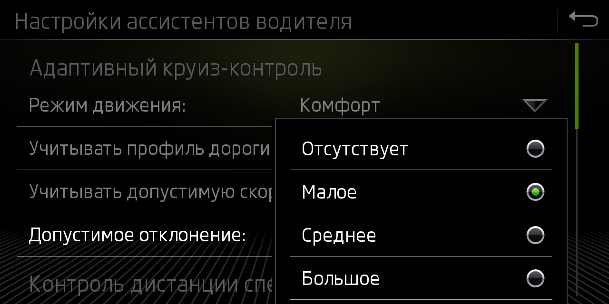
Пункт меню «Учитывать допустимую скорость» и непосредственно включает или выключает режим регулирования скорости АСС в зависимости от знаков в навигации или распознанных камерой.
Блок 13 → Кодирование:
Tempolimitassistent_CarMenu: Активировать
Пункт настроек допустимых отклонений в меню «Адаптивного Круиз Контроля»
Блок 13 → Кодирование:
zul_Regelabweichung_CarMenu: large
Выставленные Вами для того или иного знака ограничения будут сохраняться и автоматически подставляться каждый раз при распознавании этих знаков.
Блок 13 → Кодирование:
pACC_Learning_drivers_offset: Активировать
Настройка предупреждения Front Assist¶
Блок 13 → Кодирование:
adjustability_awv_pre_warning: Деактивировать
default_value_awv_pre_warning: Активировать
Кодирование 3Q0/3QD* (MFK 2.0) камеры ассистентов¶
Данная инструкция подходит только для камер 3Q0980654
Lane Assist с адаптивным ведением по полосе — адаптивное ведение исключает "пинг-понг" от полосы к полосе.
Опция отличная, позволяет расслабиться за рулем и не вылавливать центр полосы, по трассе просто незаменима.
Traffic Jam Assist — Ассистент движения в пробке.
Это расширение работы Lane Assist для работы с 0 км/ч. В пробке машина подруливает, разгоняется и тормозит сама, без участия водителя. При остановке более 3 секунд для старта нужно нажать RES или нажать педаль газа.
Emergency Assist — Ассистент экстренной остановки.
Если водитель не желает или не может принимать участие в управлении автомобилем, то машина начинает его будить сначала звуком, потом резким схватыванием тормозов,
если и далее человек не принимает управление, то машина сама включает аварийку и останавливается.
Sign Assist — Ассистент распознавания дорожных знаков. Показывает знаки, которые считывает камера.
Прошивка камеры ассистентов¶
Расположены тут: Прошивки и параметрия
Активации ассистентов¶
Матричные фары IQ Light¶
Блок A5 (камера ассистентов) → Кодирование:
AFS_coding_Light_Assist: Matrixbeam
→ Применить
Активация кнопки вызова ассистентов (для 5Q0 953 502 AJ / Valeo 408 876)¶
Блок 16 → Адаптация:
Электроника рулевой колонки
Клавиша вспомогательных систем водителя
Установл.
→ Применить
Активация Lane Assist без адаптивного ведения по полосе¶
Warning
Для активации Lane Assist обновление параметрии для установленной камеры ассистентов не требуется
Включаем отображение Lane Assist на приборной панели
Блок 17 (комбинация приборов/ActiveInfoDisplay) → Кодирование:
Байт 04 – Бит 6 (Lane_assist): Активировать
Байт 11 – Бит 1 (Lane_assist_BAP): Активировать
Конфигурация камеры ассистентов
Можно использовать готовое кодирование:
000307060007040100220044C150890080000E20004000
Блок A5 (камера ассистентов) → Кодирование:
Байт 14 – меняем значение на A0/A1
Байт 16 – Бит 7: Активировать (либо меняем значение байта на 90/98)
Блок A5 (камера ассистентов) → Адаптация:
Lan_assist_system_mode (Состояние включение ассистента движение по полосе) - Selection_over_menu
Lane_assist_warning_intensity (Интенсивность предупреждений ассистента движения по полосе) - Selection_over_menu
Personalization of lane dept. warning Cl. 15 on (Персонализация момента вмешательство при вкл клеммы 15) - Last Setting (последняя настройка)
→ Применить
HCA – Указание блоку рулевого управления о наличии Lane Assist
Блок 44 (усилитель рулевого) → Кодирование:
Байт 01 – Бит 3 (Heading_control_assist): Активировать
→ Применить
Включаем в меню новые функции
Блок 5F (мультимедия) → Адаптация:
Car_Function_List_BAP_Gen2:
- LDW_HCA_0x19: activated
Car_Function_Adaptations_Gen2:
- menu_display_Lane_Departure_Warning: Активировать
- menu_display_Lane_Departure_Warning_over_threshold_high: Активировать
→ Применить
Указание блоку парковочного ассистента о наличии Lane Assist (У кого PLA3.0 12 Датчиков)
В Tiguan 2G 2020 года выпуска PLA3.0 может стоять в системе как 10 блок, а не 76
Блок 76 → Кодирование:
Ассистент движения по полосе, связ. с усилителем рул. управления
Байт 3 – Бит 5 (HeadingControl Unterstutzung Auswahl): Активировать (Spurhalteassistent aktiviert)
→ Применить
Активация полного комплекта: адаптивный Lane Assist, Traffic Jam Assist, Sign Assist¶
Lane Assist с адаптивным ведением по полосе — исключает "пинг-понг" от полосы к полосе.
Опция отличная, позволяет расслабиться за рулем и не вылавливать центр полосы, по трассе просто незаменима.
Warning
Для работы Traffic Jam Assist необходима параметрия для установленной камеры ассистентов.
Расположены тут: Прошивки и параметрия
Указание блоку климата (08), что установлен обогрев камеры.
Блок 08 → Кодирование:
Байт 08 – Бит 0 (Camera heating): Установлено
→ Применить
Блок 08 – Длинное кодирование:
Нагревательный элемент камеры: не установл.→ установл.
Указание радару ACC, что, установлена камера
Блок 13 (адаптивный круиз) → Кодирование:
Байт 03 – Бит 6 (Front_camera): Установлена
→ Применить
Блок 13 → Длинное кодирование:
Front_camera: не установл.→ установл.
Изменение типа ассистента дальнего света с простого на MDF – маскируемый или неослепляющий дальний. Добавляем ассистент в меню
Блок 09 (бортовая сеть) → Адаптация:
Aussenlicht_Blinker:
- Warnblinken_durch_Fahrerassistenz: available
Fernlicht_assistent:
- Erweiterte_Fernlichtsteuerung: AFS, FLA, Fernlicht ueber AFS → AFS, FLA, Fernlicht (GLW,MDF)
- Menuesteuerung Fernlichtassistent: available
- Fernlichtassistent Reset: Деактивировать
- Menuesteuerung Fernlichtassistent Werkseinstellung: available
- Assistance_lighting_sensitivity_adjustable: detected
→ Применить
Включаем отображение Lane Assist и дорожных знаков на приборной панели
Блок 17 (комбинация приборов/ActiveInfoDisplay) → Кодирование:
Байт 04 – Бит 6 (Lane_assist): Активировать
Байт 11 – Бит 1 (Lane_assist_BAP): Активировать (Добавить лайн ассист в меню ассистентов приборной панели)
Байт 05 – Бит 2 (traffic_sign_display): Активировать
→ Применить
Блок 17 → Длинное кодирование:
Ассистент движения по полосе: Нет → Да
Распознавание дорожных знаков: Нет → Да
Ассистент движения по полосе, BAP, путь: Нет → Да
Активация установленных блоков. Нужно добавить A5 (передние датчики вспомогательных систем) и убрать блок 20 (зеркало с камерой FLA)
Блок 19 (гейтвэй) → Адаптация:
Gateway_Component_List: Node_0x30: not_coded
Gateway_Component_List: Node_0x4F: coded
→ Применить
Блок 19 → Адаптация:
Ассистент дальнего света: Не закодир.
Передние датчики вспомогательных систем для водителя: Закодирован
HCA – Указание блоку рулевого управления о наличии Lane Assist
Блок 44 (усилитель рулевого) → Кодирование:
Байт 03 – Бит 0 (Heading_control_assist): Активировать
→ Применить
Блок 44 → Длинное кодирование:
Ассистент движения по полосе: акт.
Настройка блока фар
Внимание!
Изменение кодировок в данном блоке приводит к сбросу базовых настроек фар. Как вернуть базовые настройки?
Блок 4B (многофункциональный модуль) → Кодирование:
Байт 10 – Бит 6 (mdf_activation): Активировать
headlamp_coding_word: 1
multi_function_camera: installed
→ Применить
Блок 4B → кодирование:
headlamp_coding_word: 0 → 1
mdf_activation: не разблокирован → разблокирован
Указание блоку ABS об возможности экстренной остановки
Блок 03 (ABS) → Кодирование:
Байт 29 – Бит 5 (Electromechanical parking brake): активировать (emergenay braking)
→ Применить
Настройка блока 3С (Ассистент смены полосы движения)
Блок 3С → Кодирование:
Lane_Departure_Warning_System:_with_Lane_Departure_Warning_System
Ю Front_Sensors_Driver_Assistance_System:_with_Front_Sensors_Driver_Assistance_System
→ Применить
Указание блоку парковочного ассистента о наличии Lane Assist (У кого PLA 12 Датчиков)
Полезная информация
В Tiguan 2G 2020 года выпуска PLA3.0 может стоять в системе как 10 блок, а не 76
Блок 76 → Кодирование:
Ассистент движения по полосе, связ. с усилителем рул. управления
Байт 3 – Бит 5 (HeadingControl Unterstutzung Auswahl): Активировать (Spurhalteassistent aktiviert)
→ Применить
Включаем в меню новые функции
Блок 5F (мультимедия) → Адаптация:
Car_Function_List_BAP_Gen2:
- LDW_HCA_0x19: Активировать
- traffic_sign_recognition_0x21: Активировать
- traffic_sign_recognition_0x21_msg_bus: CAN_Extended (Дополнительная шина данных)
Car_Function_Adaptations_Gen2:
- menu_display_Lane_Departure_Warning: Активировать
- menu_display_Lane_Departure_Warning_over_threshol d_high: Активировать
- menu_display_road_sign_identification: Активировать
- menu_display_road_sign_identification_over_threshold_high: Активировать
→ Применить
Даем указание блоку проекции (если есть)
Блок 82 → Кодирование:
Road_sign_detection: available
Lane_departure_warning: available
→ Применить
Конфигурация камеры ассистентов.
Готовое кодирование
000307060007040100222346C154890098000E20004000
Для удобства можно воспользоваться калькулятором битов с расшифровкой А5 блока.
Например, готовую кодировку можно Открыть в калькуляторе
Блок A5 (камера ассистентов) → Кодирование:
Brand: VW
Class: A
Generation: Generation_7
Bodystyle: Suv
Expansion: Not_coded
Production_region: EU
Country_variant: Europe
Chassis: Steel_springs
Steering_bar: Not_coded
Windshield: Heat_protecting_glass
Traffic_side: Right_traffic
PSD_Version: PSD_15 # (1)!
Navigation: MIB_High # (2)!
AAG: Coded # (3)!
SWA (Side assist): Coded # (4)!
ACC: Coded
Pedestrian_break: Not_coded
Blind_spot_detection: Not_coded
Rain_light_sensor: Coded
Main_unit: enabled
PLA: Coded # (5)!
ESP: Coded
Personalize_VZE: Not_Coded
Lan_assist_system_mode: Selection_over_menu
Personalized_key: Version_1.x
Networking_variant: MQB
Radar_interface: Coded
Perso_HC: Last_setting # (6)!
Point_of_intervention: early_setting_over_menu
LaneAssist_AGW_output: disabled
Lane_assist_off_text: disabled
Emergency_Assist: EA_Variant_2
Traffic Sign Recognition (TSR/VZE): coded
HC_mob_line: Not_coded
HC: Coded
FCWP_default_on_prewarning: last_mode
FCWP_delivery_status_prewarning: off
FCWP_extended_prewarning_settings: Not_coded
FCWP_warning_indicator: Not_coded
FCWP: Not_coded
FLA_Additional_High_Beam: no_Additional_High_Beam
FLA_Headinglight_type: LED
Mains_frequency: 50_Hz
AFS_coding_Light_Assist: Dynamic_Light_Assist (or Matrixbeam for Tiguan 2021)
HC_LONGPRESS: Not_Coded (only for Audi)
→ Применить
- Прогнозируемые данные по маршруту. Зависит от установленного ГУ (если нет навигации, то
Not coded) - Тип навигации. Зависит от установленного ГУ
- Если установлен фаркоп
- Если установлен контроль слепых зон
- Если установлен Park Assist
- Запоминание выбранного режима при выключении зажигания
Данные адаптации отключают отображение предупреждения о неработающих знаках
Блок A5 (камера ассистентов) → Адаптация:
Road_sign_recognition_fusion_mode (Распознавание дорожных знаков: режим Fusion): Road_Sign_Fusion
Lane_assist_warning_intensity (Интенсивность предупреждений ассистента движения по полосе): Selection_over_menu
Personalisation_point_of_intervention (Персонализация момента вмешательства): Last Setting (последняя настройка)
Adaptation_tsr:
- Par_relevance_mode: enabled
- Par_country_mode: manuel
- Par_country_code_RSR: 205 # (1)!
- Par_country_code_VZF: 205
→ Применить
- Для стран СНГ можно использовать значение от Польши. Список возможных значений:
57 — Чехия
68 — Эстония (50/90/90)
73 — Финляндия
74 — Франция
82 — Германия
118 — Латвия
124 — Литва (50/90/130)
172 — Польша (50/60/90/100/120/140)
173 — Португалия
177 — Румыния
178 — Россия
197 — Испания
205 — Швеция (50/90/110)
BAP Personalization
BAP Personalization — персонализация программирования настроек под каждый ключ в машине. Для автомобилей Tiguan данная опция не задействована — значение ни на что не влияет.
Разделение дорожных знаков¶
Существует возможность добавить на головное устройство отображение дорожных знаков из базы навигации (Sat Nav Speed Limits),
а на AID (Virtual Cockpit) — отображение знаков с камеры ассистентов.

Блок 5F (мультимедия) → Адаптация:
Car_Function_List_BAP_Gen2:
- traffic_sign_recognition_0x21: Деактивировать
→ Применить
Car_Function_Adaptations_Gen2:
- menu_display_road_sign_identification: Деактивировать
- menu_display_road_sign_identification_over_threshold_high: Деактивировать
→ Применить
Блок 5F (мультимедия) → Кодирование:
byte_24_vza: Активировать
Подсветка перекрестков при приближении к ним¶
Топовые MID LED фары умеют активировать боковой свет на перекрестках и сами поворачивать свет еще при приближении к повороту по навигационным данным.
Блок 4B → Кодирование:
psd_data: Активировать
Crossing_light_with_route_data: Активировать — включает боковой свет при приближении к перекрестку
Predictive_afs: Активировать — управляет светом на поворотах по навигационным картам
После этого необходима базовая установка фар!
Калибровка камеры ассистентов 3Q0/3QD* (MFK 2.0)¶
Для успешной и правильной работы камеры Lane Assist необходимо: 1. Залитая правильная параметрия 2. Правильно установленная камера Lane Assist 3. Правильная кодировка камеры 4. Правильно произведена процедура калибровки камеры
Адаптации¶
Каналы адаптации Calibration target position не влияют на калибровку камеры, но они могут влиять на ее работу
Блок A5 (камера ассистентов) → Адаптация:
Calibration target position-Target 1: calibration mark 1: x-coordinate, Passat 2400 mm (Tiguan 2541 mm)
Calibration target position-Target 1: calibration mark 1: y-coordinate, Passat 745 mm (Tiguan 735 mm)
Calibration target position-Target 1: calibration mark 1: z-coordinate, Passat 1506 mm (Tiguan 1694 mm)
Calibration target position-Target 1: calibration mark 2: x-coordinate, Passat 2400 mm (Tiguan 2541 mm)
Calibration target position-Target 1: calibration mark 2: y-coordinate, Passat -745 mm (Tiguan -735 mm)
Calibration target position-Target 1: calibration mark 2: z-coordinate, Passat 1506 mm (Tiguan 1694 mm)
Calibration target position-Target 1: calibration mark 3: x-coordinate, Passat 2400 mm (Tiguan 2541 mm)
Calibration target position-Target 1: calibration mark 3: y-coordinate, Passat 745 mm (Tiguan 735 mm)
Calibration target position-Target 1: calibration mark 3: z-coordinate, Passat 846 mm (Tiguan 1106 mm)
Calibration target position-Target 1: calibration mark 4: x-coordinate, Passat 2400 mm (Tiguan 2541 mm)
Calibration target position-Target 1: calibration mark 4: y-coordinate, Passat -745 mm (Tiguan -735 mm)
Calibration target position-Target 1: calibration mark 4: z-coordinate, Passat 846 mm (Tiguan 1106 mm)
Y — это точки калибровки по горизонтальной поперечной оси,
Z — это точки калибровки по вертикальной оси (меняются с изменением высоты камеры на разных автомобилях).
Установка калибровочной панели¶
Макет для калибровки

Калибровочная панель должна быть центрирована перед автомобилем и быть на расстоянии 1500 мм от центральной оси передних колес, высота установки стенда — 1570 мм от плоскости, на которой стоит автомобиль, до верхнего края стенда.
Шаг 1 — Расположите калибровочной стенд на расстоянии 1500 мм ± 20 мм от центральной оси передних колес автомобиля. Высота установки стенда — 1570 мм от плоскости, на которой стоит автомобиль, до верхнего края стенда. Стенд должен стоять строго по уровню (как вертикальному, так и горизонтальному), вертикальный центр стенда должен совпадать с продольным центром автомобиля и плоскость стенда должна быть строго перпендикулярна продольной оси автомобиля.
Шаг 2 — Выполните калибровку (процесс калибровки описан ниже). При калибровке вводим РЕАЛЬНЫЕ значения высоты колесных арок!
Расчет установки высоты плаката:
1200 — высота камеры
535 — расстояние от нижней кромки стенда до белого прямоугольника
110/2=55 — расстояние от нижней части прямоугольника до его центра
960 — расстояние от нижней кромки до верхней кромки плаката
ИТОГО: 1200-535-55+960=1570 (до верхней кромки плаката)
1480 — высота камеры
535 — расстояние от нижней кромки стенда до белого прямоугольника
110/2=55 — расстояние от нижней части прямоугольника до его центра
960 — расстояние от нижней кромки до верхней кромки плаката
ИТОГО: 1480-535-55+960=1850 (до верхней кромки плаката)
Процесс калибровки¶
- Odis Service – "Топология шин данных", блок A5, нажимаем правой кнопкой "Идентификация блока", в списке блоков станет активным блок A5.
- Выбираем пункт "Передние датчики вспомогательных систем для водителя (BOSCH)"
- Правой кнопкой на блоке A5 – измерительная техника
- Выбираем А5 – калибровка
- В следующих 4 шагах вводим РЕАЛЬНЫЕ значения высоты колесных арок.
Длительность процесса калибровки до 10 секунд, после чего система попросит выключить зажигание, подождать и включить его снова.
Углы в результатах должны быть как можно ближе к 0.
3 градуса — предельное значение, при котором камера не откалибруется. На практике углы до 1 градуса — норма.

Выполняем тестовую поездку на скорости более 65 кмч в течение 10 минут по дороге с разметкой и проверяем значения динамической калибровки (калибровка во время езды).
Максимальное значение углов динамической калибровки — 3 градуса.
Как только этот угол больше, камера будет выбивать ошибку и ассистенты отключатся.
Если динамическая калибровка, а именно угол продольного наклона выше 1,5 градуса, то это говорит о том, что при калибровке стенд был установлен не правильно или залита неверная параметрия.

Кодирование 2Q0* (MFK 3.0) камеры ассистентов¶
Данная инструкция подходит только для камер 2Q0980653
Lane Assist с адаптивным ведением по полосе — адаптивное ведение исключает "пинг-понг" от полосы к полосе.
Опция отличная, позволяет расслабиться за рулем и не вылавливать центр полосы, по трассе просто незаменима.
Traffic Jam Assist — Ассистент движения в пробке.
Это расширение работы Lane Assist для работы с 0 км/ч. В пробке машина подруливает, разгоняется и тормозит сама, без участия водителя. При остановке более 3 секунд для старта нужно нажать RES или нажать педаль газа.
Для активации требуется параметрия.
Emergency Assist — Ассистент экстренной остановки.
Если водитель не желает или не может принимать участие в управлении автомобилем, то машина начинает его будить сначала звуком, потом резким схватыванием тормозов,
если и далее человек не принимает управление, то машина сама включает аварийку и останавливается.
Sign Assist — Ассистент распознавания дорожных знаков. Показывает знаки, которые считывает камера.
Для активации необходим SWaP код.
SWaP коды расширения функционала¶
100E1000 — Улучшенное ведение по полосе (aLDW)
100E1100
100E1200
100E1300
100E1400
100E1500
100E1600 — Распознавание предметов на пути
100E1700 — Распознавание пешеходов (FCPW)
100E0F00 — Распознавание знаков (TSR/VZE)
Прошивка камеры ассистентов¶
Расположены тут: Прошивки и параметрия
Активации ассистентов¶
Активация Light Assist — ассистент дальнего света¶
Блок 09 (бортовая сеть) → Адаптация:
Fernlicht_assistent:
- Erweiterte_Fernlichtsteuerung: "AFS: FLA: BCM-Fernlicht" или "AFS: FLA: Fernlicht ueber AFS"
- Menuesteuerung Fernlichtassistent Werkseinstellung: available
- Menuesteuerung Fernlichtassistent: available
- Fernlichtassistent Reset: Деактивировать
→ Применить
Блок A5 (камера ассистентов) → Кодирование:
Байт 15 – Бит 5-7: (20) AFS_coding_Light_Assist,High_Beam_Assist
→ Применить
Установите STG A5 > Кодирование > Байт 15 > Бит 5-7 на «20 AFS_coding_Light_Assist,High_Beam_Assist».
Активация помощника удержания в полосе (Lane Assist)¶
Включаем отображение Lane Assist на приборной панели
Блок 17 (комбинация приборов/ActiveInfoDisplay) → Кодирование:
Байт 04 – Бит 6 (Lane_assist): Активировать
Байт 11 – Бит 1 (Lane_assist_BAP): Активировать
HCA – Указание блоку рулевого управления о наличии Lane Assist
Блок 44 (усилитель рулевого) → Кодирование:
Байт 03 – Бит 1 (Heading_control_assist): Активировать
→ Применить
Включаем в меню новые функции
Блок 5F (мультимедия) → Адаптация:
Car_Function_List_BAP_Gen2:
- LDW_HCA_0x19: Активировать
- LDW_HCA_0x19_msg_bus: CAN_Extended
Car_Function_Adaptations_Gen2:
- menu_display_Lane_Departure_Warning: Активировать
- menu_display_Lane_Departure_Warning_over_threshold_high: Активировать
→ Применить
Указание блоку парковочного ассистента о наличии Lane Assist (У кого PLA3.0 12 Датчиков)
PLA3.0 может стоять в системе как 10 блок, а не 76
Блок 76 → Кодирование:
Ассистент движения по полосе, связ. с усилителем рул. управления
Байт 3 – Бит 5 (HeadingControl Unterstutzung Auswahl): Активировать (Spurhalteassistent aktiviert)
→ Применить
Конфигурация камеры ассистентов
Блок A5 (камера ассистентов) → Кодирование:
Байт 08 – Бит 5-7 (Point_of_intervention): A0 late, setting over menu
Байт 09 – Бит 0-1 (Configuration_for_lane_departure_warning_Kl15): 03 Last_setting
Байт 09 – Бит 7 (HC): (1) coded
Байт 09 – Бит 2-3 (Lane_assist_system_mode): 0C Selection_over_menu
Байт 09 – Бит 4-5 (HC advanced takeover request): (1) coded
Байт 17 – Бит 0 (HC messages): (1) coded
→ Применить
Прошивки для камеры ассистентов¶
Для полноценной работы камеры ассистентов нужна правильная прошивка и параметрия к ней.
Камеры могут быть 3 вариантов:
- 5Q0... - MFK 1.0 (Lane Assist, Sign Assist, DLA)
- 3Q0/3QD... - MFK 2.0 (Lane Assist, Sign Assist, Traffic Jam Assist, DLA)
- 2Q0... - MFK 3.0 (Lane Assist, Sign Assist, Traffic Jam Assist, Pedestrian Assist, DLA)
Параметрии для прошивок L и H с увеличенным временем предупреждения (60с) для разных машин можно найти на https://mibsolution.one
Прошивки для камер вида MFK3¶
| ID оборудования | Прошивка | Параметрия (ODIS XML) |
Примечания |
|---|---|---|---|
| FL_2Q0980653_1400_2Q0980653D | (Скачать) | (Скачать для Škoda) |
Прошивки для камер вида MFK2¶
Важно!
Порядок обновления должен быть следующим: G → H → L → T → Q → R → S → T
Изменение этого порядка в обратном порядке повредит вашу камеру
Поколение 4:
| ID оборудования | Прошивка | Параметрия (ODIS XML) |
Примечания |
|---|---|---|---|
| FL_3Q0980654_0920_3Q0980654S | (Скачать) | (Скачать) | Не рекомендуется для Tiguan 2G. Существуют проблемы с удержанием в полосе |
| FL_3Q0980654_0460_3Q0980654R | |||
| FL_3Q0980654_0881_3Q0980654Q | |||
| FL_3Q0980654_0451_3Q0980654M |
Поколение 3:
| ID оборудования | Прошивка | Параметрия (ODIS XML) |
Примечания |
|---|---|---|---|
| FL_3Q0980654_0611_3QD980654T | Прошивка для Tiguan 2G от модельного ряда 2020 года | ||
| FL_3Q0980654_0610_3QD980654L | (Скачать) | (Скачать для VW Tiguan (60s) | |
| FL_3QD980654_1611_3QD980654A | (Скачать) | (Скачать для Škoda и Seat) |
Поколение 2:
| ID оборудования | Прошивка | Параметрия (ODIS XML) |
Примечания |
|---|---|---|---|
| FL_3Q0980654_0272_3QD980654H | (Скачать) | (Скачать для VW Tiguan (60s) | |
| FL_3QD980654_1272_3QD980654 | (Скачать) | ||
| FL_3Q0980654_0231_3QD980654G | (Скачать) | ||
| FL_3Q0980654_0220_3QD980654F |
Поколение 1:
| ID оборудования | Прошивка | Параметрия (ODIS XML) |
Примечания |
|---|---|---|---|
| FL_3Q0980654_0024_3Q0980654D | |||
| FL_3Q0980654_0010_3Q0980654C |
Активные системы помощи при вождении¶
Настройка BDW (Brake Disc Wiper / Просушка дисков)¶
Блок 3-ABS/ESP → Адаптация:
Disk drying:
- По умолчанию: по умолч. стоит слабо (weak)
- Новое значение: сильно (strong)
→ Применить
Настройка ASR (Starting vibration reduction / Уменьшение колебания при трогании)¶
Normal (меньше режет тягу)
Strong (по умолчанию)
Maximum (для тех, кто не хочет стирать резину, но система душит движок)
Блок 3-ABS/ESP → Адаптация:
Уменьшение колебания при трогании / Starting vibration reduction: вводим нужное значение уровня
→ Применить
TSC (Traction Control System / Компенсация увода вбок)¶
В случае резкого разгона автоматически будет произведена компенсация увода автомобиля вправо.
Tip
Возможны следующие значения:
- inactive
- with learned Value active / с адапционной величиной (2 бит)
- without learned Value active (3 бит)
Блок 44 (Усилитель рулевого управления) → Кодирование:
torque_steer_function / Компенсация увода в бок: нужное значение
→ Применить
Блок 44 Усилитель рулевого управления → Кодирование → Длинное кодирование:
Байт 0 – Активировать значение
Выход → Сохранить
Ассистент удержания на спуске или подъеме Hill Hold Control (HHC)¶
HHC удерживает автомобиль на спуске или подъеме и предотвращает его самопроизвольное скатывание, пока водитель не нажмет педаль газа.
Блок 3-ABS/ESP → Кодирование → Длинное кодирование:
Байт 25 – Бит 0: Активировать
Значения адаптации
Есть 3 уровня HHC: early, normal, late
Блок 3-ABS/ESP → Адаптация:
HHC (Berganfahrassistent, Hill_hold_assist_control): ранее (early)
→ Применить
Если после активации у Вас не пропадает ошибка по ABS, значит Ваш блок не поддерживает HHC.
Отключение ESC через меню¶
Warning
На машинах 2016-17г возможна установка 31-байтных блоков ABS.
В нем есть еще 1 последний байт, обычно там стоит значение 03 – его трогать не надо!
Tip
Возможны следующие значения:
01 = ESC & ASR On
02 = ESC & ASR On/Off
03 = ESC & ASR On + ESC SPORT
04 = ESC & ASR On + ESC Off
05 = ESC On/Off + ASR Off
06 = ESC On/Off + ESC Sport
07 = ESC On/Off + ASR Off
08 = ESC On/Off + ESC Sport
09 = ESC On + ASR Off + ESC Sport
Блок 3-ABS/ESP → Кодирование:
Байт 29 – заменить на «05» (даёт меню ESC ВКЛ, ASR выкл, ESC выкл.)
→ Применить
Чтобы, ESP не включалась обратно при скорости выше 100км/ч:
Блок 3-ABS/ESP → Адаптация:
ESP activation depending on speed (Electronic stabilitin program): Деактивировать
→ Применить
01 — ABS/ESP → Кодирование → Длинное кодирование:
Байт 29: заменить на «05» (даёт меню ESC ВКЛ, ASR выкл, ESC выкл.)
Выход → Сохранить

Настройка XDS (притормаживание внутреннего колеса для ввинчивания в поворот)¶
Tip
Поставил на max и попробовал в сравнении с strong, по ощущениям притормаживание внутреннего (в повороте) колеса в strong происходит на большей скорости и с большим выворотом руля чем в режиме maximum.
Радиус поворота однозначно меньше при maximum.
Блок 03 → Кодирование:
Байт 17 – Бит 3: Активировать
03 Блок ABS → Кодирование → Длинное кодирование:
Байт 17 – Бит 3 (Электронная блокировка дифференциала (расширенная)): Активировать
Выход → Сохранить
Адаптация BAS (Brake Assist System / Система экстренного торможения)¶
Система экстренного торможения — электронная система управления давлением в гидравлической системе тормозов, которая в случае необходимости экстренного торможения и недостаточного при этом усилия на педали тормоза самостоятельно повышает давление в тормозной магистрали.
Блок 03 (АБС) → Адаптация:
brake assist: (0-среднее, 1-низкое, 2-высокое)
→ Применить
Активация CBC (Corner Brake Control / Система стабилизации торможения при повороте)¶
Система чаще всего уже активна. Является частью ABS, ESP или другой системы безопасности
Система стабилизации торможения при повороте — CBC (Corner Brake Control), срабатывает при торможении в повороте таким образом, чтобы тормозным усилием создать корректирующий разворачивающий «противомомент», тем самым корректирует проявление «рыскания» при торможении в повороте.
Блок 03 (АБС) → Кодирование:
Байт 15 – 4 бит: Активировать
→ Применить
Настройка выбора режимов движения (FPA параметрия)¶
Для правок FPA параметрии необходимо установить:
- редактор 010 Editor (https://www.sweetscape.com/010editor/)
- fpa_dataset.bt темплейт (https://github.com/jilleb/MQB-FPA/)
- fpa_dataset_save.1sc скрипт (https://github.com/jilleb/MQB-FPA/)
Параметрия¶
Нас интересует параметрия 19 блока, расположенная по адресу 0x0000B80.
Первые 4 байта параметрии это версия. Например, 0x4E, 0x43,0x30,0x30 = NC00.
Достать параметрию можно только с помощью ODIS online.
Редактирование параметрии в 010 Editor¶
- Открываем файл со скаченной FPA параметрией и копируем все биты, что находятся в секции
. - Заходим в 010 editor, создаем новый документ и переключаем его в hex-mode (View → Edit as → HEX).
- Вставляем скопированные байты в редактор (Edit → Paste from → Paste from HEX text).
- После этого необходимо запустить fpa_dataset шаблон (Run template). Значения в редакторе будут помечены разными цветами:
- Зеленый = известные и проверенные значения,
- Желтый = возможные значения,
- Красный = неизвестно,
- Голубой = для hybrid cars.
Что возможно сделать¶
- Отключить горящий светодиод Mode на шайбе в стандартном режиме (mode_light_on = 00).
- Возможность DSG сохранять выбранный режим после выключения зажигания (значение FFFE).
- Настройка полного привода: Eco, Normal, Offroad.
- Возможность включить/отключить режим наката DSG.
- Настройки двигателя.
- Тонкие настройки режимов.
- Включение DCC (если установлена).
Сохранение параметрии¶
Скрипт "fpa_dataset_save.1sc" служит для генерации параметрии под ODIS или VCP.
В файле скрипта можно задать:
saveFormat = 0; // VCP format
saveFormat = 1; // ODIS format
saveAddress = 0; // This will use 0x0B80 as flashing address (newer gateway firmware versions)
saveAddress = 1; // This will use 0x2388 as flashing address (older gateway firmware versions)
После этого с помощью скрипта необходимо скачать исправленную параметрию и залить её в 19 блок.
Движение и управление¶
Перенастройка рулевой рейки¶
Руль становится более информативным.
Если поставить профиль "Direct" — руль будет тяжелым с самых малых скоростей.
Если поставить профиль "Incremental" — руль будет наливаться тяжестью с ростом скорости.
Блок 44 (Усилитель рулевого управления) → Кодирование:
Выбор активного профиля вождения: Активировать
→ Применить
Блок 44 (Усилитель рулевого управления) → Адаптация:
Характеристики усилителя рулевого управления: "Dynamik"
Переключение профиля режима езды: "Incremental"
→ Применить
Отключение стабилизации прицепа¶
Блок 03 → Кодирование:
- Trailer Stabilization: Деактивировать
→ Применить (с перезагрузкой блока)
Блок 03 — ABS → Адаптация:
- Канал адаптации № 56: 1 – включено, 0 – выключено
Выход → Сохранить
Мягкое трогание с Autohold¶
Иногда ощущается небольшой рывок при начале движения со включенным AutoHold. Эффект есть и весьма ощутимый, теперь авто трогается очень плавно.
Блок 3-ABS/ESP → Адаптация:
Drive_away_assist_control (Anpassung des Dynamischen Anfahrassistenten): рано (Früh)
Hill_hold_assist_control (Dynamischer Anfahrassistent): рано (Früh)
→ Применить
Блок 03 управления электроника тормозной системы → Адаптация:
Динамический ассистент трогания: рано
Ассистент движения на подъёме: рано
Время отклика педали газа¶
Блок 44 → Адаптация:
Переключение профиля режима езды (Switching Driving Profile): Непосредственно, управление по пороговой величине
→ Применить
Адаптация DSG-7¶
- Разогреть мотор и коробку — около часа езды
- Двигатель заглушен, зажигание включено
Блок 02 → электроника КП → базовые установки: запуск быстрой адаптации двойной фрикционной муфты ждем надпись о завершении - Выключаем зажигание
- Запускаем мотор — вкл. ручник (тормоз не нажимаем)
- Передача P
Блок 02 → электроника КП → базовые установки: базовая установка КП ждем надпись о завершении и слушаем пугающий скрежет и толчки КП
Parking and Maneuvering¶
Setting the speed at which parking sensors will be disabled¶
Block 03 (Brake System Electronics Block) → Adaptation:
Shutdown parking aid: 20km/h
→ Apply
3D Area View for the rearview camera¶
Block 6C – Rear View Camera System → Coding:
3D_Presentation: Activate
Aesthetic lights
Кодирование освещения салона¶
Плавное включение и выключение освещения в салоне¶
Подсветка всех кнопок в салоне загорается и гаснет плавно, смотрится очень естественно и красиво.
Блок 09 → Адаптация:
Suchbeleuchtung_allgemein:
- KL58 Einschalten mit Rampe → Active
→ Применить
Пульсация кнопки Старт-Стоп Engine¶
Блок В7 Kessy Безопасный доступ → Адаптация:
DeveloperCoding Search lights:
- ZAT_illumination_concept_mybeat_clamp58xt: Активировать
- ZAT_illumination_modus_mybeat_clamp58xt: Активировать
→ Применить
Цветовые профили¶
- ODIS_E шкала на 30 цветов для машин без RGB для 09 блока (адаптации)
- ODIS_E шкала на 10 цветов для машин без RGB для 09 блока (адаптации)
Блок 09 → Адаптация:
Interior_light_2nd_generation / Освещение салона 2-го поколения:
- Mittelkonsolenbeleuchtung mehrfarbig: акт
→ Применить
---
Interior_light_lamp_configuration / Освещение салона, конфигурация фонарей:
- Ambientemenue mit globalem aus: акт.
- Ambientemenue mit alle Zonen: акт.
- Ambient_Farbliste_HMI: акт.
→ Применить
---
Ambience_lightning_color_list / Ambientelicht Farbliste / Эстетическая подсветка
Старое значение у всех: 0
— Rotwert Farbe 1: 217
— Gruenwert Farbe 1: 221
— Blauwert Farbe 1: 235
— Rotwert Farbe 2: 255
— Gruenwert Farbe 2: 172
— Blauwert Farbe 2: 5
— Rotwert Farbe 3: 253
— Gruenwert Farbe 3: 108
— Blauwert Farbe 3: 55
— Rotwert Farbe 4: 222
— Gruenwert Farbe 4: 70
— Blauwert Farbe 4: 20
— Rotwert Farbe 5: 252
— Gruenwert Farbe 5: 116
— Blauwert Farbe 5: 240
— Rotwert Farbe 6: 132
— Gruenwert Farbe 6: 76
— Blauwert Farbe 6: 222
— Rotwert Farbe 7: 0
— Gruenwert Farbe 7: 102
— Blauwert Farbe 7: 225
— Rotwert Farbe 8: 1
— Gruenwert Farbe 8: 192
— Blauwert Farbe 8: 255
— Rotwert Farbe 9: 0
— Gruenwert Farbe 9: 204
— Blauwert Farbe 9: 0
— Rotwert Farbe 10: 182
— Gruenwert Farbe 10: 255
— Blauwert Farbe 10: 57
→ Применить
Что это за цифры?
- Rotwert Farbe 1: 217
- Gruenwert Farbe 1: 221
- Blauwert Farbe 1: 235
Это цвета в формате RGB для шкалы выбора цвета. Можно перед адаптацией составить свой список желаемых цветов, используя калькулятор цвета (например, https://www.colorspire.com/rgb-color-wheel)
Расширенные цвета
Расширенные цвета задаются в адаптации 9 блока: Ambience_lightning_color_list_2
Выбор цвета в зависимости от профиля движения¶
Установленный гейт должен иметь версию софта не ниже 4344 или 5344 и иметь индекс Q и выше
Меню эстетической подсветки
Блок 19 → Кодирование:
FPA_Funktion_AMB: Активировать
→ Применить (с перезагрузкой блока)
Блок 5F → Адаптация:
Car_Function_Adaptations_Gen2:
- Menu_display_ambient_illumination — Включ
- Menu_display_ambient_illumination_clamp_15_off — не активир.
- Menu_display_ambient_illumination_over_threshold_high — Включ.
- Menu_display_ambient_illumination_standstill — не активир.
- Menu_display_ambient_illumination_after_disclaimer — не активир.
→ Применить
Блок 09 → Адаптация:
Interior_light_lamp_configuration / Освещение салона, конфигурация фонарей:
- Ambientemenue mit globalem aus — акт.
- Ambientemenue mit alle Zonen — акт.
- Ambient_Farbliste_HMI — акт.
- Ambience_light_colorlist_default — 1 (или 0)
- Farbwahl ueber HMI — не акт.
- Farbwahl ueber Fahrprofil — не акт.
→ Применить
Interior_light_2nd_generation / Освещение салона 2-го поколения:
- Ambiente_Fahrprofil_Individual — 7
- Ambiente_Farbwahl_FPA_waehlbare_Kopplung — active
- Ambiente_Farbwahl_FPA_waehlbare_Kopplung_Status_hmi_default — сопряжены (coupled)
- Mittelkonsolenbeleuchtung mehrfarbig — акт.
→ Применить
Профили движения
Расшифровка профилей
Fahrprofil_0 — при открытии дверей на заглушенном авто
Fahrprofil_2 — обычный — синий
Fahrprofil_3 — спорт — красный
Fahrprofil_4 — бездорожье — сиреневый
Fahrprofil_5 — эко — зеленый
Fahrprofil_7 — индивидуальный — фиолетовый
Fahrprofil_10 — снег — голубой
Fahrprofil_11 — индивидуальный режим бездорожье
Блок 09 → Адаптация:
Ambientelicht Zuordnung der Farbe zum Fahrprofi:
- Fahrprofil_0 — 1
- Fahrprofil_1 — 1
- Fahrprofil_2 — 7
- Fahrprofil_3 — 4
- Fahrprofil_4 — 6
- Fahrprofil_5 — 9
- Fahrprofil_6 — 8
- Fahrprofil_7 — 5
- Fahrprofil_8 — 1
- Fahrprofil_9 — 1
- Fahrprofil_10 — 8
- Fahrprofil_11 — 1
- Fahrprofil_12 — 1
- Fahrprofil_13 — 1
- Fahrprofil_14 — 1
- Fahrprofil_15 — 1
→ Применить
Скорость переключения профилей
Блок 19 → Адаптация:
Driving Profile Selection Parameter:
- Driving Profile Selection Toogle Time Adaptation — вместо 2000 мс ставим 0
→ Применить
Отключение освещения салона при открытии багажника¶
Изначально при открытии крышки багажника загорался свет не только в нем, но и в салоне
Блок 09 → Адаптация:
Освещение салона 2го поколения:
- Innenlicht bei offenem Heckdeckel einschalten: Деактивировать
→ Применить
Кодирование зон освещения салона¶
Общая информация¶
За помощь в создании данной инструкции выражаю благодарность Вячеславу
Список обозначения зон регулировки яркости
innenlicht – внутренне освещение салона
fussraum – ноги
tueren – дверь
cockpit – передняя панель (ниша беспроводной зарядки)
miko – центральная консоль
dach – крышка
Список существующих фонарей
Ambiente_Applikationsleisten_in_Tuertafel – подсветка дверной панели Ambiente_Lautsprecher – подсветка динамиков
Ambiente_Applikationsleisten_in_Instrumententafel – подсветка ниши беспроводной зарядки
Cockpitbeleuchtung – подсветка передней консоли
Mittelkonsolenbeleuchtung – подсветка ниши беспроводной зарядки
Dachbeleuchtung – подсветка крыши
Panoramaschiebedachbeleuchtung – подсветка панорамы
Fussraumbeleuchtung – подсветка ног
Данные кодировки возможны только через OBD11 или ODIS
Для установки дополнительных ламп освещения салона необходимо выполнить несколько действий:
- установить фонарь, подвесить его на свободный фонарь
- активировать фонарь
- выставить яркость
Прорисовка "солнышек" в меню Эстетической подсветки¶
Не работает на composition color (у него нет визуализации зон, у него зоны идут списком).
Данная кодировка возможна только через OBD11 или ODIS
Данное кодирование актуально тем, у кого с завода стоит только подсветка ног, и нет эстетической подсветки.
Часто в этом случае при активации эстетической подсветки пропадает возможность регулировки зоны подсветки ног, а именно
того самого солнышка и визуализации этой подсветки.
Кроме того, данная информация пригодится для тех кто все-таки установил дополнительные лампы подсветки, или только собирается это сделать.
За активацию дополнительных зон в меню Эстетической подсветки в 9 блоке отвечают 3 параметра адаптации Освещение салона, параметры / Interior_light_parameter
- p_ambientelicht_verbauinformation_HMI
| Бит | Описание |
|---|---|
| 0 | Освещение ног (визуализация фонарей освещения ног)* |
| 1 | Освещение ног (без визуализации) |
| 2 | Освещение пер.панели (визуализация полоски)* |
| 3 | Пусто |
| 4 | Центральная консоль (без визуализации) |
| 5 | Освещение пер.панели (без визуализации) |
| 6 | Освещение пер.панели (без визуализации) |
| 7 | Освещение пер.панели (без визуализации) |
- p_ambientelicht_verbauinformation_HMI2
| Бит | Описание |
|---|---|
| 0 | Центральная консоль (без визуализации) |
| 1 | Центральная консоль (без визуализации) |
| 2 | Освещение двери (визуализация фонарей подсветки ручек)* |
| 3 | Освещение двери (без визуализации) |
| 4 | Освещение двери (визуализация полосок)* |
| 5 | Освещение двери (без визуализации) |
| 6 | Освещение двери (без визуализации) |
| 7 | Освещение двери (без визуализации) |
- p_ambientelicht_verbauinformation_HMI3
| Бит | Описание |
|---|---|
| 0 | Освещение двери (без визуализации) |
| 1 | Освещение потолка (без визуализации) |
| 2 | Освещение потолка (визуализация освещения фонаря)* |
| 3 | Освещение потолка (без визуализации) |
| 4 | Пусто |
| 5 | Пусто |
| 6 | Пусто |
| 7 | Пусто |
Пример кодирования – активация "солнышка" и визуализации подсветки потолка

Блок 09 → Адаптация:
Освещение салона, параметры / Interior_light_parameter:
- p_ambientelicht_verbauinformation_HMI3: 110
→ Применить
Пример кодирования – активация визуализации подсветки ручек

Блок 09 → Адаптация:
Освещение салона, параметры / Interior_light_parameter:
- p_ambientelicht_verbauinformation_HMI2: 100
→ Применить
Установка фонаря на свободный канал¶
Для подключения диодов необходимо найти свободные пины на ВСМ. Это зависит от комплектации.
Затем ищется соответствующий свободный канал, например, владельцы MID LED могут подключить лампу на пин 36,
а затем задать настроить свободный канал в кодировках Leuchte0BLK VLB36 и прописать в нем диод и функцию.
Возможные функции:
| Функция | Описание |
|---|---|
| Ambientelicht 1 | Солнышко над бардачком |
| Ambientelicht 2 | Солнышко над бардачком |
| Ambientelicht 3 | Солнышко двери |
| Ambientelicht 4 | Пусто |
| Ambientelicht 5 | Пусто |
Lasttyp 0 — LED Kleinleistung
Lichtfunktion A 0 – Ambientelicht 1
Dimmwert AB 0 — 99
Активация фонаря¶
Если какое-то "солнышко" после включения не появилось, то необходимо активировать сам фонарь.
Например, активация фонаря подсветки ног:
Блок 09 → Адаптация:
Освещение салона, конфигурация фонарей / Interior_light_lamp_configuration
- Fussraumbeleuchtung: installed
Установка яркости подсветки¶
За значения яркости конкретного фонаря в 9 блоке отвечают следующие параметры:
Блок 09 → Адаптация:
Освещение салона, параметры / Interior_light_parameter:
p_adaption_kundenwunsch_
p_helligkeit_entriegelt_
p_helligkeit_max_
p_helligkeit_HD_auf_zuendung_ein_
p_helligkeit_HD_auf_zuendung_aus_
p_helligkeit_dieseTuer_auf_zuendung_ein_
p_helligkeit_andereTuer_auf_zuendung_ein_
p_helligkeit_Fzg_geschlossen_zuendung_ein_
p_helligkeit_dieseTuer_auf_zuendung_aus_
p_helligkeit_andereTuer_auf_zuendung_aus_
p_helligkeit_einausstieg_
p_helligkeit_Fzg_geschlossen_zuendung_aus_
p_helligkeit_Tueren_geschlossen_HD_auf_zuendung_aus_
p_helligkeit_Tueren_geschlossen_HD_zu_zuendung_aus_
p_helligkeit_Tueren_geschlossen_schluessel_ab_
p_helligkeit_Fzg_geschlossen_schluessel_ab_
Все значения можно к примеру взять из уже имеющегося канала, например, подсветка ног: fussraum
Яркость плафонов по умолчанию
Блок 09 → Адаптация:
Освещение салона 2-го поколения / Interior_light_2nd_generation
- Defaultwert Ambienteprofil Mittelkonsole: 80
- Defaultwert Ambienteprofil Dach: 80
- Defaultwert Ambienteprofil Farbe: 80
- Defaultwert Ambienteprofil Fussraum: 80
- Defaultwert Ambienteprofil Tuer: 80
Регулировка яркости
Блок 09 → Адаптация:
Освещение салона 2-го поколения / Interior_light_2nd_generation
- Helligkeit Mittelkonsolenbeleuchtung nicht berechnen — не акт. (запрет на регулировку)
- Farbausgabe Mittelkonsolenbeleuchtung nicht berechnen — акт. (регулировка яркости)
Задержка включения внутреннего освещения¶
Кодировки в 9 блоке позволяют реализовать возможность последовательного включения света в салоне.
За это отвечают следующие параметры:
Блок 09 → Адаптация:
Освещение салона, параметры / Interior_light_parameter:
- p_t verzoegerung einstieg innenlicht — задержка включения внутреннего освещения при входе, зажигание выключено
- p_t verzoegerung ausstieg innenlicht — задержка включения внутреннего освещения при выходе, зажигание выключено
- p_t verzoegerung oeffnen innenlicht — задержка включения внутреннего освещения при открытии двери, зажигание включено
- p_t verzoegerung entriegelt innenlicht — задержка включения внутреннего освещение при разблокировки центрального замка
- p_t verzoegerung schliessen innenlicht — задержка выключения внутреннего освещения при закрытии двери, зажигание включено
- p_t verzoegerung schluessel ab innenlicht — задержка выключения внутреннего освещения при включении зажигания
- p_t verzoegerung verriegelt innenlicht — задержка выключения внутреннего освещения при блокировки центрального замка
Всего по 7 функций на каждый фонарь. Все остальные фонари аналогичны внутреннему освещению (плафону потолка).
Например,
Включение для ламп двери ставим 0.8с, внутреннего освещения ставим 1.6с.
Подсветка ног остается так же и загорается первой, потом двери, потом потолок.
Блок 09 → Адаптация:
Освещение салона, параметры / Interior_light_parameter:
- p_t_verzoegerung_einstieg_fussraum: 0,0 s
- p_t_verzoegerung_einstieg_tueren: 0.8 s
- p_t_verzoegerung_einstieg_innenlicht: 1,6 s
→ Применить
Выключения для дверей ставим так же 0.8с, для ног ставим 1.6с.
Свет с внутреннего освещения тухнет первым. Потом двери и потом только ноги.
Блок 09 → Адаптация:
Освещение салона, параметры / Interior_light_parameter:
- p_t_verzoegerung_ausstieg_fussraum: 1,6 s
- p_t_verzoegerung_ausstieg_tueren: 0.8 s
- p_t_verzoegerung_ausstieg_innenlicht: 0,0 s
→ Применить
Установка и настройка RGB подсветки¶
Данный материал является копией ресурса: https://www.drive2.ru/l/553166225153198981/
Что включает в себя RGB подсветка
- Меняющая цвет подсветка декора в дверях
- Меняющая цвет подсветка ног
- Меняющая цвет подсветка ниши центральной консоли
- Монохромная фоновая подсветка плафона освещения салона
- Регулировка цвета и яркости через штатное меню в ГУ
- Привязка цветовых профилей к профилям движения
- Привязка цветов к водителю (или ключу)
- Подсветка карманов дверей (номера плафонов 8W0919390A, B, C, D)
Файлы и ссылки на инструкции¶
Требования предъявляются к комплектации автомобиля:¶
-
Блок бортовой сети BCM версии High 5Q0937084CG/CQ/DD/DH.
Версия High устанавливалась в России только на автомобили с подсветкой панорамной крыши или на Scoda Octavia со штатной цветной подсветкой.
На любых других комплектациях авто НЕОБХОДИМА замена ВСМ. Версии 5Q0937084CF/CP/DC многоцветную подсветку не поддерживают.
Также полностью весь пакет нельзя внедрить на любом ВСМ 5Q0937086 Passat B8, Kodiaq, на этом BCM не будет работать многоцветная подсветка ног. -
Монохромная подсветка дверных карт, если ее нет, необходима замена декора дверей (устанавливать дверные блоки в задние двери необязательно)

-
Для реализации функций привязки цветов к профилю движения важно убедиться, что гейтвей (J533 или 19 блок), имеет версию софта не ниже 4344 или 5344 и имеет индекс Q и выше, в противном случае, ищем тех кто умеет прошивать и заливать параметрию
Теория¶
- Все цветные диоды в машине управляются шиной LIN, поэтому проводов на диод идет 3 +, -, Lin-шина
- LIN RGB в ВСМ – пин 29 в разъеме С
- Потолочные плафоны атмосферной подсветки аналогично управляются по LIN
- LIN потолочных плафонов в ВСМ – пин 15 в разъеме А
- Существует несколько каналов атмосферной подсветки, которые мы можем регулировать с ГУ: двери, ноги, передняя панель, центральная консоль, потолочный плафон, подсветка панорамы.
На каждой из машин на платформе MQB есть свои особенности и регулировка некоторых каналов может отсутствовать:
- Tiguan умеет все
- Гольф не умеет отображать и регулировать потолочный плафон
- Октавия не умеет отображать и регулировать центральную консоль

Схема¶

J519 – BCM
L2** — диоды
SC8 – предохранитель
Инструмент¶
- Набор лопаток для разбора салона
- Дрель со сверлом по металлу на 4,5-5 мм
- Dremel или что-то для выпиливания отверстия в нише центральной консоли
- Обжимку для пинов
- Острый нож для подготовки диодов к установке
Запчасти¶
Запчасти для проводки, необходимой для установки RGB диодов в двери, ноги центральную консоль:
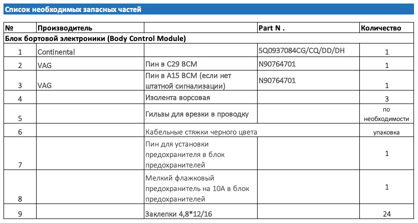

 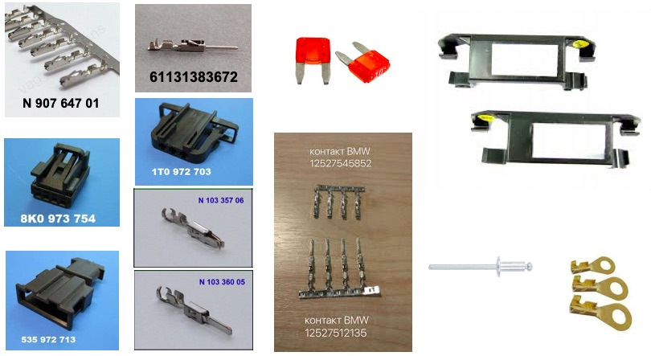
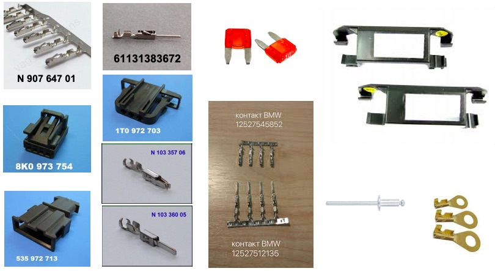

Дальше по-желанию, можно обойтись и без этого. Элементы нужны для того, чтобы сделать «разрыв» проводки между дверью и обшивкой (на передних дверях) и обусловлено логикой укладки проводки в них — часть проводки идет по обшивке, часть по двери и имея разъем проще все разбирать при необходимости.

Потолочный плафон
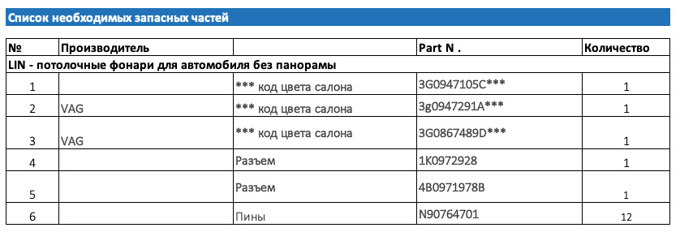
По верхним плафонам для машин с панорамой:
Передний плафон — 3G0947105E
Задний 1 — 3G9947292A
Задний 2 — 3G9947291A
Прокладка всей необходимой проводки¶
- Если комплектацией вашего авто не предусмотрено наличие в блоке предохранителей 8 предохранителя (SC8), то его необходимо установить, все питание RGB подсветки сведено на этот предохранитель.
- Cнимаем клемму с аккумулятора.
- Снимаем обшивки с дверей, внутренние пороги в салоне, нижние части стоек дверей в салоне, снимаем передние сидения для удобства.
Двери¶
- Отсверливаем динамики (высверливаем клепки), размыкаем дверные разъемы и демонтируем дверные жгуты проводки. ВНИМАНИЕ – когда разматываем штатную изоленту, замечаем все заводские размеры установки уплотнителей, длину намотки изоленты и тд. Если потом при сборке ошибетесь, есть шанс ближайшей зимой начать ремонтировать проводку в гибкой части соединения.
- В дверные жгуты проводки вплетаем 3 провода: 2 сечением 0,35 мм, 1 сечением 0,5 мм.
- Со стороны дверного разъема пинуем провода соответствующими пинами (12527545852 для разъемов в дверях).
- Дотягиваем провода до места установки диодов на обшивках, предусмотрев на передних дверях разрыв проводки между дверью и обшивкой (необходимый набор деталей написал выше).
- Пинуем новый разъем диода пинами N90764701: Распиновка разъемов диодов и сечение проводов: 1 — плюс 0,5 мм, 2 – LIN 0,35 мм, 4 — масса 0,35 мм.
- Предварительно все прозвонив и проверив на качество обжатия устанавливаем все на места, заклепываем динамики.
- Запиновываем 3 провода в разъемы расположенные на стойках дверей, провод LIN-шины тянем к ВСМ, питание «плюс» к установленному ранее предохранителю, массу обжимаем кольцом и крепим на ближайший болт массы, пины 12527512135.
- Пока салон не собираем, переходим к проводке RGB подсветки ног.

Сидения¶
- Размыкаем красный разъем сидения, разъем подушек безопасности и разбираем разъем со стороны сидения.
- Прокладываем по штатной проводке три провода 2 сечением 0,35 мм, 1 сечением 0,5 мм от разъема сидения к месту установки диода.
- Запиновываем разъем диода пинами N90764701: Распиновка разъемов диодов и сечение проводов: 1 — плюс 0,5 мм, 2 – LIN 0,35 мм, 4 — масса 0,35 мм.
- Запиновываем второй конец проводов пинами приобретенными для разъема сидения.
- Снимаем с фиксатора ответную часть разъема сидения и запиновываем в нее 3 провода соответствующими пинами — 2 сечением 0,35 мм, 1 сечением 0,5 мм, провод “плюс” тянем к ранее установленному предохранителю, LIN – к ВСМ, массу обжимаем колечком и накручиваем на ближайший болт массы.
- Устанавливаем кронштейны 4M08815479B9 к пружинам под сидениями и в них фонари подсветки ног.
- Собираем все в обратном порядке.

Консоль¶
- Снимаем накладку климата.
- Снимаем климат.
- Снимаем боковину тоннеля.
- Жгутуем провода 2 шт. сечением 0,35 мм, 1 сечением 0,5 мм.
- Запиновываем разъем диода.
- Протягиваем провода “плюс” к установленному предохранителю, LIN – к ВСМ, массу обжимаем кольцом и крепим к ближайшему болту массы или берем болт с гайкой и прикручиваем к железному усилителю консоли, масса на нем хорошая.
- Переходим к подключению всего этого дела в ВСМ.

Передние фонари подсветки ног¶
- Жгутуем провода 2 шт. сечением 0,35 мм, 1 сечением 0,5 мм.
- Запиновываем разъем диода.
- Протягиваем провода “плюс” к установленному предохранителю, LIN – к ВСМ, массу обжимаем кольцом и крепим к ближайшему болту массы.
- Если с завода отсутствуют штатные крепления фонарей, то покупаем их и устанавливаем на место.
- Устанавливаем плафон ног водителя в штатное место над педалью газа, подключаем разъем.
- Устанавливаем плафон ног пассажира в штатное место над правой ногой пассажира.
Подключение LIN шины в ВСМ¶
- Снимаем разъем с ВСМ (ближний к нам разъем), отгибая белую скобу, одновременно нажимая блокиратор, возможно придется попотеть, место неудобное.
- Разрезаем стяжку, которая держит наружный корпус.
- Отжимаем усики и вынимаем 2 внутренние части разъема.
- Находим гнездо по 29 пин.
- Обжимаем провод необходимой длины пином N90764701.
- Вставляем обжатый провод в гнездо 29 пина.
- Удобно жгутуем провод и соединяем его со всеми ранее протянутыми LIN-проводами (4 от дверей, 4 от сидения, 1 от консоли) по принципу «звезды», у VAG существуют специальные коннекторы для этого, но я так сильно не морочился и скрутил все и обжал гильзой.
- Изолируем все и укладываем.
- Собираем все в обратном порядке, тут и понадобится кабельная стяжка.
- LIN протянут.

Подключение к предохранителю¶
Аналогично предыдущему подключению LIN собираем все провода “плюс” в кучу и подключаем к проводу, запитанному от предохранителя, который ранее установили.
Установка диодов в двери¶
- Механически дорабатываем диоды по образцу штатного монохромного, форма и размер посадочных мест диода пассата и тигуана не совпадают, передние и задние диоды имеют разные замки, при установке диодов на место нужно это учесть.
- Устанавливаем их на штатные места в полоску подсветки.
- Фиксируем шлейфы так, чтобы при установке обшивки они не повредились.
- Собираем обшивки дверей на место.
Установка диода в консоль¶
- Лучше всего снимаем консоль полностью по инструкции из ELSA
- Пилим дремелем окошко под световод
- Изготавливаем световод
- Вставляем световод в консоль, фиксируем
- Надеваем на световод диод и подключаем разъем
- Проводка для потолочного плафона с атмосферной подсветкой
Установка атмосферных плафонов в потолок¶
- Поддеваем лопаткой стеклянную часть и отсоединяем ее от разъемов.
- Вставляем лопатку в пазы на самом плафоне и вынимаем часть с лампочкой.
- Поддеваем лопаткой и снимаем накладку кнопок Глонасс.
- Откручиваем 4 самореза Torx по периметру.
- Снимаем переднюю накладку плафона вместе с накладкой-колокольчиком к зеркалу.
- Отсоединяем разъемы и снимаем раму.
- Перепиновываем разъемы (используя пины N90764701):
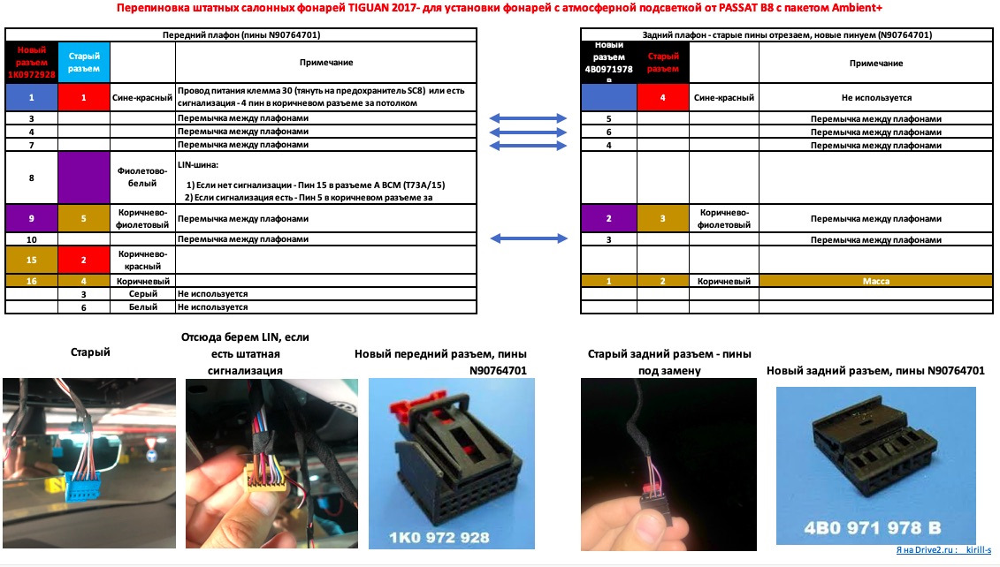
Кодирование¶
Блок 09 → Адаптация:
Interior_light_lamp_configuration:
- Ambiente_Applikationsleisten_in_Tuertafel: установл. (полоски в двери)
- Ambiente_Lautsprecher: не установл.
- Ambiente_Applikationsleisten_in_Instrumententafel: не установл.
- Cockpitbeleuchtung: не установл.
- Mittelkonsolenbeleuchtung: установл. (фонарик в центральной консоли)
- Dachbeleuchtung: установл. (потолочный плафон Ambient+)
- Panoramaschiebedachbeleuchtung: не установл.
- Fussraumbeleuchtung: установл. (подсветка ног)
- LIN-Dachkonsole lokal aktivierbar: акт. (авктивирует управление потолочным плафоном по LIN)
- Ambientemenue mit globalem aus: акт. (Общая регулировка атмосферной подсветки)
- Ambientemenue mit alle Zonen: акт. (Регулировка зон по отдельности)
- Ambient_Farbliste_HMI: акт. (активация показа шкалы выбора цвета)
- Ambience_light_colorlist_default: 1
→ Применить
Блок 09 → Адаптация:
Interior_light_2nd_generation:
- Aufloesung Dimmzeit: 0.8
- weicher Farbwechsel: акт.
- Tuertafelbeleuchtung mehrfarbig: акт. (полоска в дверях цветная)
- Instrumententafelbeleuchtung mehrfarbig: не акт.
- Cockpitbeleuchtung mehrfarbig: не акт.
- Lautsprecherbeleuchtung mehrfarbig: не акт.
- Mittelkonsolenbeleuchtung mehrfarbig: акт. (диод в центральной консоли цветной)
- Dachbeleuchtung mehrfarbig: не акт. (фонарь в потолке одноцветный)
- Panoramaschiebedachbeleuchtung mehrfarbig: не акт.
- Panoramaschiebedachbeleuchtung bei geoeffnetem Rollo deaktivieren: не акт.
- BAP Farbwert Farbe 1: 1
- BAP Farbwert Farbe 2: 4
- BAP Farbwert Farbe 3: 5
- Defaultwert Ambienteprofil Mittelkonsole: 80 (яркость плафонов по умолчанию)
- Defaultwert Ambienteprofil Dach: 80 (яркость плафонов по умолчанию)
- Defaultwert Ambienteprofil Farbe: 8
- Defaultwert Ambienteprofil Fussraum: 80 (яркость плафонов по умолчанию)
- Defaultwert Ambienteprofil Tuer: 80 (яркость плафонов по умолчанию)
- Ambiente_Farbliste_HMI_mit_Farbtransformation: акт. (включает раздельное назначение цветов на экране и на диодах для подбора соответствия экранного цвета цвету, который в состоянии отобразить диод)
- Helligkeit_Tuertafelbeleuchtung_nicht_berechnen: не акт. (выключаем запрет на регулировку)
- Helligkeit Instrumententafelbeleuchtung nicht berechnen: акт.
- Helligkeit Cockpitbeleuchtung nicht berechnen: акт.
- Helligkeit Lautsprecherbeleuchtung nicht berechnen: акт.
- Helligkeit Mittelkonsolenbeleuchtung nicht berechnen: не акт. (выключаем запрет на регулировку)
- Helligkeit Dachbeleuchtung nicht berechnen: не акт. (выключаем запрет на регулировку)
- Helligkeit Panoramaschiebedachbeleuchtung nicht berechnen: акт.
- Farbausgabe Tuertafelbeleuchtung nicht berechnen: не акт. (выключаем запрет на регулировку)
- Farbausgabe Instrumententafelbeleuchtung nicht berechnen: акт.
- Farbausgabe Cockpitbeleuchtung nicht berechnen: акт.
- Farbausgabe Lautsprecherbeleuchtung nicht berechnen: акт.
- Farbausgabe Mittelkonsolenbeleuchtung nicht berechnen: не акт.(выключаем запрет на регулировку)
- Farbausgabe Dachbeleuchtung nicht berechnen: не акт.(выключаем запрет на регулировку)
- Farbausgabe Panoramaschiebedachbeleuchtung nicht berechnen: акт.
- LIN-Dachkonsole mit Flaechenlicht: установл. (фоновая подсветка потолочного фонаря)
- Ambiente_Farbwahl_FPA_waehlbare_Kopplung: акт. (привязка профиля движения)
- Ambiente_Fahrprofil_Individual: 1
- Ambiente_Farbwahl_FPA_waehlbare_Kopplung_Status_hmi_default: сопряжены (привязка профиля движения)
→ Применить
Яркость и плавность регулировки каналов
Блок 09 → Адаптация:
Interior_light_parameter:
- p_adaption_kundenwunsch_tuer: 0.67 (линейность регулировки)
- p_helligkeit_entriegelt_tueren: 100
- p_helligkeit_max_tueren: 100
- p_helligkeit_HD_auf_zuendung_ein_tueren: 126
- p_helligkeit_HD_auf_zuendung_aus_tueren: 127
- p_helligkeit_dieseTuer_auf_zuendung_ein_tueren: 100
- p_helligkeit_andereTuer_auf_zuendung_ein_tueren: 100
- p_helligkeit_Fzg_geschlossen_zuendung_ein_tueren: 126
- p_helligkeit_dieseTuer_auf_zuendung_aus_tueren: 100
- p_helligkeit_andereTuer_auf_zuendung_aus_tueren: 100
- p_helligkeit_einausstieg_tueren: 100
- p_helligkeit_Fzg_geschlossen_zuendung_aus_tueren: 127
- p_helligkeit_Tueren_geschlossen_HD_auf_zuendung_aus_tueren: 100
- p_helligkeit_Tueren_geschlossen_HD_zu_zuendung_aus_tueren: 100
- p_helligkeit_Tueren_geschlossen_schluessel_ab_tueren: 100
- p_helligkeit_Fzg_geschlossen_schluessel_ab_tueren: 100
- p_adaption_kundenwunsch_fussraum: 0.67
- p_helligkeit_entriegelt_fussraum: 100
- p_helligkeit_max_fussraum: 100
- p_helligkeit_HD_auf_zuendung_ein_fussraum: 126
- p_helligkeit_HD_auf_zuendung_aus_fussraum: 127
- p_helligkeit_dieseTuer_auf_zuendung_ein_fussraum: 100
- p_helligkeit_andereTuer_auf_zuendung_ein_fussraum: 100
- p_helligkeit_Fzg_geschlossen_zuendung_ein_fussraum: 126
- p_helligkeit_dieseTuer_auf_zuendung_aus_fussraum: 100
- p_helligkeit_andereTuer_auf_zuendung_aus_fussraum: 100
- p_helligkeit_einausstieg_fussraum: 100
- p_helligkeit_Fzg_geschlossen_zuendung_aus_fussraum: 127
- p_helligkeit_Tueren_geschlossen_HD_auf_zuendung_aus_fussraum: 100
- p_helligkeit_Tueren_geschlossen_HD_zu_zuendung_aus_fussraum: 100
- p_helligkeit_Tueren_geschlossen_schluessel_ab_fussraum: 100
- p_helligkeit_Fzg_geschlossen_schluessel_ab_fussraum: 100
- p_adaption_kundenwunsch_miko: 0.67
- p_helligkeit_entriegelt_miko: 100
- p_helligkeit_max_miko: 100
- p_helligkeit_HD_auf_zuendung_ein_miko: 126
- p_helligkeit_HD_auf_zuendung_aus_miko: 127
- p_helligkeit_dieseTuer_auf_zuendung_ein_miko: 100
- p_helligkeit_andereTuer_auf_zuendung_ein_miko: 100
- p_helligkeit_Fzg_geschlossen_zuendung_ein_miko: 126
- p_helligkeit_dieseTuer_auf_zuendung_aus_miko: 100
- p_helligkeit_andereTuer_auf_zuendung_aus_miko: 100
- p_helligkeit_einausstieg_miko: 100
- p_helligkeit_Fzg_geschlossen_zuendung_aus_miko: 100
- p_helligkeit_Tueren_geschlossen_HD_auf_zuendung_aus_miko: 100
- p_helligkeit_Tueren_geschlossen_HD_zu_zuendung_aus_miko: 100
- p_helligkeit_Tueren_geschlossen_schluessel_ab_miko: 100
- p_helligkeit_Fzg_geschlossen_schluessel_ab_miko: 100
- p_adaption_kundenwunsch_dach: 1
- p_helligkeit_entriegelt_dach: 100
- p_helligkeit_max_dach: 100
- p_helligkeit_HD_auf_zuendung_ein_dach: 100
- p_helligkeit_HD_auf_zuendung_aus_dach: 100
- p_helligkeit_dieseTuer_auf_zuendung_ein_dach: 100
- p_helligkeit_andereTuer_auf_zuendung_ein_dach: 100
- p_helligkeit_Fzg_geschlossen_zuendung_ein_dach: 126
- p_helligkeit_dieseTuer_auf_zuendung_aus_dach: 100
- p_helligkeit_andereTuer_auf_zuendung_aus_dach: 100
- p_helligkeit_einausstieg_dach: 100
- p_helligkeit_Fzg_geschlossen_zuendung_aus_dach: 100
- p_helligkeit_Tueren_geschlossen_HD_auf_zuendung_aus_dach: 100
- p_helligkeit_Tueren_geschlossen_HD_zu_zuendung_aus_dach: 100
- p_helligkeit_Tueren_geschlossen_schluessel_ab_dach: 100
- p_helligkeit_Fzg_geschlossen_schluessel_ab_dach: 100
→ Применить
Отображение солнышек и графики на экране ГУ
Блок 09 → Адаптация:
Освещение салона, параметры / Interior_light_parameter:
- p_ambienteumfang_mehrfarbig_HMI: 100
- p_ambienteumfang_mehrfarbig_HMI_2: 100
- p_ambienteumfang_mehrfarbig_HMI_3: 0
- p_ambienteumfang_mehrfarbig_HMI_4: 0
→ Применить
Отображение солнышек и монохромной графики на экране ГУ
Блок 09 → Адаптация:
Освещение салона, параметры / Interior_light_parameter:
- p_ambientelicht_verbauinformation_HMI: 1
- p_ambientelicht_verbauinformation_HMI_2: 10001
- p_ambientelicht_verbauinformation_HMI_3: 10
- p_ambientelicht_verbauinformation_HMI_4: 0
→ Применить
Скорость смены цвета мс
Блок 09 → Адаптация:
Освещение салона, параметры / Interior_light_parameter:
- p_t_HMI_verzoegerung_helligkeitswerte: 200
→ Применить
Прописывание физических диодов
Блок 09 → Адаптация:
ambient_lighting_lin_slaves_modules:
- pa_einzeladresse_slave_1: 1
- pa_verbauinfo_slave_1: установл.
- pa_fehlerort_slave_1: 0
- pa_einzeladresse_slave_2: 2
- pa_verbauinfo_slave_2: установл.
- pa_fehlerort_slave_2: 0
- pa_einzeladresse_slave_3: 3
- pa_verbauinfo_slave_3: установл.
- pa_fehlerort_slave_3: 0
- pa_einzeladresse_slave_4: 4
- pa_verbauinfo_slave_4: установл.
- pa_fehlerort_slave_4: 0
- pa_einzeladresse_slave_5: 0
- pa_verbauinfo_slave_5: не установл.
- pa_fehlerort_slave_5: 0
- pa_einzeladresse_slave_6: 0
- pa_verbauinfo_slave_6: установл.
- pa_fehlerort_slave_6: 0
- pa_einzeladresse_slave_7: 0
- pa_verbauinfo_slave_7: не установл.
- pa_fehlerort_slave_7: 0
- pa_einzeladresse_slave_8: 0
- pa_verbauinfo_slave8: не установл.
- pa_fehlerort_slave8: 0
- pa_einzeladresse_slave_9: 0
- pa_verbauinfo_slave_9: не установл.
- pa_fehlerort_slave_9: 0
- pa_einzeladresse_slave_10: 0
- pa_verbauinfo_slave_10: не установл.
- pa_fehlerort_slave_10: 0
- pa_einzeladresse_slave_11: 0
- pa_verbauinfo_slave_11: не установл.
- pa_fehlerort_slave_11: 0
- pa_einzeladresse_slave_:12: 0
- pa_verbauinfo_slave_12: не установл.
- pa_fehlerort_slave_12: 0
- pa_einzeladresse_slave_13: 0
- pa_verbauinfo_slave_13: не установл.
- pa_fehlerort_slave_13: 0
- pa_einzeladresse_slave_14: 0
- pa_verbauinfo_slave_14: не установл.
- pa_fehlerort_slave_14: 0
- pa_einzeladresse_slave_15: 0
- pa_verbauinfo_slave_15: не установл.
- pa_fehlerort_slave_15: 0
- pa_einzeladresse_slave_16: 0
- pa_verbauinfo_slave_16: не установл.
- pa_fehlerort_slave_16: 0
- pa_einzeladresse_slave_17: 0
- pa_verbauinfo_slave_17: не установл.
- pa_fehlerort_slave_17: 0
- pa_einzeladresse_slave_18: 0
- pa_verbauinfo_slave_18: не установл.
- pa_fehlerort_slave_18: 0
- pa_einzeladresse_slave_19: 0
- pa_verbauinfo_slave_19: не установл.
- pa_fehlerort_slave_19: 0
- pa_einzeladresse_slave_20: 0
- pa_verbauinfo_slave_20: не установл.
- pa_fehlerort_slave_20: 0
→ Применить
Прописывание групп регулировки диодов и их назначение
Блок 09 → Адаптация:
ambient_lighting_lin_slaves_groups:
- pa_verbauinfo_gruppe_1: многоцветный
- pa_lichtfunktion_gruppe_1: Дверь
- pa_korrekturfaktor_gruppe_1: 1
- pa_verbauinfo_gruppe_2: многоцветный
- pa_lichtfunktion_gruppe_2: Центральная консоль
- pa_korrekturfaktor_gruppe_2: 1.2
- pa_verbauinfo_gruppe_3: не установл.
- pa_lichtfunktion_gruppe_3: Дверь
- pa_korrekturfaktor_gruppe_3: 1
- pa_verbauinfo_gruppe_4: не установл.
- pa_lichtfunktion_gruppe_4: Дверь
- pa_korrekturfaktor_gruppe_4: 1
- pa_verbauinfo_gruppe_5: не установл.
- pa_lichtfunktion_gruppe_5: Дверь
- pa_korrekturfaktor_gruppe_5: 1
- pa_verbauinfo_gruppe_6: не установл.
- pa_lichtfunktion_gruppe_6: Дверь
- pa_korrekturfaktor_gruppe_6: 1
- pa_verbauinfo_gruppe_7: не установл.
- pa_lichtfunktion_gruppe_7: Дверь
- pa_korrekturfaktor_gruppe_7: 1
- pa_verbauinfo_gruppe_8: не установл.
- pa_lichtfunktion_gruppe_8: Дверь
- pa_korrekturfaktor_gruppe_8: 1
- pa_verbauinfo_gruppe_9: не установл.
- pa_lichtfunktion_gruppe_9: Дверь
- pa_korrekturfaktor_gruppe_9: 1
- pa_verbauinfo_gruppe_10: не установл.
- pa_lichtfunktion_gruppe_10: Дверь
- pa_korrekturfaktor_gruppe_10: 1
- pa_verbauinfo_gruppe_11: одноцветный
- pa_lichtfunktion_gruppe_11: Пространство для ног
- pa_korrekturfaktor_gruppe_11: 1.2
- pa_verbauinfo_gruppe_12: не установл.
- pa_lichtfunktion_gruppe_12: Дверь
- pa_korrekturfaktor_gruppe_12: 1
- pa_verbauinfo_gruppe_13: не установл.
- pa_lichtfunktion_gruppe_13: Дверь
- pa_korrekturfaktor_gruppe_13: 1
- pa_verbauinfo_gruppe_14: 3_not_defined
- pa_lichtfunktion_gruppe_14: Пространство для ног
- pa_korrekturfaktor_gruppe_14: 1.2
- pa_verbauinfo_gruppe_15: не установл.
- pa_lichtfunktion_gruppe_15: Дверь
- pa_korrekturfaktor_gruppe_15: 1
→ Применить
Список базовых цветов
Блок 09 → Адаптация:
Ambience_lightning_color_list:
- Rotwert Farbe 1: 217
- Gruenwert Farbe 1: 221
- Blauwert Farbe 1: 235
- Rotwert Farbe 2: 255
- Gruenwert Farbe 2: 172
- Blauwert Farbe 2: 5
- Rotwert Farbe 3: 253
- Gruenwert Farbe 3: 108
- Blauwert Farbe 3: 55
- Rotwert Farbe 4: 222
- Gruenwert Farbe 4: 70
- Blauwert Farbe 4: 20
- Rotwert Farbe 5: 252
- Gruenwert Farbe 5: 116
- Blauwert Farbe 5: 240
- Rotwert Farbe 6: 132
- Gruenwert Farbe 6: 76
- Blauwert Farbe 6: 222
- Rotwert Farbe 7: 0
- Gruenwert Farbe 7: 102
- Blauwert Farbe 7: 225
- Rotwert Farbe 8: 1
- Gruenwert Farbe 8: 192
- Blauwert Farbe 8: 255
- Rotwert Farbe 9: 0
- Gruenwert Farbe 9: 204
- Blauwert Farbe 9: 0
- Rotwert Farbe 10: 182
- Gruenwert Farbe 10: 255
- Blauwert Farbe 10: 57
→ Применить
Вторая группа настраиваемых цветов
Блок 09 → Адаптация:
Ambience_lightning_color_list_2:
- Rotwert Farbe 11: 255
- Gruenwert Farbe 11: 255
- Blauwert Farbe 11: 0
- Rotwert Farbe 12: 5
- Gruenwert Farbe 12: 102
- Blauwert Farbe 12: 192
- Rotwert Farbe 13: 222
- Gruenwert Farbe 13: 70
- Blauwert Farbe 13: 21
- Rotwert Farbe 14: 1
- Gruenwert Farbe 14: 204
- Blauwert Farbe 14: 0
- Rotwert Farbe 15: 80
- Gruenwert Farbe 15: 80
- Blauwert Farbe 15: 80
→ Применить
Цвета для диодов
Блок 09 → Адаптация:
Ambience_lightning_color_list_lin:
- Rotwert_Farbe_1_lin: 120
- Gruenwert_Farbe_1_lin: 231
- Blauwert_Farbe_1_lin: 71
- Rotwert_Farbe_2_lin: 255
- Gruenwert_Farbe_2_lin: 200
- Blauwert_Farbe_2_lin: 0
- Rotwert_Farbe_3_lin: 245
- Gruenwert_Farbe_3_lin: 73
- Blauwert_Farbe_3_lin: 6
- Rotwert_Farbe_4_lin: 255
- Gruenwert_Farbe_4_lin: 9
- Blauwert_Farbe_4_lin: 2
- Rotwert_Farbe_5_lin: 255
- Gruenwert_Farbe_5_lin: 134
- Blauwert_Farbe_5_lin: 106
- Rotwert_Farbe_6_lin: 106
- Gruenwert_Farbe_6_lin: 140
- Blauwert_Farbe_6_lin: 162
- Rotwert_Farbe_7_lin: 0
- Gruenwert_Farbe_7_lin: 110
- Blauwert_Farbe_7_lin: 254
- Rotwert_Farbe_8_lin: 29
- Gruenwert_Farbe_8_lin: 255
- Blauwert_Farbe_8_lin: 153
- Rotwert_Farbe_9_lin: 0
- Gruenwert_Farbe_9_lin: 255
- Blauwert_Farbe_9_lin: 4
- Rotwert_Farbe_10_lin: 57
- Gruenwert_Farbe_10_lin: 132
- Blauwert_Farbe_10_lin: 0
→ Применить
Вторая часть цветов для диодов
Блок 09 → Адаптация:
Ambience_lightning_color_list_lin_2:
- Rotwert_Farbe_11_lin: 255
- Gruenwert_Farbe_11_lin: 255
- Blauwert_Farbe_11_lin: 0
- Rotwert_Farbe_12_lin: 120
- Gruenwert_Farbe_12_lin: 231
- Blauwert_Farbe_12_lin: 71
- Rotwert_Farbe_13_lin: 120
- Gruenwert_Farbe_13_lin: 230
- Blauwert_Farbe_13_lin: 80
- Rotwert_Farbe_14_lin: 121
- Gruenwert_Farbe_14_lin: 231
- Blauwert_Farbe_14_lin: 71
- Rotwert_Farbe_15_lin: 130
- Gruenwert_Farbe_15_lin: 241
- Blauwert_Farbe_15_lin: 80
→ Применить
Профили движения и номера цветов
Блок 09 → Адаптация:
Ambientelicht Zuordnung der Farbe zum Fahrprofil:
- pFahrprofil_0: 1 профиль при заглушенной машине
- pFahrprofil_1: 1
- pFahrprofil_2: 7 обычный
- pFahrprofil_3: 4 спорт
- pFahrprofil_4: 6 бездорожье
- pFahrprofil_5: 9 эко
- pFahrprofil_6: 8
- pFahrprofil_7: 5 индивидуальный
- pFahrprofil_8: 1
- pFahrprofil_9: 1
- pFahrprofil_10: 8 снег
- pFahrprofil_11: 1
- pFahrprofil_12: 1
- pFahrprofil_13: 1
- pFahrprofil_14: 1
- pFahrprofil_15: 1
→ Применить
Блок 19 → Кодирование:
FPA_Funktion_AMB: Активировать
→ Применить (с перезагрузкой блока)
Увеличиваем скорость переключения профилей
Блок 19 → Адаптация:
Driving Profile Selection Parameter:
- Driving Profile Selection Toogle Time Adaptation: вместо 2000 мс ставим 0
→ Применить
Кодировки для подсветки карманов дверей
Блок 09 → Адаптация:
ambient_lighting_lin_slaves_groups:
- pa_verbauinfo_gruppe_7: Multi_color
- pa_lichtfunktion_gruppe_7: door
- pa_korrekturfaktor_gruppe_7: 1.00
- pa_verbauinfo_gruppe_8: Multi_color
- pa_lichtfunktion_gruppe_8: door
- pa_korrekturfaktor_gruppe_8: 1.00
- pa_verbauinfo_gruppe_9: Multi_color
- pa_lichtfunktion_gruppe_9: door
- pa_korrekturfaktor_gruppe_9: 1.00
- pa_verbauinfo_gruppe_10: Multi_color
- pa_lichtfunktion_gruppe_10: door
→ Применить
Параметры зеркал и стеклоочистителей¶
Работа наружной подсветки в зеркалах при сложенных зеркалах заднего вида¶
Блок 52 → Кодирование:
Байт 1 – Бит 5 (turn_off_front_light_with_folded_mirror): not_active (было active)
Блок 42 → Кодирование:
Байт 1 – Бит 5 (turn_off_front_light_with_folded_mirror): not_active (было active)
Опускание правого зеркала при движении задним ходом (если не активировано с завода)¶
Работает только при повороте джойстика настройки зеркал в положение R
Уровень, до которого зеркало опускается, можно настроить под себя:
1) Открываем автомобиль
2) Включаем электромеханический стояночный тормоз
3) Включаем зажигание
4) В коробке передач включаем нейтраль
5) Теперь включаем передачу заднего хода
6) Регулируем зеркало со стороны пассажира как нам удобно
7) Положение зеркала запоминается для ключа, которым мы открыли
Блок 52 → Кодирование:
Байт 4 – Бит 2 и 3 (mirror_lowering_with_rear_gear): Активировать
Блок 09 → Адаптация:
Spiegelverstellung (Access control для OBD11):
- Spiegelabsenkung bei Rueckwaertsfahrt: Активировать
- Menuesteuerung Spigelabsenkung: Активировать
→ Применить
Раскладывание зеркал при включении двигателя¶
Зеркала будут раскладываться только при включении зажигания, а не при каждом открытии автомобиля. Меньший износ механизмов
Данная адаптация работает только на VW Tiguan
Блок 09 → Адаптация:
Spiegelverstellung
- Signalisierung_Spiegelanklappung: Не активировано
→ Применить
Блок 09 управления бортовой сети → Безопасный доступ (Логин: 31347) → Кодирование:
Access control
- Signalisierung_Spiegelanklappung: Активировать
Складывание боковых зеркал удержанием кнопки закрытия дверей или кнопкой закрытия оригинального брелока¶
Блок 09 → Адаптация:
Spiegelverstellung:
- Funk Spiegelanklappung Modus: by look command via remote control key → by convenience operation via remote control key
→ Применить
Настройка омывателя фар¶
Отключение срабатывания омывателей фар при каждом 10 включении омывателей ветрового стекла
Блок 09 → Адаптация:
Scheinwerferreinigung:
- Anzahl Betaetigungen Frontwaschanlage pro SRA Aktivierung: 10 → 0
→ Применить
Аналог:
Scheinwerferreinigunglage → неактив
Срабатывание после долгого удержания рычага омывания стекла
Блок 09 → Адаптация:
Scheinwerferreinigung:
- SRA Verzoegerungszeit: 0 → 2500 (мс)
→ Применить
Отключение второго "пшика" на фары (не рекомендуется)
Блок 09 → Адаптация:
Scheinwerferreinigung:
- SRA Nachwaschzeit: 10 → 0 (мс)
→ Применить
Сервисное положение дворников¶
Service position: по умолчанию 166.505329 градусов, меняем в меньшую сторону.
Блок 09 → Адаптация:
Service position: вводим нужное значение
→ Применить
Alternative position 2 (позиция дворников при выключенном зажигании)
→ Применить
Сервисное положение дворников — меню в магнитоле¶
Škoda · Автомобили с MIB3
Блок 09 → Адаптация:
Front wiper:
- Menuesteuerung Frontwischer: active
→ Применить
Отключение задержки включения насоса омывателя (щетки не будут елозить по сухому стеклу)¶
Блок 09 → Адаптация:
Front wiper:
- Mindestwaschzeit_Frontwischer: 0 ms → 300 ms
- Timer_DWP_SRA_delay: 300 ms → 0 ms
Дотирка капель – Лобовое стекло¶
В холодное время года функция не работает (от 5,5 С)
Блок 09 → Кодирование → Подблок 1:
04EDFD (старое значение 04EDDD)
→ Применить
Блок 09 → Адаптация:
Front_wiper
Traenenwischen Front Status: Активировать
→ Применить
Работа заднего дворника во время дождя¶
Блок 09 → Адаптация:
Задний стеклоочиститель (Rear Wiper / Heckwischersteuerung)
Automatisches Heckwischen: Активировать
→ Применить
Безопасность¶
Центральный замок¶
Параметрии для крышки багажника с электроприводом¶
| Автомобиль | Параметрия (ODIS XML) |
Примечания |
|---|---|---|
| Все марки | (Скачать) | Все возможные параметрии |
Kick Close – закрытие багажника движением ноги¶
Для Tiguan версия прошивки в блоке B7 должна быть не ниже N.
Для Superb достаточно L.
Если BCM блок по железу ниже H38, обновить прошивку блока B7 выше чем на G — не получится
Блок 09 → Адаптация:
- Kick_and_close: installed
→ Применить
Блок B7 → Адаптация:
- Coding_kick and_close_function: Активировать
- Coding_easyclose_locking: Активировать
→ Применить
Активация функций охранной системы без сигнализации¶
Škoda Karoq
Автомобиль будет сигналить, если закрытую дверь открыть без ключа, например разбив стекло
Блок 09 → Адаптация:
Anti-theft device:
- Akusticher Alarm Signalhorn: Активировать
- Diebstahlwarnangle: Активировать
→ Применить
Активация Easy Open¶
Блок 09 → Адаптация:
Verdecksteuergeraet:
- Virtuelles_Pedal_HMI_einstellba: Активировать
- Virtuelles_Pedal_Verbau: Активировать
- Virtuelles_Pedal: Активировать
→ Применить
Блок B7 → Адаптация:
Byte9_VIP:
- active_vip: Активировать
- БУ откр. двери багажного отсека, датчик 1, пороговое значение 1: 5 → 69
- БУ откр. двери багажного отсека, датчик 1, значение таймера 3: 0 → 9
- БУ откр. двери багажного отсека, датчик 1, значение таймера 4: 226 → 34
- БУ откр. двери багажного отсека, датчик 1, значение таймера 5: 255 → 34
- БУ откр. двери багажного отсека, датчик 2, значение таймера 5: 108 → 24
- БУ открывания двери багажного отсека, модель автомобиля: fe → 22
После кодирования необходимо провести Тест исполнителей Control_supply_voltage_vip
Постановка на охрану при закрытии двери багажника кнопкой Easy Close¶
С этой функцией автомобиль полностью закроется сам при нажатии на кнопку отложенного закрытия багажника.
Автомобиль подаст звуковой сигнал закрытия
Блок B7 → Кодирование:
byte9_Vip
- Coding_easy close_locking: Активировать
→ Применить
Блок B7 санкционированного доступа: Активировать
byte9_Vip
- coding easy close locking: активир.
Регулировка чувствительности датчика объема штатной сигнализации¶
Блок 09 → Адаптация:
Охранная сигнализация, охрана салона/ Interior_Monitoring_Sensitivity:
- Чувствительность / sensitivity: 70% (по умолчанию 100%)
→ Применить
Открытие и закрытие багажника с кнопки пульта¶
Блок B7 → Адаптация:
byte9_Vip:
- Сoding_kick and_close_function: Активировать
→ Применить
Избирательное открытие дверей¶
При первом нажатии на кнопку открытия дверей открывается только водительская дверь.
При повторном (необходимо нажать в течении 5 сек с момента первого нажатия) нажатии откроются все остальные двери.
Блок 09 → Адаптация:
Central Locking
- Selective (Single) Door Locking: Активировать
→ Применить
09-Центральная электроника
Кодирование - 07 → Длинное кодирование:
Байт 0 – Бит 0 (Selective Central Locking (Single Door Locking) active): Активировать
Выход → Сохранить
Автозакрытие дверей при начале движения и автооткрытие при вытаскивании ключа¶
Блок B7 → Адаптация:
ZV Autolock:
- Automatisches Entriegeln: Деактивировать (Отключение разблокировки)
- Automatisches Verriegeln bei Geschwindigkeit: Деактивировать (Отключение блокировки)
→ Применить
Брелок работает при включенном зажигании¶
С этой функцией можно завести автомобиль, закрыть его и отойти, сохраняя возможность удаленно открыть его или багажник с ключа.
Блок 09 → Адаптация:
ZV allgemein (Access control)
- Funk bei Klemme 15 ein: Активировать
→ Применить
09 Блок управления бортовой сети → Безопасный доступ (Логин: 31347) → Aдаптация
ZV allgemein
- Funk bei Klemme 15 ein: Активировать
Ручки Kessy работают при включенном зажигании¶
Блок В7 → Кодирование:
Terminal 15 characteristics of passive entry exit function
- Оригинальное значение – Function only allowed for terminal 15 off
- Новое значение – Function only allowed for terminal 15 on or off
→ Применить
Блок В7
Кодирование - 07 → Длинное кодирование → разрешить ASAM данные:
Байт 0 – Бит 4 (Terminal 15 characteristics of passive entry exit function): Активировать
Выход → Сохранить
Автоматическая постановка на охрану при захлопывании водительской двери¶
Блок В7 → Кодирование:
Locking for door slamming active: Активировать
→ Применить
Блок В7
Кодирование - 07 → Длинное кодирование → разрешить ASAM данные:
Байт 1 – Бит 4 (Блокировка двери хлопком включена): Активировать
Выход → Сохранить
Звуковое сопровождение при открытии/закрытии центрального замка¶
Блок 09 → Адаптация:
Ответные сигналы:
- Akustische Rueckmeldung entriegeln (открытие авто): Активировать
- Akustische Rueckmeldung verriegeln (закрытие авто): Активировать
- Menuesteuerung akustische Rueckmeldung: Активировать
- Akustische Rueckmeldung global: Активировать
- Akustische Rueckmeldung Signalhorn: Активировать
→ Применить
После кодирования необходимо поставить галочку в меню магнитолы
Открытие и закрытие люка при удерживании кнопок на брелоке (закрытие вместе с центральным замком)¶
Блок 09 → Адаптация:
Schiebedach:
- SAD Komfort schliessen: Активировать
- SAD Komfort oeffnen: Активировать
→ Применить
Открывание люка целиком
Блок 00CA – Блок управления сдвижного люка → Адаптация:
Control_unit_for_sun_roof_convenience_functions / Power sunroof control module – convenience function
- Convenience_opening_target_attitude / Заданное положение при комфортном открывании: Tilting_position → Sliding_position
→ Применить
Блок 00CA – Блок управления сдвижного люка → Адаптация:
Komfortfunktionen
- Заданное положение при комфортном открывании: Положение подъём → Положение сдвиг
→ Применить
Комфортная посадка для водительского места¶
Функция Easy Entry — легкая посадка, сиденье отъезжает после выключения зажигания и открытия двери и подъезжает при включении
Блок 36 – Блок Регулировка сиденья водителя → Кодирование:
Байт 3 – Бит 1 (Easy_Entry_front): Активировать
Байт 9 – Бит 6 (Easy_Entry_front_over_MMI): Активировать
→ Применить (с перезагрузкой блока)
Блок 5F → Адаптация:
Car_Function_Adaptations_Gen2:
- menu_display_seat_configuration: Активировать
- menu_display_seat_configuration_over_threshold_high: Активировать
→ Применить
Car_Function_List_BAP_Gen2:
- driver_seat_0x10: Активировать
- driver_seat_0x10_msg_bus — Шина Комфорт
→ Применить
Комфортная посадка для пассажира¶
Функция Easy Entry — легкая посадка, сиденье отъезжает после выключения зажигания и открытия двери и подъезжает при включении
Блок 36 – Блок Регулировка сиденья водителя → Кодирование:
Байт 6 – Бит 4 (EasyEntry_Enable_Passenger_over_DriverMMI): Активировать
→ Применить (с перезагрузкой блока)
Блок 6 – Блок Регулировка сиденья пассажира → Кодирование:
Байт 3 – Бит 1 (Easy_Entry_front): Активировать
Байт 9 – Бит 6 (Easy_entry_front_over_MMI): Активировать
Байт 6 – Бит 4 (EasyEntry_Enable_Passenger_over_DriverMMI): Активировать
→ Применить (с перезагрузкой блока)
Блок 5F → Адаптация:
Car_Function_Adaptations_Gen2:
- menu_display_seat_configuration: Активировать
- menu_display_seat_configuration_over_threshold_high: Активировать
→ Применить
Car_Function_List_BAP_Gen2:
- Passenger_Seat_0x20: Активировать
- Passenger_Seat_0x20_msg_bus — Шина Комфорт
→ Применить
Управление стеклоподъемниками¶
Сброс давления при закрытии двери¶
Škoda
При закрытии передних дверей стекло опускается на 1 см для понижения давления в салоне
Блок 42 → Кодирование:
Short_drop: Активировать
→ Применить
Блок 52 → Кодирование:
Short_drop: Активировать
→ Применить
Работа стеклоподъёмников при выключенном зажигании и продолжительности их работы¶
При выключенном зажигании стеклоподъемники продолжают работать, но если открыли / закрыли дверь – стеклоподъемники выключаются
Блок 09 → Адаптация:
Acces control (ZV Komfort)
- Freigabenachlauf FH bei Tueroeffnen abbrechen: Activ на NotActiv
- FH SAD Kl15Aus Freigabezeit: 600 s (10 минут после выключения зажигания) поменять на любое другое в секундах
→ Применить
Блок 09 управления бортовой сети → Безопасный доступ (Логин: 31347) → Кодирование:
ZV Komfort
- Freigabenachlauf FH bei Tueroeffnen abbrechen: Активировать
Lights
Кодирование светового оборудования¶
За помощь в создании данной инструкции выражаю благодарность Вячеславу
Схема работы каналов освещения¶

У разных машин (Tiguan, Škoda, Golf, Passat) могут быть разные привязки ламп к каналам.
Список каналов передних фонарей VW Tiguan 2¶
| Названия ламп | BASIS LED | MID LED |
|---|---|---|
| Leuchte0BLK VLB36 / Leuchte1BLK VRB20 | Левый / Правый указатель поворота | |
| Leuchte2SL VLB10 / Leuchte3SL VRB21 | Левый / Правый управление ДХО | |
| Leuchte4TFL LB44 / Leuchte5TFL RB32 | Левый / Правый ДХО | |
| Leuchte6ABL LC5 / Leuchte7ABL RB1 | Левый / Правый ближний свет | Левый / Правый ближний свет |
| Leuchte8FL LB39 / Leuchte9FL RB2 | Левый / Правый дальний свет | Левый / Правый ДХО |
| Leuchte10SHUTTER LB23 / Leuchte11SHUTTER RB22 | Левый / Правый диагностика ближнего света | Питание модуля / Пусто |
| Leuchte12NL LB45 / Leuchte13NL RB5 | Левый / Правый ПТФ | Левый / Правый ПТФ |
Список каналов задних фонарей VW Tiguan 2¶
| Названия ламп | BASIS | HIGH |
|---|---|---|
| Leuchte16BLK SLB35BLK SL KC9 / Leuchte17TFL R BLK SRB3TFL R BLK SR KC3 |
Левый/Правый габаритный огонь | |
| Leuchte18BLK HLA60 / Leuchte19BLK HRC31 | Левый / Правый указатель поворота | Левый/Правый указатель поворота |
| Leuchte20BR LA71 / Leuchte21BR RC8 | Левый / Правый тормозной сигнал на крыльях + габаритный огонь | Левый/Правый тормозной сигнал |
| Leuchte22BR MA57 | Центральный стоп-сигнал | Центральный стоп-сигнал |
| Leuchte23SL HLC10 / Leuchte24SL HRA65 | Левый / Правый габаритный огонь на задней двери | Левый/Правый габаритный огонь на задней двери |
| Leuchte25KZL HA59 | Подсветка номера | Подсветка номера |
| Leuchte26NSL LA72 / Leuchte27NSL RC6 | Левый ПТФ / Пусто | Левый ПТФ/ Cтоп-сигнал на крышке |
| Leuchte28RFL LC11 / Leuchte29RFL RA64 | пусто / Правый задний ход | Левый / Правый задний ход |
Список других ламп¶
Leuchte 35 LED Warnblinktaster C48 – кнопка аварийной сигнализации
Leuchte30FR LC72 – освещение ног в салоне
Расшифровка каналов¶
На примере Leuchte9FL RB2.
Leuchte9FL RB2 – [Leuchte][9][FL][R][B2]
[Leuchte] - лампа
[9] - номер лампы
[FL] - обозначение функции лампы (часто может не совпадать с реальностью)
[R] - расположение – rechts (справа)/links (слева)
[B2] - Контакт на BCM (разъём В, пин 2)
| Аббревиатура функции лампы | Немецкое название | Русское название |
|---|---|---|
| ABL | Abblendlicht | Ближний свет |
| AMBL | Ambientelicht | Атмосферная подсветка |
| BLK | Blinken | Поворотник |
| BR | Bremslicht | Стоп-сигнал |
| FL | Fernlicht | Дальний свет |
| FR | Fussraumlicht | Подсветка ног |
| HD | Heckdeckel | Крышка багажника |
| KZL | Kennzeichenleuchte | Подсветка номера |
| NL | Nebellicht | ПТФ спереди |
| NSL | Nebelschlusslicht | ПТФ сзади |
| RFL | Rueckfahrlicht | Задний ход |
| SL | Standlicht | Габариты |
| TFL | Tagfahrlicht | ДХО |
Тип ламп¶
У каждой лампы можно указать её тип – Lasttypen
Возможные варианты ламп и их номер
| Номер типа лампы | Описание типа лампы |
|---|---|
| 1 | LED Tagfahrlichtmodul Versorgung |
| 2 | Shutter; Diagnosesensierung für "LED low" |
| 3 | Xenon Abblendlicht |
| 4 | LED Tagfahrlichtmodul Signal |
| 5 | LED Abblendlicht |
| 6 | LED Lichtmodul |
| 7 | Reserved_07 |
| 8 | allgemeine Glühlampe 12W |
| 9 | allgemeine Glühlampe 27W; auch H15 |
| 10 | allgemeine Scheinwerfer |
| 11 | Abblendlicht |
| 12 | Blinkleuchten |
| 13 | Bremsleuchten |
| 14 | kombinierte Blink- Bremsleuchten |
| 15 | allgemeine Glühlampe 6W; auch H6W |
| 16 | 2* 3W |
| 17 | 4* 3W |
| 18 | 2* 5W |
| 19 | 3* 5W |
| 20 | 4* 5W |
| 21 | 2* 13W Blinker |
| 22 | 2* 16W Blinker |
| 23 | allgemeine Scheinwerfer |
| 24 | 2* 5W KZL + LED Sidemarker |
| 25 | allgemeine Glühlampe innen- oder Außenlicht |
| 32 | allgemeine LED bis 12W |
| 33 | LED-Modul Blinkleuchten |
| 34 | LED Bremsleuchten |
| 35 | kombinierte LED Blink-Bremsleuchten |
| 36 | LED Kleinleistung |
| 37 | allgemeine LED bis 12W |
| 38 | LED Blinkleuchten |
| 39 | LED Bremsleuchten |
| 40 | allgemeine LED |
| 41 | LED Kleinleistung |
| 42 | LED dritte Bremsleuchte |
| 43 | allgemeine LED |
| 44 | LED Fußraum- oder -Innenleuchte |
| 45 | allgemeine LED bis 6W |
| 46 | LED Kleinleistung |
¶
Lampendefektbitposition и Fehlerort mittleres Byte DTC-DFCC — два поля с указанием битов, используемых для проверки наличия и работоспособности ламп.
Это диагностическая информация, которая передается по BAP шине
Функции освещения¶
Предупреждение о VCDS
В VCDS или как его любят называть, Васе, зачем-то решили перевести эти функции. В результате в списке выбора куча значений имеют одинаковое имя.
Будьте осторожны
73 функции
| Название функции | Описание функции |
|---|---|
| nicht aktiv | не включено |
| nicht_definiert_4c | всегда работает с 30% яркостью, а при включении аварийной сигнализации чередуется между 50% и 100% яркости |
| nicht_definiert_с4 | при включении аварийной сигнализации чередуется между 50% и 100% яркости |
| aktiv 100% | всегда включено |
| Blinken links Hellphase | работает при загорании левого поворотника |
| Blinken links Dunkelphase | работает при притухании левого поворотника |
| Blinken rechts Hellphase | работает при загорании правого поворотника |
| Blinken rechts Dunkelphase | работает при притухании правого поворотника |
| Blinken links aktiv (beide Phase) | работает постоянно при работе левого поворотника |
| Blinken rechts aktiv (beide Phase) | работает постоянно при работе правого поворотника |
| Standlicht allgemein (Schlusslicht, Positionslicht, Begrenzungslicht) | горит в режиме габаритов |
| Parklicht links (beidseitiges Parklicht aktiviert li & re) | горит в режиме парковочного огня левый (зажигание выкл.) |
| Parklicht rechts | горит в режиме парковочного огня правый (зажигание выкл.) |
| Abblendlichts links | горит при ближнем левом огне |
| Abblendlicht rechts | горит при ближнем правом огне |
| Fernlicht links | горит при дальнем левом огне |
| Fernlicht rechts | горит при дальнем правом огне |
| Lichthupe generell | включается при моргании дальним |
| Lichthupe bei bereits aktivem Abblendlicht oder bereits aktivem Dauerfahrlicht | Flasher with already active dimmed headlights or already active long-term driving light |
| Lichthupe bei nicht aktivem Abblendlicht oder bereits aktivem Dauerfahrlicht | Flasher with not active dimmed headlights or already active long-term driving light |
| Nebellicht links | горит при включении левого птф |
| Nebellicht rechts | горит при включении правого птф |
| Tagfahrlicht | горит при ДХО |
| Dauerfahrlicht | горит при ДХО |
| Abbiegelichts rlinks | горит при включении левого Corner |
| Abbiegelichts rechts | горит при включении правого Corner |
| Bremslicht | горит при нажатии на тормоз |
| Rueckfahrlicht | горит при включенной задней передаче |
| Nebelschlusslicht | горит при включении заднего птф |
| Nebelschlusslicht wenn kein Anhaenger gesteckt und Rechtsverkehr | Rear fog light when no trailer attached and right-hand traffic |
| Nebelschlusslicht wenn kein Anhaenger gesteckt und Linksverkehr | Rear fog light when no trailer attached and left-hand traffic |
| Fernlicht über Assistent aktiviert | High beam assistant activated |
| Coming Home oder Leaving Home aktiv | Coming Home Leaving Home or active |
| Standlicht vorn (Positionslicht; Begrenzungslicht) | Auxiliary light (position light, parking light) |
| Nebelschlusslicht auch wenn ein Anhaenger gesteckt | Rear fog light even when trailer fitted |
| Heckdeckel offen | загорается при открытии багажника |
| Heckdeckel geschlossen | загорается при закрытии багажника |
| CCP-Lichtfunktion: Nach Kl.30-Reset auf 0 initialisiert und ueber CCP aenderbar | CCP-light function: After Terminal 30 reset is initialized to 0 and can be changed via CCP |
| Quittierungsfunktion 1 | Acknowledge 1 |
| Klemme 30G | Terminal 30G |
| Dimmung klemme 58xs | регулируется яркость регулятором из салона |
| Dimmung Klemme 58xt | Dimming terminal 58xt |
| Dimmung Klemme 58xd | (Terminal 58xd dimmer)Terminal 58xd dimmer |
| Klemme 15 mit Nachlauf bis Fahrzeugstillstand | Terminal 15 with a lag after vehicle standstill |
| Klemme 15 ohne Nachlauf | Terminal 15 without running |
| Innenlicht | внутреннее освещение, плавно включается при открытии двери |
| Kofferraumlicht | горит при включении света в багажнике (при открытом багажнике) |
| Fussraumlicht | освещение для ног |
| Ambientelicht 1 | освещение центральной консоли 1 |
| Ambientelicht 2 | освещение центральной консоли 2 |
| Ambientelicht 3 | освещение дверей 3 |
| Ambientelicht 4 | Ambient lighting 4 |
| Ambientelicht 5 | Ambient lighting 5 |
| Umfeldbeleuchtung | Ambient lighting |
| Tuerausstiegslicht vorn links | загорается при открытии передней левой двери |
| Tuerausstiegslicht vorn rechts | загорается при открытии передней правой двери |
| Tuerausstiegslicht hinten links | загорается при открытии задней левой двери |
| Tuerausstiegslicht hinten rechts | загорается при открытии задней правой двери |
| Tuerausstiegslichtv links | загорается при открытии двери с левой стороны |
| Tuerausstiegslichtv rechts | загорается при открытии двери с правой стороны |
| Fahrzeug mit Automatik Start-Stopp ist im Stopp-Modu(s) | Vehicle with automatic start-stop is in stop Modu (s) |
| Klemme 75 Variante a_vfzg | Terminal 75 variant a_vfzg |
| Klemme 75 Variante vfzg | Terminal 75 variant vfzg |
| beidseitiges Dauerparklicht | Both sides permanent parking light |
| Blinken links aktiv (beide Phasen); Auf- und Abdimmend mit p_t_blinken_rampe | Flashing left active (both phases);Dimming up and down with p_t_ flash ramp |
| Blinken rechts aktiv (beide Phasen); Auf- und Abdimmend mit p_t_blinken_rampe | Flashing right active (both phases);Dimming up and down with p_t_ flash ramp |
| Schlusslicht aktiv ohne Bremslicht aktiv;ist deaktiviert;wenn Bremslicht aktiv ist !!! | Taillight active without stop light; disabled if the brake light is active !!! |
| Aktive Blinkfunktion hat ein auf 1 gesetztes zugeordnetes Bit in pa_dynamisch_blinken | Active flashing function Bit1 is set t associated in pa_ dynamic_flash |
| Motorraumlicht | Загорается при открытие моторного отсека (капота) |
| Fahrzeug ist nicht fahrbereit (Motor läuft nicht; Elektroantrieb nicht aktiv o.ä.) | Vehicle is not roadworthy (electric drive not active or similar, engine is not running) |
| Handbremse ist angezogen | Hand brake is applied |
| Debug-Lichtfunktion (in Anlehnung an CCP) | Debug light function (based on CCP) |
| Debug-Lichtfunktion Fehlerspeicher | Debug light function error memory |
| Versorgungsbedarf der LCM Module | Supply requirements of the LCM modules |
| Zuschaltung Trennrelais für 2. Batterie | Switching cut-off relay for 2nd battery |
Цепочки групп¶
Каждая лампа делится на максимум 8 функций, 4 значения яркости и 4 направления яркости.
Lichtfunktion A, B, C, D, E, F, G, H — функции лампы в бортовой сети. Включаются при наступлении некоего события извне.
В каждом канале есть четыре пары – АВ СD EF GH, то есть всего в одном канале можно прописать восемь функций.
А также каждой паре можно выставить свою цепочку работы.
Чем выше группа освещения, тем важнее функция: GH > EF > CD > AB. Возникновение нового события перекрывает текущее, функция H имеет наивысший приоритет.
Если мигающая функция закодирована в группах AB и CD, а противотуманная фара закодирована как функция E, сигнал поворота на соответствующей стороне будет гореть постоянно, даже если вы мигаете, когда включена противотуманная фара!
В каждой группе функций есть опция яркости и направление изменения яркости.
Например,
Lichtfunktion C 6: nicht aktiv
Lichtfunktion D 6: nicht aktiv
Dimmwert CD 6: 0
Dimming Direction CD 6: maximize
Это означает, что для функций освещения C и D можно установить только одно направление изменения яркости и только одно значение изменения яркости.
Группа функций освещения AB не имеет направления регулировки яркости, так как свет в обычном положении выключен.
Вместо этого есть «Lichtansteuerung HD AB» - HD обозначает крышку багажника и может кодироваться как «Always» и «only_if_closed».
Поэтому, если вы хотите обратиться к источнику света только тогда, когда крышка багажника закрыта, то там должен быть закодирован «only_if_closed».
Яркость¶
В каждой паре у канала есть опция диммирования лампы – Dimmwert.
Для галогенных ламп регулировка осуществляется в диапазоне от 0 до 100.
Для диодов регулировка осуществляется в диапазоне от 0 до 127.
При установке значения 127 — они перестают реагировать на диммирование в интерфейсе, работает только вкл/выкл.
При установке значения 126 — верхний предел яркости выше, и диммирование сохраняется.
Значения выше 127 для этого поля не принимаются. В отличие от всех остальных, оно — 7 битное, блок обнуляет восьмой бит.
Не все диоды поддаются регулировки яркости.
Увеличение или уменьшение яркости свечения реализуется за счет увеличения или уменьшения скважности ШИМ-сигнала.
При установке слишком маленькой яркости (< 25) канал может выдавать ошибку.
Регулировка яркости¶
Для регулировки яркости есть опция – Dimming direction.
Существует только два значения для направления затемнения:
- minimize (уменьшение яркости до установленного значения)
- maximize (увеличение яркости до установленного значения)
Пример кодирования¶
Мы хотим, чтобы противотуманные фары мигали вместе с дальним светом.
- Находим нужные фары: Leuchte12NL LB45 для левой стороны и Leuchte13NL RB5 для правой.
- Находим свободную группу функций освещения. В нашем случае это CD
- Задаем функции для левой фары:
Lichtfunktion C 12: Lichthupe generell (включается при моргании дальним) Dimming direction CD 12: maximum (увеличение яркости) Dimmwert CD 12: 0 → 100 - Задаем функции для правой фары:
Lichtfunktion C 13: Lichthupe generell (включается при моргании дальним) Dimming direction CD 13: maximum (увеличение яркости) Dimmwert CD 13: 0 → 100
Базовая калибровка фар¶
Проводится при наличии висящей AFS ошибки. Двигатель должен быть заведен, фары включены
Блок 4B → Базовые установки (04)
Базовая установка фар (002) → Прочитать
Берем руками руль (а/м заведенный, фары горят), крутим руль в левую сторону до упора и держим в таком положении руль 3с.
Крутим руль в правую сторону то же до упора и держим те же 3с. далее ставим руль прямо, ждем 3с → Сохранить
Подтверждение базовой установки (003) → Применить
Передние фары¶
Сохранение автодальнего режима после выключения двигателя¶
Блок 09 (бортовая сеть) → Адаптация:
Fernlicht_assistent:
- Fernlichtassistent Reset: not active
→ Применить
Регулировка Датчика Освещённости¶
Блок 09 → Кодирование → Подблок RLНS:
3СА8DD: фары включаются не так поздно, где то при 1200lx
3CA8D7: фары включаются совсем поздно, при 800lx
Блок 09 – Электроника бортовой сети → Кодирование → Подблок RLНS:
Байты 0 и 2: 3С А8 D7 # (1)!
- Байт 0 – 2,3,4,5 биты, а байт 2 — 0,1,2,4,6,7
Манёвровый свет от зеркал при парковке¶
Адаптация подходит только для автомобилей с установленным круговым обзором Area View
Блок 09 → Адаптация:
Aussenlicht_uebergreifend:
– Umfeldleuchte_als_Manoevrierleuchte: Активировать
→ Применить
Блок 6C → Кодирование:
– Manoeuvre_Light: Активировать
→ Применить (с перезагрузкой блока)
Блок 6С — Система камеры заднего вида → Кодирование → Длинное кодирование:
Байт 8 – Бит 2 (Manoeuvre_Light): Активировать
Выход → Сохранить

Включение ПТФ при включении дальнего света¶
Левая передняя ПТФ
Блок 09 → Адаптация:
Leuchte12NL LB45:
- Lichtfunktion B 12: Fernlicht links (Горит при дальнем левом свете), было nicht aktiv
→ Применить
Блок 09 → Адаптация:
Leuchte13NL RB5:
- Lichtfunktion B 13: Fernlicht rechts (Горит при дальнем правом свете), было nicht aktiv
→ Применить
Перемигивание дальнего света и ПТФ при включенных ПТФ (стробоскоп)¶
Блок 09 → Адаптация:
Aussenlicht_Front (Driving light and parking light):
- Zahl der aktivern Sheinwerfer Auf 2 limitieren: limitieren (было in Betrieb lassen)
→ Применить
9 Блок управления бортовой сети → Безопасный доступ (Логин: 31347) → Кодирование:
Aussenlicht_Front:
- Zahl der aktiven Scheinwerfer auf 2 limitieren: limitieren (было in Betrieb lassen)
Перемигивание дальнего света и ближнего (вариант стробоскопа для галогеновых фар)¶
Левый ближний свет
Блок 09 → Адаптация:
Leuchte6ABL LC5:
- Lichtfunktion B 6: Lichthupe generell меняем на not active
- Lichtfunktion C 6: not active меняем на Lichthupe generell
- Dimming Direction CD 6: maximize меняем на minimize
→ Применить
Правый ближний свет
Блок 09 → Адаптация:
Leuchte7ABL RB1:
- Lichtfunktion B 7: Lichthupe generell меняем на not active
- Lichtfunktion C 7: not active меняем на Lichthupe generell
- Dimming Direction CD 7: maximize меняем на minimize
→ Применить
Перемигивание дальнего света и ПТФ при выключенных ПТФ (стробоскоп)¶
Левая передняя ПТФ
Блок 09 → Адаптация:
Leuchte12NL LB45:
- Dimming direction CD 12: maximum
- Dimmwert CD 12: 0 меняем на 110
- Lichtfunktion C 12: Lichthupe generell (было Nebellicht rechts)
→ Применить
Правая передняя ПТФ
Блок 09 → Адаптация:
Leuchte13NL RB5:
- Dimming direction CD 13: maximum
- Dimmwert CD 13: 0 меняем на 110
- Lichtfunktion C 13: Lichthupe generell (было Nebellicht rechts)
→ Применить
Изменение количества мигания поворотника в режиме обгона или перестроения¶
Блок 09 → Адаптация:
Aussenlicht_Blinker:
- Komfortblinken Blinkzyklen (Turn signal control): меняем на нужное количество 2-5
→ Применить
Американский стиль поворотников для галогеновых фар (горят постоянно с ДХО в пол-накала)¶
Актуально для автомобилей с поворотниками, в которых стоят лампы накаливания
Блок 09 → Адаптация:
Leuchte0BLK VLB36:
- Lichtfunktion D0: Standlicht allgemein (Schlusslicht, Positionslicht, Begrenzungslicht)
- Dimmwert CD0: 0 меняем на 30
- Lichtfunktion E0: Blinken Links Dunkelphase
- Dimming Direction EF0: maximize меняем на minimize
→ Применить
---
Leuchte1BLK VRB20:
- Lichtfunktion D1: Standlicht allgemein (Schlusslicht, Positionslicht, Begrenzungslicht)
- Dimmwert CD1: 0 меняем на 30
- Lichtfunktion E1: Blinken Rechts Dunkelphase
- Dimming Direction EF1: maximize меняем на minimize
→ Применить
Перемигивание поворотников с ДХО (для галогеновых фар)¶
Блок 09 → Адаптация:
Leuchte2SL VLB10:
- Lichtfunktion G 2: Blinken links Hellphase
- Dimmwert GH 2: 0
- Dimming Direction GH 2: minimize
→ Применить
---
Leuchte3SL VRB21:
- Lichtfunktion G 3: Blinken rechts Hellphase
- Dimmwert GH 3: 0
- Dimming Direction GH 3: minimize
→ Применить
Audi Style
- Lichtfunktion G 2: Blinken links aktiv (beide Phase)
- Dimmwert GH 2: значение от 20 до 35
- Lichtfunktion G 2: Blinken links aktiv (beide Phase)
- Dimmwert GH 3: значение от 20 до 35
Отключение оповещения о ближнем свете фар / ДХО¶
Блок 09 → Адаптация:
Aussenlicht_uebergreifend:
- Fahrlichtwarnung_Hinweis_Konfig: kein_Hinweis (было Hinweis_in_LDS-Stellung_Null_und_SL)
→ Применить
Отключение ДХО при поднятом ручном тормозе¶
Блок 09 → Адаптация:
Aussenlicht_Front:
- Tagfahrlicht Dauerfahrlicht bei Handbremse abschalten: Активировать
→ Применить
Отключение ДХО в положении 0 на переключателе света¶
Блок 09 → Адаптация:
Aussenlicht_Front:
- Tagfahrlicht nur in Schalterstellung AUTO: Активировать
→ Применить
Пункт меню настроек "Дневной свет", чтоб отключать ДХО только по необходимости¶
В меню настройки освещения, появляется пункт "дневные ходовые огни":

Блок 09 → Адаптация:
Aussenlicht_Front:
Tagfahrlicht aktivierung durch BAP oder Bedienfolge moeglich: Активировать:
→ Применить
Светодиоды в ПТФ¶
Блок 09 → Адаптация:
Leuchte12NL LB45:
- Lasttyp 12: 6-LED Lichtmodul
→ Применить
---
Leuchte13NL RB5:
- Lasttyp 13: 6-LED Lichtmodul
→ Применить
Уменьшение яркости светодиодов:
Leuchte12NL LB45:
- DimmwertAB 12: 60
→ Применить
---
Leuchte13NL RB5:
- DimmwertAB 13: 60
→ Применить
Автоматическое провожание, а не морганием дальним перед выходом из машины¶
Блок 09 → Адаптация:
Aussenlicht_uebergreifend:
- Coming Home Verbaustatus: Авто
- Menueeinstellung Cominghome: # Время свечения
→ Применить
Активация передних ПТФ при включении заднего хода¶
Блок 09 → Адаптация:
Static AFS light (Система статического адаптивного освещения):
- Bei Rueckwaertsfahrt: double sided (С обеих сторон)
→ Применить
Система освещения поворотов (CORNER)¶
Блок 09 → Адаптация:
Leuchte12NL LB45:
- Lichtfunktion D 12: Abbieglicht links (было nicht aktiv)
→ Применить
---
Leuchte13NL RB5:
- Lichtfunktion D 13: Abbieglicht rechts (было nicht aktiv)
→ Применить
Изменение скорости включения освещения поворотов
Блок 09 → Адаптация:
Static AFS light (Система статического адаптивного освещения):
- Untere Geschwindigkeitsschwelle (Lower speed limit): 0 км\ч
- Obere Geschwindigkeitsschwelle (Upper speed threshold): 50 км\ч # (1)!
→ Применить
- Допускается установка значения не больше 60. Для отключения функции необходимо выставить значение 0
Задние фары¶
Динамические поворотники для Tiguan 2021 (для фар IQ Light)¶
Работа проверена на блоке BCM версии 5Q0937084DP H42
Блок 09 → Адаптация:
Aussenlicht_Blinker:
- PreCrash_RECAS: PreCrash_passiv меняем на PreCrash_activ
- Richtungs_blinken_links: Активировать – Бегущий поворотник слева.
- Richtungs_blinken_rechts: Активировать – Бегущий поворотник справа.
- Warnblinken_Zuendung_EIN: Активировать – аварийная сигнализация на включённом зажигании.
- Warnblinken_Zuendung_AUS: Активировать – аварийная сигнализация на выключённом зажигании.
- ZV_Blinken_zu: Активировать – бегущий поворотник при постановке на охрану.
- ZV_Blinken_auf: Активировать – бегущий поворотник при снятии с охраны.
→ Применить
Предупреждение задними стоп-сигналами при открытии дверей¶
Возможные варианты значений
Tuerausstiegslicht hinten links/rechts – только задняя дверь
Tuerausstiegslicht vorne links/rechts – только передняя дверь
Tuerausstiegslicht links/rechts – передняя и задняя дверь
Блок 09 → Адаптация:
Leuchte20BR LA71:
- At Lichtfunktion B 20: новое значение
→ Применить
Блок 09 → Адаптация:
Leuchte21BR RC8:
- At Lichtfunktion B 21: новое значение
→ Применить
Перемигивание задних габаритов и поворотников¶
Задние габариты, при включении поворотника отключаются, при отключении загораются обратно (каждый цикл мигания поворотника)
Блок 09 → Адаптация:
Leuchte16BLK SLB35BLK SL KC9:
- Lichtfunktion G 16: от not active до Blinken rechts Hellphase
Leuchte16SL HLC10:
- Dimming Direction GH 16: от maximize до minimize
---
Leuchte17TFL R BLK SRB3TFL R BLK SR KC3:
- Lichtfunktion G 17: от not active до Blinken links Hellphase
Leuchte17SL HLC10:
- Dimming Direction GH 17: от maximize до minimize
---
Leuchte23SL HLC10:
- Lichtfunktion G 23: от not active до Blinken links Hellphase
- Dimming Direction GH 23: от maximize до minimize
---
Leuchte24SL HRA65:
- Lichtfunktion G 24: от not active до Blinken rechts Hellphase
- Dimming Direction GH 24: от maximize до minimize
Перемигивание ламп заднего хода с поворотниками при включении задней скорости и аварийки¶
Блок 09 → Кодирование:
Leuchte 28RFL LC11:
- Lichtfunktion C: Active меняем на Blinken Links Hellphase
- Lichtfunktion D: остается Not Active
- Dimmwert СD: остается «0»
- Dimming Direction CD: maximize меняем на minimize
→ Применить
---
Leuchte 29RFL RA64:
- Lichtfunktion C: Active меняем на Blinken Rechts Hellphase
- Lichtfunktion D: остается Not Active
- Dimmwert СD: остается «0»
- Dimming Direction CD: maximize меняем на minimize
→ Применить
Включение задних габаритов в режиме только ДХО — Буквы «F» горят всегда для HIGH фонарей¶
В интернете полно советов по заданию функции Tagfahrlicht.
Она некорректна!
Блок 09 → Адаптация:
Leuchte23SL HLC10 (левый фонарь):
- Lichtfunktion D: 23 → (Dauerfahrlicht) Daytime running lights (было nicht aktiv)
- Dimmwert CD 23: 0 → 127
---
Leuchte24SL HRA65 (правый фонарь):
- Lichtfunktion D: 24 → (Dauerfahrlicht) Daytime running lights (было nicht aktiv)
- Dimmwert CD 23: 0 → 127
---
Leuchte16BLK SLB35BLK SL KC9 (левый фонарь на крыле):
- Lichtfunktion D: 16 → (Dauerfahrlicht) Daytime running lights (было nicht aktiv)
- Dimmwert CD 16: 0 → 127
---
Leuchte17TFL R BLK SRB3TFL R BLK SR KC3 (левый фонарь на крыле):
- Lichtfunktion C: 17 → (Dauerfahrlicht) Daytime running lights (было nicht aktiv)
- Dimmwert CD 17: 0 → 127
→ Применить
Включение секций задних габаритов для BASIS фонарей¶
Фонарь на крышке левый
Блок 09 → Адаптация:
Leuchte23SL HLC10:
- Lichtfunktion C 23: Daytime running lights
- Lichtfunktion E 23: Освещение багажного отсека или Luggage compartment light
- Lichtfunktion F 23: Стоп-сигнал или Brake light
- Dimming Direction EF 23: minimize
- Dimmwert CD 23: 60
→ Применить
Фонарь на крышке правый
Блок 09 → Адаптация:
Leuchte24SL HRA65:
- Lichtfunktion C 24: Daytime running lights -16
- Lichtfunktion E 24: Освещение багажного отсека или Luggage compartment light
- Lichtfunktion F 24: Стоп-сигнал или Brake light
- Dimming Direction EF 24: minimize
- Dimmwert CD 24: 60
→ Применить
Фонарь на крыле левый
Блок 09 → Адаптация:
Leuchte20BR LA71:
- Lichtfunktion C 20: Daytime running lights
- Lichtfunktion E 20: Стоп-сигнал или Brake light
- Dimmwert CD 20: 13
- Dimmwert EF 20: 60
→ Применить
Фонарь на крыле правый
Блок 09 → Адаптация:
Leuchte21BR RC8:
- Lichtfunktion C 21: Daytime running lights
- Lichtfunktion E 21: Стоп-сигнал или Brake light
- Dimmwert CD 21: 13
- Dimmwert EF 21: 60
→ Применить
Отключение фонарей на крышке багажника при её открытии:
Блок 09 → Адаптация:
Leuchte23SL HLC10:
- Lichtfunktion G 23: Rear lid open (было nicht aktiv)
- Dimming Direction GH 23: minimize
→ Применить
Блок 09 → Адаптация
Leuchte24SL HLC10:
- Lichtfunktion G 24: Rear lid open (было nicht aktiv)
- Dimming Direction GH 24: minimize
→ Применить
Задние ПТФ на основе стоп-сигналов¶
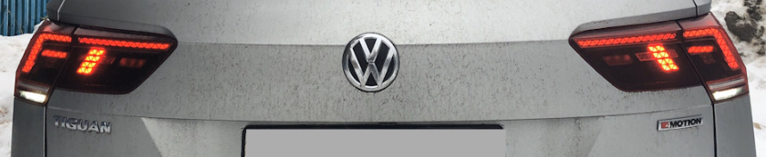
Отключаем основную ПТФ
Блок 09 → Адаптация:
Leuchte26NSL LA72:
- Lichtfunktion A: nicht aktiv (было Nebelschlusslicht wenn kein Anhaenger gesteckt und Rechtsverkehr)
→ Применить
Включаем секции стоп-сигналов
Блок 09 → Адаптация:
Leuchte27NSL RC6:
- Lichtfunktion B: Nebelschlusslicht wenn kein Anhaenger gesteckt und Rechtsverkehr (было Nicht aktiv)
- Lichtfunktion C: Kofferraumlicht (было Nebelschlusslicht wenn kein Anhaenger gesteckt und Rechtsverkehr)
→ Применить
Если надо включить еще и огни заднего хода
Блок 09 → Адаптация:
Leuchte28RFL LC11 и Leuchte29RFL RA64:
- Lichtfunktion В: Nebelschlusslicht wenn kein Anhaenger gesteckt und Rechtsverkehr (было Nicht aktiv)
→ Применить
Звук¶
Улучшение звучания¶
Данная настройка меняет звучание магнитолы очень посредственно.
Для более качественного звучания необходимо загружать параметрию в блок.
Блок 5F → Кодирование:
byte_11_Sound_System: Sound_System_no_Allocation или Sound_System_Internal
→ Применить (с перезагрузкой блока)
5F – MMI / RNS → Кодирование - 07 → Длинное кодирование:
Байт 11 – Выбираем 01 – Sound_System_no_Allocation или 04 – Sound_System_Internal
Выход → Сохранить
Повышение чувствительности микрофона¶
Речь водителя при звонке из автомобиля стала слышно четче. Диапазон регулировки от -10 до 10. Самые оптимальные значения идут от 2-х
Блок 5F → Адаптация:
Microfone sensivity (Mikrofonempfindlichtkeit)
- От 2-х до 10Db
→ Применить
Блок 5F Электронная информационная система → Адаптация:
Чувствительность микрофона: 2-10 Дб
Climate Control System Management¶
Display of Fan Rotation Speed in Automatic Mode¶
Block 08 → Coding:
Byte 11 – Bit 6 (Blower display during auto mode): Activate (replace value 00001110 with 01001110)
→ Apply (with block reboot)
Block 08 – Heater and climate control electronics → Long coding:
Indication of fan mode in automatic mode: Activate
08 – Climate control Coding – 07 → Long coding:
Byte 11 – Bit 6: Activate If there is no 6th bit, you can only change the code itself – replace value 00001110 with 01001110
Exit → Save

Retention of the Last Heating Stage for Front Seats¶
Description/Purpose of Activation: Always remembers the last selected intensity of the driver’s seat heater. This feature allows for more personalized car settings.
Block 08 → Adaptation:
Speicherung der Sitzheizungsstufe Fahrer (Retention of driver’s seat heater level): Activate
→ Apply
Speicherung der Sitzheizungsstufe Beifahrer (Retention of passenger’s seat heater level): Activate
→ Apply
08 Heater and climate control electronics → Adaptation
Retention of driver’s seat heater level: Activate (was Activate for 10 minutes)
Retention of passenger’s seat heater level: Activate
Automatic Steering Wheel Heating Based on Outside Air Temperature¶
Important Information
For 2020 models, this coding can be done in: - ODIS E 12 or ODIS S 6 versions - OBD11 Coding in older versions of ODIS or VCDS may cause the steering wheel heating to stop working completely
There are 2 modes:
Lenkradtemperatur – based on the sensor in the steering wheel
Aussentemperatur – based on the outside temperature sensor
Lenkradtemperatur – activates when the ignition is on if the steering wheel has a low temperature. Relevant for highway driving
Aussentemperatur – always works
Block 8 → Coding:
Heater and climate control electronics / Heated_steering_wheel_automatic_mode
- Steering wheel heating, automatic mode: set to desired value
→ Apply
08 Heater and climate control electronics → Long coding:
Steering wheel heating, automatic mode
08 Climate control → Coding – 07 → Long coding:
Byte 13 – Bit 2: based on the sensor in the steering wheel
Byte 13 – Bit 3: based on outside temperature
Do not activate both bits simultaneously!
If there is no bit selection, change the byte value itself: 14 (based on the sensor in the steering wheel) or 18 (based on outside temperature)
Exit → Save

Mirror Heating Along with Rear Window (not for Tiguan)¶
This coding does not work for Tiguan cars
Block 09 → Coding:
Mirror heating on while rear window heater on: Activate
→ Apply (with block reboot)
09 – Onboard network electronics
Coding – 07 → Long coding:
Byte 15 – Bit 3 (Mirror Heating ON while Rear Window Heater ON): Activate
Exit → Save
Mirror Heating Along with Rear Window (for Tiguan)¶
Activation of mirror heating along with rear window heating regardless of the position of the mirror control joystick on the driver's door
Block 52 → Coding:
Byte 9 – Bit 2 (rear_window_heater_trigger): Activate
Block 42 → Coding:
Byte 9 – Bit 2 (rear_window_heater_trigger): Activate
Display of mirror heating as a separate item in the comfort systems consumers menu:
yaml Block 19 → Adaptation:
Efficiency_display:
- Convenience_consumption_mirror_heating_dependency → Independent_of_outside_temperature_without_switch
Range_gain
- Consumption_mirror_heating_in_heated_rear_window: Activate
→ Apply
yaml Block 19 → Adaptation:
Efficiency program display:
- Convenience systems consumption, external mirror heating, dependency → Independent of outside temperature without switch
Range increase:
- External mirror heating consumption in rear window heating: Activate
Increase of Temperature and Heating Time for Front and Rear Windows¶
The input value is measured in seconds, for example, 1200 / 60 = 20 (minutes)
Change in temperature and heating time for the rear window
Block 09 → Adaptation:
Window heating:
- Heckscheibenheizung Zeitwert: from “320 s” to “640 s”
- Abschalttemperatur fuer Heckscheibenheizung: from “35.0 °C” to “38.0 °C”
→ Apply
Change in temperature and heating time for the windshield
Block 09 → Adaptation:
Window heating:
- Frontscheibenheizung Zeitwert: from “320 s” to “640 s”
- Abschalttemperatur fuer Frontscheibenheizung: from “35.0 °C” to “38.0 °C”
→ Apply
Activation of Air Care Climatronic¶
When AirCare is active, the Climatronic system begins to filter the air through the cabin filter in recirculation mode along with the supply of fresh air from outside. As a result, the air inside your car is cleaned more effectively, and its quality is improved by intensively filtering out fine particles. It is recommended to use a hypoallergenic cabin filter for this option. It serves to effectively separate solid dust and pollen particles, which are a serious problem in urban environments, especially during spring and autumn seasons.
To activate this functionality, you will need: - Climatronic unit with software version not lower than 1403; - Gateway unit with software version not lower than 1244/2244; - Infotainment MIB unit (STD2/HIGH2) from 2016 onwards (from 2017 model year);
yaml
Block 08 → Coding:
filtering_interior_air: installed
→ Apply (with block reboot)
yaml 08 – Climate control
Coding – 07 → Long coding:
Byte 15 – Bits 5-6 (20 – Interior air filtration): Activate
Exit → Save
Automatic Closing of Sunroof in Rain¶
VW Atlas
Block 09 → Adaptation:
Access control 2:
- RegenschlieRen: permanently
- RegenschlieRen: Activate
→ Apply
Block 09 → Coding → Subblock RLНS:
Byte 00 – Bits 1-2: Activate
→ Apply
Настройка приборной панели¶
Тест стрелок¶
Работает только для Active Info Display первого типа (5NA920790A/B/C, 5NA920791A/B/C)
Приборные панели второго типа (5NA920790D) не поддерживаются
Кодирование выполняется только при включенном зажигании и незапущенном двигателе
Блок 17 → Кодирование:
Демонстрация: Активировать
→ Применить (с перезагрузкой блока)
Блок 17 – Комбинация приборов → Длинное кодирование:
Демонстрация: да
Блок 17 Панель приборов → Кодирование → Длинное кодирование:
Байт 1 – Бит 0 (Gauge test/ Needle Sweep / Staging): Активировать
Выход → Сохранить

Отключение звукового и визуального предупреждения, если при заведенном автомобиле ключ оказался вне салона¶
Блок 17 → Кодирование:
Leaving_warning: no
→ Применить (с перезагрузкой блока)
Отображение на приборной панели фото звонящего, обложки альбома, логотипа радиостанции¶
Блок 17 → Адаптация:
Picture_Upload_Download: Активировать
→ Применить
Остаток в баках¶
Кодирование выполняется только при включенном зажигании и незапущенном двигателе
Блок 17 → Кодирование:
Объем, который необходимо заправить: Активировать
→ Применить (с перезагрузкой блока)
Блок 17 Комбинация приборов → Длинное кодирование:
Объём, который необходимо заправить: да
17 Панель приборов → Кодирование → Длинное кодирование:
Байт 10 – Бит 4 (Volume to be Replenished): Активировать
Выход → Сохранить

Шаг показаний сколько заливать топлива кратен 5 литрам т.е. 5-10-15-20 и т.д
(проверено, влезает даже чуть больше чем показывает – показывал 30 свободно, влезло 32 литра)
Таймер круга¶
Кодирование выполняется только при включенном зажигании и незапущенном двигателе
Блок 17 → Кодирование:
Таймер круга: Активировать
→ Применить (с перезагрузкой блока)
Блок 17 Панель приборов → Кодирование → Длинное кодирование:
Байт 1 – Бит 3 (Lap Timer active): Активировать
Выход → Сохранить
Отображение мгновенного расхода¶
Блок 17 → Адаптация:
Instantaneous Consumption Display: Display
→ Применить
Деактивация звукового оповещения о включенном зажигании при открытии двери¶
Блок 17 → Адаптация:
Ignition active message; trigger (Сообщение Поджиг активен, пиропатрон): «No display (tbd)»
→ Применить
Tip
Есть 3 значения: No display (tbd), Driver door, All doors.
Отключение предупреждения о не пристегнутом ремне безопасности¶
Отключается, чтобы не отвлекало в редких случаях, когда необходимо перемещение на короткие дистанции
Блок 17 → Адаптация:
Отключение предупреждения о непристегнутом ремне безопасности: да
→ Применить
Активация промежуточных значений спидометра¶
Работает только на приборных панелях AID нового образца с 2019 года.
В любом варианте 100 км/ч всегда вверху.
Variants
Variant_0
 Variant_1
Variant_1
 Variant_2
Variant_2
 Variant_3
Variant_3
 Variant_4
Variant_4
 Variant_5
Variant_5
 Variant_6
Variant_6
 Variant_7
Variant_7
 Variant_8
Variant_8

Variant_9

Блок 17 → Адаптация:
Конечное значение спидометра / Speedometer_final_value / Tachometer end value: исполнение_4 (было исполнение_1)
→ Применить
Смена анимации/отображения центральной части приборной панели¶
Варианты установки
исполнение_1 – классическое исполнение_3 – тема точек/карбона
Блок 17 → Адаптация:
Отображение на дисплее: исполнение_3 (было исполнение_1)
→ Применить
Логотип R-line (для приборных панелей нового типа 5NA920790D)¶
Возможные варианты
Без логотипа R
С логотипом R
С логотипом R-Line
Логотип R с обновления модели 25/19
Логотип R-Line с обновления модели 25/19
Блок 17 → Адаптация:
R_Logo: выбрать нужное
→ Применить
Корректировка показаний спидометра¶
Для каждого размера шин нужно подбирать своё значение
Блок 17 → Кодирование:
Длинна окружности колеса / Tire Circumference: Исполнение 3
→ Применить
Блок 17 Панель приборов → Кодирование → Длинное кодирование:
Байт 3 – Бит 0-2: Исполнение 3
Выход → Сохранить

Смена вида отображаемого автомобиля¶
Warning
не работает, если включена Эстетическая подсветка
Смена скина приборной панели¶
Темы задаются путем изменения комбинаций 2-х параметров
Блок 17 → Кодирование:
Tube_version: 0..9
Vehicle variant: 0..9
→ Применить
Вариант 1 – Стандартная схема

Блок 17 → Адаптация:
Tube_version: варианты 0, 5, 6, 7, 8, 9
→ Применить
Вариант 2 – Стандартная схема c большим количеством точек

Блок 17 → Адаптация:
Tube_version: вариант 1
→ Применить
Вариант 3 – Alltrack тема

Блок 17 → Адаптация:
Tube_version: вариант 2
→ Применить
Вариант 4 – GTI / GTD тема

Блок 17 → Адаптация:
Tube_version: вариант 3
→ Применить
Вариант 5 – R-line тема

Блок 17 → Адаптация:
Tube_version: вариант 4
→ Применить
---
Vehicle variant: варианты 2, 4
→ Применить
Вариант 6 – R-line тема со логотипом R-line внизу приборной панели

Блок 17 → Адаптация:
Tube_version: вариант 4
→ Применить
---
Vehicle variant: варианты 6, 8
→ Применить
Блок 17 → Кодирование:
Tube_version
- Skinning: 0..9
→ Применить
variant 0

variant 1

variant 2

variant 3

variant 4

variant 5

variant 6

variant 7

variant 8

variant 9

Сброс Сервисного Интервала¶
Блок 17 → Адаптация:
Сброс счетчиков расширенных интервалов ТО: Сбросить
→ Применить
Main unit
Головное устройство¶
Расшифровка кодировок¶
menu_display_xxx_clamp_15_off – работа при выкл зажигании
menu_display_xxx_over_threshold_high – работа в движении
menu_display_xxx_standstill – работа в режиме ожидания
menu_display_xxx_after_disclaimer – работа после какой-то фигни
Разблокировка инженерного меню¶
Перед этим, возможно, придется ODIS E перевести в режим программирования
Блок 5F → Адаптация:
Режим разрабочика (Developer mode): Активировать
Смена скина автомобиля¶
Иногда при замене ГУ на другой, бывает, что на нем установлен профиль другого автомобиля VW.
Пример для VW Tiguan:
Блок 5F → Кодирование:
byte_0_brand: _VW
byte_1_Car_Class: 3
byte_1_Car_Generation: 7
byte_2_Car_Derivate: 6
byte_2_Car_Derivate_Supplement: 0
→ Применить
Возможность одновременного подключения двух телефонов по bluetooth¶
Блок 5F → Адаптация:
function_configuration_phone:
- Support_second_phone: none → меняем
- Support_for_response_and_hold: off → on
- Dtmf_without_active_call: off → on
- _user_menu_three_way_calling: not_installed → installed
→ Применить
Блок 17 → Кодирование:
telephone2_BAP: no → yes
→ Применить
Электронный усилитель голоса ICC¶
Для активации данного усилителя необходимо загрузить параметрию:
(Параметрия под ODIS)
После загрузки параметрии нужно ОБЯЗАТЕЛЬНО перезагрузить магнитолу долгим нажатием на кнопку включения!
Отключение скачка громкости при старте магнитолы¶
Иногда при включении ГУ громкость включается намного сильнее, чем она была задана при выключении машины.
Блок 5F → Адаптация:
Adjustment_fm_tuner_mono_stereo:
- l_hf_stereo_lower_threshold: 20 dBµV (было 37 dBµV)
→ Применить
Деактивация AM диапазона в магнитоле¶
Слева внизу вместо ненужного "переключателя" AM/FM появляется иконка настройки радиостанций вручную

Блок 5F → Кодирование:
byte_14_AM_disable: Активировать
→ Применить (с перезагрузкой блока)
5F – MMI / RNS
Кодирование - 07 → Длинное кодирование:
Байт 1 – Бит 1 (byte_14_AM_disable): Активировать
Выход → Сохранить
Заставка ГУ¶
Блок 5F → Кодирование:
Байт 18 – меняем 00 на
01 — Hybrid
02 — GTD
03 — GTI
04 — BlueMotion
05 — E-Golf
06 — R-Line
07 — Golf R
→ Применить (с перезагрузкой блока)
Логотип музыкальной системы
Блок 5F → Адаптация:
Startup_screen_sticker_hmi (по умолчанию стоит 0000) - меняем на
1 — fender premium audio system
2 — dynaudio
→ Применить
Изменение картинки меню ГУ с перелистывания на плитку¶
Блок 5F → Кодирование:
byte_17_Skinning: Skin_1 → Skin_5
→ Применить (с перезагрузкой блока)
5F – MMI / RNS
Кодирование - 07 → Длинное кодирование:
Байт 17: Skin_1 → Skin_5
Выход → Сохранить
Видео в движении, Работа MirrorLink в движении¶
Discover PRO
Блок 5F → Адаптация:
nhtsa_properties:
- nhtsa_limitation_switches_for_carplay_no_softKeyboard: Деактивировать (CarPlay, возможность вызова клавиатуры в движении)
- nhtsa_limitation_switches_for_androidauto_limit_displayed_message_length: Деактивировать (AA,отключение ограничения длины выводимого сообщения в движении)
- nhtsa_limitation_switches_for_androidauto_no_setup_configuration: Деактивировать (AA, возможность заходить в настройки в движении)
- nhtsa_limitation_switches_for_androidauto_no_text_input: Деактивировать (AA, отключение запрета ввода текста в движении)
- nhtsa_limitation_switches_for_androidauto_no_video_playback: Деактивировать (АА, возможность проигрывать видео в движении)
→ Применить
Для всех остальных устройств необходимо загружать дополнительно специальный ZDC контейнер или XML параметрию для ODIS (Параметрия под ODIS)
Меню в магнитоле для настройки приборной панели¶
Škoda Octavia
Блок 5F → Адаптация:
Car_function_list_bap_gen2_extended:
- display_configuration_0x45: Активировать
- display_configuration_0x45_msg_bus: CAN_Comfort
→ Применить
Off Road Display¶

На Тигуанах второго поколения работает в информационно командных системах Composition Media 6", Discover Media, Discover Pro без кодирования в 5F блоке.
Блок 5F → Адаптация:
Car_Function_Adaptations_Gen2
menu_display_compass → "active" (default not active)
menu_display_compass_over_threshold_high → "active" (default not active)
menu_display_compass_clamp_15_off → "active" (default not active)
→ Применить
Car_Function_List_BAP_Gen2
compass_0x15 "active" (default not active)
→ Применить
Для Composition Media 8" необходимо выполнить кодировку 5F блока.
После кодирования в блоке будет висеть нестираемая ошибка, никак не влияющая на функциональность
Блок 5F → Кодирование:
Байт 24 – Бит 02 (Navigation System): Активировать (было "02" 00000010, стало "06" 00000110)
→ Применить (с перезагрузкой блока)
5F – MMI / RNS
Кодирование - 07 → Длинное кодирование:
Байт 24 – Бит 2 (Navigation System): Активировать
либо правим двоичное значение – было "02" 00000010, стало "06" 00000110
Выход → Сохранить
Режим автошкола¶
После адаптации необходимо перезагрузить магнитолу
Блок 5F → Адаптация:
Car_Function_Adaptations_Gen2:
- menu_display_driving_school – не активир.меняем на активир.
- menu_display_driving_school_over_threshold_high – не активир меняем на активир.
Car_Function_List_CAN_Gen2:
- Driving_school – недоступ. меняем на доступен
→ Применить
Включение персонализации¶
Кодирование должно выполняться на незаведенном двигателе
Блок 17 → Кодирование:
Байт 10 – Персонализация
выбираем «Вкл»
→ Применить
Блок 09 → Адаптация:
Персонализация / Personalisierung:
- Personalisierung_Profilfunkion → profiles_active
- Personalisierung_aktiv → Active
- Aktivierungsoption_im_HMI-Menue_sichtbar → Active
- Benutzerkontenverwaltung_in_HMI-Menue_sichtbar → Active
- Personalisierungsfunktionen_in_HMI-Menue_sichtbar → Active
- PSO_FSG_Setup2_Bit_1 → Active
- PSO_FSG_Setup2_Bit_2 → Active
→ Применить
Активация персонализации
Последовательность действий делается для того, чтобы авто не включало постоянно режим ГОСТЯ.
Блок 09 → Адаптация:
Персонализация / Personalisierung
- Profil_Variante: Konto (v. 1.x)
Создаем профили и далее меняем:
Блок 09 → Адаптация:
Персонализация / Personalisierung
- Profil_Variante: Konto (v. 2.x)
Меняем:
Блок 09 → Адаптация:
Персонализация / Personalisierung
- Profil_Variante: Konto (v. 1.x)
Использование глонасс антенны для навигации и компаса¶
Discover Pro · Discover Media
Блок 5F → Адаптация:
Navigation_GNSS_Receiver_Setting:
- default_hw_reception: Дективировать
- gps: Дективировать
- galileo: Дективировать
- glonass: Дективировать
- compass: Дективировать
- external_gps_1: Активировать
- external_gps_2: Дективировать
→ Применить
Блок 75 → Адаптация:
GPS: internal_GPS_output_on_CAN
Navigation_Type: Type_2:
- Gnss_data_rate:
Data Rate: 5 Hz (было 1)
→ Применить
Активация TMC для систем навигации MIB2/2.5 HIGH¶
Канал автодорожных сообщений (Traffic Message Channel, TMC) — технология для передачи информации о дорожных пробках и неблагоприятных дорожных условиях.
Как правило, данные передаются в виде цифровых кодов, с использованием радиосистемы оповещения (FM-RDS) для обычных FM-приёмников.
Поддержка функций TMC позволяет навигационной системе автомобиля получить информацию об участках с дорожными инцидентами и построить альтернативный маршрут для объезда проблемных участков.
Города, где ведется вещание
Москва (и города вокруг)
Санкт-Петербург (и города вокруг, Калининград)
Екатеринбург (и другие города Уральского ФО РФ)
Нижний Новгород (и другие города Приволжского ФО РФ)
Краснодар (и другие города Южного ФО РФ)
Новосибирск (и другие города Сибирского ФО РФ)
Установка¶
Установка проходит в несколько этапов с помощью модифицированной утилиты mib2-toolbox (утилиту предоставил https://www.drive2.ru/users/kisyabrus/)
(Сборка для Škoda)
(Сборка для Volkswagen)
Установка утилиты mib2-toolbox со встроенными скриптами для поддержки регионов:
1. Скачать архив
2. Распаковать его в корень SD карты
3. Удалить ранее установленный mib2-toolbox
4. Вставить карту в головное устройство
5. Долгим нажатием по кнопке MENU зайти в сервисное меню
6. Выбрать пункт "Software updates/versions" и нажать кнопку "Update" в правом верхнем углу
7. Выбрать SD карту и MQB Coding MIB2 Toolbox
8. После установки система предложит подсоединить адаптер для удаления ошибок. Выбрать "Cancel"
9. Долгим нажатием по кнопке MENU зайти в сервисное меню
10. Зайти в TESTMODE
11. Зайти в Green Developer Menu
12. В меню появится дополнительный пункт - "mqbcoding"

Установка нужного региона
1. Зайти в "mqbcoding", выбрать customization/advanced
2. Установить нужный патч, соответствующий региону, например, Install RussiaTMC Patch (Ekaterinburg, TMC25)
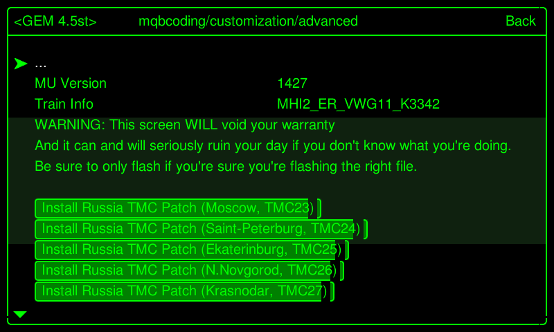
3. Перезагрузить устройство
4. Зайти в "mqbcoding", выбрать customization/adaptation/rccadaptations
5. В PayTMC адаптациях задать значение 15
Перезагрузить с помощью Green Developer Menu, в противном случае адаптации не применятся

После перезагрузки магнитоле нужно будет немного времени, чтобы прочитать и подхватить информацию с нужной частоты.
Наслаждаемся отображением пробок!

SWaP коды и параметрии для Composition Media и Discover Media¶
Warning
ВСЕ, ЧТО ВЫ БУДЕТЕ ДЕЛАТЬ — ВЫ БУДЕТЕ ДЕЛАТЬ ТОЛЬКО ПОД СВОЮ ОТВЕТСТВЕННОСТЬ! ЕСЛИ НЕТ УВЕРЕННОСТИ — НЕ НАЧИНАЙТЕ!
Голосовой помощник, MirrorLink, Bluetooth и Спорт-монитор для Delphi устройств¶
Что необходимо¶
- USB-Ethernet адаптер:
Предпочтителен: d-link dub e 100 ревизий b1(серебристый), с1, d1
или https://aliexpress.ru/item/32969701309.html?spm=a2g0s.9042311.0.0.3b9d33edZKppDb&sku_id=12000018080745527
работает без танцев с бубном, так сказать из посылки или другое устройство с чипом ASIX 88772 - Прошивка магнитолы
- SWaP магнитолы
Информация о ГУ¶
Как распознать модуль Delphi?
Модули Delphi – это всегда стандартные устройства, а не устройства высокого уровня.
Соответственно, Delphi Unit всегда является Discover Media, а не Discover Pro.
Все модули Delphi являются устройствами Discover Media, но не все устройства Discover Media являются модулями Delphi!
Discover Media также может быть устройством Technisat Preh – просто для справки.
Чтобы распознать устройство, не снимая его, необходимо удерживать кнопку «МЕНЮ» на радио в течение длительного периода времени, пока не откроется другое меню.
В этом меню в пункте «Обновление / версии программного обеспечения» можно увидеть версию программного обеспечения.

(Delphi) SW Train Version (MST2_ЕС_VW_P0891D) - формируются следующим образом:
MST2 = MIB2 стандартного устройство
ЕС = Европейский вариант (аналог этого США)
VW = марка автомобиля
0891 = Firmware 0891
D = Delphi Краткая версия модуля
Если в конце версии SW Train стоит буква D, значит, у вас есть модуль Delphi.
Если вы видите PQ или ZR после марки автомобиля или букву T в конце в версии SW Train, значит – у вас устройство Technisat Preh.
Прошивка устройства¶
Только прошивка 0891 позволяет соединиться с MIBII по Ethernet-USB (по нашей информации)
Для прошивки магнитолы понадобится:
- SD Card
- Прошивка Delphi устройств (Скачать)
- Активированное инженерное меню (Инструкция)
Обновление ПО MIBII
1. Отформатируйте SD-карту в FAT32
2. Скопируйте файлы обновления прошивки на SD-карту (в корне должно быть 3 папки и текстовый файл после распаковки архива)
3. Вставьте SD-карту в слот для SD-карты 1
4. Удалите все остальные SD-карты и USB-устройства!
5. Нажимайте на магнитоле кнопку MENU и дольше, пока не откроется другое (сервисное) меню
6. Выберите там тестовый режим

7. Перейдите в категорию «SWDL»

8. Активируйте загрузку программного обеспечения Загрузка вручную и нажмите «Начать загрузку»

9. Выберите источник (SD-карта), выберите все и запустите обновление прошивки
На что следует обратить внимание при обновлении прошивки?
Оставьте зажигание включенным.
Отключите ненужных потребителей (свет, вентиляция, ...)
Подключите зарядное устройство ( мощность зарядки не менее 15 А, лучше 20 А и больше)
В зависимости от устройства (RAM / CPU) обновление занимает от 20 до 60 минут
После обновления прошивки на панели будет мигать глонасс — это нормально, не бойтесь.
После обновления прошивки может появиться ошибка "Подтверждение изменения по установке". Необходимо будет подтвердить обновление прошивки кодом.
Инструкция и XOR калькулятор
Активация Telnet соединения¶
Чтобы установить соединение Telnet, необходимо активировать Ethernet в зеленом меню.
Для этого зажмите кнопку МЕНЮ на магнитоле до тех пор, пока не появится (сервисное) меню. Затем перейдите в тестовый режим

Теперь мы можем переключиться в Зеленое (Инженерное) меню
(по желанию вы также можете попасть туда, нажав на кнопку МЕНЮ очень долго)

Переключитесь в категорию «debuggung mlp».

Активируйте Ethernet и перезапустите устройство
(удерживайте кнопку питания не менее 10 секунд).

После перезапуска агрегата необходимо активировать «Switch to MLP».
Теперь адаптер USB-LAN можно подключить к USB-порту в автомобиле и подключить к ноутбуку с помощью кабеля LAN.
Если светодиоды на адаптере загораются, подключение и настройка IPv4 выполнены успешно (Настройки адаптера Ethernet IP – 192.168.1.10).
Запускаем программу Putty. IP-адрес MU берется из зеленого меню в качестве IP-адреса.
Случалось, что IP-адрес MU не отображался на некоторых устройствах, но он всегда использовался 192.168.1.4 и в качестве порта - 23, а затем нажимали «Открыть».
Если все настроено правильно, вы можете сказать по логину QNX Neutrino, что он работает.
Для входа в Delphi Units Login:root. Пароль не нужен. Нажимайте энтер..

Как только появится приветствие, можно будет вводить команды.

Команды:
cp – копировать
rm – удалить
chmod – изменить права (например, chmod 777= полные права чтения / записи)
mkdir – создать каталог (папку)
mount – монтировать путь
umount – размонтировать путь монтирования
Атрибуты:
-f – принудительно (перезапись / принудительно)
-R – рекурсивный (например, папка с содержимым и копировать / удалять подпапки)
-t – Запрос монтирования / особый тип (например, за которым следует qnx6)
-u – обновление (повторное монтирование)
-V – индикатор выполнения
-w – права чтения / записи (при монтировании)
Для удобства 3 скрипта (для запуска их необходимо поместить на корень флешки)
1. Бэкап (MST2_backup.sh)
2. Патч FEC кодов (MST2_fec.sh)
3. Патч SWaP (MST2_patch.sh)
Резервная копия MIBII¶
Вставьте (пустую) SD-карту в слот 1 и выполните следующие команды через Putty.
- Монтируем SD карту
cd / && mount -uw /sdc1/ - Запускаем скрипт Backup (MST2_backup.sh)
cd / && /sdc1/MST2_backup.sh - Должны увидеть:
# MST2_backup.sh ROOT access — OK Making backup dir on SD Card — OK mkdir: /sdc1/backup: File exists SWaP *.fec files backup — OK backup /ffs/etc/* — OK cp: Can't create FIFO file (/sdc1/backup/script.fifo) delphibin.ifs backup — OK InstallationManager backup — OK SWaP engine backup — OK cp: Dest (/sdc1/mst2_patch.sh) must be a dir to copy dirs or multiple files to it. profile backup — OK MHConfig.cfg backup — OK fs0 backup — OK Saving unit info to file — OK emmc serial numbler — SAVED FINISHED — You can now remove SD Card
Обновление FEC файла¶
После выполнения бекапа, на флешке в папке pg появится файл *.fec.
С помощью MIB2 Delphi FEC Generator XTR3M3 (M2DFGX16) патчим этот файл,
а именно отмечаем все пункты которые вам нужны и сохраняем отдельно пропатченный fec файл.
Важно
Если у вас с завода активированы коды App Connect, MirrorLink и т.д., и во время патча файла fec вы их не отметите, то после заливки в магнитолу их у Вас не будет.
Если у Вас магнитола без навигации, то отмечайте все пункты, кроме навигации
Доступные FCC
fsc = "00030000" # AMI
fsc2 = "00030001" # Gracenote
fsc3 = "00040100" # Navigation
fsc4 = "00050000" # Bluetooth
fsc5 = "00060100" # Vehicle Data Interface
fsc6 = "00060200" # Škoda/Audi Connect, VW CarNet
fsc7 = "00060300" # Mirror Link
fsc8 = "00060400" # Sport HMI
fsc9 = "00060500" # Sport Chrono
fsc10 = "00060600" # LogBook
fsc11 = "00060700" # Online Services
fsc12 = "00060800" # Apple CarPlay
fsc13 = "00060900" # Google Android Auto
fsc14 = "00070100" # SDS
fsc15 = "00070200" # SDS for Nav
fsc16 = "00070400" # Digital Voice Enhancement
Активация SWaP кодов¶
Новый генератор SWAP кодов: https://mst2fecgen.mibsolution.one/
SWaP файлы. Данные коды содержат в себе все существующие SWaP коды для ГУ
| Тип | Ссылка |
|---|---|
| STD2 | (SWaP) |
| PQ STD2 | (SWaP) |
| NAV | (SWaP) |
| PLUS | (SWaP) |
Для загрузки SWaP кода необходимо взять нужный файл, а так же созданный на предыдущем шаге FEC файл и загрузить в корень флешки.
Вставьте SD-карту в слот 1 и выполните следующие команды через Putty:
- Монтируем SD карту
cd / && mount -uw /sdc1/ - Запускаем скрипт (MST2_patch.sh)
cd / && /sdc1/MST2_patch.sh - Должны увидеть:
# mst2_patch.sh ROOT access — ok SWaP patch — ok cp: Copying /sdc1/SWaP to /home/mmc0t177_tmp/apps/bin/SWaP 100.00% (xxx/xxx kbytes, xxxx kb/s) FINISHED — You can now remove SD Card - Иногда скрипт не выполняется, и выдает ошибку. Тогда шаги из скрипта необходимо выполнить вручную:
cd / && mount -uw /sdc1/ umount -f /extbin mkdir /home/mmc0t177_tmp mount -t qnx6 /dev/mmc0t177 /home/mmc0t177_tmp cp -VRf /sdc1/SWaP /home/mmc0t177_tmp/apps/bin/ chmod 777 /home/mmc0t177_tmp/apps/bin/SWaP umount -f /home/mmc0t177_tmp rm -R /home/mmc0t177_tmp - Перезагружаем магнитолу долгим нажатием на кнопку включения — ОБЯЗАТЕЛЬНО!!!!
- Монтируем SD карту
cd / && mount -uw /sdc1/ - Запускаем скрипт Патч FEC кодов (MST2_fec.sh)
cd / && /sdc1/MST2_fec.sh - Должны увидеть:
# MST2_fec.sh ROOT access — ok *.FEC installation — ok mkdir: /home/mmc0t180_tmp: File exists FINISHED — You can now remove SD Card - Перезагружаем магнитолу долгим нажатием на кнопку включения — ОБЯЗАТЕЛЬНО!!!!
Если по каким либо причинам не получилось, значит Вам не подошел SWaP файл, пробуйте другой SWaP
Может случиться так, что файлы FEC все еще находятся в буфере в устройстве и все еще доступны после перезагрузки.
Их, возможно, придется удалить несколько раз, пока они не станут недоступны в устройстве после перезагрузки.
rm -RVf /Persistence/SWaP/ppw/
rm -RVf /Persistence/SWaP/illegal/
После этого можно импортировать исправленный файл FEC.
cp -VRf /sdc1/*.fec /Persistence/SWaP/pg/
После ввода команд обязательна полная перезагрузка.
Warning
После всех действий обязательно проверьте работоспособность ГУ.
Проверьте сканером на наличие ошибок, и удалите их если появились.
Электронный усилитель голоса ICC¶
Для активации данного усилителя необходимо загрузить параметрию:
(Параметрия под ODIS)
После загрузки параметрии нужно ОБЯЗАТЕЛЬНО перезагрузить магнитолу долгим нажатием на кнопку включения!
Снятие Component Protection и SWaP коды для Discover Pro¶
Warning
ВСЕ, ЧТО ВЫ БУДЕТЕ ДЕЛАТЬ — ВЫ БУДЕТЕ ДЕЛАТЬ ТОЛЬКО ПОД СВОЮ ОТВЕТСТВЕННОСТЬ! ЕСЛИ НЕТ УВЕРЕННОСТИ — НЕ НАЧИНАЙТЕ!
Все действия осуществляются только с помощью утилиты M.I.B. bash, т.е теперь для активации все опций нужна только SD карта.
Список прошивок на которые подойдет данный патч:
Список функциональных активаций:
Если у вас MIB2 high, но прошивка не совпадает со списком выше — сделайте обновление. До версии на которую патч имеется.
Процедура активации:
1. Копируете все файлы на SD карту
2. в папке patches оставляете только 1 папку с версией вашей текущей прошивки
3. Запускаете обновление ПО. Патч уже содержит активацию GEM. ГУ перезапустится несколько раз
4. После окончания установки заходим в GEM и выбираем >>M.I.B.-More_Incredible_Bash<<
Пункт №3 содержит в себе все необходимые FEC коды, а так же снятие защиты компонентов.
Данный патч содержит в себе только СВАПы. Для некоторых опций потом нужно будет сделать правки в кодировках и адаптациях блока.
Например, для активации данного усилителя необходимо загрузить параметрию:
(Параметрия под ODIS)
Для активации андроид авто или карплей необходимо выполнить соответствующие кодировки.
Tires
Настройка профилей шин¶
Генератор параметрии шин
Настройка системы контроля давления в шинах через Individual профиль¶
Tip
В старых версиях OBD11 был перепутан перевод (обычный — полный)
Настройки для обычной нагрузки
Блок 65 → Адаптация:
НОМ. давление для передней оси, обычный: 255 → 22 (если нужно 2.2 бара)
НОМ. давление для задней оси, обычный: 255 → 22 (если нужно 2.2 бара)
→ Применить
Настройки для полной нагрузки
Блок 65 → Адаптация:
НОМ. давление Полная загрузка передней оси: 255 → 26 (если нужно 2.6 бара)
НОМ. давление Полная загрузка задней оси: 255 → 26 (если нужно 2.6 бара)
→ Применить
Создание собственно профиля шин¶
Поддерживающиеся блоки:
3AA907273D; 3AA907273F; 3AA907273H; 5Q0907273; 5Q0907273B; 7P6907273H; 7P6907273L.
Для генерации необходимо выбрать нужный формат (какой утилитой будет проводиться загрузка) и правильный блок шин. Потом надо создать/наполнить таблицу давлений для него. В качестве названий может быть что угодно — размерность шин, названия Winter-Summer и т.д. Но все названия должны быть только на латинице!
Готовый файл заливается с помощью ODIS E или VCDS в блок 65:
Diagnostic function – Write Data Record
После загрузки данных меню настроек будет выглядеть так:

Warning
После записи машина на некоторое время станет новогодней ёлкой — будут ошибки и отказы по всем блокам.
Беспокоиться не надо — в течение 10 минут все само починится.
Косвенный контроль давления в шинах¶
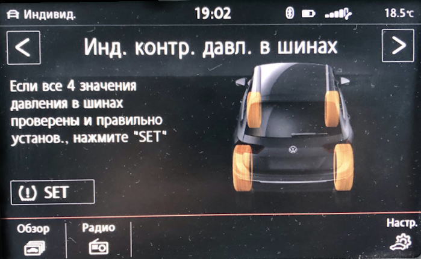
Активация в блоке ABS
Блок 03 → Кодирование:
Байт 27 – активируем биты 4,5 (1-й вариант) или биты 4,5,6 (2-й вариант – для парк-пилота)
Байт 28 – Бит 7: Активировать
→ Применить (с перезагрузкой блока)
Активация отображения на приборной панели
Блок 17 → Кодирование:
Байт 4 – Бит 0 (Indirect Tire Pressure Monitoring System(TPMS) installed / Индикатор контроля давления в шинах): Активировать
→ Применить (с перезагрузкой блока)
Активация в меню магнитолы
Блок 5F → Адаптация:
Car_Function_Adaptations_Gen2:
- menu_display_rdk: Активировать
- menu_display_rdk_over_threshold_high: Активировать
→ Применить
---
Car_Function_List_BAP_Gen2:
- tire_pressure_system_0x07: Активировать
- tire_pressure_system_0x07_msg_bus: CAN_Comfort (возможно Suspension_data_bus)
→ Применить
После кодирования необходимо включить зажигание, магнитолу и на экране контроля давления нажать виртуальную клавишу SET
Дооснащение¶
Камера ассистентов¶
Оборудование:
1. Камера ассистентов
2. Кожух
3. Безрамочное зеркало без FLA
4. Кожух для крепления зеркала
5. Проводка
Схема подключения:
1 пин камера А5 (R242) -→ 6 пин радара АСС (J428)
7 пин камера А5 (R242) -→ 5 пин радара АСС (J428)
6 пин — "+"
5 пин — "-"
2 пин — Can extended low – 8 пин в разъеме зеркала
8 пин — Can extended high – 3 пин в разъеме зеркала
4 пин — плюсовой провод обогревателя камеры
10 пин — минусовый провод обогревателя камеры
Схема

Макет для калибровки
(Кодирование камеры) (Калибровка камеры)
Сенсорная панель климата¶
Блок 08 → Кодирование:
Climate_style → display на Anzeige Front und Heck
→ Применить (с перезагрузкой блока)
Блок 08 → Адаптация:
Detection_time_tap:
- par_Detection_time_tap: 600 ms
Detection_time_hold:
- par_Detection_time_hold: 600 ms
Off_time_neighbor_key_during_sliding:
- par_Off_time_neighbor_key_during_sliding: 400 ms
Sensitivity_touch:
- par_Sensitivity_touch: 0
Steps_temp_slider:
- par_Steps_temp_slider: 8
Step_size_temp_slider:
- par_Step_size_temp_slider: 0.5°C
22_degree_jump_temp_slider:
- par_22_degree_jump_temp_slider: not_active
Flick_function_temp_slider:
- par_Flick_function_temp_slider: not_active
Profile_selection_touch:
- par_Profile_selection_touch: 0
dimming_characteristic_new_1:
- X1: 0
- Y1: 16
- X2: 10
- Y2: 16
- X3: 50
- Y3: 60
- X4: 100
- Y4: 125
- X5: 150
- Y5: 500
- X6: 253
- Y6: 1,000
dimming_characteristic_new_2:
- X1: 0
- Y1: 0
- X2: 10
- Y2: 100
- X3: 25
- Y3: 250
- X4: 50
- Y4: 500
- X5: 75
- Y5: 750
- X6: 100
- Y6: 1,000
dimming_characteristic_new_3:
- X1: 0
- Y1: 6
- X2: 10
- Y2: 6
- X3: 50
- Y3: 12
- X4: 100
- Y4: 25
- X5: 150
- Y5: 100
- X6: 253
- Y6: 300
dimming_characteristic_new_4:
- X1: 0
- Y1: 20
- X2: 10
- Y2: 20
- X3: 50
- Y3: 60
- X4: 100
- Y4: 120
- X5: 150
- Y5: 800
- X6: 253
- Y6: 1,000
dimming_characteristic_new_5:
- X1: 0
- Y1: 10
- X2: 10
- Y2: 10
- X3: 50
- Y3: 50
- X4: 100
- Y4: 100
- X5: 150
- Y5: 1,000
- X6: 253
- Y6: 1,000
dimming_characteristic_new_6:
- X1: 0
- Y1: 4
- X2: 10
- Y2: 4
- X3: 50
- Y3: 15
- X4: 100
- Y4: 30
- X5: 150
- Y5: 600
- X6: 253
- Y6: 1,000
dimming_characteristic_new_7:
- X1: 0
- Y1: 20
- X2: 10
- Y2: 20
- X3: 50
- Y3: 50
- X4: 100
- Y4: 100
- X5: 150
- Y5: 800
- X6: 253
- Y6: 1,000
dimming_characteristic_new_8:
- X1: 0
- Y1: 8
- X2: 10
- Y2: 8
- X3: 50
- Y3: 20
- X4: 100
- Y4: 25
- X5: 150
- Y5: 600
- X6: 253
- Y6: 1,000
dimming_characteristic_new_9:
- X1: 0
- Y1: 14
- X2: 10
- Y2: 14
- X3: 50
- Y3: 32
- X4: 100
- Y4: 41
- X5: 150
- Y5: 800
- X6: 253
- Y6: 1,000
dimming_characteristic_new_10:
- X1: 0
- Y1: 10
- X2: 10
- Y2: 10
- X3: 50
- Y3: 25
- X4: 100
- Y4: 50
- X5: 150
- Y5: 800
- X6: 253
- Y6: 1,000
damping_dimming_characteristic_01:
- PWM_Daempfung_Aufdimmen: 0.2 s
- PWM_Daempfung_Abdimmen: 0.1 s
damping_dimming_characteristic_02:
- PWM_Daempfung_Aufdimmen: 0.2 s
- PWM_Daempfung_Abdimmen: 0.1 s
damping_dimming_characteristic_03:
- PWM_Daempfung_Aufdimmen: 0.2 s
- PWM_Daempfung_Abdimmen: 0.1 s
damping_dimming_characteristic_04:
- PWM_Daempfung_Aufdimmen: 0.2 s
- PWM_Daempfung_Abdimmen: 0.1 s
Sun_sensor_supplier_differentiation:
- par_Sun_sensor_supplier_differentiation: none
→ Применить
Датчик влажности¶
Датчик 3Q0907643 ставится вместо штатного датчика грязного воздуха
Блок 08 → Кодирование:
Байт 9 – Бит 4-5 (10 – Датчик влажности наружнего воздуха установлен / Sensor_for_air_humidity_outside): Активировать
Reduction of window misting outside at high humidity: Matching glass temperature model
→ Применить (с перезагрузкой блока)
Блок 08 → Адаптация:
Reduction of window misting outside at high humitity:
- param_Reduction_of_window_misting_outside_at_high_humitity: Matching coding
→ Применить
DYNAUDIO¶
Блок 19 → Адаптация:
Installation list – specified installations:
- Sound System: Not coded
- Digital Sound System Control Module: Yes
GW_Enable_CAN_Timeout_DTC:
- Sound System: Enabled
→ Применить
Блок 5F → Кодирование:
byte_4_Channel_1_HT: not_installed
byte_4_Channel_1_TT: not_installed
byte_4_Channel_2_HT: not_installed
byte_4_Channel_2_TT: not_installed
byte_4_Channel_3_HT: not_installed
byte_4_Channel_3_TT: not_installed
byte_4_Channel_4_HT: not_installed
byte_4_Channel_4_TT: not_installed
byte_5_Channel_5_HT: not_installed
byte_5_Channel_5_TT: not_installed
byte_5_Channel_6_HT: not_installed
byte_5_Channel_6_TT: not_installed
byte_5_Channel_7_HT: not_installed
byte_5_Channel_7_TT: not_installed
byte_5_Channel_8_HT: not_installed
byte_5_Channel_8_TT: not_installed
byte_6_Channel_9_HT: not_installed
byte_6_Channel_9_TT: not_installed
byte_6_Channel_10_HT: not_installed
byte_6_Channel_10_TT: not_installed
byte_6_Channel_11_HT: not_installed
byte_6_Channel_11_TT: not_installed
byte_6_Channel_12_HT: not_installed
byte_6_Channel_12_TT: not_installed
byte_7_Channel_13_HT: not_installed
byte_7_Channel_13_TT: not_installed
byte_7_Channel_14_HT: not_installed
byte_7_Channel_14_TT: not_installed
byte_7_Channel_15_HT: not_installed
byte_7_Channel_15_TT: not_installed
byte_7_Channel_16_HT: not_installed
byte_7_Channel_16_TT: not_installed
byte_11_Sound_System: Sound_System_external_MOST
→ Применить (с перезагрузкой блока)
Блок 5F → Адаптация:
Sound System: yes
Startup_screen_sticker_HMI: 2
Car_Function_List_BAP_Gen2:
- Amplifier_0x2D: not activated
- Amplifier_0x2D_msg_bus: Databus Infotainment
→ Применить
[PR-KA1] Камера заднего вида¶
Подключение проводов
- Плюс клемма 30 берется в разъеме Quadlock красный или красно желтый толстый
- Масса берется в разъеме Quadlock коричневый толстый
- Кан шина инфотеймент — Сигнал от камеры
- К пину под номером 12 должна быть подключена "оплётка"/экран видео-кабеля от камеры — черный провод
- К пину под номером 6 – центральная жила того же кабеля — белый провод
- Это самые крайние пины для синего разъёма.
- Оранжево-фиолетовый — к оранжево-фиолетовому Quadlock — серый разъем 6 контакт
- Оранжево-коричневый — к оранжевому коричневому Quadlock — серый разъем 12 контакт
ОБЯЗАТЕЛЬНО ЗАКРЫВАЙТЕ БАГАЖНИК ПРИ ПРОВЕРКЕ!
Блок 19 → Список оборудования:
6C (КАМЕРА): установлено
→ Применить
Блок 5F → Кодирование:
Байт 19 – Бит 4 (byte_19_Rear_View_Low): Деактивировать
→ Применить
Блок 5F → Адаптация:
Car_Function_List_BAP_Gen2:
- VPS_0x0B: Активировать
- VPS_0x0B_msg_bus: Databus заменить на Infotainment
→ Применить
Настройка парковочного ассистента
Блок 76 → Кодирование:
Байт 2 – Бит 4-5 (10 – Camera Type: Rear View Camera (RVC)): Активировать
→ Применить (с перезагрузкой блока)
Если калибровка камеры не сделана — будет висеть ошибка — отсутствуют базовые параметры.
Установка китайской камеры
К ГУ можно так же подключить и китайскую камеру без поддержки траекторий. Но в этом случае необходимо будет поправить ряд кодировок:
Блок 5F → Кодирование:
Байт 19 – Бит 4 (byte_19_Rear_View_Low): Активировать
→ Применить
Блок 5F → Адаптация:
Car_Function_List_BAP_Gen2
- VPS_0x0B: Деактивировать
→ Применить
Макет для калибровки

Задние ручки kessy¶
Оборудование:
— ручки 510837205G 510837206G
— проводка от Тигуана в сборе от передних дверей
— разъём в ответную часть проводки
— пины в дверные разъёмы по 6 штук 12527545852 и 12527512135
— пины в блок kessy 6 штук N90764701
Схема подключения правой двери:

Схема подключения левой двери:

Принцип укладки проводки:
1. От ручек по 4 провода - 3 до блока kessy, 1 на массу.
2. Через резиновую муфту в обшивке необходимо протянуть 3 провода от ручек.
3. Далее провода идут через гофру до дверного разъема.
4. От разъема провода идут в блок kessy.
Шаги:
1. Разобрать двери (скинуть обшивку), демонтировать старые и установить новые ручки по инструкции из ELSA, вытянуть провод из "мокрой" части двери наружу, уложив его так, чтобы его не цепляло стекло при опускании.
2. Протянуть по 3 провода из готовой проводки от ручек до разъема двери, массу примотал к массе на блоках дверей, смотать все с заводской косой и запиновать разъемы между дверью и стойкой, для этого необходимо частично демонтировать проводку из двери.
3. Пинуем провода в разъемы задних дверей.
4. Пинуем ручки в разъемы стоек.
5. По порогу и по жгуту проводки подсветки ног прокладываем провода от стойки двери до блока Kessy и пинуем блок по инструкции.
Блок В7 → Кодирование:
Байт 0 – Бит 2 (Дверная ручка kessy слева на двери сзади слева, Activation of Kessy door handle, left rear door): Активировать
Байт 0 – Бит 3 (Дверная ручка kessy слева на двери сзади справа, Activation of Kessy door handle, right rear door): Активировать
Байт 1 – Бит 2 (Пассивный выход для двери сзади слева отключен, Passive entry left rear door handle): Деактивировать
Байт 1 – Бит 3 (Пассивный выход для двери сзади справа отключен, Passive entry right rear door handle): Деактивировать
→ Применить
[PR-7Y1,7Y5] Side Assist – система контроля слепых зон¶
Существуют 2 типа радаров. С 2020 года поставляются радары, с которых не надо снимать защиту компонентов и делать калибровку
Параметрии:
| ID оборудования | Прошивка | Параметрия (ODIS XML) |
|---|---|---|
| 2Q0907685B / 2Q0907686B (176) | (Скачать) | (Скачать) |
| 2Q0907685C / 2Q0907686C | (Скачать) | (Скачать) |
Блок 19 → Список оборудования:
3C (Система смены полосы движения): установлено
CF (Система смены полосы движения): установлено
Gateway_Component_List:
- Node_0x4E: coded
- Node_0x8A: coded
→ Применить
Блок 17 → Кодирование:
Lane_change_assistant: yes
Lane_change_assistant_BAP: yes
→ Применить (с перезагрузкой блока)
Блок 13 → Кодирование:
Control_module_for_lane_assistance: installed
Lane_change_support: Активировать
→ Применить (с перезагрузкой блока)
Блок 03 → Кодирование:
Байт 29 – Бит 7: Активировать (1ХХХХХХХ)
→ Применить (с перезагрузкой блока)
Блок 5F → Кодирование:
Car_Function_List_BAP_Gen2:
- SWA_0x1A: Активировать
- SWA_0x1A_msg_bus → Дополнительная шина данных (CAN_Extended)
Car_Function_Adaptations_Gen2:
- menu_display_lane_assistant: Активировать
- menu_display_lane_assistant_over_threshold_high: Активировать
Кодирование системы кругового обзора (если есть)
Блок 6C → Кодирование:
equipment_RTA: installed
→ Применить (с перезагрузкой блока)
Блок 76 → Кодирование:
Rear_Cross_Traffic: Alert: mit RCTA
→ Применить (с перезагрузкой блока)
Блок A5 → Кодирование:
SWA: Coded
→ Применить (с перезагрузкой блока)
Блок 3C → Кодирование:
Pre_Sense: without_Pre_Sense
Rear_Cross_Traffic_Alert: with_RCTA
ECU for draw bar: no ECU for draw bar
steering: left-hand drive
Rear_Axle_Steering: without_Rear_Axle_Steering
Lane_Departure_Warning_System: with_Lane_Departure_Warning_System
Front_Sensors_Driver_Assistance_System: with_Front_Sensors_Driver_Assistance_System
Diagnosis_RCTA: tone_via_PLA
→ Применить (с перезагрузкой блока)
Автосвет¶
Для этого необходим новый переключатель 5G0941431BD и датчик света и дождя 5Q0955547C
Установка переключателя
Блок 09 → Адаптация:
Aussenlicht_uebergreifend:
- LDS_mit_AFL: Yes
→ Применить
Установка датчика света и дождя
Блок 09 → Адаптация:
Lighting_Assist_Adaptation:
- Regen_Lichtsensor: LIN_Regen_Licht_Sensor
- Feuchtesensor: Installed (если есть датчик влажности)
После этих кодировок датчик света и дождя появляется в кодировании 9 блока. Прописываем в него кодировку:
Блок 09 → Кодирование → Подблок RLНS:
- 3СА8DD — фары включаются не так поздно, где то при 1200lx
- 3CA8D7 — фары включаются совсем поздно, при 800lx
[PR-7K3] Direct RDKS/TPMS – система прямого контроля давления в шинах¶
RDKS (Reifen Druck Kontrolle System) или TPMS (Tires Pressure Monitoring System)
Параметрия:
| ID оборудования | Параметрия (ODIS XML) |
|---|---|
| 5Q0907273B | (Скачать) |
Необходимые действия
- Установка антенны системы RDKS (5Q0907273B) в правом заднем крыле (штатное место под бампером)
- Прокладка проводки, подключение к питанию и CAN шине
- Установка датчиков давления (5Q0907275B)
- Загрузка параметрии в антенну, кодирование систем автомобиля

Схема из ELSA (используются 4 провода — питание 12в, масса и провода каншины CAN Ext High и Low)

CAN шина находится в районе ручки открытия капота, за накладкой. Фишка T17a и пины 12 (CAN High) и 13 (CAN Low)
 Питание идет от блока предохранителей. Если "родной" 7-й предохранитель занят, то можно использовать свободный 45-й или 38-й.
Питание идет от блока предохранителей. Если "родной" 7-й предохранитель занят, то можно использовать свободный 45-й или 38-й.
Кодирование
Блок 19 → Список оборудования:
65 (Блок управления системы контроля давления в шинах): установлено
→ Применить
Отключение косвенного давления, если было активировано
Блок 03 → Кодирование:
Байт 27 – Биты 4,5,6: Деактивировать
Байт 28 – Бит 7: Деактивировать
→ Применить (с перезагрузкой блока)
Блок 17 → Кодирование:
Байт 4 – Бит 0 (Indirect Tire Pressure Monitoring System(TPMS) installed / Индикатор контроля давления в шинах): Деактивировать
→ Применить (с перезагрузкой блока)
Активация RDKS
Блок 17 → Кодирование:
Байт 3 – Бит 7 (Direct Tire Pressure Monitoring System(TPMS) installed / Индикатор контроля давления в шинах): Активировать
Байт 11 – Бит 2 (Direct Tire Pressure Monitoring System(TPMS) BAP installed): Активировать
→ Применить (с перезагрузкой блока)
Активация в меню магнитолы
Блок 5F → Адаптация:
Car_Function_Adaptations_Gen2:
- menu_display_rdk: Активировать
- menu_display_rdk_over_threshold_high: Активировать
→ Применить
---
Car_Function_List_BAP_Gen2:
- tire_pressure_system_0x07: Активировать
- tire_pressure_system_0x07_msg_bus: CAN_Extended
→ Применить
Для активации системы после кодирование необходимо проехать примерно 1 километр
MQB EEPROM¶
В MQB платформе точно так же как в и PQ часть настроек можно производить напрямую в EEPROM памяти
Известные адреса памяти BCM¶
За это отвечают адаптации в BCM блоке (09):
Parameter Write Adaptation:
- parameter address: FExxxx # (1)!
- parameter value: yyy # (2)!
Parameter Read Adaptation:
- parameter address: FExxxx
- Адрес параметра
- Значение в HEX системе. Например,
05h = 5 = 0.5 секунды,0Ah = 10 = 1 секунда,14h = 20 = 2 секунды
| Адрес памяти | Старое значение | Новое значение | Описание |
|---|---|---|---|
| FE0207 | 40 | 20 | Время удержания кнопки для опускания стёкол |
| FE0208 | 40 | 20 | Время удержания кнопки время удержания для поднятия стёкол и складывания зеркал |
MQB-Evo
Coding of platform MQB-Evo¶
Codings were provided by n3oka
Important information
- These codings were verified only on Golf MK8
- If coding is marked as "Cannot be successfully coded", it means that there is no public-known successful activation.
Offline version
Автомобили на этой платформе¶
Audi A3 Mk4 (2020–present)
Audi Q6 (2022–present)
Cupra Formentor (2021–present)
SEAT León Mk4 (2020–present)
Škoda Superb Mk4 (2023–present)
Škoda Octavia Mk4 (2020–present)
Škoda Kodiaq Mk2 (2023–present)
Volkswagen Caddy Mk4 (2020–present)
Ford Tourneo Connect Mk3 (2022–present)
Volkswagen Golf Mk8 (2019–present)
Volkswagen Lamando L (2022–present)
Volkswagen Multivan (T7) (2022–present)
Volkswagen Passat (B9) (2023–present)
Volkswagen Talagon (2021–present)
Volkswagen Tavendor (2022–present)
Volkswagen Tiguan Mk3 (2023–present)
Drive assistance
Cruise control function¶
Activate cruise control (No distance regulation)¶
SFD: no Tested SW: 0395
Control unit 13 → Coding:
Cruise_control_mode: activated
→ Apply
Disable prevention of overtaking on the right (ACC)¶
SFD: no Tested SW: 0395
Control unit 13 → Coding:
Overtaking_right_prevention: deactivated
→ Apply
Adjust ACC 1 km/h increments¶
SFD: no Tested SW: 0395
Tap ± 1 km/h, press a little longer for ± 10 km/h
Control unit 13 → Coding:
Operation_mode: Operation_mode_2
→ Apply
Curve assistant adjustable in the car menu for ACC¶
SFD: no Tested SW: 0395
No changes recognizable, maybe linked in the dataset
Control unit 13 → Coding:
Curve_assistent_CarMenu: activated
→ Apply
Speed limiter adjustable in the car menu for ACC¶
SFD: no Tested SW: 0395
No changes recognizable, maybe linked in the dataset
Control unit 13 → Coding:
Speed_limit_assistent_CarMenu: activated
→ Apply
Front assistance camera (A5)¶
Steering resistance is adjustable via the Car Menu while Travel-Assist is active¶
SFD: no Tested SW: 3129-3405
Control unit A5 → Coding:
HC_Warn_Intensity: Setting_over_menu
→ Apply
Adjust lane-keeping assistant intervention point¶
SFD: no Tested SW: 3129-3405
Control unit A5 → Coding:
Point_of_intervention: early (intervenes early), late (intervenes late), early_setting_over_menu (Intervenes early, no settings in the menu), late_setting_over_menu (Intervenes late, no settings in the menu)
→ Apply
Save lane-keeping assistant settings (on ignition change)¶
SFD: no Tested SW: 3129-3405
Control unit A5 → Coding:
Configuration_for_lane_departure_warning_Kl15: last_setting
→ Apply
Lane-keeping assist intervention point adjustable in the car menu¶
SFD: no Tested SW: 3129-3405
Control unit A5 → Coding:
Point_of_intervention: early, late, early_setting_over_menu, late_setting_over_menu
→ Apply
Activate lane-keeping assist below 60km/h¶
SFD: no Tested SW: 3129-3303
No function below 60km/h
Control unit A5 → Coding:
Hc_variante: Variante_1
→ Apply
Drive assistance¶
Break disk drying adjustment¶
SFD: yes Tested SW: 0136
This adaptation channel is not displayed by every coding dongle. Work in OBD11, ODIS
Control unit 03 → Adjustments:
Break disk drying:
- Break disk drying: medium (light, medium, strong)
→ Apply
Change steering characteristics without drive mode selection¶
SFD: no Tested SW: 1040
Control unit 44 → Adjustments:
- Steering_support_characteristic_line: dynamic
→ Apply
Climate Control System Management¶
Display ventilation level in "Auto" mode¶
SFD: no Tested SW: 0440-0531
Applicable only for old-style climate with rotation buttons
Control unit 08 → Adjustments:
Blower display during auto mode:
Blower display during auto mode: activated
→ Apply
Save AirCare setting¶
SFD: no Tested SW: 0440-0531
Control unit 08 → Adjustments:
Filtering_interior_air_saving:
- Filtering_interior_air_saving: not_active (Will not be stored), active (Will be stored), depending_on_standing_time (Stored depending on standing time)
→ Apply
Automatically reduce seat heating to a lower level after a certain time¶
SFD: no Tested SW: 0440-0531
Control unit 08 → Adjustments:
Time for seat heating power reduction Level 3 to level 2:
- param_Time_for_seat_heating_power_reduction_Level_3_to_level_2: 0 min (adjust value as desired, 0 = off)
Time for seat heating power reduction Level 2 to level 1:
- param_Time_for_seat_heating_power_reduction_Level_2_to_level_1: 0 min (adjust value as desired, 0 = off)
→ Apply
Save recirculation setting¶
SFD: no Tested SW: 0440-0531
Control unit 08 → Adjustments:
Save air recirculation status at terminal 15 off:
- Save air recirculation status at terminal 15 off: storring, Do_not_store, resttime_dependent_storage (Stored depending on standing time)
→ Apply
Enable fan levels "gentle", "medium" and "intensive"¶
SFD: no Tested SW: 0440-0531
Control unit 08 → Adjustments:
Climate_style:
- Climate_style: display
→ Apply
Adjust seat heating temperatures¶
"lower" is the activation temperature
"upper" is the deactivation temperature
Control unit 08 → Adjustments:
Seat_Heating_Level_Adaptation:
- Seat_heating_stage_1_lower_threshold: 20,0 [UN]_°C (stage 1)
- Seat_heating_stage_1_upper_threshold: 20,5 [UN]_°C (stage 1)
- Seat_heating_stage_2_lower_threshold: 20,0 [UN]_°C (stage 1)
- Seat_heating_stage_2_upper_threshold: 20,5 [UN]_°C (stage 1)
- Seat_heating_stage_3_lower_threshold: 33,0 [UN]_°C (stage 2)
- Seat_heating_stage_3_upper_threshold: 33,5 [UN]_°C (stage 2)
- Seat_heating_stage_4_lower_threshold: 33,0 [UN]_°C (stage 2)
- Seat_heating_stage_4_upper_threshold: 33,5 [UN]_°C (stage 2)
- Seat_heating_stage_5_lower_threshold: 50,0 [UN]_°C (stage 3)
- Seat_heating_stage_5_upper_threshold: 50,5 [UN]_°C (stage 3)
- Seat_heating_stage_6_lower_threshold: 50,0 [UN]_°C (stage 3)
- Seat_heating_stage_6_upper_threshold: 50,5 [UN]_°C (stage 3)
→ Apply
Save seat heating settings¶
SFD: no Tested SW: 0440-0531
Control unit 08 → Adjustments:
Seat heating level driver side, saving condition:
- param_Seat_heating_level_driver_side,_saving_condition: not_active, 10_minutes_activ, active (Last configuration will be stored)
→ Apply
Control unit 08 → Adjustments:
Seat heating level passenger side, saving condition:
- param_Seat_heating_level_passenger_side,_saving_condition: not_active, 10_minutes_activ, active (Last configuration will be stored)
→ Apply
Deactivate the steering wheel heater permanently¶
SFD: no Tested SW: 0440-0531
Control unit 08 → Adjustments:
- Heated_steering_wheel_and_Heated_steering_wheel_automatic_mode: not_installed
→ Apply
Comfort¶
Deactivate the rear windows wiper intermittent wipe function¶
SFD: yes Tested SW: 0161
Control unit 9 → Adjustments:
Heckwischer_steuerung:
- Traenenwischen Heck: not_active
→ Apply
Enable rear windshield wiper activation automatically¶
SFD: no Tested SW: 0161
Control unit 9 → Adjustments:
Heckwischer_steuerung:
- Automatisches Heckwischen: active
Geschwindigkeit, anpassen wie gewünscht:
- Komofortwischen Heck Intervallpausenzeit Stufe Intervall LSS AUS: 10 [UN]_s
- Komofortwischen Heck Intervallpausenzeit Stufe Intervall: 7 [UN]_s
- Komofortwischen Heck Intervallpausenzeit Stufe Automatik: 7 [UN]_s
- Komofortwischen Heck Intervallpausenzeit Stufe 1: 5 [UN]_s
- Komofortwischen Heck Intervallpausenzeit Stufe 2: 3 [UN]_s
- Einzelansteuerung Heckintervallwischen Zeitintervall 1: 8 [UN]_s
- Einzelansteuerung Heckintervallwischen Zeitintervall 2: 16 [UN]_s
→ Apply
Automatic opening/closing of windows when opening/closing a door¶
SFD: no
Control unit 42 → Coding:
short_drop: active
→ Apply
Control unit 52 → Coding:
Coding:
short_drop: active
→ Apply
Activate puddle lights when the mirrors are folded in¶
SFD: no
Control unit 42 → Coding:
turn_off_front_field_light_with_folded_mirror: not_active
→ Apply
Control unit 52 → Coding:
Coding:
turn_off_front_field_light_with_folded_mirror: not_active
→ Apply
Comfort open-close sunroof with remote control¶
SFD: no Tested SW: 0040
Control unit CA → Adjustments:
Control_unit_for_sun_roof_convenience_functions:
- Convenience_opening_target_attitude: sliding_position
→ Apply
Maintain sunroof tilt angle while driving¶
SFD: no Tested SW: 0040
Control unit CA → Adjustments:
Speed_dependent_control:
- Sliding_sunroof_reduce_tilting_position: not_active
→ Apply
Adjust or deactivate the engine sound generator¶
SFD: no Tested SW: 0001
Control unit A9 → Adjustments:
Loudness_actuator_for_structure_borne_sound: 0-100% (0 = off, 1-100% = volume)
→ Apply
Adjust automatic activation temperatures of the steering wheel heater¶
SFD: ??? Tested SW: 0161
Control unit 9 → Adjustments:
LIN-SMLS_konfig_1:
- k_i_offset: 4 [UN]_°C (Below 4°C is considered cold, for example)
→ Apply
Display lap timer on the head-up display¶
SFD: no Tested SW: 2032
No changes recognizable, maybe linked in the dataset
Control unit 82 → Adjustments:
Laptimer: yes
→ Apply
Adjust seat ventilation¶
SFD: yes Tested SW: 0161-0183
Control unit 09 → Adjustments:
Sitzlüfterkennlinie:
- Level_1_Sitz: 30 % (stage 1)
- Level_1_Lehne: 30 % (stage 1)
- Level_2_Sitz: 30 % (stage 1)
- Level_2_Lehne: 30 % (stage 1)
- Level_3_Sitz: 50 % (stage 2)
- Level_3_Lehne: 50 % (stage 2)
- Level_4_Sitz: 50 % (stage 2)
- Level_4_Lehne: 50 % (stage 2)
- Level_5_Sitz: 75 % (stage 3)
- Level_5_Lehne: 75 % (stage 3)
- Level_6_Sitz: 80 % (stage 3)
- Level_6_Lehne: 80 % (stage 3)
→ Apply
Comfort opening of windows via door handles¶
SFD: yes Tested SW: 0161-0183
Requirement: Door handles with built-in sensors (Kessy)
Control unit 09 → Adjustments:
Kessyfunktion:
- Komfortbedienung_fh_oeffnen_ueber_kessy: active
ZV Komfort_Fensterheber:
- Komfortbedienung_fh_oeffnen_ueber_sz: active
- Komfort_oeffnen: active
→ Apply
yaml title="login code: 10587"
Control unit B7 → Adjustments:
Passive_Komfort:
- Passive_Komfort_Oeffnen_aktiv: activated
- Passive_Komfort_Togglen_aktiv: activated
→ Apply yaml
Light management¶
IQ-Light presentation on engine start¶
SFD: yes Tested SW: 1447
Only for vehicles equipped with IQ-Light.
Control unit 4B [Tested SW: 1447]
Adjustments:
Präsentationslauf_dynamisches_Kurvenlicht:
- Präsentationslauf_dynamisches_Kurvenlicht: aktiv
Reference_Run_Start_Condition:
- Reference_Run_Start_Condition: Motorstart / “Klemme 15” when turning on the ignition
Reference_Run_Activation_Effect:
- par_Reference_Run_Activation_Effect: Activation effect enabled by mtor start
Change light functions based on light sensitivity¶
SFD: yes Tested SW: 0159-0161
Control unit 9 → Adjustments:
Lighting_Assist_Adaptation:
- Lichtsensorempfindlichkeit: normal (Adjust as desired)
→ Apply
Save high-beam assistant settings (on ignition change)¶
SFD: yes Tested SW: 0159-0161
Control unit 9 → Adjustments:
Fernlicht_assistent:
- Fernlichtassistent Reset: not_active
→ Apply
Activate adjustable daytime running lights in the car menu¶
SFD: yes Tested SW: 0159-0161
Control unit 9 → Adjustments:
Tagfahrlicht:
- Tagfahrlicht Aktivierung durch BAP oder Bedienfolge moeglich: active
→ Apply
Adjustable DWA acknowledgement ton in the car menu (lock and unlock)¶
SFD: yes Tested SW: 0159-0161
Control unit 9 → Adjustments:
ZV Quittierungen:
- Quittungston_hmi_einstellbar: active
- Quittierungston_bei_entriegeln: active
- Quittungs_ton_bei_verriegeln: active
→ Apply
Only if there is no alarm system or acknowledgment tone through the horn:
Quittungston_ueber_hupe: active
Rear lights as daytime running lights¶
SFD: yes Tested SW: 0161
Control unit 9 → Adjustments:
Tagfahrlicht:
- Tagfahrlicht-Dauerfahrlicht aktiviert zusaetzlich Standlicht: active
→ Apply
Adjust Coming Home Lights¶
SFD: yes Tested SW: 0161
Control unit 9 → Adjustments:
BAP_Funktionsstatus:
- Coming_home_Leuchten: Abblendlicht oder Nebellicht
→ Apply
Disable warning that the lights are turned off¶
SFD: yes Tested SW: 0161
Control unit 9 → Adjustments:
Fahrlichthinweis:
- Fahrlicht_Hinweis_mehrfach: not_active
- Fahrlichtwarnung_Hinweis_Konfig: kein_Hinweis
→ Apply
Keep lights off as it gets dark¶
SFD: yes Tested SW: 0161
Control unit 9 → Adjustments:
Licht_bedienung:
- LTM_BGL_Wegabhängig: not_active
- LTM_BGL_Geschwindigkeitsabhängig: not_active
- LTM_BGL_Geschwindigkeitsabhängig_Parameter: not_active
- LTM_GlobalOFF_Wegabhängig: not_active
- LTM_GlobalOFF_Geschwindigkeitsabhängig: not_active
- LTM_GlobalOFF_Geschwindigkeitsabhängig_Parameter: not_active
- Beleuchtung_LTM_Auto_LED_58xt_logik: not_active
- Beleuchtung_Auto_LED_bei_Nebelfunktion: not_active
→ Apply
Make the turn signals flash when locking and unlocking the vehicle¶
SFD: yes Tested SW: 0159-0161
No changes recognizable, maybe linked in the dataset
Control unit 09 → Adjustments:
Dynamisch Blinken:
- ZV_Blinken_zu: active (oder not_active für deaktiviert)
- ZV_Blinken_auf: active (oder not_active für deaktiviert)
→ Apply
Adjust coming home and leaving home¶
SFD: yes Tested SW: 0159-0161
No changes recognizable, maybe linked in the dataset
Control unit 09 → Adjustments:
Coming-Home_and_Leaving-Home:
- Menueeinstellung CHO LHO: Menuesteuerung aktivieren
Coming-Home_and_Leaving-Home:
- Menueeinstellung Leaving-home Zeit per BAP: 10 seconds (bis 90 sec)
- Menueeinstellung Cominghome: 10 seconds (bis 90 sec)
- Menueeinstellung Cominghome bei Tag: 10 seconds (bis 90 sec)
- Menueeinstellung Leaving-home bei Tag: 10 seconds (bis 90 sec)
→ Apply
Coming home and leaving home also during the day (light switch position on “Auto”)¶
SFD: yes Tested SW: 0159-0161
No changes recognizable, maybe linked in the dataset
Control unit 09 → Adjustments:
Coming-Home_and_Leaving-Home:
- Tagfahrlicht mit CHO bei Tag in Stellung AUTO: active
- Tagfahrlicht mit LHO bei Tag in Stellung AUTO: active
→ Apply
Light strip (between the headlights) as daytime running lights¶
SFD: yes Tested SW: 0159-0161
No changes recognizable, maybe linked in the dataset
Until model CW45 2020:
Control unit 09 → Adjustments:
Leuchte 2 SL VL B20:
- Lichtfunktion B 2: Tagfahrlicht
Leuchte 3 SL VR B32:
- Lichtfunktion B 3: Tagfahrlicht
→ Apply
From model CW48 2020:
Control unit 09 → Adjustments:
Leuchte 31 AMBL 1 C61:
- Lichtfunktion B 31: Tagfahrlicht
Leuchte 32 AMBL 2 C35:
- Lichtfunktion B 32: Tagfahrlicht
→ Apply
Deactivate the light strip (between the headlights)¶
SFD: yes Tested SW: 0159-0161
No changes recognizable, maybe linked in the dataset
Before KW48 2020:
Control unit 09 → Adjustments:
Leuchte 2 SL VL B20:
- Lichtfunktion A 2: not_active
- Lichtfunktion D 2: not_active
Leuchte 3 SL VR B32:
- Lichtfunktion A 3: not_active
- Lichtfunktion D 3: not_active
→ Apply
After KW48 2020:
Control unit 09 → Adjustments:
Leuchte 31 AMBL 1 C61:
- Lichtfunktion A 31: not_active
- Lichtfunktion D 31: not_active
Leuchte 32 AMBL 2 C35:
- Lichtfunktion A 32: not_active
- Lichtfunktion D 32: not_active
→ Apply
Parking lights on both sides¶
SFD: yes Tested SW: 0159-0161
Control unit 09 → Adjustments:
Standlicht:
- Parklicht ueber LSS aktiviert: dual sided
→ Apply
Aesthetic lights¶
Dim ambient lighting to a higher level¶
SFD: yes Tested SW: 0159-0161
Setting this coding may cause a non-erasable error in the control unit, as the data in the dataset no longer matches those of this coding.
Control unit 9 → Adjustments:
Suchbeleuchtung_allgemein:
- KL58 Einschalten mit Rampe: active
→ Apply
Adjust start button illumination¶
SFD: no Tested SW: 0725
Control unit B7 → Adjustments:
DevCod_ Search lights:
- Suchbeleuchtung_ZAT_Beleuchtung_SES_Variante_aktiv: activated (LED = dim), not_avtivated (LED = bright)
- Suchbeleuchtung_ZAT_SES_Mode: activated (LED flashing), not_activated (LED = on)
→ Apply
Ambient colors¶
SFD: yes Tested SW: 0161
Control unit 9 → Adjustments:
Interior_light_hmi_config:
- Hmi_ambient_colors_fod_bitmask: 3F FF FF FF
- Hmi_contour_colors_fod_bitmask: 3F FF FF FF
→ Apply
Ambient colour assignment for the driving profiles¶
SFD: yes Tested SW: 0159-0183
The colours for profile_1-6 may vary depending on the dataset.
Control unit 9 → Adjustments:
Interior_light_general_settings:
- Mapping_fpa_profile_1 (Light blue): 1 (1 = Profil „Comfort“)
- Mapping_fpa_profile_2 (Blue): 5 (3 = Profil „Sport“)
- Mapping_fpa_profile_3 (Red): 3 (4 = Profil „Offroad“)
- Mapping_fpa_profile_4 (Lime): 4 (5 = Profil „Eco“)
- Mapping_fpa_profile_5 (Violet): 2 (6 = Profil „Race“)
- Mapping_fpa_profile_6 (Yellow): 7 (7 = Profil „Individual“)
→ Apply
30 ambient colours¶
SFD: yes Tested SW: 0159-0183
Control unit 9 → Adjustments:
Interior_light_general_settings:
- Automatic_ambiance_lighting_with_fpa: active
Interior_light_hmi_config:
- Hmi_ambient_colors_bitmask: 45140AD
- Hmi_contour_colors_bitmask: 45140AD
- Hmi_ambient_colors_fod_bitmask: 3FFFFFFF
- Hmi_contour_colors_fod_bitmask: 3FFFFFFF
- Hmi_setup_set_1: 13
- Hmi_setup_set_2: 7
- Hmi_setup_set_3: 15
- Hmi_setup_set_4: 5
- Hmi_setup_members_set_1_byte_2: 1C
- Hmi_setup_members_set_2_byte_3: 60
- Hmi_setup_members_set_3_byte_3: 10
- Hmi_setup_members_set_4_byte_1: C
- Hmi_setup_members_multi_color_byte_1: C
- Hmi_setup_members_multi_color_byte_2: 1C
- Hmi_setup_members_multi_color_byte_3: 70
- Hmi_config_member_center_color_scheme_1: 3
- Hmi_config_member_center_bottom_color_scheme_1: 3
- Hmi_config_member_bottom_color_scheme_1: 3
- Hmi_config_member_center_color_scheme_3: 3
- Hmi_config_member_center_bottom_color_scheme_3: 2
- Hmi_config_member_bottom_color_scheme_3: 2
- Hmi_config_member_center_color_scheme_6: 3
- Hmi_config_member_center_bottom_color_scheme_6: 2
- Hmi_config_member_bottom_color_scheme_6: 3
- Hmi_config_member_center_color_scheme_8: 3
- Hmi_config_member_center_bottom_color_scheme_8: 3
- Hmi_config_member_bottom_color_scheme_8: 2
- Hmi_menu_ambient_lighting: active
- Hmi_ambient_color: active
- Hmi_contour_color: active
- Hmi_ambient_profile_1: active
- Hmi_ambient_profile_2: active
- Hmi_ambient_profile_3: active
- Hmi_ambient_profile_4: active
- Hmi_ambient_profile_5: active
- Hmi_ambient_profile_6: active
- Hmi_ambient_profile_7: active
- Hmi_ambient_profile_8: active
- Hmi_fpa_dependency: active
- Hmi_functional_ambience_lighting: active
- Hmi_play_of_colors: active
- Hmi_Display_Color_light_function: 1
Interior_light_router_config:
- Output_lin5_light_function_slave_3: 7
- Output_lin5_light_function_slave_4: 8
- Output_lin5_light_function_slave_8: 17
- Output_lin5_light_function_slave_9: 18
- Output_lin5_light_function_slave_11: 4
- Output_lin5_light_function_slave_12: 5
- Output_lin9_light_function_slave_2: D
- Output_lin9_light_function_slave_3: E
- Output_lin9_light_function_slave_6: 12
- Output_lin9_light_function_slave_7: 12
- Output_lin10_light_function_slave_3: 9
- Output_lin10_light_function_slave_4: A
- Output_lin10_light_function_slave_8: 19
- Output_lin10_light_function_slave_9: 1A
- Output_lin10_light_function_slave_11: 4
- Output_lin10_light_function_slave_12: 5
Interior_light_functions_1_to_70:
- Light_function_1: active
- Light_function_4: active
- Light_function_5: active
- Light_function_7: active
- Light_function_8: active
- Light_function_9: active
- Light_function_10: active
- Light_function_13: active
- Light_function_14: active
- Light_function_18: active
- Light_function_23: active
- Light_function_24: active
- Light_function_25: active
- Light_function_26: active
→ Apply
Instrument cluster Active Info Display (AID)¶
Change the max speed of the speedometer¶
SFD: yes Tested SW: 3460-3470
Control unit 17 → Adjustments:
Speedometer_final_value:
- Speedometer_final_value:
variant_0 = 260km/h
variant_1 = 280 km/h
variant_2 = 240 km/h
variant_3 = 300 km/h
variant_4 = 320 km/h
→ Apply
Additional view in the AID¶
SFD: no Tested SW: 3460-3470
Control unit 17 → Adjustments:
Unlock_views:
- view_6: active
→ Apply
Style of AID¶
SFD: no Tested SW: 3460-3470
Golf 8 GTE (Hybrid) view in the AID

Control unit 17 → Adjustments:
Unlock_views:
- view_7: activ
→ Apply
Golf 8 GTI view in the AID
Control unit 17 → Adjustments:
Unlock_views:
- view_8: active
→ Apply
Golf 8 R view in the AID
Control unit 17 → Adjustments:
unlock_views:
- view_9: active
→ Apply
Off-road view in the AID (Active Info Display)¶
SFD: no Tested SW: 3460-3470

Control unit 17 → Adjustments:
Unlock_views:
- view_10: active
→ Apply
Activate the steering angle display in the AID info window¶
SFD: yes Tested SW: 3460-3470

May need to be activated in the AID menu
Control unit 17 → Adjustments:
Offroad:
- Offroad: yes
→ Apply
Activate boost pressure display in the AID info window¶
SFD: yes Tested SW: 3460-3470 (none GTE)
May need to be activated in the AID menu
Control unit 17 → Adjustments:
Displayable_content_configuration:
- Boost_Pressure: active
→ Apply
Activate the G-force display in the AID info display window¶
SFD: no Tested SW: 3460-3470
May need to be activated in the AID menu
Control unit 17 → Adjustments:
Displayable_content_configuration:
- G_Meter: active
→ Apply
Activate the torque display in the AID info display window¶
SFD: yes Tested SW: 3460-3470 (none GTE)
May need to be activated in the AID menu
Control unit 17 → Adjustments:
Displayable_content_configuration:
- Engine_Torque: active
→ Apply
Activate the engine power display in the AID info display¶
SFD: yes Tested SW: 3460-3470 (none GTE)
May need to be activated in the AID menu
Control unit 17 → Adjustments:
Displayable_content_configuration:
- Engine_Power: active
→ Apply
Activate the transmission temperature display in the AID info window¶
SFD: yes Tested SW: 3460-3470
May need to be activated in the AID menu
Control unit 17 → Adjustments:
Displayable_content_configuration:
- Transmission_Temperature: active
→ Apply
Lap timer with lap counter¶
SFD: yes Tested SW: 3460-3470
May need to be activated in the AID menu

Control unit 17 → Coding:
Laptimer: yes
→ Apply
Lap counter in conjunction with the lap timer:

Control unit 17 → Adjustments:
Displayable_content_configuration:
- Laptimer: active
→ Apply
Activate refuelling amount in the AID (Active Info Display)¶
SFD: no Tested SW: 3460-3470
May need to be activated in the AID menu
Control unit 17 → Coding:
Refuel_volume: yes
→ Apply
Customize the logo in the AID (Active Info Display)¶
SFD: no Tested SW: 3460-3470
Some logos only appear in the Golf 8 R view starting from a speedometer with part number 5H0920340B!
Control unit 17 → Adjustments:
Logo:
- logo: no_Logo = select
→ Apply


Logo_1 = R
Logo_2 = R alternative style
Logo_3 = GTE
Logo_4 = GTI
Logo_5 = GTD
Deactivate seatbelt warning¶
SFD: yes Tested SW: 1400-7380
Control unit 17 → Adjustments:
Deactivate_belt_warning:
- State: yes
→ Apply
Change the startup screen of the dashboard¶
SFD: yes Tested SW: 7360-7380
Control unit 17 → Coding:
derivative: derivative_1 (normal Golf), derivative_3 (Golf R)
→ Apply
Change the color of the RPM display in Golf R view¶
SFD: no Tested SW: 7360-7380
Control unit 17 → Adjustments:
Adjustments:
- tachometer_colour: Rot 0, Grün 0, Blau 0
→ Apply
Examples:
Violet: 127, 0, 255
Blue: 0, 0, 255
Change outside temperature warning threshold in the AID (Active Info Display)¶
SFD: no Tested SW: 3460-3470
Control unit 17 → Adjustments:
outside_temperature:
- p_ice_warning_exit_temperature: 6° (Adjust as desired, maximum 10°C)
- p_ice_warning_entry_temperature: 4° (Adjust as desired, maximum 10°C)
- p_storage_time_engine_off: 180 (Adjust as desired, Warning appears again after restarting the engine)
→ Apply
Disable beeping when engaging reverse gear (DSG in "R")¶
SFD: no Tested SW: 3460-3470
Only works after ignition change
Control unit 17 → Adjustments:
Acoustics_driving_position_R:
- Acoustics_driving_position_R: not_active
→ Apply
Disable animation when switching AID displays¶
SFD: yes Tested SW: 3470
Control unit 17 → Adjustments:
Locking_display_content:
- Locking_decoration_animation: yes
→ Apply
Activate acceleration measurement 0-100km/h, 80-120km/h and ¼ mile¶
SFD: yes

Control unit 4B → Coding:
Function_activation_speed_up_measuring: activated
Speed_up_measuring_0_to_100_km_per_h: activated
Speed_up_measuring_80_to_120_km_per_h: activated
Time_measuring_for_0_to_QuaterMile: activated
→ Apply
Control unit 17 → Adjustments:
Displayable_content_configuration:
Acceleration_measurement: display
→ Apply
After the coding has been changed in control unit 4B, a basic adjustment of the headlights must be performed!
It seems to be related to the software version of the dashboard. Probably only at revision B, but not confirmed yet.
Compass Display in the AID Info Window¶
SFD: ??? Tested SW: 3470
Control unit 17 → Coding:
navigation_compass: yes
→ Apply
Change timing of upcoming service notification¶
SFD: ??? Tested SW: 3470
Control unit 17 → Adjustments:
Service_early_warning_in_days:
- time: 30d (Adjust as desired)
→ Apply
Torque distribution is displayed in the AID info window¶
SFD: yes Tested SW: 3460-3470
Display is present, but no functionality recognizable, probably only on Golf R
Control unit 17 → Adjustments:
Displayable_content_configuration:
- Torque_Distibution: active
→ Apply
Display driving profile in the AID (Active Info Display)¶
SFD: yes Tested SW: 3460-3470
No changes recognizable, maybe linked in the dataset
Control unit 17 → Adjustments:
Displayable_content_configuration:
- Display_FPA: display
→ Apply
Extended scales in the speedometer¶
SFD: no Tested SW: 3460-3470
No changes recognizable, maybe linked in the dataset
Control unit 17 → Coding:
Tachometer_erweiterte_Skalenteilung: yes
→ Apply
GPS Lap timer¶
SFD: yes Tested SW: 1447
- DO NOT CODE, otherwise you will have a blank display and won't be able to exit the menu!
- Tested with an AID 5H0920340A SW 3470
How to revert this coding
If you have coded it despite the warning, the automatic key assignment must be deactivated. To do this, go to the infotainment system, select "User -> Setup -> Automatic Key Assignment," and disable this feature. After that, restart the MIB, either by holding the "Power" button for about 20 seconds or locking the vehicle and waiting for 15 minutes.
If key assignment is still needed:
1. Re-enable the key assignment.
2. Lock the vehicle with key 1.
3. Unlock the vehicle with key 1.
4. Select the user.
5. Lock the vehicle with key 1 and wait for 15 minutes.
6. Repeat the same process with key 2.
Control unit 4B → Coding:
Gps_laptimer_round_route: not_activated
Gps_laptimer_distance_route: not_activated
→ Apply
Head control unit¶
Navigation map on both AID and infotainment display simultaneously¶
SFD: yes Tested SW: 1803-1941
Works only after restarting the infotainment system
Control unit 5F → Adjustments:
Dashboard_Display_Configuration:
- ability_switch_nav_maps: no
- navigation_map_compression_mode: H264
- navigation_map_resolution: 1
- navigation_map_transmission_mode: IP_streaming
→ Apply
Alternatively:
Control unit 5F → Adjustments:
Dashboard_Display_Configuration:
- navigation_map_resolution: 2
- navigation_map_transmission_mode: MOST_High
→ Apply
Driving instructor mode¶
SFD: yes Tested SW: 1803-1941
Control unit 5F → Adjustments:
Car_Function_Adaptations:
- menu_display_driving_school_over_threshold_high: activated
- menu_display_driving_school: activated
→ Apply
Disable login screen/user functions from the HMI¶
SFD: yes Tested SW: 1803-1941
All user functions will be deactivated, no shop, no updates.
Control unit 5F → Adjustments:
function_configuration_pso:
- iaa_function: not activated
→ Apply
Deactivation of input blocking during driving in the navigation system¶
SFD: yes Tested SW: 1803-1941
Control unit 5F → Adjustments:
Disabled_menu_contents:
- FB_MEDIA_19: non_blocked
- FB_MISC_14: non_blocked
- FB_MISC_19: non_blocked
- FB_MISC_18: non_blocked
- FB_MISC_31: non_blocked
- FB_MISC_29: non_blocked
- FB_MISC_25: non_blocked
- FB_MISC_33: non_blocked
- FB_MISC_44: non_blocked
- FB_MISC_41: non_blocked
→ Apply
Enable/Disable AM Frequency Band in the Radio¶
SFD: ??? Tested SW: 1941
Control unit 5F → Adjustments:
function_configuration_radio:
- AM_disable: activated
→ Apply
Enable summer setting in the HMI¶
SFD: ??? Tested SW: 1941
Control unit 5F → Adjustments:
Summer_Time_Shift_Method:
- shift_method: none
→ Apply
Enable Comp Improve Sound Quality without Harman/Kardon Sound System¶
SFD: ??? Tested SW: 1941
Whether the sound quality is truly better here is debatable
Control unit 5F → Adjustments:
function_configuration_sound:
- brand_sound: Beats
→ Apply
Enable/Disable Harman/Kardon logo in the MIB3 boot logo¶
SFD: ??? Tested SW: 1941
Control unit 5F → Adjustments:
Startup_Screen_Sticker_HMI:
- Startup_Screen_Sticker_HMI: 3 (0 = no logo, 3 = Harman/Kardon logo)
→ Apply
Allow connecting multiple smartphones¶
SFD: yes Tested SW: 1941
Control unit 5F → Adjustments:
function_configuration_phone:
- Support_second_phone: none (one, two, three)
→ Apply
Disable restrictions with Android Auto¶
SFD: yes Tested SW: 1941
Control unit 5F → Adjustments:
nhtsa_properties:
- nhtsa_limitation_switches_for_androidauto_no_video_playback: not activated
- nhtsa_limitation_switches_for_androidauto_no_text_input: not activated
- nhtsa_limitation_switches_for_androidauto_no_setup_configuration: not activated
- nhtsa_limitation_switches_for_androidauto_limit_displayed_message_length: not activated
→ Apply
Activate hybrid radio¶
SFD: yes Tested SW: 1983
Control unit 5F → Adjustments:
function_configuration_radio:
- Hybrid_Radio_additional_online_data activated
→ Apply
Adjust MIB3 boot logo¶
SFD: ??? Tested SW: 1941
Note
(0 = VW, 2 = GTD, 3 = GTI, 6 = R, 7 = R-Line, 8 = Alltrack, 18 = Peak Edition)
Control unit 5F → Adjustments:
function_configuration_hmi:
- screenings: 3
→ Apply
Display images from a USB stick¶
SFD: yes Tested SW: 1899-1941
Cannot be successfully coded
Control unit 5F → Adjustments:
function_configuration_media:
- picture_viewer: on
→ Apply
Off-road monitor in the HMI¶
SFD: yes Tested SW: 1941
Cannot be successfully coded
Control unit 5F → Adjustments:
Car_Function_Adaptations:
- menu_display_compass_over_threshold_high: activated
- menu_display_compass: activated
Car_Function_List_BAP:
- compass_0x15_msg_bus: Databus_Infotainment
- compass_0x15: activated
→ Apply
Welcome tone¶
SFD: yes
No changes recognizable, maybe linked in the dataset
Control unit 5F [Tested SW: 1899-1941] → Adjustments:
function_configuration_audio:
- welcome_sound: on
- function_configuration_sound:
- vehicle_leaving_sound: activated
- vehicle_readiness_sound: activated
→ Apply
Control unit 47[Tested SW: 4319] → Adjustments:
function_configuration_audio:
- welcome_sound: on
→ Apply
Connect Bluetooth headphones¶
SFD: yes Tested SW: 1941
Cannot be successfully coded
Control unit 5F → Adjustments:
function_configuration_connectivity:
- Bluetooth_Headphones: available
→ Apply
Disable user selection¶
SFD: yes Tested SW: 1941
It shows only a globe in the menu bar; the second icon no longer appears. No idea what else is happening in the background.
Control unit 5F → Adjustments:
privacy_mode:
- supress_privacy_mode: active
→ Apply
Security¶
Enable automatic central locking in the car menu¶
SFD: yes Tested SW: 0161
Control unit 9 → Adjustments:
ZV_Autolock:
- ZV_autolock_autounlock_hmi: adjustable
→ Apply
Deactivate warning sound when opening the door with ignition¶
SFD: yes Tested SW: 0159-0161
Control unit 9 → Adjustments:
Clamp_Control:
- Ignition_Active_Message: No_display
→ Apply
Automatic door unlocking when DSG is in park position¶
SFD: yes Tested SW: 0161
Control unit 9 → Adjustments:
ZV_Autolock
- automatic_unlock_nar: active
→ Apply
Deactivate start-stop system¶
SFD: yes Tested SW: 7084-7312
Control unit 19 → Adjustments:
Slave_component_list:
- Battery Monitoring Control Module: no
→ Apply
Does not work on vehicles with a 45V electrical system.
Also, an error remains in the gateway: "Subsystem_multiple_plug_identified"
No error message appears in the AID or infotainment system.
Deactivate online unlocking of the central locking¶
SFD: yes Tested SW: 0161
Control unit 9 → Adjustments:
OCU:
- Remote_Unlock_Lock: not_active
→ Apply
Enable garage door opener¶
SFD: yes
Control unit 9 → Adjustments:
UGDO:
- ugdo_transmitter: installed
- ugdo_via_mmi_configurable: active
→ Apply
Control unit 5F → Adjustments:
Car_Function_List_BAP:
- UGDO_0x14_msg_bus: activated
- UGDO_0x14: clamp_15
Car_Function_Adaptations:
- menu_display_ugdo_over_threshold_high: activated
- menu_display_ugdo: activated
→ Apply
Open Trunk with Vehicle Key¶
SFD: yes Tested SW: 0161
Control unit 9 → Adjustments:
ZV Heck:
- Direktauswurf_heckdeckel: active
→ Apply
Switch central locking with key even when ignition is on¶
SFD: yes Tested SW: 0161
No changes recognizable, maybe linked in the dataset
Control unit 09 → Adjustments:
ZV allgemein:
- Funk_bei_Kl15_ein: active
→ Apply
Automatic locking when walking away (if forgetting to lock the car)¶
SFD: yes Tested SW: 0174 – 0183
Only possible from software version 0174 onwards. Not possible with versions below 0174.
Does not work when moving away from the tailgate sideways.
Control unit 09 → Adjustments:
Automatische_Funktionen:
- Automatisches_Verriegeln_aktiv: activated
DevCod_IDGeber_Suche:
- Unterdrueckung_zyklischer _Suchen_bei_entriegeltem_Fahrzeug_aktiv: not_activated
DevCod_Nutzerkonfigurationen:
- HMIMenue_Aktivierung_Nah_Mittel_Fern_aktiv: activated
→ Apply
Control unit B7 → Adjustments:
Passive_Komfort:
- Passive_Komfort_Oeffnen_aktiv: activated
- Passive_Komfort_Togglen_aktiv: activated
DevCod_AutomatischeFunktionen:
- Slowpolling_Rechtecksignal_Aktiv: activated
→ Apply
MLB/MLB-Evo
Кодирование платформы MLB-Evo¶
Важная информация
При кодировании MLB-Evo платформы необходимо выполнить следующие условия для снятия защиты от записи в блоки:
- открыт капот
- включено зажигание
- включен ручной тормоз
Активация ассистентов¶
Активация Lane Assist¶
Для активации данного ассистента не нужна параметрия
Блок A5 (камера ассистентов) → Кодирование:
ALDW_lane_assist: установлено
→ Применить
Включаем в меню новые функции
Блок 5F (мультимедия) → Адаптация:
Car_Function_List_BAP_Gen2:
- LDW_HCA_0x19: Активировать
- LDW_HCA_0x19_msg_bus: Terminal 15
Car_Function_Adaptations_Gen2:
- menu_display_Lane_Departure_Warning: Активировать
- menu_display_Lane_Departure_Warning_over_threshold_high: Активировать
→ Применить
HCA – Указание блоку рулевого управления о наличии Lane Assist
Блок 44 (усилитель рулевого) → Кодирование:
Ассистент движения по полосе, связ. с усилителем рул. управления
Байт 03 – Бит 1 (heading_control_assist): Активировать
→ Применить
Блок 09 (бортовая сеть) → Адаптация:
Heading Control config: heading_control
→ Применить
Включаем отображение Lane Assist на приборной панели
Блок 17 (комбинация приборов/ActiveInfoDisplay) → Кодирование:
Lane_assist: yes
→ Применить
Блок A5 (камера ассистентов) → Адаптация:
Lane_departure_warning_on_state: Selection_over_menu_default_on
→ Применить
Personalisation_for_lane_departure_warning:
- TT_activated_not_activated: last_setting
→ Применить
Активация ассистента дорожных знаков (автомобиль должен быть оснащен камерой)¶
Для активации данного ассистента может потребоваться параметрия
Автомобильная камера будет считывать дорожные знаки и отображать заданную скорость в кластере.
Блок 5F (мультимедия) → Адаптация:
Vehicle function list BAP:
- traffic_sign_recognition_0x21: Активировать
Vehicle menu operation:
- menu_display_road_sign_identification: Активировать
- menu_display_road_sign_identification_over_threshold_high: Активировать
→ Применить
Блок A5 (камера ассистентов) → Кодирование:
Байт 1 – Бит 0 (Traffic Sign Recognition (FTE) active): Активировать
→ Применить
Блок 17 (комбинация приборов/ActiveInfoDisplay) → Кодирование:
Байт 5 – Бит 2: Активировать
→ Применить
Блок A5 (камера ассистентов) → Адаптация:
Display end of speed limit symbol: active
Display valid additional signs: 00100111
→ Применить
Активация Emergency ассистента¶
Для активации данного ассистента может потребоваться параметрия
Блок A5 (камера ассистентов) → Адаптация:
EA_emergency_assist: Variant_2
→ Применить
Блок 13 (Адаптивный круиз-контроль) → Кодирование:
Emergency_steer_assist: Активировать
→ Применить
Блок 46 (Центральный модуль систем комфорта) → Кодирование:
central_locking_system_emergency_assist: Активировать
→ Применить
Отображение ассистентов на проекции на лобовое стекло¶
Audi
Блок 82 → Кодирование:
Road sign detection: not available → available (отображение дорожных знаков)
Lane Departure Warning: not available → available (отображение Lane Assist)
→ Применить
Активация Lane Assist на Audi Q7 4M¶
Warning
Полностью отключить Lane Assist на автомобилях, где он не активирован с завода, невозможно.
Это обусловлено отсутствием механической кнопки на торце левого подрулевого переключателя:
Блок A5 (камера ассистентов) → Кодирование:
HC: Coded
HC_mob_line: Coded
→ Применить
Блок A5 (камера ассистентов) → Адаптация:
Personalization of lane dept. warning Cl. 15 on: Off
→ Применить
Блок 09 → Кодирование:
heading_control_config: heading_control
→ Применить
Блок 44 → Кодирование:
Heading Control Assistant: Active
→ Применить
Блок 5F → Адаптация:
Car_Function_List_BAP_Gen2:
LDW_HCA_0x19: activated
LDW_HCA_0x19_msg_bus: Terminal 15
Car_Function_Adaptations_Gen2:
menu_display_Lane_Departure_Warning: activated
menu_display_Lane_Departure_Warning_over_threshold_high: activated
→ Применить
Блок 17 → Кодирование:
Lane Assist: yes
→ Применить
Блок CB (при наличии) → Кодирование:
HCA: Active
→ Применить
Блок 82 (при наличии) → Кодирование:
Lane Departure Warning: Available
→ Применить
Блок 3C (при наличии) → Кодирование:
Lane_Departure_Warning_System: with_Lane_Departure_Warning_System
→ Применить
Движение и управление¶
Отключение запрета на обгон справа при активном круиз-контроле¶
Блок 03 → Кодирование:
Overtaking_right_prevention: Деактивировать
Уменьшение рывка при трогании с autohold¶
Блок 03 → Адаптация:
Treshold_for_drive_away_assist:
- Data: normal → early
→ Применить
Настройка системы просушки дисков¶
Блок 03 → Адаптация:
brake disk wiper:
- Param to DOP: normal → strong
→ Применить
Включение системы компенсации бокового увода при разгоне¶
Блок 03 → Адаптация:
Straigt_line_control:
- Data: Активировать
→ Применить
Безопасность¶
Блокировка дверей (ЦЗ) по зажиганию¶
Audi
Блок 46 → Кодирование:
central_locking_system_lock_unlock_at_engine_running: Активировать
→ Применить
Автоматическое открытие авто (только открытие, закрывать автоматически не будет)¶
Audi
Блок 46 → Кодирование:
automatic_opening: not_active: Активировать
automatic_closing: not_active: Активировать
keyless_light_illumination: not_active: Активировать
→ Применить
Блок 46 → Адаптация:
Personalized_settings_vehicle:
- Keyless_access_automatic_open: not_active: Активировать
→ Применить
Закрытие автомобиля при работающем двигателе¶
Блок 46 → Кодирование:
Байт 9 – Бит 7: Активировать
→ Применить (с перезагрузкой блока)
Звуковое подтверждение при снятии постановки на охрану¶
При условии наличия штатной сигнализации
Блок 46 → Кодирование:
Байт 4 – Бит 6: Активировать
→ Применить (с перезагрузкой блока)
Блок 46 → Адаптация:
Sounder_settings:
- Beeptime_opening_central_locking: double_beep
→ Применить
в ГУ появится соответствующее меню
Открытие/закрытие заведенной машины с кнопки на двери¶
Блок 46 → Кодирование:
central_locking_system_lock_unlock_then_engine_running: yes
unlocking_hatchback_via_kessy_at_s_contact_active: yes
Системы комфорта¶
Отключение омывателя фар¶
Блок 09 → Кодирование:
head_lamp_wash: not_installed
Комфортное складывание зеркал¶
Блок 46 Центральный модуль систем комфорта → Кодирование:
mirror_retraction_at_comfort_close: Активировать
Режим комфортной посадки водителя¶
Блок 36 Блок Регулировка сиденья водителя → Кодирование:
Байт 3 – Бит 6: Активировать
→ Применить (с перезагрузкой блока)
Необходимо активировать "Помощь при посадке" и "Сохранить настройку на радиоключ" в ГУ
Режим комфортной посадки пассажира¶
Блок 06 Блок Регулировка сиденья пассажира → Кодирование:
Байт 3 – Бит 6: Активировать
→ Применить (с перезагрузкой блока)
В отличие от водительского, пассажирское сиденье работает при заведенном двигателе, достаточно просто открыть, закрыть дверь
Регулировка пассажирского сиденья клавишами водительского. Симметрия сидений.¶
Блок 36 Блок Регулировка сиденья водителя → Кодирование:
Байт 2 – Бит 5: Активировать
Байт 6 – Бит 1: Активировать
→ Применить (с перезагрузкой блока)
Блок 06 Блок Регулировка сиденья пассажира → Кодирование:
Байт 2 – Бит 5: Активировать
Байт 6 – Бит 1: Активировать
→ Применить (с перезагрузкой блока)
В ГУ появится соответствующее меню.
rear window defogger¶
Время и температура обогрева заднего стекла по умолчанию 10 минут и 35 градусов
Блок 46 → Адаптация:
Rear window defogger: значение
Постановка на ручник при выключении зажигания¶
Блок 03 → Адаптация:
Automatic parking brake: акт.
→ Применить
Звук парктроника раньше на 15 см¶
Блок 09 → Адаптация:
Расстояние до бордюрного камня (Distance to curb):
- Старое значение - 15 сантиметров
- Новое значение - 30 сантиметров
→ Применить
Отключение автоматического включения заднего дворника при включении задней передачи¶
Блок 09 → Адаптация:
Канал 19 (Channel 19):
- Старое значение - 0 (дворник выключен)
- Новое значение - 1 (дворник включен)
→ Применить
Настройка Webasto не только на прогрев салона, но и двигателя¶
Блок 18 → Кодирование:
Байт 0 – Бит 3: Активировать
→ Применить (с перезагрузкой блока)
Открытие (сдвиг, вместо приподнимания) люка при удержании кнопки на брелоке¶
Audi
Блок CA → Адаптация:
Control_unit_for_sun_roof_convenience_functions:
- Convenience_opening_target_attitude: Tilting_position → sliding
Управление климатической системой¶
Переназначение кнопки ECO¶
Вместо эко-режима — включение кондиционера на максимум
Блок 08 → Кодирование:
ACmax/ECO: ECO → ACmax
→ Применить (с перезагрузкой блока)
Раздельное включение подогрева булочек и подогрева спины при включении подогрева сидений¶
Блок 08 → Кодирование:
Activation_seat_heating_and_backrest_heating: Coupled → ...
→ Применить (с перезагрузкой блока)
Изменение длительности отображения настроек климата для задних пассажиров на MMI¶
Блок 08 → Адаптация:
MMI display time during rear zone adjustment:
- MMI_display_time_during_rear_zone_adjustment: 10 s → ...
→ Применить
Настройка длительности работы предпускового подогревателя¶
Блок 08 → Адаптация:
Auxiliary heating run on time:
- Auxiliary_heating_run_on_time: 10 min
→ Применить
Световое оборудование¶
Изменение количества сигналов поворотника¶
Блок 46 → Адаптация:
Turn signal control (Управление сигналами поворота):
- Freeway flashing (Работа указателей поворота на автомагистрали, циклы мигания): новое значение (по умолчанию 3)
→ Применить
Можно также изменить количество вспышек при постановке и снятии с охраны
Не отключать ближний свет при моргании дальним¶
Работает и при выключенных фарах, и при включенном ближнем
Блок 09 → Кодирование:
lowbeam_at_flash: not_active: Активировать
→ Применить
Активация задних габаритов в режиме ДХО¶
Блок 09 → Кодирование:
Байт 2 – Бит 3 (SL_AT_DRL): Активировать
→ Применить
Настройка (или отключение) вывода сообщений "Включите освещение" на приборную панель¶
Блок 09 → Кодирование:
headlight_hint_0: lds_at_null
headlight_hint_1: lds_at_parkinglight
→ Применить
Настройка функций адаптивного света в меню¶
Блок 09 → Кодирование:
mmi_adaptive_light: not_active
→ Применить
Отключение ДХО в меню¶
Блок 09 → Кодирование:
drl_mmi: Активировать
→ Применить
Отключение ДХО при поднятии ручника¶
Блок 09 → Кодирование:
drl_break: Активировать
→ Применить
Увеличение яркости ДХО¶
Блок 09 → КодироАдаптация:
sl_at_drl: active
Анимация задних фонарей¶
Audi
Работает только на авто с топовой оптикой
Блок 46 → Кодирование:
SBBR_variant: 0 → 1
→ Применить
Приборная панель¶
Свободное место в баке¶
Блок 17 → Кодирование:
Байт 10 – Бит 4 (refuel_volume): Активировать
→ Применить (с перезагрузкой блока)
Отключение звукового и визуального предупреждения, если при заведенном автомобиле ключ оказался вне салона¶
Блок 17 → Кодирование:
Leaving_warning → no
→ Применить (с перезагрузкой блока)
Добавление промежуточных шкал на спидометр¶
Audi
Блок 17 → Кодирование:
Tachometer_erweiterte_Skalenteilung: yes
→ Применить (с перезагрузкой блока)
Отображение lap timer и температуры масла¶
Audi + e-tron
Блок 17 → Кодирование:
Байт 1 – Бит 3 (lap timer active): yes
→ Применить (с перезагрузкой блока)
Меню "Спорт"¶
Audi e-tron
Блок 17 → Кодирование:
Acceleration display: on
→ Применить
Отображение замера ускорения¶
Audi
Блок 17 → Адаптация:
Displayable_content_configuration:
- Drag_indicator: no_display → readout
- Acceleration measurement: Display # (1)!
→ Применить
- Для некоторых машин может потребоваться данная опция

Настройка отображения текущей передачи (в обычном режиме, в S или в обоих)¶
Audi
Блок 02 → Кодирование:
Block 3 – Functions: → выбираем необходимое
Блок 02 → Адаптация:
Activate_gear_information_display:
- Activate_gear_information_display: → выбираем необходимое
Отображение на проекционном дисплее¶
Audi
Блок 82 → Кодирование:
Navigation System: not available → available (Отображение указаний навигационной системы)
Laptimer_activated: not available → available (Отображение запущенного таймера круга)
clock: not available → available (Отображение текущего времени)
Telephone: not available → available (Отображение входящего звонка)
speedlimiter: not available → available (Отображение включенного лимитера)
predictive_efficiency_assistant: not available → available (Отображение указаний эко-ассистента)
→ Применить
Тест стрелок¶
Блок 17 → Кодирование:
Байт 01 – Бит 0 (Демонстрация/Staging/Gauge Test/Needle Sweep active): Активировать
→ Применить (с перезагрузкой блока)
Рекомендация переключения на более высокую передачу (при езде на "ручном" режиме)¶
Audi
Блок 17 → Адаптация:
Upshift_indicator_in_the_centre_display: no_display меняем на display
→ Применить
Головное устройство¶
Деактивация AM диапазона в магнитоле¶
Результат: слева внизу вместо ненужного "переключателя" AM/FM появляется иконка настройки радиостанций вручную
Блок 5F → Кодирование:
byte_14_AM_disable
выбираем «Вкл»
→ Применить (с перезагрузкой блока)
Включение камеры 360 в режиме помощи при парковке¶
Audi e-tron с камерой 360
Блок 5F → Адаптация:
Visual display for park assist: OPS display → with OPS 360°
→ Применить
Включение камеры заднего вида при скорости > 30 км/ч¶
Audi e-tron
Блок 5F → Адаптация:
Switch-off speed for parking assist: 150 → 140
→ Применить
Беспроводной Car Play¶
Audi
Блок 5F → Адаптация:
Конфигурация:
- Apple_DIO_Wireless: Активировать
- Google_GAL_Wireless: Активировать
- wlan_5ghz_switch: Активировать
→ Применить
Отключение автоматического запуска CarPlay или AndroidAuto при подключении смартфона¶
Audi
Блок 5F → Адаптация:
function_configuration_media:
- app_start_automatically_on_customer_device: on → off
→ Применить
Просмотр фото с USB или SD¶
Audi
Блок 5F → Адаптация:
function_configuration_media:
- picture_viewer: off → on
→ Применить
Активация MirrorLink (Для автомобилей, где активирован Audi Smartphone Interface)¶
Audi
Блок 5F → Адаптация:
function_configuration_connectivity:
- Mirror_link: off → on
→ Применить
Активация видео в движении¶
Блок 5F → Адаптация:
Speed:
- testmode_video_speed_off: 255
→ Применить
Необходимо использовать development mode
Активация работы с навигацией во время движения¶
Блок 5F → Адаптация:
locked menu contents:
- FB_NAV_3: non_blocked
→ Применить
Возможность звонков с сим-карты¶
Audi
Для автомобилей, оборудованных слотом под сим-карту возможность звонить с этой симки
Блок 5F → Адаптация:
Vehicle_configuration:
- Phone_module_operation_mode: data_only → voice_and_data
- Support_for_response_and_hold: off → on
- Support_of_threeway_calling: off → on
- sim_data_only_sms_support: on → off
- Internal_SIM_card_usage: Never → Always
→ Применить
Возможность подключения bluetooth-наушников к мультимедиа системе¶
Audi
Блок 5F → Кодирование:
byte_16_Bluetooth_Headphones: off
→ Применить
Отключение блокировки части функций в MMI во время движения¶
Audi
Блок 5F → Адаптация:
Vehicle_configuration:
- unblock_functions_while_piloted_driving: blocked
→ Применить
Отключение экрана выбора пользователя¶
Audi
Блок 5F → Адаптация:
menu_IAA_PSO_over_threshold_high: Деактивировать
menu_IAA_PSO_clamp_15_off: Деактивировать
menu_IAA_PSO: Деактивировать
→ Применить
Звук приветствия водителя¶
Audi
Блок 5F → Адаптация:
function_configuration_audio:
- welcome_sound: off → on
→ Применить и перезагрузить ГУ
PQ26
Кодирование платформы PQ26¶
Важная информация
- Кодировки проверялись в основной своей массе на Škoda Rapid 16 и 17 м.г.
- Если пункт помечен, как «необходимо проверить», значит более чем об одном успешном применении кодировки не известно.
- Кодировки для машин 19 м.г. и старше идут с пометкой Для 19 м.г.
- Если кодировка подходит только для машин 19 м.г., это указано в названии настройки.
Оффлайн версия
Данный файл был создан пользователем prog-san для сообщества «КОДИРОВКИ VAG» на DRIVE2.RU
Скачать PDF
Автомобили на этой платформе¶
A06 (PQ26)
Škoda Fabia Mk3 (NJ)
Škoda Rapid (NH) — 2016 м.г.
Volkswagen Polo Mk5 (6C)
Коды безопасности блоков¶
Блок 01 — 27971
Блок 03 — 40168+20103(40304), 15081???
Блок 08
Блок 09 — 31347 03147???
Блок 10 — 71679
Блок 13 — 14117
Блок 15
Блок 17 — 25327; 47115(для смены кривых подсветки); (31347??); 20103, 40168
(для старых)
Блок 18 – 80782
Блок 19 – 20103
Блок 20 – 89687
Блок 44 — 17580 (19249)
Блок 5F — 20103
Блок 75 — 20103
Блок A5 — 20103
Lights
УПРАВЛЕНИЕ ОСВЕЩЕНИЕМ¶
Отключение освещения номерного знака при открытии багажника¶
Блок 09 → Адаптация:
Leuchte 25KZL HA60-Light_Control_HD_AB_25 – вместо «Always» выбираем значение «Only if closed»
→ Применить
Деактивация салонного освещения при открытии багажника¶
Блок 09 → Адаптация:
Interior lighting-Innenlicht bei offenem Heckdeckel einschalten, “active поменять” на значение "not active"
→ Применить
Перемигивание указателей поворота с LED ДХО¶
Блок 09 → Адаптация:
Leuchte4TFL LB43-Light_Function_G_4, Blinken links/rechts Hellphase
Leuchte4TFL LB43-Dimming_GH_4, 0
Leuchte4TFL LB43-Dimming_Direction_GH_4, minimize
Leuchte5 TFL RB6-Light_Function_G_5, Blinken links/rechts Hellphase
Leuchte5 TFL RB6-Dimming_GH_5, 0
Leuchte5 TFL RB6-Dimming_Direction_GH_5, minimize
→ Применить
Гашение ДХО при поднятии ручника¶
Блок 09 → Адаптация:
Daytime running lights-Tagfahrlicht Dauerfahrlicht bei Handbremse abschalten — active
Для 19 м.г.:
Aussenlicht_Front-Tagfahrlicht_Dauerfahrlicht_bei_Handbremse_abschalten: Активировать
→ Применить
ДХО только в положении переключателя света AUTO¶
Блок 09 → Адаптация:
Daytime running lights-Tagfahrlicht nur in Schalterstellung AUTO,active
Для 19 м.г.:
Aussenlicht_Front — Tagfahrlicht nur in Schalterstellung AUTO,акт.
→ Применить
Функция CORNER (подсвечивание поворотов противотуманными фарами)¶
Блок 09 → Адаптация:
(Для авто без Coming Home/Leaving Home):
Leuchte12NL LB40-Light_Function_B_12 — Abbiegelicht links
Leuchte13NL RB3-Light_Function_B_13 — Abbiegelicht rechts
(Для авто с активированным Coming Home/Leaving Home):
Leuchte12NL LB40-Light_Function_C_12 – Abbiegelicht links
Leuchte12NL LB40-Dimming_CD_12 – 100
Leuchte12NL LB40-Dimming_Direction_CD_12 – maximize
Leuchte13NL RB3-Light_Function_C_13 – Abbiegelicht rechts
Leuchte13NL RB3-Dimming_CD_13 – 100
Leuchte13NL RB3-Dimming_Direction_CD_13 – maximize
Настройка скорости включения/отключения CORNER:
static AFS light-Lower speed threshold, 0.0 km/h
static AFS light-Upper speed threshold, 40.0 km/h (можно поставить 50 км/ч)
Включение обеих ПТФ при включении заднего хода (стандартно при наличии функции с завода)
static AFS light-bei Rueckwaertsfahrt – both sides
→ Применить
Светодиодная подсветка номера (адаптация)¶
Блок 09 → Адаптация:
Leuchte25KZL HA60-Type_Of_Load_25 — 2* 5W – меняем значение на «LED Kleinleistung ohne Open Load Diagnose» (LED)
Leuchte25KZL HA60-Dimming_AB_25 – 100 – меняем на значение «127»
→ Применить
Активация правого заднего ПТФ¶
На Rapid недоступна. Нет канала, отвечающего отдельно за правую заднюю ПТФ. Провод к лампе отсутствует.
Можно запитать проводом от левого фонаря.
Включение задних габаритов вместе с ДХО (с подсветкой номера и приборки)¶
Блок 09 → Адаптация:
Daytime running lights-Tagfahrlicht-Dauerfahrlicht aktiviert zusaetzlich Standlicht: active
Для 19 м.г.:
Aussenlicht_Front-Tagfahrlicht-Dauerfahrlicht aktiviert zusaetzlich Standlicht: акт.
→ Применить
Включение задних габаритов в режиме ДХО (без подсветки номера и приборки)¶
Блок 09 → Адаптация:
Leuchte23SL HLC7-Light_Function_D_23 → выбираем – Daytime running lights → сохранить
Leuchte24SL HRA69-Light_Function_D_24 → выбираем → Daytime running lights → сохранить
Leuchte23SL HLC7-Dimming_CD_23: «75» → сохранить
Leuchte24SL HRA69-Dimming_CD_24: «75» → сохранить
→ Применить
Стробоскопы: ПТФ — Дальний свет¶
При такой кодировке невозможно использовать дальний вместе с противотуманками.
Блок 09 → Адаптация:
Driving light and parking light:
- max_scheinwerfer_2limitieren: Активировать
Для 19 м.г.:
Aussenlicht_Front:
- max_scheinwerfer_2limitieren → in_Betrieb_lassen: Активировать
→ Применить
Стробоскоп: ПТФ — дальний свет (при моргании дальним)¶
Блок 09 → Адаптация:
Leuchte12NL LB40-Light_Function_G_12: с not active меняем на Headlamp flasher
Leuchte12NL LB40-Dimming_Direction_GH_12: с maximize меняем на minimize
Leuchte13NL RB3-Light_Function_G_13: с not active меняем на Headlamp flasher
Leuchte13NL RB3-Dimming_Direction_GH_13: с maximize меняем на minimize
→ Применить
Стробоскоп: Ближний – Дальний свет (при моргании дальним)¶
Блок 09 → Адаптация:
Leuchte6ABL LB44-Light_Function_C_6, с “not active” меняем на “Headlamp flasher”
Leuchte6ABL LB44-Dimming_Direction_CD_6, с “maximize” меняем на minimize
Leuchte7ABL RB5-Light_Function_C_7, с “not active” меняем на “Headlamp flasher”
Leuchte7ABL RB5-Dimming_Direction_CD_7, “с maximize” меняем на minimize
→ Применить
Стробоскоп: ДХО LED – Дальний свет¶
Блок 09 → Адаптация:
Leuchte4TFL LB43-Light_Function_G_4 – Lichthupe (Headlamp flasher)*
Leuchte4TFL LB43-Dimming_GH_4 → 0
Leuchte4TFL LB43-Dimming_Direction_GH_4 – minimize
Leuchte5 TFL RB6-Light_Function_G_5 – Lichthupe (Headlamp flasher)*
Leuchte5 TFL RB6-Dimming_GH_5 – 0
Leuchte5 TFL RB6-Dimming_Direction_GH_5 – minimize
→ Применить
Coming Home (провожание светом)¶
Блок 09 → Адаптация:
Comfort illumination-Coming Home Verbaustatus – automatic (для авто с датчиком света) или manual (для авто без датчика света)
Comfort illumination-Menuesteuerung Coming Home Werkseinstellung – active
Comfort illumination-Menueeinstellung Cominghome – 10 s (продолжительность работы функции)
Comfort illumination-Coming Home Leuchten – Low beam (через фары ближнего света) или Fog light (через противотуманные фары)
Comfort illumination-Coming-home Einschaltereignis – Driver door(срабатывание от водительской двери) или Ignition (срабатывание от зажигания)
Comfort illumination-Helligkeitsschwelle Infrarot-Messung –0
Если выбраны фары ближнего света:
Leuchte6ABL LB44-Light_Function_B_6 – Coming Home Leaving Home
Leuchte7ABL RB5-Light_Function_B_7 – Coming Home Leaving Home
Если выбраны противотуманные фары:
Leuchte12NL LB40-Light_Function_B_12 — Coming Home Leaving Home
Leuchte13NL RB3-Light_Function_B_13 — Coming Home Leaving Home
Приветствие светом — Leaving-Home (только при наличии датчика света)
Comfort illumination-Leaving-Home Verbausstatus – Enabled
Comfort illumination-lho_aktiviert – active
Comfort illumination-lho_zeit – 10 s
Coming Home/ Leaving Home с фонарями заднего хода
Leuchte28RFL C3-Light_Function_C_28 – Coming Home Leaving Home
Leuchte28RFL C3-Dimming_CD_28 – 100
Leuchte28RFL C3-Dimming_Direction_CD_28 – maximize
Для 19 м.г.:
Aussenlicht_uebergreifend — Coming Home Verbaustatus – automatic (для авто с датчиком света) или manual (для авто без датчика света)
Aussenlicht_uebergreifend — Menuesteuerung Coming Home Werkseinstellung – active
Aussenlicht_uebergreifend — Menueeinstellung Cominghome – 10 s
Aussenlicht_uebergreifend — Coming Home Leuchten – Low beam (фары ближнего света) или Fog light (противотуманные фары)
Aussenlicht_uebergreifend — Coming-home Einschaltereignis – Driver door (для авто с датчиком света) или Ignition (для авто без датчика света)
Aussenlicht_uebergreifend — Helligkeitsschwelle Infrarot — Messung – 72.0
Если выбраны фары ближнего света:
Leuchte6ABL LB44 — Light_Function_B_6 – Coming Home Leaving Home
Leuchte7ABL RB5 — Light_Function_B_7 – Coming Home Leaving Home
Если выбраны противотуманные фары:
Leuchte6ABL LB44 — Light_Function_B_6 – изменить на not active
Leuchte7ABL RB5 — Light_Function_B_7 – изменить на not active
Leuchte12NL LB40-Light_Function_B_12 — Coming Home Leaving Home
Leuchte13NL RB3-Light_Function_B_13 — Coming Home Leaving Home
Приветствие светом — Leaving-Home (только при наличии датчика света)
Aussenlicht_uebergreifend — Leaving-Home Verbausstatus – Enabled (разрешено)
Aussenlicht_uebergreifend — lho_aktiviert – active
Aussenlicht_uebergreifend — lho_zeit – 10 s
→ Применить
Комфортный указатель поворота (19 м.г.)¶
Возможные названия для поиска: Au?enlicht_Blinker, Komfortblinken, Blinkzyklen.
Блок 09 → Адаптация:
Aussenlicht_Blinker:
- Komfortblinken_Blinkzyklen – выбрать значение от 1 до 5 (с завода по умолчанию – 3)
→ Применить
НЕСТАНДАРТНЫЕ СВЕТОВЫЕ РЕШЕНИЯ¶
ДХО (LED) совместно с фарами ближнего света¶
Блок 09 → Адаптация:
Leuchte4TFL LB43: Light_Function_C_4 → Abblendlicht links
Leuchte4TFL LB43: Dimming_CD_4 → 127
Leuchte5 TFL RB6: Light_Function_C_5 → Abblendlicht rechts
Leuchte5 TFL RB6: Dimming_CD_5 → 127
→ Применить
Включение ДХО в режиме габаритных огней (переключатель света в положении габаритные огни, при включении света фар ДХО отключаются)¶
Блок 09 → Адаптация:
Daytime running lights:
- Standlicht aktiviert zusaetzlich Tagfahrlicht: Активировать
---
Для 19 м.г.:
Aussenlicht_Front:
- Standlicht aktiviert zusaetzlich Tagfahrlicht: Активировать
→ Применить
Притухание ДХО при включении указателей поворота на стороне работающего поворотника¶
Блок 09 → Адаптация:
Leuchte4TFL LB43: Light_Function_G_4 → Blinken links Rampe
Leuchte4TFL LB43: Dimming_GH_4 → 0 (или другое значение в %)
Leuchte4TFL LB43: Dimming_Direction_GH_4 → minimize
Leuchte5 TFL RB6: Light_Function_G_5 → Blinken rechts Rampe
Leuchte5 TFL RB6: Dimming_GH_5 → 0 (или другое значение в %)
Leuchte5 TFL RB6: Dimming_Direction_GH_5 → minimize
→ Применить
Мигание ДХО вместе с поворотниками (в одной фазе)¶
Блок 09 → Адаптация:
Leuchte 4TFL LB43: Lichtfunktion G 4 → Blinken links Dunkelpase
Leuchte 4TFL LB43: Dimmwert GH 4 → 0
Leuchte 4TFL LB43: Dimming Direction GH 4 → minimize
Leuchte 5TFL RB6: Lichtfunktion G 5 → Blinken rechts Dunkelpase
Leuchte 5TFL RB6: Dimmwert GH 5 → 0
Leuchte 5TFL RB6: Dimming Direction GH 5 → minimize
→ Применить
Притухание передних габаритов на стороне работающего указателя поворота¶
Блок 09 → Адаптация:
Leuchte2SL VLB22 – Light_Function_E_2 → Blinken links Rampe
Leuchte2SL VLB22 – Dimming_EF_2 → 0 (или другое значение в %)
Leuchte2SL VLB22 – Dimming_Direction_EF_2 → minimize
Leuchte3SL VRB36 – Light_Function_E_3 → Blinken rechts Rampe
Leuchte3SL VRB36 – Dimming_EF_3 → 0 (или другое значение в %)
Leuchte3SL VRB36 – Dimming_Direction_EF_3 → minimize
→ Применить
US-Standlicht Blinker (габаритные огни через указатели поворота вполнакала)¶
Блок 09 → Адаптация:
Leuchte 0 BLK VL B35 – Light_Function_C_0 → Standlicht
Leuchte 0 BLK VL B35 – Dimming_CD_0 → 35
Leuchte 0 BLK VL B35 – Dimming_Direction_CD_0 → maximize
Leuchte 0 BLK VL B35 – Light_Function_E_0 → Blinken links Dunkelpase
Leuchte 0 BLK VL B35 – Dimming_EF_0 → 0
Leuchte 0 BLK VL B35 – Dimming_Direction_EF_0 → minimize
Leuchte1BLK VRB23 – Light_Function_C_1 → Standlicht
Leuchte1BLK VRB23 – Dimming_CD_1 → 35
Leuchte1BLK VRB23 – Dimming_Direction_CD_1 → maximize
Leuchte1BLK VRB23 – Light_Function_E_1 → Blinken rechts Dunkelpase
Leuchte1BLK VRB23 – Dimming_EF_1 → 0
Leuchte1BLK VRB23 – Dimming_Direction_EF_1 → minimize
→ Применить
US-Standlicht nur bei Standlicht (габаритные огни через указатели поворота вполнакала только в положении переключателя света – габаритные огни)¶
Блок 09 → Адаптация:
Leuchte 0 BLK VL B35 – Light_Function_A_0 → Standlicht Vorn
Leuchte 0 BLK VL B35 – Dimming_AB_0 → 35
Leuchte 0 BLK VL B35 – Light_Function_C_0 → Abblendlicht links
Leuchte 0 BLK VL B35 – Light_Function_D_0 → Blinken links Dunkelpase
Leuchte 0 BLK VL B35 – Dimming_CD_0 → 0
Leuchte 0 BLK VL B35 – Dimming_Direction_CD_0 → minimize
Leuchte 0 BLK VL B35 – Light_Function_E_0 → Blinken links Hellphase
Leuchte 0 BLK VL B35 – Dimming_EF_0 → 100
Leuchte 0 BLK VL B35 – Dimming_Direction_EF_0 → maximize
Leuchte1BLK VRB23 – Light_Function_A_1 → Standlicht Vorn
Leuchte1BLK VRB23 – Dimming_AB_1 → 35
Leuchte1BLK VRB23 – Light_Function_C_1 → Abblendlicht rechts
Leuchte1BLK VRB23 – Light_Function_D_1 → Blinken rechts Dunkelpase
Leuchte1BLK VRB23 – Dimming_CD_1 → 0
Leuchte1BLK VRB23 – Dimming_Direction_CD_1 → minimize
Leuchte1BLK VRB23 – Light_Function_E_1 → Blinken rechts Hellphase
Leuchte1BLK VRB23 – Dimming_EF_1 → 100
Leuchte1BLK VRB23 – Dimming_Direction_EF_1 → maximize
→ Применить
Гашение передних габаритов при включении ближнего/дальнего света фар¶
Блок 09 → Адаптация:
Leuchte2SL VLB22 – Light_Function_A_2 → Standlicht — меняем на Standlicht vorn
Leuchte3SL VRB36 – Light_Function_A_3 → Standlicht — меняем на Standlicht vorn
→ Применить
Перемигивание передних габаритов в противофазе с указателями поворотов¶
Вариант А – во время перемигивания на одной стороне — на другой стороне габарит погашен
Блок 09 → Адаптация:
Leuchte2SL VLB22 – Light_Function_E_2 → Blinken links Dunkelpase
Leuchte2SL VLB22 – Dimming_EF_2 → 100
Leuchte2SL VLB22 – Dimming_Direction_EF_2 → maximize
Leuchte3SL VRB36 – Light_Function_E_3 → Blinken rechts Dunkelpase
Leuchte3SL VRB36 – Dimming_EF_3 → 100
Leuchte3SL VRB36 – Dimming_Direction_EF_3 → maximize
→ Применить
Блок 09 → Адаптация:
Leuchte2SL VLB22 – Light_Function_E_2 → Blinken links Dunkelpase
Leuchte2SL VLB22 – Light_Function_F_2 → Blinken rechts aktiv
Leuchte2SL VLB22 – Dimming_EF_2 → 100
Leuchte2SL VLB22 – Dimming_Direction_EF_2 → maximize
Leuchte3SL VRB36 – Light_Function_E_3 → Blinken rechts Dunkelpase
Leuchte3SL VRB36 – Light_Function_F_3 → Blinken links aktiv
Leuchte3SL VRB36 – Dimming_EF_3 → 100
Leuchte3SL VRB36 – Dimming_Direction_EF_3 → maximize
→ Применить
Увеличение яркости ламп заднего хода¶
Блок 09 → Адаптация:
Leuchte28RFL C3 — Dimmer АВ 28 – 100% → меняем на 125%
→ Применить
Увеличение яркости ламп передних ПТФ¶
Блок 09 → Адаптация:
Leuchte12NL LB40 – Dimmer АВ 12 – 100% → меняем на 125%
Leuchte13NL RB3 – Dimmer АВ 12 – 100% → меняем на 125%
→ Применить
Увеличение яркости ламп ближнего и дальнего света¶
Необходимо понимать, что эти операции влекут за собой снижение срока службы ламп.
Примерный вариант снижения срока службы приведен в таблице ниже.

Блок 09 → Адаптация:
Leuchte6ABL LB44 – Dimming_AB_6 → 100% - меняем на 120%
Leuchte7ABL RB5 – Dimming_AB_7 → 100% - меняем на 120%
Leuchte9FL RB7 – Dimming_AB_9 → 100% - меняем на 120%
Leuchte8FL LB42 – Dimming_AB_8 → 100% - меняем на 120%
→ Применить
Перемигивание ламп заднего хода с поворотниками при включении задней скорости и аварийной сигнализации¶
Блок 09 → Адаптация:
Leuchte28RFL C3 – Light_Function_C_28 → Blinken Links Hellphase
Leuchte28RFL C3 – Light_Function_D_28 → Blinken Rechts Hellphase
Leuchte28RFL C3 – Dimming_CD_28 → 0
Leuchte28RFL C3 – Dimming_Direction_CD_28 → minimize
→ Применить
Включение стоп-сигнала со стороны открытой двери¶
Блок 09 → Адаптация:
Leuchte20BR LA70 – Light_Function_C_20 → Tuerausstiegslichtv links (при откр.двери с левой стороны).
Leuchte20BR LA70 – Dimming_CD20 → 100
Leuchte20BR LA70 – Dimming_Direction_CD20 → maximize
Leuchte21BR RC8 – Light_Function_C_21 → Tuerausstiegslichtv rechts (при откр.двери с правой стороны)
Leuchte21BR RC8 – Dimming_CD21 → 100
Leuchte21BR RC8 – Dimming_Direction_CD21 → maximize
→ Применить
Включение боковых указателей поворота при открытии багажника¶
Блок 09 → Адаптация:
Leuchte16BLK SLC11 – Light_Function_C_16 → Rear lid open
Leuchte16BLK SLC11 – Dimming_CD_16 → 50
Leuchte17 BLK SR A72 – Light_Function_C_17 → Rear lid open
Leuchte17 BLK SR A72 – Dimming_CD_17 → 50
→ Применить
ОБОЗНАЧЕНИЯ ЛАМП¶
Передние¶
- Leuchte7ABL RB5 – ближний свет справа
- Leuchte6ABL LB44 – ближний свет слева
- Leuchte12NL LB40 – левая противотуманная фара
- Leuchte13NL RB3 – правая противотуманная фара
- Leuchte4TFL LB43 – левый ДХО
- Leuchte5 TFL RB6 – правый ДХО
- Leuchte0 BLK VL B35 – левый передний поворотник
- Leuchte1BLK VRB23 правый передний поворотник
- Leuchte3SL VRB36 – передний правый габарит
- Leuchte2SL VLB22 – передний левый габарит * Leuchte9FL RB7 – дальний справа
- Leuchte8FL LB42 – дальний слева
- Leucht
Задние¶
- Leuchte20BR LA70 – левый задний стоп
- Leuchte21BR RC8 – правый задний стоп
- Leuchte22BR MC9 – дополнительный стоп
- Leuchte25KZL HA60 – подсветка номера
- Leuchte28RFL C3 – задний ход
- Leuchte26NSL A65 – ПТФ задняя левая
- Leuchte18BLK HLA71 – задний левый поворотник
- Leuchte19BLK HRC10 – задний правый поворотник
- Leuchte23SL HLC7 – левый задний габарит
- Leuchte24SL HRA69 – правый задний габарит
Боковые¶
- Leuchte16BLK SLC11 – левый боковой поворотник
- Leuchte17 BLK SR A72 – правый боковой поворотник
Внутренние¶
- Leuchte11WARNBLK TASTERC54 – световая сигнализация
- Leuchte15 SAFE LED C55 – светодиод охраны на двери
- Leuchte27 KL58XS C67 – Terminal 58xs dimmer
- Leuchte29 KL30G A69 – Klemme 30G (плафон освещения вещевого ящика)
- Leuchte30 INNENLICHT A68 – интерьерная лампа
- Leuchten14LOCKUNLOCKC61 – светодиод открытия/закрытия центрального замка
Назначение использования канала лампы¶
- Abbiegelicht links – подсветка левого поворота CORNER
- Abbiegelicht rechts – подсветка правого поворота CORNER
- Nebellicht links – левая противотуманная фара
- Nebellicht rechts – правая противотуманная фара
- Parking light – парковочные огни
- Parking light links – левые парковочный огни
- Parking light right – правые парковочные огни
- ComingHome LeavingHome – подсветка провожания домой и встречи
- Abblendlicht links – ближний свет левая фара
- Abblendlicht rechts – ближний свет правая фара
- Fernlicht links – при дальнем левом огне
- Fernlicht rechts – при дальнем правом огне
- Lichthupe generell – включается при моргании дальним
- Left high beam – левый дальний свет
- Right high beam – правый дальний свет
- Headlamp flasher – моргание дальним
- Tagfahrlicht – ДХО
- Daytime running lights – ДХО
- Blinken links Hellphase – при загорании левого поворотника
- Blinken links Dunkelphase – при притухании левого поворотника
- Blinken rechts Hellphase – при загорании правого поворотника
- Blinken rechts Dunkelphase – при притухании правого поворотника
- Blinken links aktiv (beide Phase) – постоянно при работе левого поворотника
- Blinken rechts aktiv (beide Phase) - постоянно при работе правого поворотника
- Warnblinktaster – световая сигнализация
- SafeLED – работа охранной сигнализации
- Brake light – стоп-сигналы
- Nebelschlusslicht – при включении заднего птф
- Rueckfahrlicht – свет фары заднего хода
- Klemme 30G – плафон освещения вещевого ящика
- Interior light – салонный свет
- LockUnlockLED – открытие/закрытие центрального замка
- Standlicht allgemein (Schlusslicht, Positionslicht, Begrenzungslicht) – в режиме габаритов
- Parklicht links (beidseitiges Parklicht aktiviert li & re) – в режиме парк. огня лев.(заж. выкл.)
- Parklicht rechts – горит в режиме парк. огня прав.(заж. выкл.)
- Heckdeckel offen – загорается при открытии багажника
- Heckdeckel geschlossen – загорается при закрытии багажника
- Dimmung klemme 58xs – регулируется яркость регулятором из салона
- Terminal 58xs dimmer
- Tuerausstiegslicht hinten rechts – зад.прав.дверь
- Tuerausstiegslicht vorn links – перед.лев.дверь
- Tuerausstiegslicht vorn rechts – перед.прав.дверь
- Tuerausstiegslichtv links – при откр.двери с левой стороны Tuerausstiegslichtv rechts – при откр.двери с правой стоhоны
Типы ламп¶
- Blink* Leuchten – поворотник
- LED Blink* Leuchten – светодиодный поворотник
- LED Kleinleistung ohne Open Load Diagnose –
- allgemeine Scheinwerfer – обычный прожектор (галогенка)
- allgemeineLEDmitOpenLoadDiagnose – обычный светодиод
- Brems* Leuchten
- LEDdritteBrems* Leuchte
- 3* 5W
- 2* 5W
- allgemeineGluehlampe27W – ДХО
- allgemeineGluehlampe12W – салонный свет
- allgemeineGluehlampe6W – лампа переднего габарита
- Low beam – фара
ОБОЗНАЧЕНИЯ ЛАМП¶
Передние¶
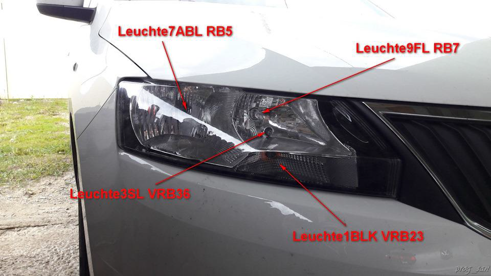
Leuchte9FL RB7 — дальний справа
Leuchte7ABL RB5 — ближний свет справа
Leuchte1BLK VRB23 — правый передний поворотник
Leuchte3SL VRB36 — передний правый габарит

Leuchte8FL LB42 — дальний слева
Leuchte6ABL LB44 — ближний свет слева
Leuchte0 BLK VL B35 — левый передний поворотник
Leuchte2SL VLB22 — передний левый габарит

Leuchte12NL LB40 — левая противотуманная фара
Leuchte4TFL LB43 — левый ДХО

* Leuchte13NL RB3 — правая противотуманная фара
* Leuchte5 TFL RB6 — правый ДХО
Ззадние¶

Leuchte20BR LA70 — левый задний стоп
Leuchte26NSL A65 — ПТФ задняя левая
Leuchte18BLK HLA71 — задний левый поворотник
Leuchte23SL HLC7 — левый задний габарит
Leuchte28RFL C3 — задний ход

Leuchte21BR RC8 — правый задний стоп
Leuchte19BLK HRC10 — задний правый поворотник
Leuchte24SL HRA69 — правый задний габарит
Leuchte28RFL C3 — задний ход
Leuchte22BR MC9 — дополнительный стоп
Leuchte25KZL HA60 — подсветка номера
Боковые¶

Leuchte16BLK SLC11 — левый боковой поворотник

Leuchte17 BLK SR A72 — правый боковой поворотник
Салон¶

Leuchte11WARNBLK TASTERC54 световая сигнализация
Leuchte15 SAFE LED C55 — светодиод охраны на двери

Leuchte27 KL58XS C67 – Terminal 58xs dimmer
Leuchte29 KL30G A69 — Klemme 30G (плафон освещения вещевого ящика)

Leuchte30 INNENLICHT A68 – интерьерная лампа
ЗАМЕНА ЛАМП НА СВЕТОДИОДЫ¶
ЗАДНИЕ ФОНАРИ¶
Светодиодные лампы заднего хода¶
Блок 09 → Адаптация:
Leuchte28RFL C3 – Type_Of_Load_ 28 → LED Blinkleuchten
Leuchte28RFL C3 – Dimming_AB_28 → 100
→ Применить
Светодиодные лампы стоп-сигналов¶
Блок 09 → Адаптация:
Leuchte20BR LA70 – Type_Of_Load_20 → LED Bremsleuchten
Leuchte20BR LA70 – Dimming_AB_20 → 100
Leuchte21BR RC8 – Type_Of_Load_21 → LED Bremsleuchten
Leuchte21BR RC8 – Dimming_AB_21 → 100
→ Применить
Светодиодные лампы в задние габариты¶
Блок 09 → Адаптация:
Leuchte23SL HLC7 – Type_Of_Load_23 → Allgemeine LED mit Open Load Diagnose
Leuchte23SL HLC7 – Dimming_AB_23 → 100
Leuchte24SL HRA69 – Type_Of_Load_24 → Allgemeine LED mit Open Load Diagnose
Leuchte24SL HRA69 – Dimming_AB_24 → 100
→ Применить
Светодиодные лампы в задние ПТФ¶
Блок 09 → Адаптация:
Leuchte26NSL A65 – Type_Of_Load_26 → Allgemeine LED mit Open Load Diagnose
Leuchte26NSL A65 – Dimming_AB_26 → 100
→ Применить
Светодиодные лампы в задние указатели поворота¶
Блок 09 → Адаптация:
Leuchte18BLK HLA71 – Type_Of_Load_18 → LED Blinkleuchten
Leuchte18BLK HLA71 – Dimming_AB_18 → 100
Leuchte19BLK HRC10 – Type_Of_Load_19 → LED Blinkleuchten
Leuchte19BLK HRC10 – Dimming_AB_19 → 100
→ Применить
ПЕРЕДНЯЯ ОПТИКА:¶
Светодиодные лампы в передние указатели поворота¶
Блок 09 → Адаптация:
Leuchte0BLK VL B35 – Type_Of_Load_0 → LED Blinkleuchten
Leuchte0BLK VL B35 – Dimming_AB_0 → 100
Leuchte1BLK VRB23 – Type_Of_Load_1 → LED Blinkleuchten
Leuchte1BLK VRB23 – Dimming_AB_1 → 100
→ Применить
Светодиодные лампы в передние габаритные огни¶
Блок 09 → Адаптация:
Leuchte2SL VLB22 – Type_Of_Load_2 → Allgemeine LED mit Open Load Diagnose
Leuchte2SL VLB22 – Dimming_AB_2 → 100
Leuchte3SL VRB36 – Type_Of_Load_3 → Allgemeine LED mit Open Load Diagnose
Leuchte3SL VRB36 – Dimming_AB_3 → 100
→ Применить
СТЕКЛООЧИСТИТЕЛИ / ДАТЧИК ДОЖДЯ И СВЕТА¶
Сервисное положение стеклоочистителей в меню Swing¶
Блок 09 → Адаптация:
Windshield wiper – Menuesteuerung Frontwischer: Активировать
→ Применить
Парковка дворников при выключенном зажигании¶
Решает проблему с остановкой дворников на пол пути посредине стекла при выключении зажигания.
Блок 09 → Адаптация:
Windshield wiper:
- Wischer stop bei KL15 aus: Деактивировать
→ Применить
Дополнительный взмах передних стеклоочистителей (дотирка капель)¶
Блок 09 → Адаптация:
Rear Window Wiper – Traenenwischen Heck: Активировать
Windshield wiper – Traenenwischen Front Status: Активировать
→ Применить
Изменение чувствительности датчика света¶
Блок 09 → Адаптация:
Assistance light functions-Lichtsensorempfindlichkeit → normal (нормально) изменить на "non sensitive" (не чувствителен)
→ Применить
Отключение омывателя фар¶
Блок 09 → Адаптация:
Windshield wiper-SRA Waschzeit → 2300 ms заменить на 0
→ Применить
Увеличение интервала и времени срабатывания омывателей фар¶
Параметр, отвечающий, на какой раз омывания стекла сработают фароомыватели.
Если сменить стандартные “9” на 1 — то сработают каждый раз.
Блок 09 → Адаптация:
Windshield wiper-Anzahl Betaetigungen Frontwaschanlage pro SRA Aktivierung → вводим «15»
→ Применить
Параметр, отвечающий за время удержания подрулевого рычажка омывания лобового стекла, чтобы сработали омыватели фар
Блок 09 → Адаптация:
Windshield wiper — SRA Verzoegerungszeit → меняем стандартные 0 мс на, к примеру, 1500 мс (1,5 сек)
→ Применить
Сколько секунд будут работать фаро-омыватели
Блок 09 → Адаптация:
Windshield wiper — SRA Waschzeit → стандартное значение 600 мс.
→ Применить
Отключение срабатывания заднего стеклоочистителя при включении заднего хода¶
Блок 09 → Адаптация:
Rear Window Wiper-Komfortwischen Heck → not active
→ Применить
Автоматическое включение заднего дворника¶
Задний дворник начинает срабатывать при продолжительной непрерывной работе передних дворников на 2 скорости.
Блок 09 → Адаптация:
Rear Window Wiper – Automatisches Heckwischen: Активировать
→ Применить
Положение размораживания дворников¶
Блок 09 → Адаптация:
Windshield wiper – Frontwischer Abtauposition → Abtauposition temperaturunabhaengig Referenzwischen
→ Применить
КЛИМАТ / ОБОГРЕВ ЗЕРКАЛ И СТЕКОЛ¶
Увеличение времени обогрева заднего стекла¶
Вводимое значение измеряется в секундах, например: 1200 / 60 = 20 (минут) На автомобилях 2016 мг и старше значение 15 s означает стандартные 10 минут, 30 s означает 20 минут.
Блок 09 → Адаптация:
Window heater – Heckscheibenheizung Zeitwert: 600 s (10 мин) – меняем на 1200 s (20 мин)
→ Применить
Запоминание последнего состояния рециркуляции климат-контроля¶
Блок 08 (5JA 907 044) → Длинное кодирование:
Байт 03 – Бит 1: Активировать
Запоминание последнего состояния рециркуляции печки без климата¶
Блок 08 (5JA 820 045 B) → Длинное кодирование:
Байт 04 – Бит 4: Активировать
Адаптация заслонок климат-контроля¶
Блок 08 → Базовые параметры 04:
Группа 1: прочитать
ПРИ ЭТОМ НИЧЕГО ДЕЛАТЬ С МАШИНОЙ НЕ НУЖНО.
После окончания адаптации высветится сообщение ENDANSCHLAEGE LERNEN.
Процесс адаптации заслонок завершен.
ДВЕРИ, СТЕКЛА, ЦЗ, БРЕЛОК ДУ И ШТАТНАЯ СИГНАЛИЗАЦИЯ¶
Отключение предупреждения о не пристёгнутом ремне безопасности¶
Блок 17 (5JA 920 7XX) → Длинное кодирование:
Байт 00 – Бит 2-4: заменить на значение 00
→ Применить
Выключение (звука/сообщения) о включенном зажигании при открытии двери¶
Блок 17 (5JA 920 7XX) → Адаптация:
Ignition active message – actuator — было “Driver door“, ставим “No display“
→ Применить
Включение (звука/сообщения) о включенном зажигании при открытии любой двери¶
Блок 17 (5JA 920 7XX) → Адаптация:
Ignition active message – actuator — было “Driver door“, ставим “All Doors“
→ Применить
Автоматическая блокировка/разблокировка дверей для комплектаций Entry/Activ без Swing/Bolero:¶
Блок 09 → Адаптация:
Access control – automatisches Verriegeln bei Geschwindigkeit: Активировать
Access control – automatisches Entriegeln: Активировать
Access control – Autolock Autounlock wirkt auf Heck —→ active
→ Применить
Блок 09 → Адаптация:
ZV Autolock – Autolock_Autounlock_wirkt_auf_Heck: акт.
ZV Autolock – automatisches_Entriegeln: акт.
ZV Autolock – Automatisches_Verriegeln_bei_Geschwindigkeit: акт.
→ Применить
Автоматическое закрытие дверей при наборе скорости 15 км/ч и открытие их по извлечению ключа.¶
Возможные варианты
Clobal Entriegelung — все двери разом
Einzeltuerentriegelung – водительская дверь открывается отдельно
Seitenselektive Oeffnung – все двери на одной стороне
Individuell selective Oeffnung Kessy – отдельное открытие при использовании системы безключевого доступа
Блок 09 → Адаптация:
Access control – automatisches Verriegeln bei Geschwindigkeit: Активировать
Access control – automatisches Entriegeln: Активировать
Access control – ZV Türentriegelung → было Clobal Entriegelung
→ Применить
Работа радиоканала брелока при запущенном двигателе¶
Блок 09 → Адаптация:
Access control – Funk bei Klemme 15 ein: Активировать
→ Применить
Блок 09 → Адаптация:
ZV allgemein – Funk bei Klemme 15 ein: Активировать
→ Применить
Работа сигнала при выключенном зажигании¶
Блок 09 → Адаптация:
Auxiliary functions – Signalhorn ohne KL15: Активировать
→ Применить
Активация штатной сигнализации¶
Блок 09 → Длинное кодирование:
Байт 12 – Бит 0: Активировать
→ Применить
Блок 09 → Адаптация:
Access control – Akustischer Alarm Signalhorn: Активировать
→ Применить
Блок 09 → Адаптация:
Access control – DWA Alarmverzoegerung → меняем с "immidiat_driver_door_contact_thatcham" на "delay_driver_door_lock_cylinder_skoda"
→ Применить
Для применения требуется перечитать настройки блока из памяти (поставить/снять машину на штатную охрану на 5–10 сек)
Включение звукового подтверждения открытия и закрытия штатным пультом (без штатной сигнализации)¶
+ пункт управления функцией в меню Swing2
Блок 09 → Длинное кодирование:
Байт 5 – Бит 0: Активировать
Байт 5 – Бит 2: Активировать
Байт 5 – Бит 4: Активировать
→ Применить
Блок 09 → Адаптация:
Acknowledgement signals — Akustische Rueckmeldung entriegeln: "Active" (звук при открытии)
Acknowledgement signals — Akustische Rueckmeldung verriegeln: "Active" (звук при закрытии)
Acknowledgement signals — Dauer der Akustischen Rueckmeldung vom Einfachhorn: kurz (kurz — короткий сигнал (по ощущениям только начинается сигнал и тут же обрывается); normal — нормальный, чуть длиннее чем короткий (звук как при обычном начатии на "бибикалку"))
Acknowledgement signals – Optical feedback during locking → Decelerate
Acknowledgement signals – Optische Rueckmeldung Komfortschliessen: Активировать
Acknowledgement signals – Optische Rueckmeldung 3.Bremsleuchte → not active
Acknowledgement signals — Menuesteuerung akustische Rueckmeldung: "Active" (пункт в Swing'е в разделе "отпирание/запирание…")
Acknowledgement signals – Akustische Rueckmeldung global: Активировать
Acknowledgement signals — Akustische Rueckmeldung Signalhorn: "Active" (звук)
→ Применить
Сигнализация вскрытия авто через штатный звуковой сигнал (19 м.г.)¶
Блок 09 → Адаптация:
Anti-theft device – Akustischer_Alarm_Signalhorn: акт.
Anti-theft device – anti_theft_alarm_system: акт.
Anti-theft device – Alarmsignal: frequency modulated
Anti-theft device – Sirenen_Alarmzahl: 10 Alarme
→ Применить
Работа стеклоподъемников при выключенном зажигании¶
Блок 09 → Адаптация:
Access control 2 – Freigabenachlauf FH bei Kl 15 aus → not active меняем на active
→ Применить
Блок 09 → Адаптация:
ZV Komfort (Fensterheber) - Freigabenachlauf FH bei Kl 15 aus: акт.
→ Применить
Настройка продолжительности работы стеклоподъемника водительской двери после выключения зажигания¶
Блок 09 → Адаптация:
Access control 2-FH SAD Kl15Aus Freigabezeit: 600 s (10 мин после выключения зажигания)
→ Применить
Блок 09 → Адаптация:
ZV Komfort (Fensterheber)-FH SAD Kl15Aus Freigabezeit → 600 s
→ Применить
Работа стеклоподъемников при открытой двери¶
Блок 09 → Адаптация:
Access control 2-Freigabenachlauf FH bei Tueroeffnen → not active, ставим active
→ Применить
Блок 09 → Адаптация:
ZV Komfort (Fensterheber)-Freigabenachlauf FH bei Tueroeffnen: Активировать
→ Применить
Комфортное управление стеклоподъемником двери водителя со штатного брелока¶
Блок 09 → Адаптация:
Access control 2 – Comfort closing: Активировать
Access control 2 – Comfort opening: Активировать
Access control 2 – Fahrertuerbedienung Fensterheber oeffnen: Активировать
Access control 2 – Fahrertuerbedienung Fensterheber schliessen: Активировать
Access control 2 – Funk Komfort oeffnen: Активировать
Access control 2 – Funk Komfort schliessen: Активировать
Access control 2 – Komfortbedienung global: Активировать
Access control 2 – Menuesteuerung Komfortbedienung einstellbar → adjustable
→ Применить
У кого простая магнитола blues достаточно активировать:
Блок 09 → Адаптация:
Access control 2 – Comfort closing: Активировать
Access control 2 – Comfort opening: Активировать
Access control 2 – Funk Komfort oeffnen: Активировать
Access control 2 – Funk Komfort schliessen: Активировать
Access control 2 – Komfortbedienung global: Активировать
→ Применить
Авто закрытие стекла двери водителя при закрывании авто (19 м.г.)¶
Блок 09 → Адаптация:
ZV Komfort (Fensterheber) - комфортное закрывание: акт.
ZV Komfort (Fensterheber) - комфортное открывание: не акт.
ZV Komfort (Fensterheber) - BAP_Komfortschliessen: акт.
ZV Komfort (Fensterheber) - Fahrertuerbedienung Fensterheber oeffnen: акт.
ZV Komfort (Fensterheber) - Fahrertuerbedienung Fensterheber schliessen: акт.
ZV Komfort (Fensterheber) - Funk Komfort oeffnen: акт.
ZV Komfort (Fensterheber) - Funk Komfort schliessen: акт.
ZV Komfort (Fensterheber) - Komfortbedienung global: акт.
ZV Komfort (Fensterheber) - Menuesteuerung Komfortbedienung einstellbar: adjustable
ZV Komfort (Fensterheber) - Schliesszylinder_Komfort_oeffnen: акт.
ZV Komfort (Fensterheber) - Schliesszylinder_Komfort_schliessen: акт.
→ Применить
Панель приборов
ПАНЕЛЬ ПРИБОРОВ¶
Пункт «Место в бак延
Блок 17 (5JA 920 7XX) → Длинное кодирование:
Байт 10 – Бит 4: Активировать
→ Применить
Тест стрелок¶
Блок 17 (5JA 920 7XX) → Длинное кодирование:
Байт 01 – Бит 0: Активировать
→ Применить
Таймер круга¶
Блок 17 (5JA 920 7XX) → Длинное кодирование:
Байт 01 – Бит 3: Активировать
→ Применить
Включение напоминания "Извлеките ключ"¶
Блок 17 (5JA 920 7XX) → Длинное кодирование:
Байт 01 – Бит 4: Активировать
→ Применить
Предупреждение о включенных задних противотуманных фонарях при превышении порога скорости¶
Блок 09 → Адаптация:
Driving light and parking light – Nebelschlusslicht Warngeschwindigkeit:
- 0 — предупреждение отключено.
- 1 … 255 — скоростной лимит срабатывания предупреждения (рекомендуется 60)
→ Применить
Корректировка скорости на спидометре¶
Работает только до 03, но выше пробег начинает ощутимо отклоняться от реального.
При значении 03 пробег увеличивается примерно на 300 метров на 10 км.
При заводской кодировке 00 увеличение составляет 200 метров на 40 км.
Блок 17 (5JA 920 7XX) → Длинное кодирование:
03 байт:
- 00, окружность шин: стандарт
- 01, окружность шин: вариант1
…
- 07, окружность шин: вариант7
→ Применить
Сброс напоминания о прохождении ТО¶
Блок 17 (5JA 920 7XX) → Адаптация:
SIE – time from inspection → вместо пробега в днях задаем значение 0
SIE – distance from inspection → вместо пробега в км задаем значение 0
→ Применить
ESI – Resetting ESI → выбираем Reset
→ Применить
Изменение интервала ТО (по пробегу и по времени)¶
Блок 17 (5JA 920 7XX) → Адаптация:
ESI – maximum value km-driving distance/inspection → 30000 km – меняем на нужное, например 15000
ESI – minimum value km-driving distance/inspection → 15000 km – меняем на нужное, например 7500
ESI – maximum value of time between inspections → 730 d – меняем на нужное
ESI – minimum value of time between inspections → 365 d – меняем на нужное
→ Применить
Часы в режиме 12ч¶
Блок 17 (5JA 920 7XX) → Длинное кодирование:
Байт 06 – Бит 7: Активировать (12ч) / Деактивировать (24ч)
→ Применить
Эко-советы¶
Блок 17 (5JA 920 7XX) → Длинное кодирование:
Байт 01 – Бит 7: Активировать
→ Применить
Блок 19 → Длинное кодирование:
Байт 13 – Бит 0: Активировать
→ Применить
Блок 19 → Адаптация:
Показ программы эффективности – Совет → аэродинамическое сопротивление: закройте стёкла/люк.
Показ программы эффективности – Совет → торм. двиг.: выж. сцепл. только при обор. меньше 1300.
Показ программы эффективности – Совет → при пуске двигателя не нажимайте педаль акселератора.
Показ программы эффективности – Совет → включайте рекомендованные передачи (только МКП).
Показ программы эффективности – Совет → используйте систему Старт-стоп.
Показ программы эффективности – Совет → включите систему Старт-стоп.
Показ программы эффективности – Совет → климатическая установка: закройте стёкла/люк.
Показ программы эффективности – Совет → используйте положение D.
Показ программы эффективности – Совет → не нажимайте педаль акселератора при неподвижном а/м.
Показ программы эффективности – Совет → крыша открыта: выключите клим. установку (клавиша АС)
→ Применить
После кодирования необходимо перейти в меню настроек отображаемой информации панели в магнитоле и включить пункт «Эко-советы».
Корректировка показаний расхода топлива¶
Пример расчета
Берем расход бортового компьютера, отображаемый на панели - 6,3 л на 100км.
Берем реальный расход по наблюдения – например, 6,8 л на 100км.
Далее выполняем расчет пропорций.
Берем показания бортового компьютера за 100%
6,3 – 100%
6,8 – Х
Х = 6,8 * 100 /6,3
Х = 107,9%, после округления 108%
В поле значения адаптации указываем это значение. В среднем, бортовой компьютер занижает показания на 0,4 литра.
По умолчанию – 100%, шаг 1%, минимум — 85%, максимум — 115%
Блок 17 (5JA 920 7XX) → Адаптация:
Display correction of consumptions and operating range: 100%
→ Применить
Указатель уровня топлива – регулировка / калибровка¶
Заводская настройка: -12,8; диапазон значений: от -8,0 до 8,0
Отрицательные значения опускают топливную иглу, положительные значения поднимают ее. Это также влияет на расчет оставшегося объема.
Блок 17 (5JA 920 7XX) → Адаптация:
Offset for tank calibration values:
- Complete tank calibration: -12.8 l поменять на нужное
→ Применить
Настройка источника синхронизации часов¶
- internal clock – внутренние часы
- GPS – получение с блока GPS. Время берется по Гринвичу (GMT+0)
- радиоконтроллер – время с блока 5F
- неактивный – не выполнять синхронизацию
Блок 17 (5JA 920 7XX) → Адаптация:
Source for synchronization of time: internal clock
→ Применить
Изменение температуры предупреждения о скользкой дороге («Снежинка»)¶
Работает по принципу петли гистерезиса: срабатывание – по нижнему уровню, отключение – по-верхнему.
Блок 17 (5JA 920 7XX) → Адаптация:
outside_temperature:
- outside_temperature: 4 # Температура вывода предупреждения
- p_ice_warning_exit_temperature: 6 # Температура отключения вывода предупреждения
- Source for synchronization of time: internal clock
→ Применить
Включение подсветки приборной панели в режиме стояночных огней¶
Блок 17 (5JA 920 7XX) → Адаптация:
Illumination_algorithm:
- Scale_switching_algorithm: lds (было parking_light)
→ Применить
Смена языка панели приборов¶
Блок 17 (5JA 920 7XX) → Адаптация:
Language version: поменять на нужный
→ Применить
Продолжительность отображения напоминания о сервисе¶
Блок 17 (5JA 920 7XX) → Адаптация:
time_parameter_display:
- hmi_t_NextServiceAnz_ms: 5s поменять на нужное значение
→ Применить
Продолжительность отображения предупреждающих сообщений¶
Блок 17 (5JA 920 7XX) → Адаптация:
time_parameter_display:
- hmi_t_NextWarning_ms: 6s поменять на нужное значение
→ Применить
КРИВЫЕ ПОДСВЕТКИ ПАНЕЛИ ПРИБОРОВ¶
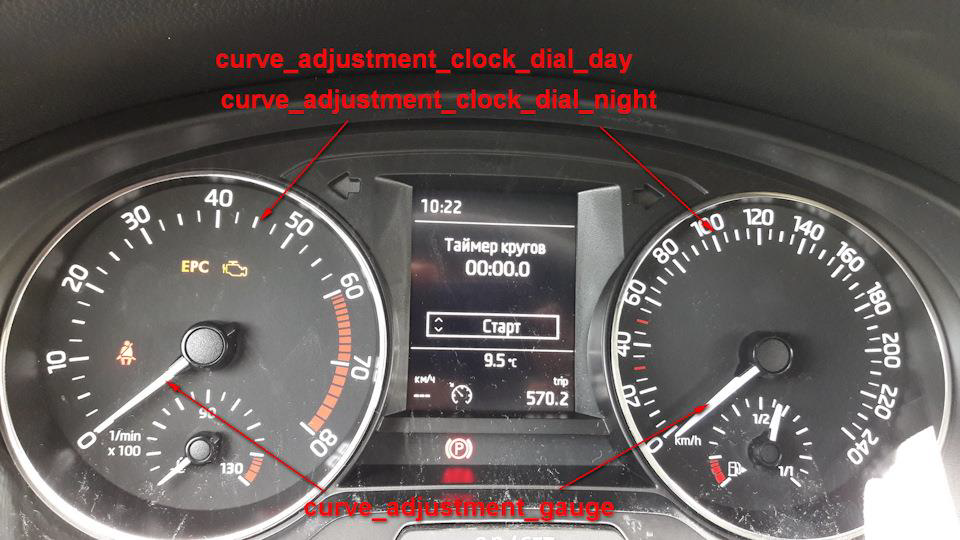
Итак, все мы видели эти каналы в 17 блоке (далее рассказывать буду на примере 5JA-920-740-A, можно распространять на 5JA 920 7XX):
ENG105831-ENG101574-dimming_characteristic_curve_adjustment_clock_dial_day-X1,00 …
ENG105831-ENG99777-dimming_characteristic_curve_adjustment_clock_dial_day-Y1,00 …
ENG105832-ENG101574-dimming_characteristic_curve_adjustment_clock_dial_night-X1,00 …
ENG105832-ENG99777-dimming_characteristic_curve_adjustment_clock_dial_night-Y1,02 …
ENG105834-ENG101574-dimming_characteristic_curve_adjustment_gauge-X1,00 …
ENG105834-ENG99777-dimming_characteristic_curve_adjustment_gauge-Y1,03 …
ENG105835-ENG101574-dimming_characteristic_curve_adjustment_indicator_lights-X1,00 …
ENG105835-ENG99777-dimming_characteristic_curve_adjustment_indicator_lights-Y1,05 …
ENG119878-ENG101574-dimming_characteristic_curve_adjustment_internal_phototransistor-X1,00 00 …
ENG119878-ENG99777-dimming_characteristic_curve_adjustment_internal_phototransistor-Y1,00 00 …
ENG105836-ENG101574-dimming_characteristic_curve_adjustment_middle_display_main_field-X1,00 …
ENG105836-ENG99777-dimming_characteristic_curve_adjustment_middle_display_main_field-Y1,01 …
Их много, по 5–6 значений X и Y по каждой позиции. Пару настроек X и Y назовем кривая.
Получается, имеется 6 кривых:
- dimming_characteristic_curve_adjustment_clock_dial_day — яркость подсветки шкал для дневного режима
- dimming_characteristic_curve_adjustment_clock_dial_night — яркость подсветки шкал для ночного режима
- dimming_characteristic_curve_adjustment_gauge — яркость подсветки стрелок приборов
- dimming_characteristic_curve_adjustment_indicator_lights — яркость дополнительных индикаторов панели приборов
- dimming_characteristic_curve_adjustment_internal_phototransistor — кривая нормировки показаний датчика света панели
- dimming_characteristic_curve_adjustment_middle_display_main_field — яркость дисплея в средней части панели приборов
Дневной режим от ночного отличается включенным ближнем светом. Горит ближний — режим ночной.
Попробуем адаптировать значения кривых яркости подсветки шкал для дневного\ночного режима и кривой нормировки показаний датчика света панели.
Значения каналов задаются в 16-ричной системе. HEX. Отложив значения X и Y на графике, получаем следующие картинки:

Яркость подсветки шкал

Кривая нормировки показаний датчика света панели
Работаем только с шестнадцатеричными числами. Перевод в десятичную систему делал для построения графиков.
Вариант модификации настроек яркости:
- dimming_characteristic_curve_adjustment_clock_dial_day,
- dimming_characteristic_curve_adjustment_clock_dial_night
Кривые задания яркости подсветки шкал для дневного и ночного режима. Работаем только с Y значениями. 0 — подсветка отключена. 253 — максимальная яркость. Для того чтобы не срабатывало отключение подсветки шкал в сумерках, — необходимо избавиться от 0 значений в кривой дневной подсветки (выделены в таблице желтым). Значения в зеленых столбцах могут быть скорректированы по желанию. Для дневного режима убрано полное гашение шкал в сумерках. Для ночного режима предложена кривая с более тусклым свечением при высоких показаниях датчика.
dimming_characteristic_curve_adjustment_internal_phototransistor
Кривая нормируем показания датчика света к интервалу 0.253. 0 — темно, 253 — максимально светло. Можно сделать выход кривой на максимальное значение более резким. Работаем только с координатой X.


Как известно, приборка настроена так, чтобы уведомлять отключением подсветки шкал о забытом включенном ближнем в сумерках.
Многим такой алгоритм работы не по душе — решение:
ENG105831-ENG99777-dimming_characteristic_curve_adjustment_clock_dial_day-Y1,03
ENG105831-ENG100480-dimming_characteristic_curve_adjustment_clock_dial_day-Y2,05
ENG105831-ENG100773-dimming_characteristic_curve_adjustment_clock_dial_day-Y3,08
Изменением значений этих трех каналов — получите не отключаемую подсветку шкал приборов в сумерках. Изначально, эти каналы имеет 0 значения.
Не рекомендую менять направление изменения яркости, либо выкручивать значения на максимальные. Себе отключение подсветки в сумерках не настраивал — все устраивает.
Код доступа надо подбирать. Попробуйте 47115.
ТОРМОЗА И ШИНЫ¶
Настройка ASR при старте (подавление вибраций при старте)¶
Для зимних условий предпочтительное значение Maximum — исключает пробуксовку при старте.
Блок 03 → Адаптация:
Starting vibration reduction → выбираем нужное значение: Strong (сильно), Normal (нормально), Maximum (максимально)
→ Применить
Активация Hill Hold Control (Помощник при старте на подъеме)¶
Блок 03 → Длинное кодирование:
Байт 16 – Бит 0: Активировать
→ Применить
Адаптация (настройка) Hill Hold Control¶
Блок 03 → Адаптация:
Berganfahrassistent → выбираем нужное значение: early (рано), normal (нормально), в конце
→ Применить
Просушка тормозных дисков¶
Есть 3 уровня значения: schwach (1-слабый), stark (3-сильный), mittel (2-средний)
Блок 03 → Адаптация:
Brake disk drying → выбрать Stufe 2 (mittel) (Уровень 2 (средний))
→ Применить
Настройка HBA (тормозной ассистент)¶
Предпочтительно значение – sport
Блок 03 → Адаптация:
Hydraulic brake assistant → выбрать normal (нормально) (или выбрать нужное значение)
→ Применить
Настройка давления в тормозной системе¶
Блок 03 → Адаптация:
Overboost in brake system → стандартно значение 6 — (выбрать нужное значение)
→ Применить
Добавление пунктов меню ESC-sport, ESC-off (для а/м с ESC)¶
Блок 03 → Длинное кодирование:
Для ESC Sport + ASR выкл
Байт 16:
Бит 04: Деактивировать
Биты 03, 06: Активировать
Для ESC On/Off
Байт 16:
Бит 04: Деактивировать
Бит 05 — активировать
Для ESC On/Off + ASR выкл
Байт 16:
Бит 04: Деактивировать
Биты 03, 05: Активировать
Для ESC On/Off + ESC Sport
Байт 16:
Бит 04: Деактивировать
Бит 06: Активировать
→ Применить
Активация XDS¶
Активация НЕВОЗМОЖНА
Блоки ESC/ABS производства фирмы TRW (Electronic Brake Control — EBC 460) не поддерживают этот функционал.
SW: 6R0 614 517 BQ, 6R0 614 517 CA или 6R0 614 517 CG
Порог срабатывания системы EDS¶
Блок 03 → Длинное кодирование:
Байт 17 – Биты 0-3
01 – 1.6MPI/66 kW/90 л.с./155 nm
02 – 1.6MPI/81 kW/110 л.с./155 nm с МКПП
03 – 1.6MPI/81 kW/110 л.с./155 nm с АКПП
04 – 1.0TSI/70 kW/95 л.с./160 nm и 1.2TSI/66 kW/90 л.с./160 nm
05 – 1.2TSI/81 kW/110 л.с./175 nm и 1.0TSI/81 kW/110 л.с./200 nm
06 – 1.4TSI/92 kW/125 л.с./200 nm c DSG
07 – 1.4TDI/66 kW/90 л.с./230 nm с МКПП
08 – 1.4TDI/66 kW/90 л.с./230 nm с DSG
09 – 1.6TDI/85 kW/115 л.с./250 nm
→ Применить
Косвенный контроль давления в шинах TPMS¶
Система первого поколения
Блок 03 → Длинное кодирование:
Байт 16 – Бит 1: Активировать
Байт 16 – Бит 2: Активировать
Байт 19 – Бит 7: Активировать
→ Применить
Блок 5F → Адаптация:
Car_Function_List_BAP_Gen2 – tire_pressure_system_0x07 → изменить с «не активир.» на "«активир.»
Car_Function_List_BAP_Gen2 – tire_pressure_system_0x07_msg_bus → изменить с «Шина данных Привод» на «Шина данных Комфорт»
Car_Function_Adaptations_Gen2 – menu_display_rdk → изменить с «не активир.» на «активир»
→ Применить
Блок 17 (5JA-920-7XX) → Длинное кодирование:
Байт 04 – Бит 0: Активировать
→ Применить
Блок 03 → Адаптация:
индикатор контроля давления в шинах → выбрать «по умолчанию», «чувствителен» или «нечувствителен»
система контроля давления в шинах, выбор шин → выбрать значение «обычные», «неизвестно» или «SST-шины»
→ Применить
Включение отображения конкретного колеса:
Блок 03 → Длинное кодирование:
Байт 15 – Бит 3: Активировать (вместо 61 – 69)
→ Применить
ДИНАМИКА И УПРАВЛЕНИЕ¶
Перенастройка АКПП-6 (Aisin)¶
Блок 02 → Длинное кодирование:
Байт 00 – Биты 00-23 – 000348 (стандарт) или вводим другое значение (000852)
→ Применить
Так же, можно не заходя в длинное кодирование, скопировать в поле "новая кодировка" текущую кодировку и заменить в ней первые 6 знаков "000348" на "000852".
Существуют блоки и с семи значной кодировкой, например: "0101000", соответственно меняем в ней первые 7 знаков с "0101000" на "0000008".
На что можно поменять в данной АКПП:
— 0000328 — заводская кодировка Škoda Rapid и некоторых моделей VW
— 0000072 — заводская кодировка Škoda Octavia A5FL
— 0000008 — кодировка Audi A3, Škoda Octavia A5, VW Touran (до 2005 MY)
— 0008201 — кодировка Audi TT
— 0008264 — кодировка Audi A3, VW Jetta
— 0008520 — кодировка VW Tiguan – альтернативная кодировка
2015-2016 блок 09G 927 749хх (шести значная кодировка):
— 000348 – Стоковая
с 2016 модельного года, блок 09G 927 749xx, и с 2017 встречается 09G 927 158 AL (уже 20-ти байтная кодировка).
Самая распространенная и единственная кодировка моделей Октавия, Рапид и Поло седан: – 010100000C000000000000000000000000000000.
Также возможны и другие варианты кодировки таких БУ:
— 010200000C000000000000000000000000000000 — для дв. 1.4TFSI и 1.8TFSI
— 010500000C000000000000000000000000000000 — для двигателей 1.6 CPDA.
Соответственно при 20-ти байтной кодировке, 010100000C0 … до конца нули, меняем первые 7-мь цифр — например на 00000080C … до конца нули (Audi A3) — сохранить!
Перекодировка педали газа (уменьшение отклика на нажатие)¶
Блок 01 → Длинное кодирование:
Байт 00 – Биты 0-2 – выбираем значение 02 (Производитель: Audi) – выполнить. * для авто с круиз-контролем не рекомендуется — будут глюки круиза
→ Применить
Изменение настройки ЭУР RAPID (настройка профиля вождения)¶
Блок 44 → Длинное кодирование:
Байт 00 – Бит 7: Активировать. Значение меняется с 00 на 80.
→ Применить
Блок 44 → Адаптация
Characteristic curve of steering assistance → выбираем нужное значение (Driving profile selection button, Comfort, Automatic, Dynamic, Default)
→ Применить
* предпочтительно значение – Dynamic
Driving Profile switchover (Переключение профиля вождения) → выбираем нужное значение (Incremental controlled over time (возрастающий с течением времени), direct…(непосредственно…)) → сохранить.
* предпочтительно значение – Direct
→ Применить
Активация функции TSC¶
Компенсация увода в сторону, компенсация разности крутящего момента на ведущих колесах при резком ускорении — только для 1.4TSI
Блок 44 → Длинное кодирование:
Байт 00 – Бит 2-3: Активировать. Значение байта меняется с 00 на 04
→ Применить
Деактивация функции старт-стоп¶
Блок 19 → Адаптация:
EM_start_stop_requirement_ambient_temperature:
- Minimum_temperature → -50.0 °C меняем значение на 50.
Или по напряжению:
- Start Stop voltage limit → 7,6В меняем на 12,1В
→ Применить
МУЛЬТИМЕДИА¶
Изменение звучания Swing/Bolero (Arkamys)¶
Arkamys будет звучать правильно, только если в магнитоле есть соответствующая параметрия. Заливается VCP или ODIS, файл этой параметрии недоступен.
Блок 5F → Длинное кодирование:
Байт 11 – Бит 2 (пункты Škoda Surround и Virtual Subwoofer): Активировать
Байт 08 – Бит 6 (VDA Low Frequency Input): Активировать
→ Применить
Изменение стартовой заставки Swing/Bolero¶
Блок 5F → Длинное кодирование:
Байт 18: меняем значение 00 на предпочтительное
01-vRS
02-SCOUT
03-Laurin & Klement
04-GreenLine
07-MonteCarlo (на свинг 2 и 3)
08-SportLine (только на свинг 3))
→ Применить
При очередном первичном включении магнитолы (после снятия с сигналки) наблюдаем новую заставку.
Деактивация AM диапазона в ГУ Swing/Bolero¶
Блок 5F → Длинное кодирование:
Байт 14 – Бит 1: Активировать
Изменение вида отображения автомобиля в меню «Состояние автомобиля»¶
Блок 5F → Длинное кодирование:
Байт 01 – Биты 0~23:
– 035201, модель: Škoda Rapid
– 035203, модель: Škoda Rapid Spaceback
- 035331, модель: Škoda Rapid FL (NH3)
– 036200, модель: Škoda Fabia
– 036202, модель: Škoda Fabia Combi
– 037301, модель: Škoda Octavia лифтбек
– 038401, модель: Škoda Superb лифтбек
→ Применить
Изменение времени отображения заставки при включении магнитолы¶
Блок 5F → Адаптация:
Time display for start screen → 2.0 s – выставляем нужное
→ Применить
Активация динамиков задних дверей после самостоятельной установки (Swing/Bolero/Amundsen)¶
Блок 5F → Длинное кодирование:
Байт 04 – Биты 0~31 → выбираем
- ВЕ000000 (4 канала / 6 пассивных динамиков)
Если в задние двери установлена 2-х компонентная акустика с твитерами, соответственно выбираем:
— FF000000 (4 канала / 8 пассивных динамиков).
→ Применить
Активация низкочастотного аналогового входа AUX-IN¶
Блок 5F → Длинное кодирование:
Байт 8 – Бит 4: Активировать
→ Применить
Активация USB-входа¶
Блок 5F → Длинное кодирование:
Байт 19 – Биты 6~7 → выбираем значение
- 80 (USB функциональность) или
- С0 (USB и iPhone функциональность)
→ Применить
Изменение чувствительности микрофона¶
Блок 5F → Адаптация:
Microphone sensitivity → 0 dB – выставить необходимое значение.
→ Применить
Показания БК при выключенном зажигании¶
Блок 5F → Адаптация:
Car_Function_Adaptations_Gen2-menu_display_board_computer_clamp_15_off → переключить с not activated, на activated
→ Применить
Режим автошколы на Swing/Bolero¶
Блок 5F → Адаптация:
Car_Function_Adaptations_Gen2-menu_display_driving_school → переключить с not activated на activated
Car_Function_Adaptations_Gen2-menu_display_driving_school_over_threshold_high → переключить с not activated на activated
Car_Function_List_CAN_Gen2-Driving_school → переключить с Not available на available
Car_Function_List_CAN_Gen2-Driving_school_msg_bus → переключить с Not available на Comfort data bus
→ Применить
Активация режима «Бездорожье» Swing 3¶
Блок 5F → Адаптация:
Car_Function_Adaptations_Gen2 – menu_display_compass_clamp_15_off: активир.
Car_Function_Adaptations_Gen2 – menu_display_compass_over_threshold_high: активир.
Car_Function_Adaptations_Gen2 – menu_display_compass: активир.
→ Применить
Активация Инженерного меню (Engineering Testmode) Swing 2¶
Только с использованием VAS5054 и ODIS-E
Запускаем программу ODIS-E
Выбираем проект (SK25X или SK26X) → пуск
Выбираем блок 5F → Diagnostic session (Сессия диагностики)
в открывшемся окошке выбираем:
Development mode (режим разработчика) → Execute (выполнить)
Далее: Adaptation/parameter (Адаптация) →
Developer mode (режим разработчика) → вводим значение Activated
Настройка параметров звука в Инженерном меню¶
Запуск инженерного меню производится продолжительным удержанием кнопки Setup до появления на экране меню: Engineering Testmode.
Выбираем: Software System – Audio Management →
в пункте Loudness ставим галочку
далее выбираем: Input Gain Offset и в пунктах ниже увеличиваем уровень на 13 дБ
* FM source — +12
* Media File Player — +9
* BT audio — +13
Выходим из Инженерного меню и в настройках звука при необходимости подстраиваем баланс и эквалайзер.
После завершения всех звуковых настроек Инженерное меню целесообразно деактивировать. Есть мнение, что в активированном состоянии оно разряжает аккумуляторную батарею.
Включение перехода с зимнего на летнее время¶
Блок 5F → Адаптация:
Summertime: automatic, manual изменить на Europe
→ Применить
Подключение второго телефона. Swing 3¶
Один телефон можно использовать для звонков, другой для прослушивания музыки.
Блок 5F → Адаптация:
Dtmf_without_active_call: Активировать
Support_second_phone: Активировать
Support_for_response_and_hold: Активировать
→ Применить
Блок 17 (5JA 920 7XX) → Длинное кодирование:
Байт 11 – Бит 6: Активировать (telephone2_BAP)
→ Применить
ДООСНАЩЕНИЕ¶
[PR-PWH] Ассистент освещения, Датчик дождя, Coming/Leaving Home¶
Номера датчика
5Q0 955 547A — 2016MY
5Q0 955 547B — 2017MY
Датчики взаимозаменяемые. Т.е. на 2016MY подходит 547A и наоборот.
Блок 09 → Кодирование:
Байт 06 – Биты 0-1 выбрать 02 Датчик света установлен [PR-8K3/8K9+8N6]
Байт 06 – Бит 3: Активировать
Байт 07 – Биты 0-1 выбрать 03 тип функции Coming/Leaving: Seat/Škoda/Volkswagen
Байт 07 – Бит 5: включить
Байт 13 – Бит 5: включить
→ Применить (с перезагрузкой блока)
Блок 09 → Кодирование:
В списке устройств выбираем 5Q0 955 547B датчик света/дождя (RLHS)
Байт 0 – Байты 1-2 – выбираем 185E или 984D (для машин с обогревом лобового стекла)
В итоге кодировка принимает значение — 00 18 5E
Для машин с обогревом лобового стекла — 00 98 4D
→ Применить (с перезагрузкой блока)
Блок 09 → Адаптация:
Assistance light functions-Assistenzfahrlicht bei Regen – active
Assistance light functions-AFL Zeitverzoegerung – 2 000 ms
Assistance light functions-Lichtsensorempfindlichkeit – normal
Assistance light functions-Assistance_lighting_sensitivity_ajustable — present
Comfort illumination-Coming Home Verbaustatus – automatic
Comfort illumination-Menuesteuerung Coming Home Werkseinstellung – active
Comfort illumination-Menueeinstellung Cominghome – 10 s
Comfort illumination-Coming Home Leuchten – Low beam
Comfort illumination-Coming-home Einschaltereignis – Driver door
Comfort illumination-Helligkeitsschwelle Infrarot-Messung – 72.0
Comfort illumination-Leaving-Home Verbausstatus – Enabled
Comfort illumination-lho_aktiviert – active
Comfort illumination-lho_zeit – 10 s
Comfort illumination-Helligkeitsschwelle Forward-Messung – 100
Driving light and parking light-Menueeinstellung CHO LHO – Menuesteuerung Zeit aktivieren
Windshield wiper-Regensensor aktivieren – activated
Rear Window Wiper-Komfortwischen Heck – active
Rear Window Wiper-Menuesteuerung Komfortwischen HW – active
→ Применить
Corner с поддержкой функций Coming Home/Leaving Home через ПТФ
Блок 09 → Адаптация:
Leuchte12NL LB40-Light_Function_B_12 — было Abbiegelicht links, ставим nicht aktive – сохранить
Leuchte13NL RB3-Light_Function_B_13 — было Abbiegelicht rechts, ставим nicht aktive – сохранить
Leuchte12NL LB40-Light_Function_C_12 – Abbiegelicht links
Leuchte12NL LB40-Dimming_CD_12 – 100
Leuchte13NL RB3-Light_Function_C_13 – Abbiegelicht rechts
Leuchte13NL RB3-Dimming_CD_13 – 100
→ Применить
Для 19 м.г.:
Блок 09 → Кодирование:
Байт 0 – Байты 1-2 – выбираем 185E (984D)
или прописываем готовую кодировку: 00185Е (00984D)
→ Применить (с перезагрузкой блока)
Блок 09 → Адаптация:
Функции вспомогательного освещения-Rain/light sensor → Rain/light sensor
Функции вспомогательного освещения-Humidity sensor → установл.
Функции вспомогательного освещения-Will Beam assistant: responsivity adjustable via BAP → имеется
Aussenlicht_uebergreifend-Light rotary sw. with AFL → Да
Windshield wiper-rain_sensor_function → установл.
Функции вспомогательного освещения-Assistenzfahrlicht bei Regen – акт.
Функции вспомогательного освещения-AFL Zeitverzoegerung – 0 ms
Функции вспомогательного освещения-Lichtsensorempfindlichkeit – нормально
Aussenlicht_uebergreifend-Coming Home Verbaustatus – автоматически
Aussenlicht_uebergreifend-Menuesteuerung Coming Home Werkseinstellung – акт.
Aussenlicht_uebergreifend-Menueeinstellung Cominghome – 10 s
Aussenlicht_uebergreifend-Coming Home Leuchten – Ближний свет
Aussenlicht_uebergreifend-Coming-home Einschaltereignis – Driver door
Aussenlicht_uebergreifend-Helligkeitsschwelle Infrarot-Messung – 72.0
Aussenlicht_uebergreifend-Leaving-Home Verbausstatus – разрешено
Aussenlicht_uebergreifend-lho_aktiviert – акт.
Aussenlicht_uebergreifend-lho_zeit – 10 s
Aussenlicht_uebergreifend-Helligkeitsschwelle Forward-Messung – 100
Aussenlicht_uebergreifend-Menueeinstellung CHO LHO – Menuesteuerung Zeit aktivieren
Aussenlicht_uebergreifend-Lichtdrehschalter_mit_Nebellicht_bei_Assistenzfahrlicht – Да
Windshield wiper — Regensensor aktivieren – акт.
→ Применить
[PR-8X0] Замена штатных галогенных фар на штатные ксеноновые¶
Блок 09 → Кодирование:
Байт 06 – Биты 5-6 – меняем 00 на 20
→ Применить (с перезагрузкой блока)
Блок 09 → Адаптация:
Leuchte6ABL LB44 – Type_Of_Load_6 – выбираем Xenon Abblendlicht
Leuchte7ABL RB5 – Type_Of_Load_7 – выбираем Xenon Abblendlicht
→ Применить
[PR-PXE] Установка би-ксенона¶
Блок 09 → Кодирование:
Lower_beam_lamp_typ – GDL
→ Применить (с перезагрузкой блока)
Блок 09 → Адаптация:
Leuchte 0 BLK VL B35 — оно же левый передний поворотник:
- Dimming_AB_0 — 128
- Light_Function_A_0 — Blinken links Hellphase
- Type_Of_Load_0 — LED Blinkleuchten
Leuchte 1 BLK VR B23 — оно же правый передний поворотник:
- Dimming_AB_1 — 128
- Light_Function_A_1 — Blinken rechts Hellphase
- Type_Of_Load_1 — LED Blinkleuchten
Leuchte2SL VL B22 — оно же передний левый габарит:
- Dimming_AB_2 — 100
- Dimming_CD_2 — 30
- Dimming_Direction_CD_2 — maximize
- Dimming_Direction_EF_2 — minimize
- Dimming_EF_2 — 28
- Light_Function_A_2 — Daytime running lights
- Light_Function_C_2 — Parking light
- Light_Function_D_2 — Parking light left
- Light_Function_E_2 — Blinken links Hellphase
- Type_Of_Load_2 — LED Tagfahrlichtmodul Signal
Leuchte3SL VR B36 — оно же передний правый габарит:
- Dimming_AB_3 — 100
- Dimming_CD_3 — 30
- Dimming_Direction_CD_3 — maximize
- Dimming_Direction_EF_3 — minimize
- Dimming_EF_3 — 28
- Light_Function_A_3 — Daytime running lights
- Light_Function_C_3 — Parking light
- Light_Function_D_3 — Parking light right
- Light_Function_E_3 — Blinken rechts Hellphase
- Type_Of_Load_3 — LED Tagfahrlichtmodul Signal
Leuchte4TFL LB43 — оно же левый ДХО:
- Dimming_AB_4 — 127
- Dimming_CD_4 — 127
- Dimming_Direction_CD_4 — maximize
- Dimming_Direction_EF_4 — minimize
- Dimming_EF_4 — 0
- Light_Function_A_4 — Daytime running lights
- Light_Function_C_4 — Parking light
- Light_Function_D_4 — Parking light left
- Light_Function_E_4 — Blinken links aktiv
- Type_Of_Load_4 — LED Tagfahrlichtmodul Versorgung
Leuchte5 TFL RB6— оно же правый ДХО:
- Dimming_AB_5 — 127
- Dimming_CD_5 — 127
- Dimming_Direction_CD_5 — maximize
- Dimming_Direction_EF_5 — minimize
- Dimming_EF_5 — 0
- Light_Function_A_5 — Daytime running lights
- Light_Function_C_5 — Parking light
- Light_Function_D_5 — Parking light right
- Light_Function_E_5 — Blinken rechts aktiv
- Type_Of_Load_5 — LED Tagfahrlichtmodul Versorgung
Leuchte6ABL LB44 — оно же ближний левый:
- Dimming_AB_6 — 100
- Dimming_CD_6 — 100
- Dimming_Direction_CD_6 — maximize
- Light_Function_A_6 — Abblendlicht links
- Light_Function_B_6 — ComingHome LeavingHome
- Light_Function_C_6 — Left high beam
- Light_Function_D_6 — Headlamp flasher
- Type_Of_Load_6 — Xenon Abblendlicht
Leuchte7ABL RB5 — оно же правый ближний:
- Dimming_AB_7 — 100
- Dimming_CD_7 — 100
- Dimming_Direction_CD_7 — maximize
- Light_Function_A_7 — Abblendlicht rechts
- Light_Function_B_7 — ComingHome LeavingHome
- Light_Function_C_7 — Right high beam
- Light_Function_D_7 — Headlamp flasher
- Type_Of_Load_7 — Xenon Abblendlicht
Leuchte8FL LB42 — оно же дальний левый:
- Dimming_AB_8 — 100
- Light_Function_A_8 — Left high beam
- Light_Function_B_8 — Headlamp flasher
- Type_Of_Load_8 — Shutter
Leuchte9FL RB7 — оно же дальний правый:
- Dimming_AB_9 — 100
- Light_Function_A_9 — Right high beam
- Light_Function_B_9 — Headlamp flasher
- Type_Of_Load_9 — Shutter
→ Применить
Для 19 м.г.:
Блок 09 → Адаптация:
Aussenlicht_Front-Low beam: bulb type → HID
Leuchte 0 BLK VL B35-Dimming_AB_0 → 127
Leuchte 0 BLK VL B35-Light_Function_A_0 → Blinken links Hellphase
Leuchte 0 BLK VL B35-Type_Of_Load_0 → LED Blinkleuchten
Leuchte1BLK VRB23-Dimming_AB_1 → 127
Leuchte1BLK VRB23-Light_Function_A_1 → Blinken rechts Hellphase
Leuchte1BLK VRB23-Type_Of_Load_1 → LED Blinkleuchten
Leuchte2SL VLB22-Dimming_AB_2 → 100
Leuchte2SL VLB22-Dimming_CD_2 → 30
Leuchte2SL VLB22-Dimming_Direction_CD_2 → maximize
Leuchte2SL VLB22-Dimming_Direction_EF_2 → minimize
Leuchte2SL VLB22-Dimming_EF_2 → 0
Leuchte2SL VLB22-Light_Function_A_2 → Daytime running lights
Leuchte2SL VLB22-Light_Function_B_2 → not active
Leuchte2SL VLB22-Light_Function_C_2 → Parking light
Leuchte2SL VLB22-Light_Function_D_2 → Parking light left
Leuchte2SL VLB22-Light_Function_E_2 → Blinken links aktiv
Leuchte2SL VLB22-Light_Function_F_2 → not active
Leuchte2SL VLB22-Light_Function_G_2 → not active
Leuchte2SL VLB22-Light_Function_H_2 → not active
Leuchte2SL VLB22-Type_Of_Load_2 → LED Tagfahrlichtmodul Signal
Leuchte3SL VRB36-Dimming_AB_3, 100
Leuchte3SL VRB36-Dimming_CD_3, 30
Leuchte3SL VRB36-Dimming_Direction_CD_3 → maximize
Leuchte3SL VRB36-Dimming_Direction_EF_3 → minimize
Leuchte3SL VRB36-Dimming_EF_3 → 0
Leuchte3SL VRB36-Light_Function_A_3 → Daytime running lights
Leuchte3SL VRB36-Light_Function_B_3 → not active
Leuchte3SL VRB36-Light_Function_C_3 → Parking light
Leuchte3SL VRB36-Light_Function_D_3 → Parking light right
Leuchte3SL VRB36-Light_Function_E_3 → Blinken rechts aktiv
Leuchte3SL VRB36-Light_Function_F_3 → not active
Leuchte3SL VRB36-Light_Function_G_3 → not active
Leuchte3SL VRB36-Light_Function_H_3 → not active
Leuchte3SL VRB36-Type_Of_Load_3 → LED Tagfahrlichtmodul Signal
Leuchte4TFL LB43-Dimming_AB_4 → 127
Leuchte4TFL LB43-Dimming_CD_4 → 127
Leuchte4TFL LB43-Dimming_Direction_CD_4 → maximize
Leuchte4TFL LB43-Dimming_Direction_EF_4 → minimize
Leuchte4TFL LB43-Dimming_EF_4 → 0
Leuchte4TFL LB43-Light_Function_A_4 → Daytime running lights
Leuchte4TFL LB43-Light_Function_C_4 → Parking light
Leuchte4TFL LB43-Light_Function_D_4 → Parking light left
Leuchte4TFL LB43-Light_Function_E_4 → Blinken links aktiv
Leuchte4TFL LB43-Type_Of_Load_4 → LED Tagfahrlichtmodul Versorgung
Leuchte5 TFL RB6-Dimming_AB_5 → 127
Leuchte5 TFL RB6-Dimming_CD_5 → 127
Leuchte5 TFL RB6-Dimming_Direction_CD_5 → maximize
Leuchte5 TFL RB6-Dimming_Direction_EF_5 → minimize
Leuchte5 TFL RB6-Dimming_EF_5 → 0
Leuchte5 TFL RB6-Light_Function_A_5 → Daytime running lights
Leuchte5 TFL RB6-Light_Function_C_5 → Parking light
Leuchte5 TFL RB6-Light_Function_D_5 → Parking light right
Leuchte5 TFL RB6-Light_Function_E_5 → Blinken rechts aktiv
Leuchte5 TFL RB6-Type_Of_Load_5 → LED Tagfahrlichtmodul Versorgung
Leuchte6ABL LB44-Dimming_AB_6 → 100
Leuchte6ABL LB44-Dimming_CD_6 → 100
Leuchte6ABL LB44-Dimming_Direction_CD_6 → maximize
Leuchte6ABL LB44-Light_Function_A_6 → Abblendlicht links
Leuchte6ABL LB44-Light_Function_B_6 → ComingHome LeavingHome
Leuchte6ABL LB44-Light_Function_C_6 → Left high beam
Leuchte6ABL LB44-Light_Function_D_6 → Headlamp flasher
Leuchte6ABL LB44-Type_Of_Load_6 → Xenon Abblendlicht
Leuchte7ABL RB5-Dimming_AB_7 → 100
Leuchte7ABL RB5-Dimming_CD_7 → 100
Leuchte7ABL RB5-Dimming_Direction_CD_7 → maximize
Leuchte7ABL RB5-Light_Function_A_7 → Abblendlicht rechts
Leuchte7ABL RB5-Light_Function_B_7 → ComingHome LeavingHome
Leuchte7ABL RB5-Light_Function_C_7 → Right high beam
Leuchte7ABL RB5-Light_Function_D_7 → Headlamp flasher
Leuchte7ABL RB5-Type_Of_Load_7 → Xenon Abblendlicht
Leuchte8FL LB42-Dimming_AB_8 → 127
Leuchte8FL LB42-Light_Function_A_8 → Left high beam
Leuchte8FL LB42-Light_Function_B_8 → Headlamp flasher
Leuchte8FL LB42-Type_Of_Load_8 → Shutter (Camera lock)
Leuchte9FL RB7-Dimming_AB_9 → 127
Leuchte9FL RB7-Light_Function_A_9 → Right high beam
Leuchte9FL RB7-Light_Function_B_9 → Headlamp flasher
Leuchte9FL RB7-Type_Of_Load_9 → Shutter (Camera lock)
→ Применить
Замена задних фонарей на LED¶
Блок 09 → Адаптация:
Leuchte23SL HLC7 – Type_Of_Load_23 → Allgemeine LED mit Open Load Diagnose
Leuchte23SL HLC7 – Dimming_AB_23 → 100
Leuchte24SL HRA69 – Type_Of_Load_24 → Allgemeine LED mit Open Load Diagnose
Leuchte24SL HRA69 – Dimming_AB_24 → 100
Замена аккумуляторной батареи¶
Варианты аккумулятора
61Ah 300A(DIN) или 540(EN)
70Ah 340А(DIN) или 570(EN)
80Ah 380А(DIN) или 640(EN)
92Ah 520А(DIN) или 870(EN)
95Ah 450А(DIN) или 750(EN)
110Ah 520А(DIN) или 870(EN)
Блок 19 → Адаптация:
Battery Adaption – Battery capacity – вписываем нужное значение
Battery Adaption – Battery serial number – значение увеличением на 1.
→ Применить (с перезагрузкой блока)
[PR-QQ8] Фоновая светодиодная подсветка салона¶
Реализация по одной свободной цепи, через подключение к выходу T46b/45.
Номер пина — А 018 545 8626
Плафон подсветки отсека в центральной консоли - 7P6 919 390 A KT1
Корпус разъема - 8K0 973 754
Пины для разъема – N907 647 01
Плафон подсветки ног - 8J0947409А
Разъем на плафон подсветки ног - 4B0 971 832
Блок 09 → Кодирование:
Байт 17 – Бит 0: Активировать
Байт 17 – Бит 4: Активировать
→ Применить (с перезагрузкой блока)
Блок 09 → Адаптация:
Leuchte10SHUTTER LRB45 – Dimming_AB_10 – 100
Leuchte10SHUTTER LRB45 – Fehlerort_mittleres_Byte_DTC-DFCC_10 – 03
Leuchte10SHUTTER LRB45 – Light_Function_A_10 – Ambientelicht 1
Leuchte10SHUTTER LRB45 – Type_Of_Load_10 – LED Kleinleistung ohne Open Load Diagnose.
→ Применить
Блок 09 → Адаптация:
Ambient lighting – Defaultwert Ambienteprofil Vorn – 80%
→ Применить
[PR-8T6] Ограничитель скорости¶
Реализация доступна при активном круиз-контроле [PR-8T2].
Артикул необходимого подрулевого переключателя для 2016 м.г. - 6C0953513FIGI
для 2017 м.г. - 6C6953513DIGI
Артикул педали с поддержкой функции [PR-8T6] — 6C1723503B.
Блок 01 → Кодирование:
Байт 6 – Бит 2: Активировать
→ Применить
Блок 09 → Кодирование:
Байт 18 – Бит 7: Активировать
→ Применить
[PR-KA1] Подключение камеры заднего вида¶
Камера заднего вида 5JA827566. Установка доступна на Swing (5JA035871D), Bolero (5Q0035840B).
Подключение камеры согласно следующей схеме:
T4/1pin — +12V;
T4/2pin — масса;
T4/3pin — не задействован;
T4/4pin — к сигналу включения задней скорости (сине-черный провод).
Видеокабель подключается к магнитоле к разъемам CVBS+ и CVBS-.
Блок 5F → Кодирование:
Байт 19 – Бит 4: включить
→ Применить
Блок 10 → Кодирование:
Байт 02 – Бит 0: включить
Байт 02 – Бит 4: включить
→ Применить
[PR-XXX +4LB, 4LC] Многофункциональное рулевое колесо¶
4LB Элемент управления для магнитолы
4LC Элемент управления для магнитолы и телефона
Варианты рулей (для информации):
565064241B CXA. Многофункц. рул. колесо (кожа) черный/черный.
Блок 19 → Кодирование:
Байт 1 – Бит 0: Активировать
→ Применить (с перезагрузкой блока)
Блок 09 → Кодирование:
Байт 20 – Бит 1: Активировать
→ Применить
Блок 5F → Адаптация:
Car_Function_List_CAN_Gen2 – MFL — available
Car_Function_List_BAP_Gen2 – MFA_0x0F — activated
→ Применить
[PR-6E7] Установка USB розеток в центральный подлокотник¶
- USB розетки. Номер: 5Q0 035 726L
- Панель для розеток: 5JA 863 618 9B9
- Левый кожух подлокотника: 5JA 864 279 B 9B9
- Правый кожух подлокотника: 5JA 864 280 B 9B9
- Разъем: 8K0 973 754B
- Пины для разъема: N 907 647 01 – 2 шт.
- Провода около 3 м.
Подключение в районе блока предохранителей.
Минус – к болту. Плюс – к свободному предохранителю (можно к постоянно подключенному, можно к работающему при включенном зажигании).
Активация эстетической подсветки салона после самостоятельной доустановки (19 м.г.)¶
Блок 09 → Адаптация:
Эстетическая подсветка-Ambience_borders_front → установл.
Leuchte32AMBL 2C64-Dimming_AB_32 → 100
Leuchte32AMBL 2C64-Fehlerort_mittleres_Byte_DTC-DFCC_32 → 03
Leuchte32AMBL 2C64-Light_Control_HD_AB_32 → Always
Leuchte32AMBL 2C64-Light_Function_A_32 → Ambientelicht 1
Leuchte32AMBL 2C64-Type_Of_Load_32 → LED Kleinleistung ohne Open Load Diagnose
→ Применить
[PR-8G1] Ассистент дальнего света FLA¶
До 2017 м.г. (Необходимо проверить!)
Блок 19 → Список оборудования:
0 (Ассистент управления дальним светом): Активировать
→ Применить (с перезагрузкой блока)
Блок 09 → Кодирование:
Байт 02 – Биты 0~2 – 01, освещение: галогеновые фары с ассистентом дальнего света [PR-8ID+8G1]
→ Применить
Блок 20 (8X0-857-511.lbl) → Кодирование:
Байт 00 – Биты 0-4 – 01 тип фар: галогеновые 02 тип фар: би-ксеноновые
Байт 01 – Биты 0-1 – 01 управление: левостороннее управление
Байт 02 – Биты 0-7 – 8f вертикальное смещение Škoda Octavia (5E)
Байт 03 – Биты 0-7 – 6b коррекция (красный) би-ксенон Škoda Octavia (5E)
Байт 04 – Биты 0-7 – 76 коррекция (красный) галоген Škoda Octavia (5E)
Байт 05 – Биты 0-7 – 76 коррекция (красный) задние фонари Škoda Octavia (5E)
Байт 06 – Биты 0-7 – 5D коррекция (голубой) би-ксенон Škoda Octavia (5E)
Байт 07 – Биты 0-7 – 52 коррекция (голубой) галоген Škoda Octavia (5E)
Байт 08 – Биты 0-7 – 52 коррекция (красный) задние фонари Škoda Octavia (5E)
Байт 09 – Биты 0-7 – 20 коррекция (UCR) би-ксенон Škoda Octavia (5E)
Байт 10 – Биты 0-7 – 34 коррекция (UCR) галоген Škoda Octavia (5E)
Байт 11 – Биты 0-7 – 3E коррекция (UCR) задние фонари Škoda Octavia (5E)
Байт 12 – Биты 0-7 – 00 Function Switch Memory Off
→ Применить
Блок 09 → Адаптация:
Assistance light functions – Menuesteuerung Fernlichtassistent, adjustable
Assistance light functions – Menuesteuerung Fernlichtassistent Werkseinstellung, adjustable
→ Применить
Для 19 м.г.:
Блок 19 → Список оборудования:
0 (Ассистент управления дальним светом): Активировать
→ Применить (с перезагрузкой блока)
Блок 20 → Кодирование:
Байт 0 – значение 01 или 02 (галоген/ксенон)
Байт 1 – значение 01 или 02 (галоген/ксенон)
Байт 3 – значение 0F
→ Применить
Блок 09 → Адаптация:
Fernlicht_assistent-Expanded high beam control, Halogen изменить на Halogen, FLA
Fernlicht_assistent-Fernlichtassistent_Reset: акт.
Fernlicht_assistent-Menuesteuerung_Fernlichtassistent: установлено
Fernlicht_assistent-Menuesteuerung_Fernlichtassistent_Werkseinstellung: установлено
СЛОВАРЬ НЕМЕЦКИХ ТЕРМИНОВ¶
- abschalten — выключить
- Anzahl — число, количество
- Ausschaltgrenze — предел выключения
- Bedienfolge — последовательность операций
- Begrenzungslicht — габаритный фонарь
- beidseitiges — односторонний
- Betaetigungen – запуск, включение, приведение в действие
- Bremslicht — стоп-сигнал
- dauer — продолжительность
- Dauerfahrlicht — ДХО
- Defaultwert – значение по умолчанию
- Einschaltgrenze — предел включения
- Einschaltereignis — событие срабатывания
- Fahrt — поездка, езда
- Fahrertuerbedienung — контроллер водительской двери
- Fensterheber — стеклоподъемник
- Freigabenachlauf — разблокировка
- Freigabezeit — период разблокировки
- Fernlichtassistent — помощник управления дальним светом
- Freischaltung — активация
- Frontwischer – передний стеклоочиститель
- Funk — радио
- Fussraum – для ног
- grenze — предел
- Handbremse — ручник
- Heck — задняя часть кузова
- Heckwischer – стеклоочиститель заднего стекла
- Helligkeitsschwelle — порог яркости
- Hinweis — индикатор
- Innenbeleuchtung – внутреннее освещение
- Innenlichtinszenierung – атмосферная подсветка интерьера
- kontrollleuchte — индикатор
- Komfortbedienung — функции комфорта
- Lichthupe — вспышка
- Lichtwarnungsverhalten — поведение предупреждения о забытом включенном свете
- Menuesteuerung — управление с помощью меню
- Nachwischen – протирать
- Nebelschlusslicht — задние противотуманные фонари
- Notlaufprogramm – аварийная программа
- Regenschliessen — закрытие при дожде
- Richtung — направление
- Rueckmeldung — обратная связь
- Schalterstellung — позиционный переключатель
- Scheinwerfer — фары
- Scheinwerferreinigungsanlage (SRA)- система очистки фар
- Schlusslicht — задний фонарь
- Spiegelanklappen — складывание зеркал
- Spiegelabsenkung — опускание зеркала
- Standlicht — (габариты) бортовые огни
- Tag — день
- Tagfahrlicht — ДХО
- Tagfahrlichtkontrollleuchte — индикатор работы ДХО
- Traenenwischen – дотирка капель
- Vorn — впереди
- Warngeschwindigkeit — скорость предупреждения
- Warnung — предупреждение
- Werkseinstellung — заводская настройка
- Распространяется на правах «как есть». Вы принимаете на себя весь риск, связанный с использованием
- данного файла.
- PQ26 Rapid NH 16+. Версия v 1.01 19-10-2019 63
- Zeitverzoegerungs — задержка времени
- Zuendung — зажигание
- zusaetzlich — дополнительно
PQ35
Кодирование платформы PQ35¶
Важная информация
- Кодировки проверялись на Škoda OCTAVIA A5FL
- Кодировки для Tiguan 1st generation имеют ряд отличий и вынесены отдельный раздел
Оффлайн версия с диагностической информацией
Оффлайн версия содержит в себе раздел, просвещенный диагностике неисправностей
Данный файл был создан пользователем RiHard для сообщества «КОДИРОВКИ VAG» на DRIVE2.RU
Скачать PDF
Оффлайн версия для Tiguan 1st generation
Данный файл был создан пользователем savafso для сообщества «КОДИРОВКИ VAG» на DRIVE2.RU
Скачать PDF
Инструкция¶
В: Что нужно для применения данных кодировок?
О: Автомобиль, шнур VAG-COM, программа VCDS (она же Вася Диагност), работающие мозги и прямые руки (либо друг со всем этим).
В: Как работать со шнуром / программой и прочие азы
О: Про основы работы с VAG-COM и в VCDS, о включении скрытых битов и где хранятся логи производимых изменений, можно почитать в сообществе на Drive2 (ссылка в самом конце).
В: Описанные здесь кодировки подойдут для других автомобилей VAG?
О: Возможно. Блоки на автомобилях VAG-семейства используются зачастую одинаковые, однако физически установленное оборудование может отличаться.
Пробовать можно на свой страх и риск. Наиболее близкие автомобили на платформах PQ35 и PQ46.
В: Почему здесь указаны не все кодировки для Octavia A5FL?
О: Есть ровно два варианта:
1 – какая-то кодировка на момент создания файла была неизвестна (сообщите, пожалуйста, о ней);
2 – здесь указаны только кодировки, не требующие установки дополнительного оборудования. Как правило, в инструкции по установке дополнительного оборудования содержится кодировка для его подключения и настройки.
В: В интернете эти кодировки имеют другое название, почему?
О: Потому что названия в первоисточниках зачастую давались впопыхах на радостях от открытия. Здесь же я постарался назвать вещи (кодировки, системы, функции) своими, правильными, именами. Если что не так, все мы люди – поправьте.
В: У меня англоязычная версия программы и не понятно, в какой блок заходить, какой пункт выбирать.
О: Переводчик Вам в помощь. А вообще у каждого блока и пункта указаны номера, которые в различных версиях программы остаются одинаковыми.
В: Могу ли я использовать данный файл в коммерческих целях?
О: У всех своя карма, каждый решает сам. Вся информация, указанная в этом файле, была получена бесплатно и также бесплатно этот файл распространяется. Однако продавать данный файл категорически запрещено!
Ответственность¶
Все что Вы делаете, Вы делаете на свой страх и риск! При обнаружении вмешательства в электронику, ОД имеют право отказать в гарантийном ремонте электрооборудования автомобиля.
Вся косвенная диагностика является именно косвенной, дающей примерные ориентиры на поиск неисправностей и не дает 100% гарантии или результата.
Будьте предельно осторожны!
ДИНАМИКА¶
Перенастройка педали акселератора¶
Немного устраняет задержку педали акселератора, делает ее более внятной. Данная кодировка является своеобразной lite-версией кодирования педали акселератора.
Особенности
Доступно только для 1.8 TSI и 2.0 TSI двигателей. Делается на заглушенном двигателе. Сразу после кодирования необходимо выполнить адаптацию дроссельной заслонки.
Блок 1 → Кодирование → Длинное кодирование:
Байт 0 – Бит 0-2 → меняем с 02 (Škoda) на 01 (Audi)
Примечание
Вместе с этой настройкой лучше сразу перенастроить XDS, BAS и TSC на максимум.
Некоторые ставят настройки от Volkswagen – говорят, становится не такая дерганная по сравнению с Audi.
Адаптация дроссельной заслонки¶
Со временем из-за грязи диапазон положения «открыто – закрыто» немного меняется, для его восстановления и проводится адаптация, так сказать блок заново обучается, где есть реально закрытое положение заслонки, а где открытое.
Особенности
Настройка выполняется на заглушенном двигателе при включенном зажигании.
Для машин с электронной дроссельной заслонкой (подавляющее большинство новых машин) нужно выбирать группу «060», для тех, у кого механическая дроссельная заслонка – группа «098».
Блок 1 → Базовые параметры:
вводим в окно «Группа» нужное значение
нажимаем вверху справа переключатель «Вкл./Выкл.» → ждем статуса «Адаптация в норме»
Примечание
Если ни одна из групп не отзывается, значит, Ваш двигатель не поддерживает данную адаптацию.
Перенастройка АКПП¶
Классическую 6-ступенчатую АКПП (Aisin 09G) можно перенастроить на свой вкус и цвет. Соотношение динамика/расход при этом прямо пропорциональны.
Особенности
Базовые настройки:
«0000008» - A3 (<2005), Octavia (<2005), Beetle (1C/1Y/9C), Touran (<2005);
«0000072» - Octavia (2006>), Golf (1K), Golf Plus (5M), Passat (35/3C), Polo (9N), Touran (2006>);
«0008201» - TT (8N);
«0000328» - Golf (5K), Golf Plus (52), Tiguan (5N) Rest of World (RoW);
«0000840» - Tiguan (5N) North American Region (NAR);
«0008520» - Tiguan (2013>)
Экспериментальные настройки:
«0000020» - No Assistance Edition;
«0008524» - Full Assistance Edition.
Также можно на свой страх и риск поэкспериментировать с включением/выключением отдельных ассистентов (1 – вкл., 0 – выкл.).
Приведенные ниже данные не являются официальными.
Подбор кодировки производится таким образом: составляется нужное значение из 16 битов в двоичной системе и переводится в шестнадцатеричную (инженерный калькулятор в помощь).
| 15 | 14 | 13 | 12 | 11 | 10 | 9 | 8 | 7 | 6 | 5 | 4 | 3 | 2 | 1 | 0 |
|---|---|---|---|---|---|---|---|---|---|---|---|---|---|---|---|
| 0 | 0 | A | 0 | 0 | 0 | B | C | 0 | D | 0 | E | F | G | 0 | H |
13 бит (A) - поддержка подрулевых лепестков;
9 бит (B) - отключение отображения номера передачи на приборной панели;
8 бит (C) - торможение двигателем при спуске;
6 бит (D) - плавная блокировка муфты гидротрнсформатора;
4 бит (E) - отключение удержания автомобиля на подъеме (HHC);
3 бит (F) - адаптация под стиль вождения (DSP);
2 бит (G) - отключение торможения двигателем на скорости ниже 65 км/ч;
0 бит (H) - работа подрулевых лепестков только в ручном режиме (в D и S не активны)
Блок 2 → Кодирование:
1 поле → выставляем нужное значение → выполнить
Примечание
Так как АКПП конструктивно очень сложный механизм, то неправильная настройка может привести к самым разнообразным отклонениям в работе, в том числе к поломке.
Будьте предельно осторожны!
Перед перенастройкой запишите свою заводскую настройку, а после перенастройки рекомендуется выполнить сброс адаптаций АКПП.
Перенастройка ГТЦ¶
Эффективность торможения увеличивается за счет применения настроек давления в главном тормозном цилиндре (ГТЦ) от Audi S3, Škoda Octavia RS, VW Golf GTI, Seat Leon Cupra.
Особенности
Данная методика подходит только для автомобилей с ESP (блок MK60).
Блок 3 → Кодирование → Длинное кодирование:
Байт 0 – Бит 0: Деактивировать
Байт 0 – Бит 2: Активировать
Байт 8 – Бит 7: Деактивировать
Байт 8 – Бит 5: Активировать
Примечание
Желательно не только перенастроить давление в ГТЦ, но и все же поменять сами тормозные диски и суппорта. При этом стоит также произвести перенастройку.
Перенастройка при смене тормозных дисков¶
При установке тормозных дисков, отличающихся по размерам от штатных, необходимо выполнить перенастройку тормозной системы.
Особенности
Данная методика подходит только для автомобилей с ESP (блок MK60).
Выполняется по алгоритму:
Блок 3 → Кодирование → Длинное кодирование:
Байт 2: выставляем значение
Байт 10: выставляем значение
| Диаметры дисков, мм (передние/задние) |
Значение 2 Байта | Значение 10 Байта |
|---|---|---|
| 280 / 253 | 20 | 04 |
| 288 / 253 | 40 | 02 |
| 288 / 272 | 40 | 02 |
| 312 / 253 | 60 | 06 |
| 312 / 272 | C0 | 03 |
| 345 / 310 | 80 | 01 |
Перенастройка при изменении клиренса¶
При установке подвески, изменяющей клиренса, необходимо выполнить перенастройку тормозной системы.
Особенности
Данная методика подходит только для автомобилей с ESP (блок MK60).
Выполняется по алгоритму:
Блок 3 → Кодирование → Длинное кодирование:
Байт 4: выставляем значение
Байт 12: выставляем значение
| Наименование | Параметры подвески (обозначение / клиренс) |
Значение 4 Байта | Значение 12 Байта |
|---|---|---|---|
| Евро | 1JA / 145 | 09 | 90 |
| ППД | 1JB / 169 | 0A | 50 |
| Спорт | 1JC / 130 | 89 | 91 |
Электронная блокировка дифференциала (XDS)¶
XDS (Electronic Differential Lock) служит для улучшения динамики при прохождении поворотов с помощью расширенной блокировки дифференциала (также часто именуется комфортной ездой).
Особенности
Есть 3 уровня XDS: 0 – средний, 1 – низкий, 2 – высокий (возникает ограничение стартовой динамики).
Блок 3 → Кодирование → Длинное кодирование:
Байт 17 – Бит 3: Активировать
Блок 3 → Адаптация:
36 канал XDS → тест → вводим нужное значение уровня → сохранить
Настройка усилителя торможения (BAS)¶
BAS (Brake Assist System) помогает водителю в критической ситуации реализовать максимальное усилие на педали тормоза в первые мгновения экстренной остановки.
Особенности
Есть 3 уровня BAS: 0 – средний, 1 – низкий, 2 – высокий.
Блок 3 → Адаптация:
09 канал Brake Assist → тест → вводим нужное значение уровня → сохранить
Система компенсации вращающего момента (TSC)¶
При резком ускорении переднеприводных авто с 1.8 TSI и 2.0 TSI немного сносит вправо. TSC (Torque Steer Compensation) убирает этот снос.
Блок 44 → Адаптация:
05 канал TSC → тест → вводим «1» → сохранить
Примечание
Можно также выставить значение «2», вроде бы увеличивается угол подруливания. При ускорении с 60-80км/ч на руль передаётся лёгкая вибрация – это особенность данного ассистента.
Настройка помощи в рулевом управлении (DSR)¶
Driving Steering Recommendation (DSR) помогает при рулении в трудных условиях, например при сильной колейности дороги, создавая легкое усилие в нужном для подруливания направлении.
Особенности
Есть 3 уровня DSR: 0 – высокий, 1 – средний, 2 – низкий
Блок 3 → Адаптация:
54 канал DSR → тест → вводим нужное значение уровня → сохранить
Примечание
На TSI двигателях лучше выставить значение «0». У кого 3 блок не поддерживает, можно аналогично настроить через 3 канал 44 блока.
Активация ассистента адаптивного рулевого управления (DCC)¶
Adaptive / Dynamic Chassis Control (DCC) позволяет усилителю рулевого управления и регулируемой подвеске (если такая имеется) адаптироваться под дорожные условия.
Особенности
Поддерживается не всеми блоками, работоспособность проверена на версиях ПО не ниже 3305.
Блок 44 → Адаптация:
8 канал DCC → тест → вводим «1» → сохранить
Ассистент удержания на спуске или подъеме (HHC)¶
HHC (Hill Hold Control) удерживает автомобиль на спуске или подъеме и предотвращает его самопроизвольное скатывание, пока водитель не нажмет педаль газа.
Особенности
Есть 3 уровня HHC: 0 – стандартный, 1 – быстрый (низкие обороты), 2 – долгий (высокие обороты).
Блок 3 → Кодирование → Длинное кодирование:
Байт 16 – Бит 0: Активировать
Блок 3 → Адаптация:
58 канал HHC → тест → вводим нужное значение уровня → сохранить
Примечание
Если после активации у Вас не пропадает ошибка по ABS, значит Ваш блок не поддерживает HHC.
Система очищения тормозных дисков (BDW)¶
BDW (Brake Disc Wiper) позволяет оставлять тормозные диски сухими и чистыми в дождливую погоду.
Срабатывает система при включении стеклоочистителей (вручную или автоматически) в течение более 5 секунд. По умолчанию должна быть включена, но проверить все же стоит.
Блок 3 → Адаптация:
55 канал BDW → тест → вводим «1» → сохранить
Примечание
По умолчанию должна быть включена на всех автомобилях, но проверить все же стоит.
Система стабилизации торможения при повороте (CBC)¶
CBC (Corner Brake Control) управляет при торможении тормозными давлениями таким образом, чтобы создать корректирующий разворачивающий «противомомент», тем самым корректирует проявление «рыскания» при торможении в повороте.
Блок 3 → Кодирование → Длинное кодирование:
Байт 15 – Бит 4: Активировать
Примечание
Активируется далеко не на всех автомобилях.
Отключаемая ESC¶
На автомобилях, выпущенных после 2008 года, ESC (Electronic Stability Control) невозможно отключить кнопкой (отключается только ASR). Эта же функция позволяет при удержании кнопки ASR в течение 5 секунд временно отключить ESC до последующего включения кнопкой или перезапуска двигателя.
Особенности
Подходит для блоков, чей номер в предпоследнем символе содержит «B» (XXX XXX XXX BX) кроме блоков с окончанием номеров на «BD», «BE».
Делается на заглушенном двигателе.
- Для блоков <=BL с 19 Байтами (первый «0» последний «18»).
Есть 2 варианта работы отключения:
A) – отключается сначала ASR, через несколько секунд удержания кнопки отключается ESC;
B) – сразу отключается ESC.
Блок 3 → Кодирование → Длинное кодирование:
Байт 06 – Бит 7: Активировать
Байт 14 – Бит 0: Активировать
A) Байт 16 – Бит 3: Деактивировать
B) Байт 16 – Бит 3: Активировать
Примечание
На TDI двигателях 14 Байт изменять не нужно.
- Для блоков =>BM с 20 Байтами (первый «0» последний «19»)
Есть 2 варианта работы отключения: C) – обычное полное отключение ESC;
D) – режим ESCSport, при котором появляется возможность пустить авто в занос, но в критический момент ESC все равно сработает.
Блок 3 → Кодирование → Длинное кодирование:
Байт 19 – Бит 4: Активировать
C) Байт 19 – Бит 5: Активировать
Байт 19 – Бит 6: Активировать
Байт 19 – Бит 7: Деактивировать
D) Байт 19 – Бит 5: Деактивировать
Байт 19 – Бит 6: Деактивировать
Байт 19 – Бит 7: Активировать
Настройка оборотов холостого хода на 1.6 MPI¶
Если обороты скачут, то данная настройка поможет их выровнять.
Особенности
Настройка выполняется на заглушенном двигателе при включенном зажигании.
Допустимый диапазон: от 128 (соответствует 640 об/мин, на приборной панели ≈ 700 об/мин) до 148 (соответствует 832 об/мин, на приборной панели ≈ 850 об/мин).
Проверка выполняется на запущенном двигателе. Настройка сбрасывается после разряда или скидывании клемм АКБ.
Блок 1 → Адаптация:
01 канал → вводим нужное значение → сохранить
Блок 1 → 08 – Измеряемые группы:
в окно «Группа» вводим значение «050» и нажимаем «Прочитать».
Значение оборотов холостого хода находится во 2-м окне.
Адаптация датчика угла поворота руля¶
Данная адаптация позволяет установить нулевое положение угла поворота рулевого колеса, посредством адаптации датчика G85.
Особенности
Адаптация выполняется при заведенном двигателе, руль изначально нужно выставить ровно. Для автомобилей без ESC, методика выполняется в 44-м блоке, для авто с ESC – в 3-м блоке.
3 (или 44) блок → Закрытая область → Базовые параметры
в окно «Группа» вводим значение «060» и нажимаем «Прочитать»
один оборот руля вправо → выставить руль прямо → один оборот руля влево → выставить руль прямо
нажимаем переключатель «Вкл./Выкл.» → слушаем писк приборной панели
нажимаем «Прочитать» → ждем статуса «В норме»
СВЕТ¶
Включение ДХО¶
Активирует ДХО (дневной ходовой свет) различными способами.
Особенности
Есть 4 варианта:
A – ДХО через дополнительную секцию в ПТФ (непосредственно сами ДХО);
B – ДХО через габаритные огни;
C – ДХО через ближний свет;
D – ДХО через ПТФ (есть 2 варианта значения: 64 – включить, E4 – включить, возможность отключения через MaxiDot).
Блок 09 → Кодирование → Длинное кодирование:
A) Байт 15 – Бит 6: Активировать
Байт 15 – 7 бит: Активировать
B) Байт 24 – Бит 7: Активировать
C) Байт 11 – Бит 2: Активировать
D) Байт 14 – Бит 1: Активировать
Байт 15 – Бит 7: Активировать
Примечание
Если MaxiDot нет, то в вариантах A и D 7 бит в 15 Байте можно не включать.
Работа ДХО в положении «O»¶
В положении переключателя света «Auto» происходит переключение с ДХО на ближний свет в зависимости от освещенности. При включении данной функции, ДХО работает только в положении «Auto», при выключении функции ДХО будет светить также при положении «O».
Блок 09 → Кодирование → Длинное кодирование:
Байт 26 – Бит 3: Деактивировать (или Активировать)
Габаритные огни через ДХО¶
ДХО продолжают светить даже после перевода переключателя в режим «габаритные огни» или «ближний свет». Спасает тех, кто заклеил передние габаритные огни «ресничками».
Блок 09 → Кодирование → Длинное кодирование:
Байт 25 – Бит 1: Активировать
Отключение ДХО при постановке на ручной тормоз¶
Пока автомобиль стоит на ручном тормозе ДХО выключены, как только «ручник» снят, ДХО включаются.
Блок 09 → Кодирование → Длинное кодирование:
Байт 11 – Бит 0: Активировать
Отключение ДХО при включении аварийной сигнализации¶
Пока на автомобиле включена «аварийка», ДХО отключаются.
Блок 09 → Кодирование → Длинное кодирование:
Байт 15 – Бит 3: Активировать
Эффект стробоскопа через ДХО¶
При включении дальнего света временно отключается ДХО. Если «мигать» дальним, то получаются неплохие стробоскопы.
Блок 09 → Кодирование → Длинное кодирование:
Байт 12 – Бит 1: Активировать
Примечание
Если в качестве ДХО подключить ближний свет, то получатся «суперстробоскопы» (не рекомендуется на ксеноне).
Эффект стробоскопа через ПТФ¶
При включении дальнего света временно отключается ПТФ. Если «мигать» дальним, то получаются неплохие стробоскопы.
Блок 09 → Кодирование → Длинное кодирование:
Байт 14 – Бит 2: Активировать
Салонное освещение при открытии двери багажника¶
По умолчанию, при открытии двери багажника, в салоне загорается свет (при условии установленного переключателя салонного освещения в положение «свет при открытых дверях»).
Кому это не нужно, можно отключить.
Блок 09 → Кодирование → Длинное кодирование:
Байт 20 – Бит 1: Деактивировать
Функция Corner¶
Функция Corner осуществляет подсветку поворотов с помощью ПТФ. Работает только на скорости до 40 км/ч и совместно с ближним светом.
Особенности
Есть 2 варианта:
A – включение в зависимости от положения датчика руля;
B – включение в зависимости от положения датчика руля и включенных повторителей поворотов.
Блок 09 → Кодирование → Длинное кодирование:
Байт 14 – Бит 0: Активировать → 7 бит: Активировать
A) Байт 17 – Бит 0: Деактивировать
B) Байт 17 – Бит 0: Активировать
Примечание
Если снять выключить 0 бит в 14 Байте, то перестанет работать не только Corner, но и ПТФ.
Отключение Corner при движении задним ходом¶
Функция Corner по умолчанию работает и во время движения задним ходом. Если это не нужно, то можно отключить.
Блок 09 → Кодирование → Длинное кодирование:
Байт 26 – Бит 6: Деактивировать
Функция Comming Home¶
Функция Coming Home оставляет включенными фары ближнего света (или ПТФ) и габаритные огни некоторое время после закрытия машины, как бы освещая Вам дорогу до дома.
2 варианта работы
A – через ближний свет;
B – через ПТФ.
2 варианта срабатывания
C – после открытия водительской двери;
D – после выключения зажигания.
2 варианта управления
E – автоматический (активируется по датчику света);
F – ручной (необходимо после выключения зажигания «моргнуть» дальним светом).
Блок 09 → Кодирование → Длинное кодирование:
A) Байт 17 – Бит 5: Активировать
B) Байт 17 – Бит 3: Активировать
C) Байт 12 – Бит 0: Активировать
D) Байт 12 – Бит 0: Деактивировать
E) Байт 12 – Бит 2: Деактивировать
F) Байт 12 – Бит 2: Активировать
Блок 09 → Адаптация:
23 канал «Coming Home» → тест → вводим значение времени работы (в секундах, от 10 до 60)
→ сохранить
Функция Leaving Home¶
Функция Leaving Home включает фары ближнего света и габаритные огни некоторое время после открытия машины со штатного брелока, как бы освещая Вам дорогу до автомобиля. Также полезно во время поисков машины в темное время суток на забитой парковке.
Блок 09 → Кодирование → Длинное кодирование:
Байт 17 – Бит 6: Активировать
Блок 09 → Адаптация:
24 канал «Leaving Home» → тест → вводим значение времени работы (в секундах, от 10 до 60)
→ сохранить
Комфортный указатель поворота¶
Комфортный указатель поворота (он же режим автобана) включает повторители поворотов на определенное количество морганий при легком прикосновении к подрулевому рычагу управления поворотниками, не фиксируя этот самый рычаг в положении «включен».
Особенности
На блоках 087 J и 087 Q меняется, только если сбросить MaxiDot в заводские настройки.
Блок 09 → Адаптация:
31 канал «моргание указателями поворота (циклов)» → тест → вводим значение количества морганий (от 1 до 5) → сохранить
Примечание
По умолчанию стоит значение «3».
Визуальное подтверждение закрытия автомобиля¶
Моргание поворотниками при открытии-закрытии автомобиля штатной сигнализацией.
Особенности
Есть 2 значения: 0 – выключено, 1 – включено.
Блок 09 → Адаптация:
17 канал → тест → вводим нужное значение → сохранить
Экстренная аварийная сигнализация¶
Срабатывает при резком (аварийном) торможении в виде частого моргания стоп-сигналами или указателями поворотов (аварийной сигнализацией).
2 варианта работы
A – через стоп-сигналы;
B – через указатели поворотов.
Блок 09 → Кодирование → Длинное кодирование:
A) Байт 16 – Бит 1: Активировать
B) Байт 16 – Бит 2: Активировать
Примечание
При активации обоих вариантов, экстренная аварийная сигнализация вообще работать не будет.
Режим Highway¶
Данная функция при длительном движении на скорости свыше 140 км/ч, автоматически включает ближний свет и габаритные огни, так называемый европейский режим Highway (или Autobahn).
При движении на скорости ниже 140 км/ч более 2 минут, режим автоматически отключается.
Блок 09 → Кодирование:
2 блок RLS → Длинное кодирование:
Байт 0 – Бит 0: Активировать
Включение ближнего света при сильном дожде¶
При работе передних стеклоочистителей в авторежиме более 15 секунд, либо при их включении в постоянный режим, автоматически загорается ближний свет.
По умолчанию данная функция включена. Данная кодировка ее отключает.
Блок 09 → Кодирование:
2 блок RLS → Длинное кодирование:
Байт 0 – Бит 1: Деактивировать
Регулировка яркости фар и задних фонарей¶
Блок 09 → Кодирование → Длинное кодирование:
Байт 19 – Бит 0-3: выбираем из списка
Байт 19 – Бит 4-7: выбираем из списка
Примечание
0-3 бит регулирует яркость фар, 4-7 бит регулирует яркость задних фонарей
Регулировка яркости ДХО¶
Яркость регулируется одновременно у всех ДХО (если у кого что-то дополнительно настроено в роли ДХО).
Блок 09 → Кодирование → Длинное кодирование:
Байт 24: выставить значение (в процентах)
Примечание
По умолчанию стоит 92%.
Яркость LED в режиме габаритных огней¶
На Octavia A5FL RS делает LED огни более яркими в режиме габаритного свечения.
На Octavia A5FL при этом совместно с габаритными огнями будут гореть ДХО.
Особенности
Если активирован эффект стробоскопа через ДХО, то получается как бы еще один вид «стробоскопов».
Блок 09 → Кодирование → Длинное кодирование:
Байт 25 – Бит 1: Активировать
Отключение опроса ламп подсветки номерного знака¶
Если в плафоны подсветки заднего номерного знака установлены LED огни, то будет выходить ошибка. Для ликвидации вывода ошибки опрос ламп и отключается.
Блок 09 → Кодирование → Длинное кодирование:
Байт 17 – Бит 7: Активировать
Отключение опроса ламп подсветки пространства для ног¶
Если в плафоны освещения пространства для ног установлены LED огни, то будет выходить ошибка. Для ликвидации вывода ошибки опрос ламп и отключается.
Блок 09 → Кодирование → Длинное кодирование:
Байт 25 – Бит 3: Активировать
Ближний свет в режиме «ксенон»¶
При установке ксеноновых ламп для снятия эффекта непроизвольных стробоскопов можно включить данный режим. Однако, как показывает практика, от выгорания канала в блоке BCM это абсолютно не спасает – вопрос времени и качества блоков розжига.
Блок 09 → Кодирование → Длинное кодирование:
Байт 14 – Бит 4: Активировать
Отключение опроса исправности лампочек в фарах¶
Нужно в случае, если стоит нештатный ксенон или китайская фара, или LED лампы без дополнительной нагрузки.
Блок 09 → Кодирование → Длинное кодирование:
---Опрос ближнего света
Байт 14 – Бит 3: ВКЛЮЧИТЬ (Bi-Xenon фары (с шторкой) - установлены)
Байт 14 – Бит 4: ВКЛЮЧИТЬ (Контроль головного света неактивен (LED и Bi-Xenon без обманок))
---Опрос дальнего света
Байт 17 – Бит 2: ВКЛЮЧИТЬ (Bi-Xenon без дополнительного дальнего света)
Байт 25 – Бит 2: ВКЛЮЧИТЬ Дальний свет через шторку – активнен/установлен
МУЛЬТИМЕДИА¶
Улучшение звучания штатной магнитолы¶
Более качественная настройка предустановленного эквалайзера. По качеству близко к звучанию Superb с 12 динамиками.
Блок 56 → Кодирование → Длинное кодирование:
Байт 5 – Бит 0-7 → выбираем 04: Seat Altea XL (5P), Škoda Superb (3Т)
Изменение времени автономной работы штатной магнитолы¶
При вынутом ключе из замка зажигания, магнитола работает по умолчанию 30 минут. Это время можно увеличить.
За состояние аккумулятора можно не беспокоиться – контроль нагрузки на аккумулятор отключит потребителей (в том числе и магнитолу) при критическом заряде.
Значение автоматического отключения вводится в минутах.
Для деактивации данной функции нужно ввести значение «255».
Блок 56 → Адаптация:
3 канал → вводим нужное значение → выполнить
Русификация панели приборов и штатной магнитолы Swing¶
Изменение языка панели приборов, в том числе изменяет язык штатной магнитолы Swing (RCD-310), только если магнитола выпущена не ранее второй половины 2011 года.
Блок 17 → Адаптация:
канал «IDE00343» → выбираем нужный язык → сохранить
Показания скорости на Swing¶
Так называемая «функция автошколы» позволяет выводить на дисплей магнитолы показание текущей скорости. Показания выводятся только при включении на самой магнитоле.
Блок 56 → Адаптация:
2 канал → тест → вводим значение «1» → сохранить
Примечание
Включение: двигатель заведен, магнитола выключена – нажать правую «крутилку» и включить магнитолу. Выключение: двигатель заведен, магнитола выключена – нажать «Eject» и включить магнитолу.
Сервисное меню Swing / Bolero / Columbus¶
Из сервисного меню магнитолы можно почерпнуть множество информации и совершить некоторые настройки.
Блок 56 → Адаптация:
50 канал → тест → вводим значение «1» → сохранить
Изменение региона DVD Columbus¶
Не совсем понятно зачем, но у штатной магнитолы Columbus можно поменять DVD регион.
Блок 56 → Адаптация:
130 канал → выбираем нужный регион → сохранить
Примечание
Значение «0» открывает все регионы.
Изменение цветовой схемы Columbus¶
Стандартная цветовая схема RNS-510 Columbus — зеленая. Но ее можно изменить на серо-красную от VW.
Особенности
В выпадающем списке такого значения нет и поэтому биты, нужно включать через окно двоичного кода.
После сохранения кодировки необходимо перезагрузить магнитолу с помощью одновременного удержания (около 10 секунд) кнопок «Eject», «микрофон» и «Setup».
Блок 56 → Кодирование → Длинное кодирование:
Байт 7 – Бит 4: Активировать
Байт 7 – Бит 5: Активировать
Установка заставки приветствия Bolero в новом стиле¶
Старая заставка приветствия меняется на вариант с новым логотипом образца 2011 года
Блок 56 → Кодирование → Длинное кодирование:
Байт 0 – Бит 4: Активировать
Примечание
Работает не на всех прошивках.
Установка заставки приветствия Amundsen в новом стиле¶
Старая заставка приветствия меняется на вариант с новым логотипом образца 2011 года
Блок 56 → Кодирование → Длинное кодирование:
Байт 8 – Бит 0: Активировать
Примечание
Работает на моделях 3T0 035 193 B и новее.
Установка заставки приветствия Columbus в новом стиле¶
Старая заставка приветствия меняется на вариант с новым логотипом образца 2011 года
Блок 56 → Кодирование → Длинное кодирование:
Байт 8 – Бит 4: Активировать
Bluetooth-Audio¶
При наличии Bluetooth модуля штатные магнитолы по умолчанию позволяют проигрывать музыку через Bluetooth-Audio, т.е. с телефона. Если эта функция раздражает своей навязчивостью, тогда ее можно отключить.
Блок 77 → Кодирование → Длинное кодирование:
Байт 4 – Бит 0: Активировать
Звук оповещения о подключении телефона к модулю Bluetooth¶
По умолчанию, при подключении / отключении телефона к Bluetooth модулю, звук на магнитоле временно отключается и раздается сигнал.
Отключение этой функции позволяет убрать звук подключения и не отключать звук магнитолы при подключении телефона.
Автоматическое выключение звука магнитолы при поступлении звонка и разговоре при этом остается.
Блок 77 → Адаптация:
канал «IDE02504» → выставить значение «OFF» → выполнить
Переключение клавиши PTT в режим «Mute»¶
При установленном модуле Bluetooth, клавиша PTT (нажатие на регулятор громкости) активирует голосовое управление телефоном.
Если голосовое управление телефоном не нужно, то с легкостью эту клавишу PTT можно перевести в режим работы «Mute».
Особенности
Пригодится только владельцам автомобилей со штатным Bluetooth модулем.
Блок 16 → Кодирование → Длинное кодирование:
Байт 1 – Бит 3: Деактивировать
Уменьшение громкости магнитолы при включении парктроника¶
При избыточной громкости магнитолы во время включения парктроника может быть снижена громкость воспроизводимой музыки для контрастного звучания сигнала самого парктроника.
Особенности
На самой магнитоле в настройках также должна быть активирована данная функция.
Блок 10 → Адаптация:
канал «IDE01169»: Активировать
КОМФОРТ¶
Косвенный контроль давления в шинах II поколения¶
Косвенный контроль давления в шинах II поколения показывает изменение давления в конкретном колесе на MaxiDot.
Определение происходит на основании частоты вращения каждого колеса при условии изменения не менее 0,5 атм.
Особенности
Не требует установки дополнительного оборудования.
Активация возможна только на автомобилях с MaxiDot, приборной панелью моделью не ниже 843 Q, ESC и наличием 18 или 19 Байта в 3 блоке.
Блок 19 → список оборудования:
4C – Контроль давления в шинах II: Активировать
---
Блок 17 → Кодирование → Длинное кодирование:
Байт 2 – Бит 0: Активировать
---
Блок 3 → Кодирование → Длинное кодирование:
Байт 17 – Бит 2: Активировать
Блок 3 → Кодирование → Длинное кодирование:
Байт 16 – Бит 1: Активировать
Блок 3 → Кодирование → Длинное кодирование:
Байт 16 – Бит 2: Активировать
Блок 3 → Кодирование → Длинное кодирование:
Байт 19 – Бит 0: Активировать
Блок 3 → Кодирование → Длинное кодирование:
Байт 19 – Бит 1: Активировать
Примечание
После активации нужно зайти в 3 блок и очистить список ошибок.
Круиз-контроль на MaxiDot¶
Данная функция позволяет выводить установленное значение круиз-контроля (только когда он активен) на MaxiDot вместо значения общего пробега.
Особенности
Актуально только для Škoda Octavia A5FL 1.4 TSI.
Блок 17 → Адаптация:
канал «IDE03721» → выставить значение «active» → выполнить
Автоматический задний стеклоочиститель на MaxiDot¶
В меню MaxiDot «Комфорт и освещение» появляется возможность включать-выключать автоматический режим заднего стеклоочистителя, который заключается в срабатывании заднего стеклоочистителя 1 раз в минуту при условии, что передние работают в непрерывном режиме более 1 минуты.
Блок 09 → Кодирование → Длинное кодирование:
Байт 25 – Бит 0: Активировать
Отключение переменного положения передних стеклоочистителей¶
Для уменьшения износа резинок стеклоочистителей предусмотрено переменное положение покоя.
Блок 09 → Кодирование → 1 блок Wischer → Длинное кодирование:
Байт 1 – Бит 2: Деактивировать
Отключение зоны парковки передних стеклоочистителей¶
На время длительной стоянки (после выключения зажигания) стеклоочистители опускаются в специальное место, чуть ниже рабочей зоны.
Блок 09 → Кодирование → 1 блок Wischer → Длинное кодирование:
Байт 2 – Бит 5: Деактивировать
Дополнительный взмах передних стеклоочистителей¶
Данная функция позволяет автоматически дотирать капельки через несколько секунд после использования стеклоомывателя.
Осторожно, в слякоть может растирать уже грязь!
Блок 09 → Кодирование → 1 блок Wischer → Длинное кодирование:
Байт 1 – Бит 3: Активировать
Дополнительный взмах заднего стеклоочистителя¶
Часто после подачи воды на заднее стекло стандартного взмаха стеклоочистителя не хватает и, буквально через 10 секунд, капельки предательски скатываются на сухое стекло.
Данная функция позволяет автоматически дотирать капельки через несколько секунд после использования стеклоомывателя.
Блок 09 → Кодирование → Длинное кодирование:
Байт 21 – Бит 4: Активировать
Работа заднего стеклоочистителя при включении задней передачи¶
По умолчанию, при активной работе стеклоочистителей под управлением датчика дождя, при включении задней передачи, задний стеклоочиститель срабатывает.
Если это не нужно (например, когда он зимой примерз), эту функцию можно отключить.
Блок 09 → Кодирование → Длинное кодирование:
Байт 21 – Бит 6: Деактивировать
Отключение заднего стеклоочистителя¶
Если кому задний стеклоочиститель мешает, то его можно совсем отключить.
Блок 09 → Кодирование → Длинное кодирование:
Байт 21 – Бит 0: Деактивировать
Изменение частоты срабатывания фароомывателей¶
Стандартная частота (каждый 5-й раз) кому-то может показаться очень частой и расточительной, поэтому можно изменить количество промежуточных включений стеклоомывателя.
Если выставлено значение «3», то срабатывать фароомыватель будет каждый 4-й раз, если значение «7» - то фароомыватель будет срабатывать каждый 8-й раз.
Блок 09 → Адаптация:
26 канал → тест → вводим нужное значение → сохранить
Отключение фароомывателей¶
Блок 09 → Кодирование → Длинное кодирование:
Байт 20 – Бит 5: Деактивировать
Настройка датчика света¶
Можно оптимально настроить чувствительность датчика света.
Блок 09 → Кодирование → 2 блок RLS → Длинное кодирование:
Байт 1 – Бит 0-7 → выбираем нужное значение
Настройка датчика дождя¶
Можно настроить его чувствительность.
Блок 09 → Кодирование → 2 блок RLS → Длинное кодирование:
Байт 2 – Бит 0-7 → выбираем нужное значение
Отключение датчика света¶
Если качество работы датчика света совсем не устраивает, и подстроить его не получается, то его можно просто отключить.
Отключится датчик света в таком варианте без отключения датчика дождя, но кодировать 2 блок RLS станет невозможно.
Блок 09 → Кодирование → Длинное кодирование:
Байт 21 – Бит 5: Деактивировать
Отключение датчика дождя¶
Если качество работы датчика дождя совсем не устраивает, и подстроить его не получается, то его можно просто отключить.
Блок 09 → Кодирование → 2 блок RLS → Длинное кодирование:
Байт 0 – Бит 5: Активировать
Примечание
Для полноценного отключения необходимо перезагрузить кодировки, т.е. заглушить авто, вынуть ключ и заново завести.
Показания остатка места в баке на дисплее¶
Остаток места в баке – приблизительное значение литров, которые можно залить в бак. Шаг шкалы – 5 литров.
При полностью заправленном баке отображается «---».
Показания очень приблизительные и могут варьироваться ± 10 литров от реального состояния.
Особенности
Актуально только для автомобилей 2012 модельного года.
Блок 17 → Адаптация:
канал «IDE04848» → выставить значение «display» / «ok» → выполнить
Синхронная регулировка зеркал¶
Если нет MaxiDot, то синхронная или раздельная регулировка зеркал настраивается только так.
Если нужна раздельная регулировка зеркал, то эту функцию можно отключить.
Блок 09 → Кодирование → Длинное кодирование:
Байт 8 – Бит 6: Деактивировать
Электроскладывание зеркал¶
Если вдруг кому-то нужно отключить функцию электроскладывания зеркал, то значение «4096» нужно отнимать от текущего значения, соответственно, если нужно функцию включить, то значение «4096» прибавляется к текущему.
Особенности
Электроскладывание зеркал таким методом отключается в принципе, т.е. не работает ни ссигнализации, ни с брелока, ни с джойстика управления зеркалами.
Блок 42 → Кодирование → 1 поле → выставляем нужное значение → выполнить
Блок 52 → Кодирование → 1 поле → выставляем нужное значение → выполнить
Опускание правого зеркала заднего вида при движении задним ходом¶
При включении задней передачи, правое зеркало заднего вида опускается в нижнее положение, для лучшего обзора зоны парковки в районе заднего правого колеса.
Возвращается зеркало в исходное положение при выключении зажигания или движении вперед на скорости свыше 20 км/ч.
Особенности
Только для зеркал с электроприводом и наличием длинного кодирования в 52 блоке.
Блок 09 → Кодирование:
Байт 4 – Бит 3: Активировать
Блок 52 → Кодирование:
Байт 4 – Бит 2: Активировать
Настройка времени обогрева зеркал и заднего стекла¶
В северных регионах стандартных 10 минут обогрева может не хватить, тогда время обогрева можно увеличить (ну или уменьшить, если кому надо).
Особенности
Нужное значение рассчитывается по формуле: значение = время (в секундах) / 40.
То есть, если нужно выставить время обогрева равное 20 минутам, то 1200 / 40 = 30, вводим значение «30».
Вводить нужно только целые значения!
Блок 09 → Адаптация:
25 канал → тест → вводим нужное значение → сохранить
Примечание
По умолчанию стоит значение «15». Если нет необходимости, то не стоит злоупотреблять временем обогрева, т.к. стекла и предохранители могут не осилить долгого времени работы обогрева.
Деактивация отключения обогрева зеркал и заднего стекла¶
Возможно, кому-то автоматическое отключение обогрева зеркал и заднего стекла не нужно.
Блок 09 → Адаптация:
25 канал → тест → вводим «254» → сохранить
Память рециркуляции¶
Функция позволяет зафиксировать состояние рециркуляции салонного обдува. Очень полезно зимой на автомобилях с автозапуском.
Особенности
Включается только на версиях ПО не ниже 0709. Также может быть ограничение функционала в старых версиях VCDS.
Блок 8 → Кодирование → Длинное кодирование:
Байт 2 – Бит 0: Активировать
Память подогрева передних сидений¶
Функция позволяет зафиксировать состояние подогрева передних сидений. Очень полезно зимой на автомобилях с автозапуском.
Особенности
Память подогрева пассажирского сидения включается только на автомобилях 2013 модельного года (точно работает на блоках 3T0 907 044 BS), гарантировано на версиях программы не ниже 12.12.
По версиям ПО блоков может быть ограничение по активации пассажирского сиденья.
Есть три варианта: «not active» — не активно, «active» — активно, «active for 10 minutes» — подогрев работает только в течение 10 минут.
Блок 8 → Адаптация:
канал «IDE01067» → выбираем нужное значение → выполнить
канал «IDE07948» → выбираем нужное значение → выполнить
Примечание
Первая кодировка активирует память водительского сидения, вторая – память пассажирского.
Адаптивный подогрев передних сидений¶
Функция автоматически снижает уровень обогрева передних сидений по достижении определенного уровня прогрева, т.е. при выставленном максимуме, через какое-то время автоматически уменьшается интенсивность обогрева, дабы не «поджарить булочки».
Блок 8 → Адаптация:
канал «IDE07947» → выбираем «active» → выполнить
Автоматическая блокировка дверей¶
При достижении скорости 15 км/ч, с помощью данной функции двери будут автоматически заблокированы.
Блок 09 → Кодирование → Длинное кодирование:
Байт 0 – Бит 2: Активировать
Автоматическая разблокировка дверей¶
Данная функция автоматически разблокирует двери, если вынуть ключ из замка зажигания.
Блок 09 → Кодирование → Длинное кодирование:
Байт 0 – Бит 1: Активировать
Селективное открытие дверей¶
Селективное открытие дверей позволяет одним нажатием на кнопку разблокировки дверей открыть только водительскую дверь, вторым нажатием – все остальные.
Блок 09 → Кодирование → Длинное кодирование:
Байт 0 – Бит 3: Активировать
Управление брелоком ключа при включенном зажигании¶
По умолчанию управление блокировкой дверей и стеклоподъемниками при включенном зажигании с брелока ключа не возможно.
Данная функция позволяет управлять функциями комфорта с брелока ключа даже когда двигатель запущен.
Блок 09 → Кодирование → Длинное кодирование:
Байт 4 – Бит 2: Активировать
Управление электростеклоподъемниками через кнопку на центральной консоли¶
По умолчанию при удержании кнопки открытия / закрытия дверей на центральной консоли происходит опускание / подъем боковых стекол.
Для каких-либо целей эту функцию можно отключить.
Блок 09 → Кодирование → Длинное кодирование:
Байт 3 – Бит 7: Деактивировать
Работа электростеклоподъемников после открытия дверей¶
По умолчанию при вынутом ключе из замка зажигания и при первом открытии дверей из салона можно управлять электростеклоподъемниками (и люком), как только двери закрыть, то управление отключается.
Отключение данной функции позволяет разблокировать работу электростеклоподъемников при открытии дверей.
Блок 09 → Кодирование → Длинное кодирование:
Байт 4 – Бит 4: Активировать
Работа электростеклоподъемников после выключения зажигания¶
По умолчанию при выключении зажигания из салона можно управлять электростеклоподъемниками (и люком).
Отключение данной функции позволяет заблокировать работу электростеклоподъемников при выключении зажигания.
Блок 09 → Кодирование → Длинное кодирование:
Байт 4 – Бит 7: Деактивировать
Автоматическое закрытие стекол во время дождя¶
Если автомобиль остался стоять с опущенными стеклами и пошел дождь, то данная функция при помощи датчика дождя автоматически закроет стекла, чтобы дождь не намочил салон.
Блок 09 → Кодирование → Длинное кодирование:
Байт 4 – Бит 6: Активировать
Оповещение о не пристегнутом ремне водителя¶
По умолчанию на некоторых автомобилях (в зависимости от комплектации) включен контроль ремня водителя. Если кто любит кататься без ремня безопасности, эту функцию можно отключить.
Блок 17 → Кодирование → Длинное кодирование:
Байт 1 – Бит 1: Деактивировать
Изменение звука оповещения о не пристегнутом ремне водителя¶
По умолчанию на некоторых автомобилях (в зависимости от комплектации) включен контроль ремня водителя.
Если кто любит кататься без ремня безопасности, эту функцию можно отключить.
Особенности
Значение 4 – стандарт, 1 – непрерывный сигнал в течение полутора минут
Блок 17 → Адаптация:
канал «IDE00344» → выбираем нужное значение → выполнить
Работа клаксона на заглушенном автомобиле¶
По умолчанию клаксон работает только при включенном зажигании или запущенном двигателе.
Этой кодировкой можно включить работу клаксона даже на заглушенном автомобиле при вынутом ключе.
Блок 16 → Кодирование → Длинное кодирование:
Байт 2 – Бит 2: Деактивировать
Примечание
Даже если кодировка удачно запишется, еще не факт, что функция будет работать, т.к. подходит только для единичных экземпляров авто.
Корректировка показаний спидометра¶
В соответствии с нормами безопасности показания спидометра слегка завышены относительно реальной скорости.
Для разных автомобилей предусмотрены различные уровни завышения показаний.
Особенности
Число импульсов от Škoda Octavia (01) завышает показание при 100 км/ч ≈ на 8 км/ч, от Škoda Fabia (02) - ≈ на 15 км/ч.
Самое точное показание достигается при установке числа импульсов от VW Golf (07), но это значение может прописаться не на всех блоках.
Блок 17 → Кодирование → Длинное кодирование:
Байт 0 – Бит 0-3 → меняем нужное значение
Корректировка показаний уровня топлива¶
Датчик уровня топлива в баке имеет некую погрешность, из-за чего неточность в показаниях может достигать ± 10 литров.
Методом «тыка» можно подобрать значение, при котором погрешность будет минимальной.
Блок 17 → Адаптация:
канал «IDE00493» → Подбираем нужное значение → выполнить
Корректировка показаний расхода топлива и запаса хода¶
Корректировка в мозгах вычислений расхода топлива и соответствующего запаса хода в %.
Блок 17 → Адаптация:
канал «IDE00499» → Подбираем нужное значение → выполнить
Адаптация климат-контроля¶
Данная адаптация по очереди открывает-закрывает все заслонки и шевелит всеми внутренностями климат-контроля, проверяет состояние всех кнопок и контрольных ламп и совершает прочие манипуляция, позволяющие расшевелить замерзший или застоявшийся климат-контроль.
Вся процедура занимает менее 1 минуты.
Блок 8 → 04 – Базовые параметры →
канал «IDE01546» → прочитать → ждем статуса «Успешно завершено»
Отключение сигнала включения парктроника¶
При включении задней передачи, а ровно включении парктроника, раздается продолжительный сигнал. Это можно отключить, если кому надо.
Блок 10 → Адаптация:
канал «IDE01165»: Деактивировать
Регулирование громкости парктроника¶
Громкость сигнала парктроника, транслируемого через задний динамик, можно отрегулировать.
Блок 10 → Адаптация:
канал «MAS01426» → выставляем нужную ступень
Отключение запирания лючка бензобака¶
Лючок бензобака при постановке на охрану блокируется металлическим штоком, который в зимний период может замерзнуть и отказаться открывать этот самый лючок.
Блок 09 → Кодирование → Длинное кодирование:
Байт 7 – Бит 5: Активировать
ПРОЧИЕ ФУНКЦИИ¶
Тест стрелок тахометра и спидометра¶
При включении зажигания стрелки тахометра и спидометра совершают ход от минимального до максимального положения. Функционал никакой, зато смотрится эффектно!
Блок 17 → Адаптация:
канал «IDE01087» → тест → выбираем «active» → выполнить
Изменение звука сирены сигнализации¶
Можно придать индивидуальность звучанию сирены штатной сигнализации.
4 варианта звучания
0 – модулированное десятикратное,
1 – прерывистое десятикратное,
2 – модулированное однократное,
3 – прерывистое однократное.
Блок 09 → Адаптация:
13 канал → тест → вводим нужное значение → сохранить
Примечание
Модулированное звучание – на слух как «виу – виу - виу», прерывистое – как «пик – пик – пик».
Снятие с охраны штатной сигнализации через дверной замок¶
Если эта функция активна, то снять автомобиль со штатной сигнализации можно с помощью дверного замка, т.е. радиоэлектроника в этом процессе не участвует и достаточно всего лишь полотна ключа.
Быть может кому-то это и нужно, но функцию все же лучше отключить, иначе злоумышленник сможет открыть авто обычным механическим взломом.
Блок 09 → Кодирование → Длинное кодирование:
Байт 6 – Бит 2: Деактивировать
Изменение межсервисного интервала¶
По разного рода причинам может понадобиться изменить дистанцию и время межсервисного интервала.
Блок 17 → Адаптация:
канал «IDE01153» → вводим нужное значение в километрах → сохранить
канал «IDE001154» → вводим нужное значение в днях → сохранить
Сброс межсервисного интервала¶
Те, у кого нет MaxiDot, сброс межсервисного интервала могут сделать через VAG-COM – соответственно обнуляем километры и дни до очередного ТО.
Блок 17 → Адаптация:
канал «IDE00510» → вводим «0» → сохранить
канал «IDE00511» → вводим «0» → сохранить
Примечание
А также можно сбросить кнопкой «Сброс» в главном меню программы, но это уже не так романтично!
Отключение подушек безопасности¶
Необходимость отключения какой-либо подушки безопасности может быть продиктована самыми разными обстоятельствами, такими как перешивка салона, фактическое отсутствие подушки, религия и т.д.
Как бы то ни было, каждую подушку можно отключить отдельно, как следствие, ошибка по этой подушке тоже уйдет.
Трижды подумайте, прежде чем отключать подушку безопасности без веской на то причины!
Особенности
01 канал – фронтальная подушка с правой стороны (пассажирская) – над бардачком;
02 канал – фронтальная подушка с левой стороны (водительская) – в руле;
03 канал – боковая подушка с правой стороны (пассажирская) – в боковине спинки сиденья;
04 канал – боковая подушка с левой стороны (водительская) – в боковине спинки сиденья;
07 канал – «шторка» с правой стороны (пассажирская) – в передней стойке;
08 канал – «шторка» с левой стороны (водительская) – в передней стойке.
Блок 15 → Адаптация:
№ канала → вводим «1» → сохранить
Примечание
Я категорически против отключения подушек безопасности в целях маскировки их отсутствия в автомобиле, дабы одурачить нового покупателя.
Если подушка отключается именно в этих целях, то Бог Вам судья, ну а я бы плюнул в лицо!
Отключение натяжителей ремней безопасности¶
Адекватная необходимость отключения натяжителя ремня безопасности мне представляется смутно, тем не менее это можно сделать. Трижды подумайте, прежде чем отключать натяжитель ремня безопасности без веской на то причины!
Особенности
05 канал – натяжитель ремня переднего пассажира; 06 канал – натяжитель ремня водителя.
Блок 15 → Адаптация:
№ канала → вводим «1» → сохранить
Примечание
Я категорически против отключения натяжителей ремней безопасности в целях маскировки их отсутствия в автомобиле, дабы одурачить нового покупателя.
Если такое отключение производится именно в этих целях, то Бог Вам судья, ну а я бы плюнул в лицо!
Кодирование Tiguan 1st Gen
ДИНАМИКА¶
Отключение стабилизации прицепа¶
Многие замечают эффект от отключения стабилизации прицепа в виде небольшого снижения расхода топлива, увеличения наката, уменьшения эффекта торможения двигателем.
Блок 3 → Адаптация:
56 канал → вводим «0» → сохранить
Включение электронной блокировки дифференциала (XDS)¶
XDS (Electronic Differential Lock) служит для улучшения динамики при прохождении поворотов с помощью расширенной блокировки дифференциала (также именуется комфортной ездой).
Блок 3 → Адаптация:
67 канал → вводим «1» → сохранить Значения всего два: «0» – отключено, «1» – активно.
Ассистент удержания на спуске или подъеме (HHA)¶
HHA (Hill Hold Assistant) удерживает автомобиль на спуске или подъеме и предотвращает его самопроизвольное скатывание, пока водитель не нажмет педаль газа.
Уровни HHA: 0 – стандартный, 1 – быстрый (с низких оборотов), 2 – долгий (с высоких оборотов).
Блок 3 → Кодирование → Длинное кодирование:
Байт 16 – Бит 0: Активировать
→ Применить
---
Блок 3 → Адаптация:
58 канал → вводим нужное значение уровня
→ сохранить
Настройка экстренного торможения (BAS)¶
BAS (Brake Assist System) помогает водителю в критической ситуации реализовать максимальное усилие на педали тормоза в первые мгновения экстренного торможения.
Уровни BAS: 0 – средний, 1 – низкий, 2 – высокий (по умолчанию «средний»)
Блок 3 → Адаптация:
09 канал → вводим нужное значение уровня → сохранить
Система очищения тормозных дисков (BDW)¶
BDW (Brake Disc Wiper) – это функция сушки и очистки тормозных дисков.
Функция периодически выполняет неполное и короткое по времени поджатие, по сути лишь касание тормозных колодок к тормозным дискам (с давлением до 2 бар), тем самым снимая с них образовавшуюся от мокрого дорожного покрытия водяную плёнку, а также периодически очищает тормозные диски от образовавшегося на них налёта грязи и жира.
Функция вступает в работу при скорости авто не менее 70 км/ч, а также когда дворники включены и продолжают работать не менее 5 секунд.
При однократном включении дворников – функция срабатывает один раз. Для водителя данная функция в работе ни как не заметна.
Блок 3 → Адаптация:
55 канал → вводим нужное значение → тест → сохранить
Система компенсации вращающего момента (TSC)¶
При резком ускорении переднеприводных авто немного сносит вправо. TSC (Torque Steer Compensation) убирает этот снос.
Блок 44 → закрытая область → вводим «26485» → Адаптация:
05 канал → вводим «1» → сохранить
Настройка помощи в рулевом управлении (DSR)¶
Driving Steering Recommendation (DSR) помогает при рулении в трудных условиях, например при сильной келейности дороги.
Блок 44 → закрытая область → вводим «51514» → Адаптация:
03 канал → вводим «1» → сохранить
КОМФОРТ¶
Изменение частоты срабатывания фароомывателей¶
Стандартная частота (каждый 5-й раз) кому-то может показаться очень частой и расточительной, поэтому можно изменить количество промежуточных включений стеклоомывателя.
Если выставлено значение «9» – то фароомыватель будет срабатывать каждый 10-й раз.
Блок 09 → Адаптация:
26 канал → вводим нужное значение → сохранить
Блок 09 → Кодирование → Длинное кодирование:
Байт 20 – Бит 5: Деактивировать
Автоматическое закрытие стёкол во время дождя¶
Если автомобиль остался стоять с опущенными стёклами и пошёл дождь, то данная функция при помощи датчика дождя автоматически закроет стекла, чтобы дождь не намочил салон.
Блок 09 → Кодирование → Длинное кодирование:
Байт 4 – Бит 5-6: Активировать
Блок 09 → Кодирование → Длинное кодирование → блок rls:
Байт 00 – Бит 2: Активировать
Время работы обогрева заднего стекла и зеркал¶
В северных регионах стандартных 10 минут обогрева может не хватить, тогда время обогрева можно увеличить (ну или уменьшить, если кому надо).
Блок 09 → Адаптация:
25 канал → вводим нужное значение → сохранить Нужное значение
Отключение сообщения «нажмите на педаль сцепления»¶
Для владельцев авто с МКПП на приборке не будет отображаться сообщение «Нажмите на педаль сцепления».
Блок 09 → Кодирование → Длинное кодирование:
Байт 20 – Бит 4: Деактивировать
Снятие с охраны штатной сигнализации через дверной замок¶
Если эта функция активна, то снять автомобиль со штатной сигнализации можно с помощью дверного замка, т.е. радиоэлектроника в этом процессе не участвует и достаточно всего лишь полотна ключа. Быть может кому-то это и нужно, но функцию всё же лучше отключить, иначе злоумышленник сможет открыть авто обычным механическим взломом.
Блок 09 → Кодирование → Длинное кодирование:
Байт 6 – Бит 2: Деактивировать
Отключение дёрганья дворников¶
При работе в автоматическом режиме в нижнем положении дворники вечно допрыгивают вниз.
Блок 09 → Кодирование → Подблок WWS → Длинное кодирование:
Байт 1 – Бит 2: Деактивировать
Настройка датчика дождя¶
Многие жалуются на нелогичную работу датчика дождя и можно настроить его чувствительность.
Блок 09 → Кодирование → Подблок RLS → Длинное кодирование:
Байт 2 – Бит 0-7 → выбираем нужное значение, либо указываем вручную.
Управление ЦЗ вторым радио ключом при включенном зажигании¶
По умолчанию управление ЦЗ и функциями комфорта при включенном зажигании со второго радио ключа не возможно.
Данная функция позволяет это делать, когда включено зажигание или запущен двигатель.
Блок 09 → Кодирование → Длинное кодирование:
Байт 4 – Бит 2: Деактивировать
Звуковое подтверждение открытия/закрытия ЦЗ¶
Однократный гудок сирены при закрытии ЦЗ и двукратный при открытии.
Включение:
Блок 09 → Кодирование → Длинное кодирование:
Байт 6 – Бит 3: Активировать
Блок 09 → Кодирование → Длинное кодирование:
Байт 5 – Бит 1: Активировать
Блок 09 → Кодирование → Длинное кодирование:
Байт 5 – Бит 4: Активировать
Складывание зеркал при постановке на охрану (начиная с версии ВАСЯ Диагност 15.6.2 / VCDS 15.7)¶
Изначально там стоит 90 (складывание выключено)
- 90 – складывание выключено (по умолчанию);
- 95 – складывание при постановке на сигнализацию, раскладывание при включении зажигания;
- 99 – складываются и раскладываются при постановке и снятии с сигнализации.
Блок 42 → закрытая область → вводим «04354» → Адаптация:
(9)-System_Parameter_0-System Parameter Byte8 → вводим нужное значение → сохранить
Память подогрева сидения водителя и пассажира¶
Функция позволяет зафиксировать состояние подогрева передних сидений. Очень полезно зимой на автомобилях с автозапуском.
Есть три варианта: «not active» – не активно, «active» – активно, «active for 10 minutes» – подогрев работает только в течение 10 минут.
Блок 8 → Адаптация:
канал «Retention of driver’s seat heater level» → выбираем нужное значение → выполнить
канал «Retention of passenger’s seat heater level» → выбираем нужное значение → выполнить
Адаптивный подогрев передних сидений¶
Функция автоматически снижает уровень обогрева передних сидений по достижении определённого уровня прогрева, т.е. при выставленном максимуме, через 10 мин автоматически уменьшается интенсивность обогрева, дабы не «поджарить булочки».
Блок 8 → Адаптация:
канал «Seat heater performance reduction» → выбираем «active» → выполнить
ОСВЕЩЕНИЕ¶
Чувствительность датчика света¶
Можно оптимально настроить чувствительность датчика света.
Блок 09 → Кодирование → Подблок RLS → Длинное кодирование:
Байт 1 – Бит 0-7 → выбираем нужное значение, либо указываем вручную.
Рекомендуемый диапазон: …0707, 0808, 0909, 0A10, 0B11, 0C12, 0D13, 0E14, 0F15, 1016, 1117, 1218, 1319, 1420, 1521, 1622, 1723…
Включение аварийной сигнализации при экстренном торможении¶
Срабатывает при резком (аварийном) торможении в виде частого моргания стоп-сигналами или указателями поворотов (аварийной сигнализацией).
Есть 2 варианта работы: A – через стоп-сигналы, B – через указатели поворотов
Блок 09 → Кодирование → Длинное кодирование:
(A) Байт 16 – Бит 1: Деактивировать
(B) Байт 16 – Бит 2: Активировать
При одновременной активации обоих вариантов, экстренная аварийная сигнализация работать не будет!
Подсветка пространства ног при открытии двери¶
Если через MFA+ настроена невысокая яркость подсветки ног, то при открытии двери подсветка становится ярче.
Блок 09 → Адаптация:
27 канал → вводим значение от 0 до 200 (0 – 100%) → сохранить
Режим Highway¶
Данная функция при длительном движении на скорости свыше 140 км/ч, автоматически включает ближний свет и габаритные огни, так называемый европейский режим Highway.
При движении на скорости ниже 140 км/ч более 2 минут, режим автоматически отключается.
Блок 09 → Кодирование → Подблок RLS → Длинное кодирование:
Байт 0 – Бит 0: Активировать
Выключение ДХО при включенном ручном тормозе¶
Пока автомобиль стоит на ручном тормозе – ДХО выключены, как только «ручник» снят – ДХО включаются.
Блок 09 → Кодирование → Длинное кодирование:
Байт 11 – Бит 0: Активировать
Комфортный указатель поворота¶
Комфортный указатель поворота (он же режим автобана) включает повторители поворотов на определённое количество морганий при лёгком прикосновении к подрулевому рычагу управления поворотниками, не фиксируя этот самый рычаг в положении «включен».
Блок 09 → Адаптация:
31 канал → вводим значение количества морганий (от 1 до 5) → сохранить
Работа стоп-сигналов на не заведённом авто¶
Блок 09 → Кодирование → Длинное кодирование:
Байт 16 – Бит 6: Активировать
Отключение ПТФ при моргании дальним светом¶
При включении дальнего света временно отключаются ПТФ. Если «мигать» дальним, то получаются неплохие стробоскопы.
Блок 09 → Кодирование → Длинное кодирование:
Байт 14 – Бит 2: Активировать
Салонное освещение при открытии двери багажника¶
По умолчанию, при открытии двери багажника, в салоне загорается свет (при условии установленного переключателя салонного освещения в положение «свет при открытых дверях»).
При открытии двери багажника лампочка подсветки багажного отделения включается.
Блок 09 → Кодирование → Длинное кодирование:
Байт 20 – Бит 1: Деактивировать
Активация стоп-сигналов на крышке багажника¶
Данная кодировка проверена на рестайле и до-рестайле ТОЛЬКО с галогенными фарами (NO XENON!).
Блок 09 → Кодирование → Длинное кодирование:
Байт 18: меняем значение AA на 2F (только не C0!)
Ведомые функции → Škoda V19.47 → Octavia 2004 → 2011 (B) → Седан → CDAB 1,8 л TFSI / 112 кВт → Центральный коммутационный блок → J519 – Конфигурация освещения, параметрирование → адрес 3088 → меняем значение 21 на 29.
Активация ДХО через ПТФ с регулировкой яркости¶
Только для тех, у кого нет штатного ксенона и светодиодных модулей в фаре Для активации ПТФ вместе с ДС:
Блок 09 → Кодирование → Длинное кодирование:
Байт 14 – Бит 1: Активировать
Блок 09 → Кодирование → Длинное кодирование:
Байт 15 – Бит 6: Деактивировать
Блок 09 → Кодирование → Длинное кодирование:
Байт 24 – Бит 0-6 → 60
Функция Coming Home¶
Функция Coming Home оставляет включенными фары ближнего света (или ПТФ) и габаритные огни некоторое время после закрытия машины, как бы освещая Вам дорогу до дома.
2 варианта работы
A – через ближний свет;
B – через ПТФ.
2 варианта срабатывания
C – после открытия водительской двери;
D – после выключения зажигания.
2 варианта управления
E – автоматический (активируется по датчику света);
F – ручной (необходимо после выключения зажигания «моргнуть» дальним светом).
Блок 09 → Кодирование → Длинное кодирование:
A) Байт 17 – Бит 5: Активировать
B) Байт 17 – Бит 3: Активировать
C) Байт 12 – Бит 0: Активировать
D) Байт 12 – Бит 0: Активировать
E) Байт 12 – Бит 2: Активировать
F) Байт 12 – Бит 2: Активировать
Блок 09 → Адаптация:
23 канал → вводим значение времени работы (в секундах, от 10 до 60 с шагом 10) → сохранить
Функция Leaving Home¶
Функция Leaving Home включает фары ближнего света и габаритные огни некоторое время после открытия машины со штатного брелока, как бы освещая Вам дорогу до автомобиля.
Также полезно во время поисков машины в тёмное время суток на забитой парковке.
Блок 09 → Кодирование → Длинное кодирование:
Байт 17 – Бит 6: Активировать
Блок 09 → Адаптация:
24 канал → вводим значение времени работы (в секундах, от 10 до 60 с шагом 10) → сохранить
Подсветка поворотов с помощью ПТФ (Corner)¶
Функция Corner работает только на скорости до 40 км/ч и совместно с ближним светом.
Есть 2 варианта: A – включение в зависимости от положения датчика руля; B – включение в зависимости от положения датчика руля и включенных повторителей поворотов.
Блок 09 → Кодирование → Длинное кодирование:
Байт 14 – Бит 0: Активировать
Байт 14 – Бит 7: Активировать
A) Байт 17 – Бит 0: Деактивировать
B) Байт 17 – Бит 0: Активировать
Приборная панель¶
Тест стрелок при включении зажигания¶
При включении зажигания стрелки тахометра и спидометра совершают ход от минимального до максимального положения.
Функционал никакой, зато смотрится эффектно!
Блок 17 → Адаптация:
канал «indicator_celebration» → выбираем «active» → выполнить
Показ свободного места в бензобаке в литрах¶
Остаток места в баке – приблизительное значение литров, которые можно залить в бак. Шаг шкалы – 5 литров.
При полностью заправленном баке отображается «---». Показания приблизительные и могут варьироваться ±10 л.
Блок 17 → Адаптация:
канал «Volume to be replenished» → выставить значение «yes» → выполнить
Отключение звукового сигнала и индикации о не пристегнутом ремне¶
По умолчанию на некоторых автомобилях включен контроль ремня водителя и переднего пассажира.
Если кто любит кататься без ремня безопасности, эту функцию можно отключить.
Блок 17 → Кодирование → Длинное кодирование:
Байт 1 – Бит 1: Деактивировать
Корректировка показаний спидометра¶
В соответствии с нормами безопасности показания спидометра слегка завышены относительно реальной скорости.
Для разных автомобилей предусмотрены различные уровни завышения показаний.
Число импульсов от Škoda Octavia (01) завышает показание при 100 км/ч ≈ на 8 км/ч, от Škoda Fabia (02) ≈ на 15 км/ч.
Самое точное показание на колёсах размерности 215/65 R16 при установке числа импульсов от VW Golf (07).
Блок 17 → Кодирование → Длинное кодирование:
Байт 0 – Бит 0-3 → 07 Distance Impulse Number 7
Корректировка показаний уровня топлива¶
Датчик уровня топлива в баке имеет погрешность, из-за чего неточность в показаниях может достигать ±10 л.
Блок 17 → Адаптация:
канал "Display correction of fuel gauge" → Подбираем значение (от -10 до 10) → выполнить
Чтобы скорректировать показания, нужно точно знать, сколько бензина в баке, или дождаться загорания лампочки.
Ёмкость бака – 64 л, цена деления – 4 л. Контрольная лампа низкого уровня топлива загорается при остатке 7 л в баке.
МУЛЬТИМЕДИА¶
Изменение настройки звуковой схемы у магнитолы RCD-310¶
Более качественная настройка предустановленного эквалайзера. По качеству близко к звучанию Škoda Superb.
Блок 56 → Кодирование → Длинное кодирование:
Байт 5 – Бит 0-7 → выбираем 04: Škoda Superb (3Т)
Изменение времени автономной работы штатной магнитолы¶
При вынутом ключе из замка зажигания, магнитола работает по умолчанию 60 минут. Это время можно увеличить.
За состояние аккумулятора можно не беспокоиться – контроль нагрузки на аккумулятор отключит потребителей (в том числе и магнитолу) при критическом заряде.
Значение автоматического отключения вводится в минутах. Значение 60 можно изменить на цифру не более 99, что соответствует 99 минутам.
Блок 56 → Адаптация:
3 канал → вводим нужное значение → выполнить
Показания скорости и поворотов на Swing (RCD-310)¶
Так называемая функция «автошколы» позволяет выводить на дисплей магнитолы показания текущей скорости и включении указателей поворотов.
Блок 56 → Адаптация:
2 канал → вводим значение «1» → сохранить
Сервисное меню Swing / Bolero / Columbus¶
Из сервисного меню магнитолы можно почерпнуть множество информации и совершить некоторые настройки.
Блок 56 → Адаптация:
50 канал → вводим значение «1» → сохранить
Support and contributing¶
Donation and support¶
If you liked this project and are ready to support it for further development, you can do so using Bitcoin:
-
Cryptocurrency
BTC Wallet:
1BKR5d91YUic3aqwc6nTGTMLkGBBrZkkcj
Contributing¶
Structure of the project¶
Path to docs: /docs
Path to images: /docs/images
Path to firmwares: /docs/firmwares
Path to parameter files: /docs/parameters
Path to templates (e.g., used in utils): /overrides/pages
Main configuration file: mkdocs.yml
Adding new codings¶
You can use the template below to add new codings
### Name of coding / adaptation
!!! tip ""
Tip/info message
!!! warning ""
Some warning message
``` yaml title="логин-пароль: XXXXX (if applicable)"
Block XX → Adaptation/Coding:
Byte XX – Bit X (name): Active
Name of volume/folder:
- Name of parameter: activate
→ Apply
```
??? note "Collapsibale list"
This information is displayed collapsed on the site
Inserting image to the page:

Inserting file to the page:
[(Name of file)](LinkToFile)
Adding localizations¶
If you want to help in translating this site to the English language, please contribute localization!
Follow these steps to add localization:
- Copy a particular file in the /docs directory to new with lang suffix. Example: drive.md → drive.en.md
- Start translating the strings
- Edit mkdocs.yaml and edit the following variables. Make sure that all navigation items translated correctly
nav_translations: Name in Russian: Name in English - Create a PR with your localization updates.